suppressPackageStartupMessages({
library(zellkonverter)
library(SingleCellExperiment)
library(SummarizedExperiment)
library(CoGAPS)
library(jsonlite)
library(ggplot2)
library(dplyr)
library(tibble)
library(readr)
library(nlme)
})Biomedical Open Case Studies: Finding latent immune-response programs in single-cell RNA-seq with CoGAPS
Disclaimer
The purpose of the Open Case Studies project is to demonstrate the use of various data science methods, tools, and software in the context of messy, real-world data. A given case study does not cover all aspects of the research process, is not claiming to be the most appropriate way to analyze a given data set, and should not be used in the context of making policy or clinical decisions without external consultation from scientific experts or medical care professionals. In addition, due to size constraints, datasets used within a case study may be a subset of the original/full dataset.
License information
This work is licensed under the Creative Commons Attribution-NonCommercial 4.0 (CC BY-NC 4.0) United States License unless otherwise noted.
Funding information
This work is funded through the National Institutes of Health, specifically the National Institute of General Medical Sciences: Grant Number 1R25GM160622.
To cite this case study, please use:
Thomas, Oshane O. and Wright, Carrie. (2026). https://github.com/opencasestudies/ocs-bio-latent-variable. Finding latent immune-response programs in single-cell RNA-seq with CoGAPS (Version 0.1.0).
This case study uses the PBMC IFN-beta stimulation single-cell RNA-seq dataset from Kang et al. (2018) and introduces latent-pattern analysis with CoGAPS using R/Bioconductor CoGAPS as the primary implementation and Python/PyCoGAPS-compatible artifacts as a parallel implementation.
GitHub repository
The source files for this case study are available in the opencasestudies/ocs-bio-latent-variable GitHub repository.
The repository contains the Quarto case-study files, scripts, figures, and GitHub-safe teaching artifacts needed for the main learner path. Optional large files for full local reproduction are documented separately and are not required to follow the rendered case study.
Keywords
- Systemic lupus erythematosus
- IFN-beta stimulation
- Peripheral blood mononuclear cells (PBMCs)
- Single-cell RNA-seq
- CoGAPS
- Bayesian non-negative matrix factorization
- Latent expression patterns
- Model rank selection
- Interferon-stimulated genes
- Gene-expression directionality
- R and Python reproducible workflows
- Reproducible biomedical data science
Prerequisites
Prerequisites
You do not need previous experience with CoGAPS or this dataset. To run the code, you should be comfortable with basic R or Python: variables, function calls, data frames, and file paths. You only need one language. The case study introduces the biological and modeling concepts as you encounter them, and you can read the rendered analysis without installing software.
You can also complete the main analysis without installing R, Python, CoGAPS, or single-cell packages one at a time. A validated Docker image provides the software environment, and the GitHub repository provides the prepared PBMC data, model-selection summaries, and lightweight outputs from the selected CoGAPS models.
To run the code, you should have:
- Docker installed and running. Install Docker Desktop using the official instructions for Mac, Windows, or Linux. Docker provides the R and Python environment used throughout the case study. The Main learner setup shows how to check that Docker is ready with
docker info. - A downloaded copy of the case-study repository. You can use Git to clone it or choose Code > Download ZIP on GitHub and extract the download. Git is not required for the ZIP route; both routes are explained in the Main learner setup.
- A stable internet connection for the initial setup. You will download the repository and a Docker image of approximately 4.3 GB. After those files are available locally, most of the main analysis can be completed without repeated large downloads.
- A web browser and a Host Terminal. You will use the browser to read the case study and open RStudio Server. The Host Terminal is a terminal on your computer, outside RStudio and the case-study container. The Main learner setup explains which terminal to use for the launch commands, including on Windows.
- Basic familiarity with either R or Python. You do not need to use both languages. It helps to recognize variables, function calls, data frames, and common operations for selecting, filtering, grouping, and summarizing rows. The code explanations identify the language-specific functions as they appear.
- Basic table and file-path skills. You should be comfortable reading rows and columns and following a path from a project folder to a data file. The case study introduces CSV, JSON, H5AD, long-format, wide-format, and single-cell data structures when they first become relevant.
- Introductory biology knowledge. It is helpful to know that genes can have different expression levels across cells and that blood contains several immune-cell populations. No previous systemic lupus erythematosus, interferon, single-cell RNA-seq, Bayesian modeling, or CoGAPS experience is required; the Motivation and Context sections provide that foundation.
Computer, storage, and time expectations
The amount of computing you need depends on how far you want to go. These are practical planning estimates, not strict hardware cutoffs.
| How you plan to use the case study | Practical computer and storage guidance | What to expect |
|---|---|---|
| Read the published case study | A current web browser; no Docker or local data required. | You can read the narrative and inspect the displayed results without running code. |
| Run the main analysis | At least 8 GB of memory; 16 GB is more comfortable. A modern laptop CPU is sufficient, and no GPU is needed. Set aside approximately 8–10 GB of free disk space for the 4.3 GB Docker image, the approximately 150 MB repository, and temporary outputs. | Most steps load prepared files, summarize tables, or draw figures. They should finish in seconds to a few minutes rather than fitting CoGAPS from the beginning. |
| Attempt full local reproduction | At least 16 GB of memory is recommended; 32 GB provides more room for the dense Python input and intermediate copies. Four or more CPU cores are useful for the multithreaded R model. Set aside approximately 15–20 GB of free disk space for the Docker image, roughly 1.2 GB of optional large inputs and model objects, logs, and regenerated outputs. | Preprocessing and model fitting take longer. Recorded selected-model runs took tens of minutes, but runtime depends strongly on hardware, Docker settings, and whether your computer uses architecture emulation. |
| Recreate the full rank sweep | Access to a Slurm-based high-performance computing system and familiarity with job arrays. | This is not required for either the main analysis or full local reproduction. The included sweep summaries are sufficient for the model-selection lesson. |
On Apple silicon computers, the validated linux/amd64 image may run through emulation. The main analysis should still be practical, but a full model refit can be slower than on native Linux hardware. If Docker Desktop limits its available memory or disk space, increase those limits before attempting full reproduction.
For most readers, the main analysis is the right place to start. You do not need a high-performance computing cluster, the full rank sweep, or the large saved model objects. The optional Full Reproduction Guide is available when you are ready to inspect how the included files were created or rerun selected stages yourself.
Motivation
(SLE), the form of lupus discussed here, is an in which immune activity can be directed against the body’s own tissues. SLE can look very different from one person to another. Some people experience fatigue, fever, painful or swollen joints, mouth sores, hair loss, or a rash that worsens with sun exposure; others may develop inflammation involving the kidneys, blood cells, brain, or the lining around the heart and lungs (National Institute of Arthritis and Musculoskeletal and Skin Diseases 2024). Symptoms can also come and go in flares, which makes SLE challenging to study from a single clinical measurement.
SLE also matters as a public-health problem. In the United States, more than 200,000 people are estimated to have SLE, and the burden is not distributed evenly: SLE is much more common among women and affects several racial and ethnic groups more often than others (Centers for Disease Control and Prevention 2024). SLE motivates interest in interferon-associated activity. This lesson uses a controlled stimulation experiment in (PBMCs) to examine how that activity appears across a mixed population of immune cells.
PBMCs are a mixture of blood immune cells, including T cells, B cells, natural killer cells, monocytes and some dendritic cells.
One recurring molecular theme in SLE is the interferon response. are cytokine signals that help immune cells coordinate antiviral and danger-response programs. include IFN-alpha and . When cells respond to interferon signaling, many can change expression, leaving a recognizable molecular signature. In SLE research, that signature is important because interferon signaling can be connected to immune complexes, dendritic cells, T cells, B cells, natural killer cells, macrophages, neutrophil-associated signals, and inflammatory feedback loops (Chyuan, Tzeng, and Chen 2019).
The figure below is not a result from the case-study dataset. It is a biological orientation map for why interferon signaling is worth paying attention to in SLE. In the biological processes summarized here, self nucleic acids and can stimulate plasmacytoid dendritic cells, an immune-cell type that can produce large amounts of type I interferon. can add nucleic-acid material that further stimulates interferon pathways. Interferons can then influence myeloid dendritic cells, T cells, B cells, natural killer cells, and macrophages. You do not need to memorize every arrow. The main takeaway is that interferon biology can cut across several immune-cell populations, so an analysis should keep both shared interferon activity and cell identity visible.
This case study uses a public single-cell RNA-seq perturbation study by Kang and colleagues to turn that biological motivation into a concrete data-analysis problem (Kang et al. 2018). Kang et al. studied PBMCs from eight donors with SLE. For each donor, the researchers split the cell sample into matched portions, called . One aliquot was left untreated as a control, and the other was exposed to IFN-beta for six hours before profiling.
That setup is a . “Perturbation” means that the experiment deliberately changes one condition so the response can be measured. “Paired” means that control and stimulated cells come from the same donors, rather than from unrelated people. This matters because donor-to-donor differences can be large in immune data. By comparing matched control and IFN-beta-stimulated aliquots, the source study gives us a clearer way to ask how cells respond to an interferon signal while keeping donor background and cell identity in view.
The data were generated with . In plain language, this technology measures RNA molecules from many individual cells, so each cell receives its own gene-expression profile. The output is a large table of genes by cells, plus metadata such as condition, donor, and annotated immune-cell identity. This is different from a bulk RNA-seq experiment, where measurements are averaged across many cells before the analyst sees them. Single-cell data let you ask whether different immune-cell populations share a response, but they also create a harder interpretation problem.
The problem is that each cell carries more than one kind of information. A stimulated monocyte should still look like a monocyte. At the same time, that monocyte may share an interferon-response signal with stimulated T cells, B cells, natural killer cells, or dendritic cells. A cell can therefore contain a relatively stable identity signal, a stimulation-associated signal, donor-specific variation, and technical noise all at once. Clustering can help label groups of similar cells, but clustering alone does not automatically separate a shared response from the cell identities that response crosses.
A researcher may want to identify a response shared across several cell types without treating that response as a new cell identity. A is an inferred signal learned from the gene-expression data rather than recorded directly as a metadata label. A latent-variable model can represent each cell as a mixture of patterns, so a cell can be both “monocyte-like” and “interferon-response-like” to different degrees. A shared response can still differ in strength across cell types. Here, the aim is to describe the experimental response, not to establish a diagnostic signature or predict an individual patient’s disease activity.
Later in the case study, you will use to learn these latent transcriptional patterns from the PBMC dataset (Fertig et al. 2010; Stein-O’Brien et al. 2019). CoGAPS gives each pattern two linked views. The tell you which genes contribute strongly to a pattern. The tell you which cells use that pattern strongly. Those two views let you ask whether one pattern is broadly associated with IFN-beta stimulation while other patterns capture immune-cell identity or other structure.
The opening pattern atlas previews an example: in the selected R result, Pattern4 shows activity strongly associated with IFN-beta stimulation across several immune-cell populations. That is why it is emphasized in the image. “Pattern4” identifies a pattern in this particular fitted model, not a fixed biological category; another run could assign a different number to an interferon-associated pattern. You will examine the evidence supporting this interpretation later in the case study.
One more interpretation step is important. CoGAPS pattern weights identify genes that are associated with a pattern, but they do not by themselves say whether those genes are higher or lower after stimulation. For that, you will also examine : whether expression is higher or lower in IFN-beta-stimulated cells compared with matched controls. This distinction matters because a pattern can highlight important genes, while a condition comparison tells you which way those genes move.
Key terms
- PBMCs: Peripheral blood mononuclear cells, a mixed sample of blood immune cells.
- IFN-beta stimulation: The controlled perturbation used to create an interferon-response signal.
- Latent pattern: An inferred gene-expression signal learned from the data.
- Cell activity: A score showing where a learned pattern is strongest across cells.
- Gene weights and directionality: Pattern weights rank genes; directionality tells whether those genes rise or fall after stimulation.
Main Questions
The Motivation section introduced the central puzzle: each carries , donor context, and response information at the same time. The questions below turn that puzzle into an analysis path. You will first inspect what learns from control and IFN-beta-stimulated cells, then ask whether the learned separate broad from , which genes support the , and how that pattern varies across annotated PBMC cell types.
Our main questions
- What are present in IFN-beta stimulated and control PBMC data?
- Can CoGAPS help distinguish broad from ?
- Which genes define the strongest , and what is their in stimulation?
- How does the IFN-associated pattern vary across annotated PBMC cell types?
Draft note: Revisit the “Where it is answered” and “Expected takeaway” columns after Data Exploration, Data Visualization, and Data Analysis are fully drafted.
| Research question | Where it is answered | What you should learn | |
|---|---|---|---|
|
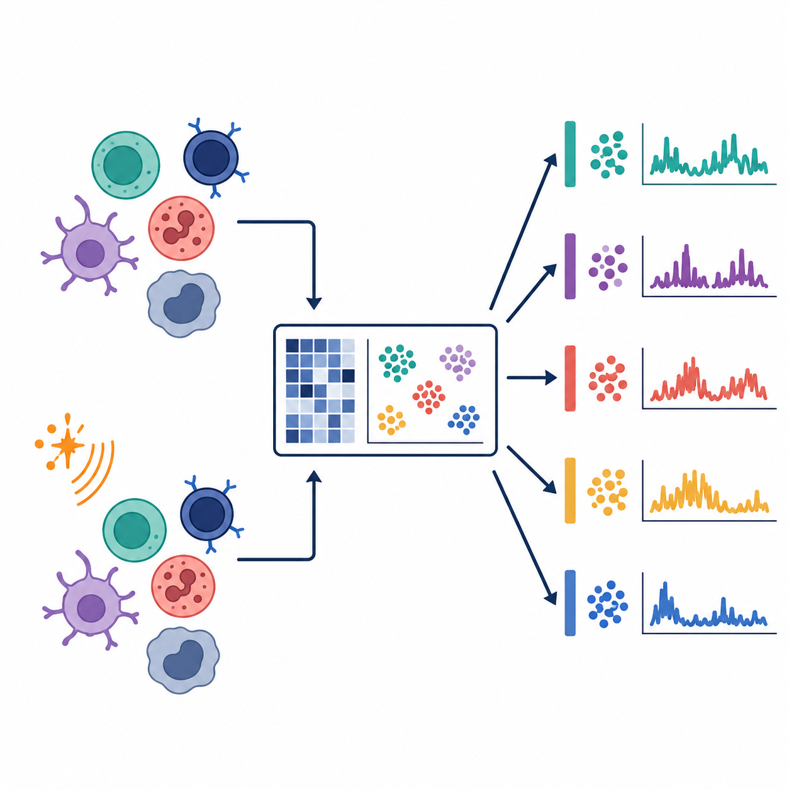 |
Question 1 What latent transcriptional programs are present in IFN-beta stimulated and control PBMC single-cell RNA-seq data? |
Data Import introduces the teaching PBMC dataset and the saved CoGAPS results used for the main analysis. Data Exploration, Data Visualization, and Data Analysis then inspect the learned gene weights, cell activities, and pattern summaries. | CoGAPS represents the PBMC data as multiple latent transcriptional patterns rather than one label per cell. Those patterns become the signals you will interpret in later sections. |
|
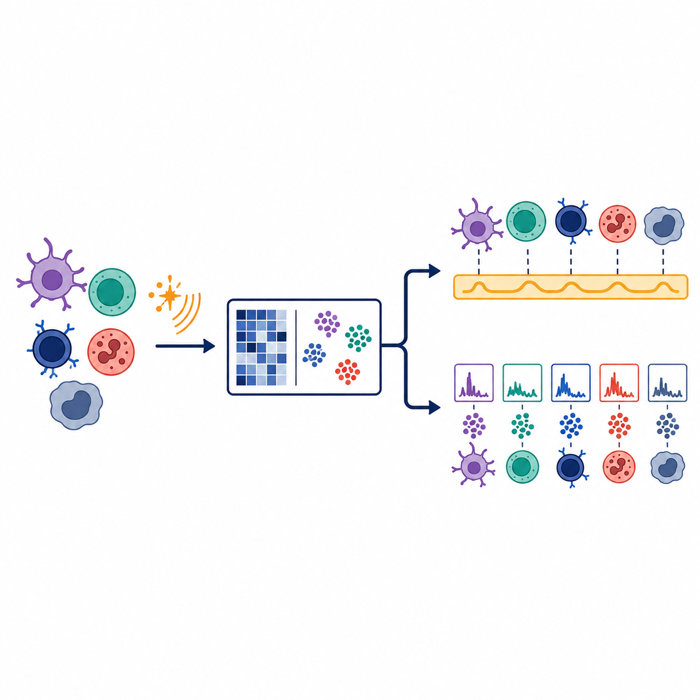 |
Question 2 Can CoGAPS help distinguish broad stimulation-associated activity from cell-type-linked immune programs? |
Data Exploration and Data Visualization show how cells are grouped by condition and cell type. Data Analysis compares how strongly each pattern follows stimulation, which genes define it, and where its activity is strongest across labeled cell types. | A useful model should help separate a broad stimulation-associated activity signal from patterns that look more cell-type-linked or mixed. |
|
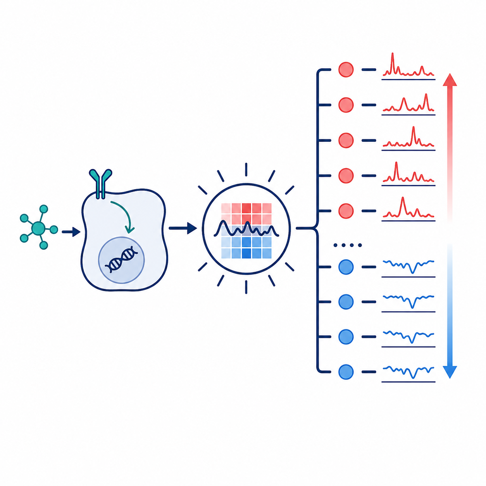 |
Question 3 Which genes define the strongest IFN-associated pattern, and what is their direction in stimulation? |
Data Visualization previews how top pattern genes can be paired with expression direction. Data Analysis identifies the IFN-associated pattern from cell activities, ranks its top genes, and checks whether those genes are higher or lower in IFN-beta-stimulated cells. | The IFN-associated interpretation should be supported by canonical , and must be interpreted alongside directionality. |
|
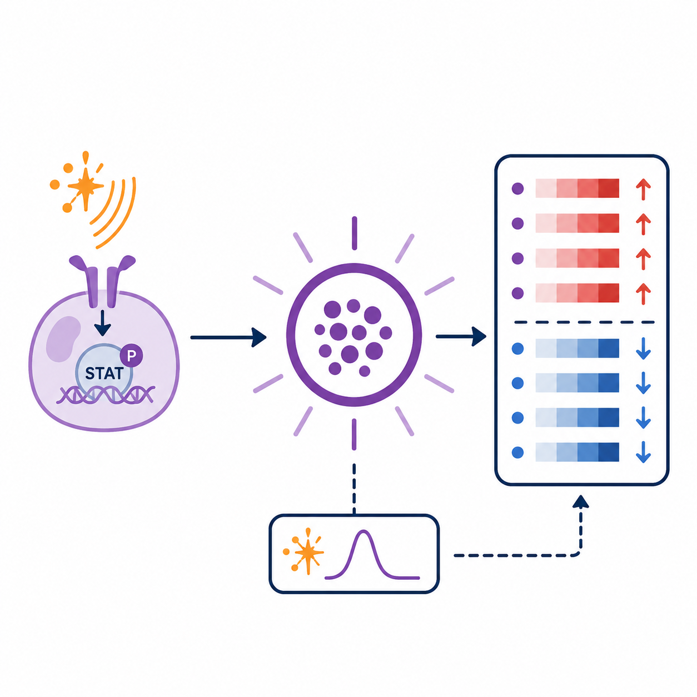 |
Question 4 How does the IFN-associated pattern vary across annotated PBMC cell types? |
Data Visualization previews IFN-associated activity by cell type and condition. Data Analysis compares the pattern across labeled PBMC cell types and checks whether the same gene-direction story appears within those groups. | The IFN-associated pattern should be read as broad but not uniform: its cell activity can cut across immune-cell identities while still varying in strength across cell types. |
The questions are ordered intentionally. First you inspect the latent patterns that CoGAPS learns. Then you separate shared stimulation structure from cell-type-linked structure. Only after that do you attach biological meaning through top genes, directionality, and cell-type summaries.
Learning Objectives
By the end of this case study, you will be able to use a stimulation dataset to interpret learned by . You will inspect the data, follow evidence for the model resolution used later in the analysis, connect and to biological interpretation, and evaluate whether one learned pattern is consistent with a broad interferon-associated response.
The main learner path uses included data summaries and saved CoGAPS results so you can focus on interpretation rather than waiting for a long model run. The Full Reproduction Guide at the end of the case study shows how the larger files and selected-model outputs can be regenerated in the validated Docker image.
The objectives are organized into data analysis and programming skills, latent-variable and CoGAPS modeling skills, and biological interpretation skills. Together, they prepare you to answer the four main questions introduced above.
Data Analysis and Programming Learning Objectives:
- Load and check the teaching PBMC single-cell dataset, including condition, donor, and cell-type metadata.
- Explain why CoGAPS uses a genes-by-cells input and how R and Python store the same single-cell data in different orientations.
- Join cell activities, gene weights, top-gene tables, and cell metadata to create interpretation-ready summaries.
- Create and read plots that compare pattern activity across condition and annotated PBMC cell types.
Latent-Variable and CoGAPS Learning Objectives:
- Describe how CoGAPS represents each cell as a mixture of latent transcriptional patterns.
- Use precomputed rank-selection evidence to explain why model resolution matters, without treating the selected resolution as universally optimal.
- Identify an IFN-associated pattern using cell activities, stimulation association, and top-gene evidence while treating numbered pattern labels as run-specific.
- Interpret gene weights together with expression directionality, recognizing that a high pattern weight does not by itself mean a gene is up-regulated.
Biological Interpretation Learning Objectives:
- Explain why a paired IFN-beta perturbation experiment in PBMCs is useful for studying interferon-response programs.
- Recognize canonical interferon-stimulated genes that support the IFN-associated interpretation.
- Distinguish broad stimulation-associated activity from cell-type-linked immune structure in a mixed PBMC population.
- State what the case-study evidence can and cannot support about SLE, IFN-beta response, cell types, and CoGAPS pattern interpretation.
Objectives map: where each skill is used
| Learning goal | What this helps you do | Where it appears |
|---|---|---|
| Understand the biological setting | Explain why IFN-beta-stimulated PBMCs from donors with SLE are useful for studying interferon-response structure. | Motivation; Context; What are the data? |
| Trace the main learner path | Use included files and saved CoGAPS results while knowing where optional full reproduction belongs. | Packages and Setup; Data Import; Full Reproduction Guide |
| Inspect data and metadata | Check cells, genes, conditions, donors, and annotated cell types before interpreting patterns. | Data Import; Data Exploration |
| Prepare CoGAPS-ready data | Understand genes-by-cells orientation and the difference between the R and Python data representations. | Data Wrangling; Full Reproduction Guide |
| Evaluate model resolution | Explain how the case study uses rank-selection evidence to choose the model resolution inspected later, without treating that choice as universal. | Data Import; Data Analysis; Limitations |
| Interpret latent patterns | Connect gene weights and cell activities to pattern summaries without treating numbered pattern labels as portable across runs. | Data Analysis; Summary |
| Connect patterns to IFN biology | Use stimulation association, top genes, and interferon-stimulated genes to support the IFN-associated interpretation. | Data Visualization; Data Analysis; Summary |
| Check expression direction | Compare gene weights with higher-or-lower expression after stimulation so pattern membership is not confused with regulation. | Data Visualization; Data Analysis |
| Compare activity across cell types | Ask whether the IFN-associated pattern is broad, cell-type-linked, or mixed across annotated PBMC cell types. | Data Visualization; Data Analysis |
| State limits clearly | Separate descriptive latent-pattern evidence from formal disease mechanism, pathway validation, or treatment claims. | Limitations; Summary; Continued Learning |
Context
To interpret the patterns, you need to connect the experimental design, immune-cell biology, and the model’s outputs. This section develops that background, starting with SLE, interferon signaling, and the PBMC mixture, then explaining the Kang study and how CoGAPS represents gene expression as combinations of patterns.
What is systemic lupus erythematosus?
, or SLE, is a systemic . In an autoimmune disease, the immune system can respond to the body’s own cells or molecules. In SLE, that immune activity can affect several organ systems, and symptoms may include fatigue, fever, joint pain or swelling, skin rashes, mouth sores, blood abnormalities, kidney involvement, neurologic symptoms, or inflammation around the heart or lungs (National Institute of Arthritis and Musculoskeletal and Skin Diseases 2024).
The word systemic matters. SLE is not limited to one tissue or one immune-cell type. A person with SLE can have immune signals in blood that relate to inflammation elsewhere in the body. That is one reason blood immune-cell data are useful for teaching this case study: PBMCs are accessible, contain multiple immune-cell populations, and can carry molecular evidence of immune activation.
SLE is also heterogeneous. Two people with the same diagnosis may have different symptoms, affected tissues, autoantibodies, treatment histories, and immune-cell composition. That heterogeneity is part of what makes SLE difficult to study. It also explains why this case study will avoid overclaiming. We are not trying to diagnose SLE, predict disease activity, or prove a clinical mechanism. We are using a PBMC perturbation dataset from donors with SLE to learn how an interpretable interferon-associated signal can be separated from immune-cell identity in single-cell RNA-seq data.
Interferon-beta and its role in SLE
are cytokines: signaling proteins that help immune cells coordinate responses to infection, tissue damage, and other danger signals. include IFN-alpha, IFN-beta, IFN-omega, IFN-epsilon, and IFN-kappa (Chyuan, Tzeng, and Chen 2019). This case study focuses on IFN-beta because IFN-beta is the controlled stimulation used in the source dataset.
A useful way to understand interferon signaling is to follow how a signal at the cell surface changes gene transcription. Type I interferons bind the type I interferon receptor, also called . That receptor activates the pathway, including JAK1, TYK2, STAT1, STAT2, and IRF9. These proteins help turn on many , often abbreviated ISGs (Chyuan, Tzeng, and Chen 2019). In plain language, interferon signaling can leave a recognizable gene-expression footprint.
In SLE, this footprint is often called an . Several SLE studies have reported interferon-associated gene-expression signatures in blood, PBMCs, purified immune-cell populations, and affected tissues (Chyuan, Tzeng, and Chen 2019; Catalina et al. 2019). Catalina and colleagues found that interferon signatures in SLE datasets can include prominent IFNB1-like signatures and can be strongly related to monocyte-associated transcripts (Catalina et al. 2019). That observation is important for this case study because it points to a recurring interpretive issue: an interferon signal may be broad, but it may also vary by cell type.
Several immune-cell populations contribute to interferon signaling and its downstream effects. are known for producing large amounts of type I interferon in response to nucleic-acid sensing. Monocytes and macrophages can participate in inflammatory responses and antigen presentation. Dendritic cells can help connect innate sensing to T-cell and B-cell responses. B cells can contribute to antibody responses, including autoantibody-related processes. T cells help coordinate or carry out adaptive immune responses. Natural killer cells contribute to cytotoxic responses. Neutrophils can release neutrophil extracellular traps, which may provide nucleic-acid material that stimulates interferon pathways in SLE (Chyuan, Tzeng, and Chen 2019).
These populations need not respond identically. Their interactions make it plausible to observe both shared interferon-associated activity and cell-type-linked expression structure.
PBMCs as a mixed immune-cell system
, or PBMCs, are blood immune cells with round nuclei. They include lymphocytes, such as T cells, B cells, and natural killer cells, as well as monocytes and some dendritic cells. PBMCs do not include every immune cell in blood; for example, mature neutrophils are usually not part of the PBMC fraction. Still, PBMCs are widely used because they are accessible and contain many immune populations relevant to systemic immune activity.
For this case study, PBMCs are useful for the same reason they are challenging. A PBMC sample is not one cell type. It is a mixture. A stimulated monocyte can still have monocyte-like expression. A stimulated B cell can still have B-cell-like expression. A stimulated natural killer cell can still have cytotoxic-cell features. At the same time, all of those cells may share some response to IFN-beta.
This creates a layered interpretation problem. Each cell can carry:
- an immune-cell identity signal,
- a stimulation-associated signal,
- donor-specific variation,
- technical variation, and
- noise from sparse single-cell measurement.
No single metadata label captures all of these layers. A cell-type label tells you what a cell most resembles, but not everything that cell is doing. A condition label tells you whether a cell came from control or stimulated culture, but not which genes drove its response. A latent-variable approach is useful because it can represent cells as mixtures of several signals rather than forcing each cell into one explanatory box.
Summary of the Kang et al. study
The source study for this case study is Kang et al. 2018, which introduced demuxlet and used multiplexed droplet single-cell RNA-seq to study PBMC responses to IFN-beta (Kang et al. 2018). The original paper’s main methodological contribution was demuxlet: a computational approach that uses natural genetic variation to assign each droplet to a donor and detect droplets that likely contain cells from more than one person.
The IFN-beta part of that study used PBMCs from eight donors with SLE. For each donor, the researchers split PBMCs into two matched portions, or . One aliquot was left untreated as a control. The other was stimulated with recombinant IFN-beta for six hours. After stimulation, cells were pooled by condition and profiled using droplet single-cell RNA-seq (Kang et al. 2018).
That design has two features that matter for the rest of the case study.
First, it is a . The experiment deliberately changes one condition, IFN-beta exposure, so that the transcriptional response can be measured. This gives the analysis a clear contrast: control versus IFN-beta stimulated cells.
Second, it is a . Control and stimulated cells come from the same donors. That matters because immune profiles can differ substantially across people. A paired design lets the source study compare stimulation responses while keeping donor background more visible.
Kang et al. also used and detection. In droplet single-cell RNA-seq, a droplet ideally contains RNA from one cell. A doublet occurs when material from two cells is captured together and treated as one observation. Demuxlet helped assign cells back to donors and remove likely doublets, improving confidence that later summaries reflected singlet cells rather than mixed droplets (Kang et al. 2018).
The exact files and teaching data objects used in this case study are described in the next section, What are the data? Here, the important source-study point is conceptual: the dataset was designed to compare matched control and IFN-beta-stimulated PBMCs from donors with SLE while retaining single-cell and cell-type information.
Source-study findings to carry forward
Kang et al. did not use CoGAPS. The original paper used the dataset to demonstrate multiplexed droplet single-cell RNA-seq, demuxlet, cell-type-specific response analysis, and genetic analyses. This case study reuses the source dataset for a different teaching goal: learning how CoGAPS can recover and interpret latent transcriptional patterns.
Several source-study findings should guide your expectations before you see the CoGAPS results:
- IFN-beta stimulation produced broad transcriptional changes across PBMCs.
- The source study identified thousands of genes with differential expression in at least one cell type after IFN-beta stimulation (Kang et al. 2018).
- The IFN-beta response included antiviral, chemokine, and SLE-related pathway signals.
- IFN-beta stimulation did not erase cell identity. The original analysis still recovered major immune-cell groups after stimulation.
- Cell-type composition and donor-to-donor variation both mattered, which is why the case study keeps cell type and donor metadata visible.
These findings are expectations, not answers. They tell you what kinds of signals would be biologically plausible. Later sections ask whether the CoGAPS patterns support those expectations in the teaching data.
Interferon genes learners should recognize
You do not need to memorize a long list of interferon genes. You do need enough vocabulary to recognize why a later top-gene list might support an interferon-associated interpretation.
Several gene families often appear in interferon-response analyses:
- ISG genes, such as
ISG15andISG20, are named as interferon-stimulated genes and often appear in interferon-response signatures. - IFIT and IFITM genes, such as
IFIT1,IFIT2,IFIT3, andIFITMfamily members, are commonly associated with antiviral interferon responses. - IFI genes, such as
IFI6, are part of a broad set of interferon-inducible genes. - MX and OAS genes, such as
MX1,OAS1, andOASL, are classic antiviral-response genes that often appear downstream of interferon signaling. - IRF and STAT-related genes, such as
IRF7andSTAT1, connect to transcriptional regulation and interferon pathway signaling. - Nucleic-acid sensing genes, such as
DDX58andIFIH1, relate to sensing viral or self nucleic acids and can connect upstream danger sensing to interferon responses. - Chemokine and immune-regulatory genes, such as
CXCL10,TNFSF10, andSOCS1, can reflect downstream immune communication or regulation.
These gene names are anchors for interpretation, not shortcuts. A top-gene list that includes several canonical interferon-related genes is consistent with an interferon-associated pattern. But you still need to ask where the pattern is active, whether it tracks stimulation, and whether the genes are higher or lower in stimulated cells.
This last point is important. CoGAPS gene weights identify genes that help define a pattern. They do not, by themselves, tell you whether a gene is upregulated or downregulated. Later, you will pair pattern weights with condition-based directionality checks.
From cell clusters to latent patterns
Clustering is often one of the first useful tools in single-cell RNA-seq analysis. A clustering workflow groups cells with similar expression profiles, and those groups can help analysts assign cell-type labels. Reviews of single-cell clustering emphasize that clustering is central to identifying putative cell types, but also that interpretation is challenging because single-cell data are high-dimensional, sparse, and sensitive to preprocessing choices (Kiselev, Andrews, and Hemberg 2019).
For this case study, clustering is helpful but not sufficient. Clustering asks which cells are similar overall. The research questions ask something more layered: which transcriptional signals are present, which signals are shared across immune-cell types, and which signals are most associated with IFN-beta stimulation.
Kotliar and colleagues describe this as a distinction between cell-type identity programs and cellular activity programs (Kotliar et al. 2019). An identity program reflects what a cell is, such as a T cell, B cell, monocyte, or dendritic cell. An activity program reflects what a cell is doing, such as responding to stimulation, cycling, producing cytokines, or activating an antiviral pathway.
The difficult part is that a single cell can express both kinds of programs. A monocyte can have monocyte identity genes and interferon-response genes. A T cell can have T-cell markers and stimulation-response genes. A B cell can retain B-cell identity while also responding to IFN-beta. That is why a one-cell, one-cluster view can be too restrictive for this case study.
A is an inferred signal learned from the expression matrix. It is not a metadata column recorded by the experiment. A useful latent pattern might be identity-like, stimulation-associated, donor-linked, technical, or mixed. The analysis task is not simply to name every pattern. The task is to evaluate each pattern using evidence.
Stop and think
Why might a stimulated monocyte be hard to interpret with only one label?
Answer
A stimulated monocyte carries at least two interpretable signals: it still has monocyte-like expression, and it may also activate interferon-response genes. A single label can name the cell identity, but it does not describe every transcriptional program active in that cell.NMF: the mathematical shape of the problem
Single-cell RNA-seq data can be organized as a matrix. In this case study, the modeling input is a genes-by-cells matrix. Each row represents a gene, each column represents a cell, and each entry is a non-negative expression value.
Here, an expression value is a nonnegative, library-size-normalized and log-transformed RNA measurement for one gene in one cell. It is not the original molecule count. The prepared dataset keeps the original counts for the retained genes in a separate counts layer for later expression-direction comparisons.
, or NMF, asks whether a large non-negative matrix can be approximated as the product of two smaller non-negative matrices. At the intuition level:
observed expression matrix ~= gene weights x cell activitiesIn a compact mathematical form:
\[ D \approx A P \]
Here:
| Object | What it represents | How to read it |
|---|---|---|
D |
the observed expression matrix | genes by cells |
A |
the gene-by-pattern matrix | which genes contribute to each pattern |
P |
the pattern-by-cell matrix | which cells use each pattern strongly |
K |
the number of patterns requested | the model resolution |
For one gene and one cell, the model approximates expression by adding up contributions from all K patterns:
\[ D_{g,c} \approx \sum_{k=1}^{K} A_{g,k} P_{k,c} \]
In plain language, a cell’s expression profile is represented as a mixture of learned patterns. The non-negative constraint matters because patterns add together rather than cancel each other out. That additive structure fits the PBMC problem: a cell can be monocyte-like and interferon-response-like at the same time.
NMF is not magic. It does not know biology by itself. It produces matrices that must be interpreted using genes, cell metadata, experimental design, diagnostics, and prior biological knowledge.
How CoGAPS extends vanilla NMF
is the NMF-family method used in this case study. The name stands for Coordinated Gene Activity in Pattern Sets. CoGAPS was introduced as an R/C++ package for identifying patterns and biological process activity in transcriptomic data (Fertig et al. 2010). Later single-cell CoGAPS work extended this latent-pattern framework to sparse single-cell RNA-seq data (Stein-O’Brien et al. 2019). A later workflow paper describes CoGAPS analysis in R, Python, and GenePattern Notebook (Johnson et al. 2023). The official CoGAPS User Guide introduces the method and software workflows for R and Python users.
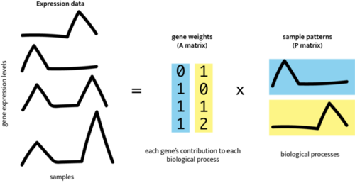
Image credit: CoGAPS logo and schematic from the Fertig Lab CoGAPS User Guide.
The schematic above shows the same basic matrix idea introduced in the NMF section: a large gene-expression matrix is represented by a smaller set of learned patterns. CoGAPS keeps that additive, non-negative structure, but fits the model using a Bayesian, sampling-based approach. Instead of treating one numerical factorization as the whole answer, CoGAPS samples plausible factorizations and summarizes them. This gives the method a natural connection to diagnostics, uncertainty, and stability checks.
You do not need to understand every sampling detail to use the case study. The learner-facing interpretation rests on four ideas:
- Patterns are overlapping. A cell can use more than one pattern.
- Pattern numbers are run-specific. A biological signal should be identified by evidence, not by assuming one pattern label is universal.
- Gene weights are not directionality. A high-weight gene helps define a pattern, but a separate condition comparison is needed to determine whether the gene is higher or lower after stimulation.
- Diagnostics matter. A biologically tempting pattern still needs evidence that the model ran sensibly and that the interpretation is stable enough to use.
The case study uses the R/Bioconductor CoGAPS workflow as the primary implementation. Python/PyCoGAPS-compatible outputs are provided as a secondary implementation path in later tabbed examples. That implementation detail matters for reproducibility, but the interpretation frame is the same: connect pattern activity, gene weights, source-study design, and biological expectations.
PatternMarkers uses a gene’s weights across patterns to identify associations with particular patterns (Stein-O’Brien et al. 2017). This differs from ranking genes only by their weight within one pattern. The top-gene lists in this case study rank saved CoGAPS gene weights; they are not PatternMarkers results.
What choosing K means
The rank, written as K, is the number of latent patterns CoGAPS is asked to learn. Choosing K is a model-resolution decision.
If K is too small, distinct biological signals can be compressed together. For example, one pattern might blend an interferon response with cell-type identity. If K is too large, a signal can fragment across several patterns, making the model harder to interpret and less stable. Neither extreme is automatically better.
This is why the case study does not treat K as a purely technical setting. The useful value of K depends on the analysis goal. Here, the goal is not only to find a strong interferon-response signal. The goal is to find a model that also preserves enough non-interferon structure to respect the mixed PBMC system.
The value of K used for the main analysis is introduced in Data Import after you inspect model-selection evidence. Context gives you the idea; the next sections provide the evidence.
Why run a rank sweep?
A rank sweep means fitting or evaluating CoGAPS models across several candidate values of K. The purpose is to ask how model interpretation changes as the requested number of patterns changes.
For self-guided learners, the important point is that the sweep is precomputed. You will not need to rerun the full sweep during the main learner path. Instead, you will inspect saved summaries that compare candidate ranks using evidence such as:
- whether the interferon-related signal is recovered consistently,
- whether top genes are stable across seeds,
- whether non-interferon structure is preserved,
- whether patterns appear redundant or fragmented,
- how runtime changes as
Kincreases, and - whether the eventual model is interpretable for the biological question.
This is a good example of a broader modeling principle: model choice should be tied to the scientific question. A rank that maximizes one metric may not be the best teaching or biological model if it collapses other important structure.
How pattern evidence will be interpreted later
Later sections will use CoGAPS outputs, but the interpretation logic starts here. A pattern becomes biologically meaningful only after several kinds of evidence agree.
You will ask:
- Where is the pattern active? Cell activities show which cells use the pattern strongly.
- Does activity track the experimental condition? Stimulation-associated activity should differ between control and IFN-beta-stimulated cells.
- Which genes define the pattern? Gene weights identify genes that contribute strongly to the pattern.
- Do the top genes fit known biology? Interferon-associated genes provide literature-guided expectations.
- Which direction do the genes move? Directionality checks ask whether genes are higher or lower after stimulation.
- Does the pattern respect cell identity? Cell-type summaries help distinguish broad stimulation activity from cell-type-linked structure.
- Did the model run sensibly? Diagnostics help evaluate convergence, stability, and fit.
These evidence types are intentionally separate. A pattern can have plausible genes but weak condition association. A pattern can correlate with stimulation but include genes that require careful directionality checks. A pattern can be strong in one cell type but weaker in another. The case study will teach you to combine these pieces rather than rely on one plot or one statistic.
Interpretive boundaries before analysis
The Context section should give you expectations, not conclusions. The source data come from donors with SLE, but the main analysis studies an in vitro IFN-beta stimulation response. The case study does not test an SLE therapy, predict patient outcomes, or prove a disease mechanism. Those limitations are discussed more fully later.
For now, carry forward a narrower and more useful question: can a latent-pattern model help separate a broad interferon-response signal from immune-cell identity in a mixed PBMC single-cell dataset?
Core distinctions to carry forward
- PBMC identity versus stimulation response: A cell can retain immune-cell identity while also responding to IFN-beta.
- Cell cluster versus latent pattern: A cluster groups similar cells; a latent pattern can be shared across cells in different groups.
- Gene weight versus expression direction: A high-weight gene helps define a pattern; directionality asks whether that gene rises or falls after stimulation.
- Rank
Kversus pattern label:Kcontrols how many patterns the model learns; pattern labels are names assigned within one run. - Literature expectation versus analysis result: Interferon biology tells you what to look for; the CoGAPS analysis tests whether the data support that interpretation.
The next section turns this background into concrete files. You will see which processed data objects are included in the case study, which saved CoGAPS artifacts support the main learner path, and which larger files are optional for full reproduction. With the biological and modeling vocabulary in place, those files should read less like a list of artifacts and more like the evidence chain you will use to answer the main questions.
What are the data?
Before you read any files into R or Python, pause to ask what kind of evidence each file contains. Some files describe the public source study. Some files describe the prepared single-cell dataset used in this case study. Some files summarize CoGAPS runs that have already been completed. Keeping those layers separate will help you avoid common mistakes, such as treating every cell as a separate patient or reading a CoGAPS gene weight as if it were already an up-or-down expression result.
The source study is Kang et al. (2018), a multiplexed droplet single-cell RNA-seq study of responses to stimulation (Kang et al. 2018). The source record is Series GSE96583, the public for the Kang study data.
The GEO record contains the series description, sample records, processed supplementary files, and links to raw sequencing data in the Sequence Read Archive. For this case study, the relevant sample records are the batch 2 control and batch 2 IFN-beta-stimulated PBMC samples; the record also includes batch 1 samples used in the source paper’s broader demultiplexing demonstration.
The documented reproduction workflow starts from an annotated Kang PBMC count object distributed through Figshare and Pertpy, not directly from the GEO files. The older project instructions identify Figshare file 34464122 as the download source. The local object is also byte-for-byte identical to a publicly downloaded copy from Pertpy’s current scverse distribution. Its immediate source is therefore identified; the remaining questions concern the upstream preparation steps described below.
In the part of the study used here, PBMCs from eight donors with SLE were split into matched . One aliquot was left as an untreated control, and the other was stimulated with IFN-beta for six hours before single-cell profiling.
That design is useful because the same donor background appears in both conditions. It does not make the data simple, though. Each cell still carries several kinds of information at once: immune-cell identity, donor context, technical measurement noise, and response to stimulation. The purpose of this section is to show what the case-study files represent before those signals are modeled.
The teaching dataset
The main analysis starts from a prepared teaching dataset derived from the Kang PBMC IFN-beta study. It contains 24,673 cells and 3,000 . Each cell has a condition label, an annotated PBMC cell type, a donor or patient replicate label, and low-dimensional coordinates used later for visualization.
The preparation step keeps the scale of the single-cell experiment large enough to be realistic while making the analysis manageable for a case study. Rather than using every measured gene, the workflow keeps genes that are informative across cells. The frozen preprocessing record for this dataset indicates that genes were filtered by minimum cell count, expression values were normalized to a common library size, log-transformed, and then reduced to 3,000 highly variable genes. You will return to these preprocessing choices in Data Wrangling, where the case study explains why filtering, normalization, transformation, and gene selection matter for the matrix used by CoGAPS. The prepared dataset also keeps a count layer so later sections can compare expression direction for selected genes.
The cell dataset is nearly balanced by condition: 12,315 control cells and 12,358 IFN-beta-stimulated cells. Counts differ across the supplied cell-type labels. CD4 T cells form the largest annotated group; other labels include CD14+ monocytes, B cells, NK cells, CD8 T cells, FCGR3A+ monocytes, dendritic cells, and megakaryocytes. These inherited labels help us ask the core questions of the case study: How do different cell types respond to interferon? Which cell types seem impacted and how much?
What is inherited from the source object?
The main learner path uses the prepared dataset above. Full reproduction begins one step earlier, with the annotated Kang PBMC count object distributed through Figshare and Pertpy. The local preprocessing script filters genes, normalizes counts, applies a log transformation, and selects the 3,000 modeled genes. It does not reconstruct donor assignments, cell-type annotations, or the existing PCA and UMAP coordinates. Those fields are inherited from the supplied object.
The table records the dataset’s provenance: where it came from and which preparation steps are documented. A file checksum is a fingerprint that identifies the exact file; it does not establish how the annotations were produced. You do not need the larger source file to follow the main learner path.
| Provenance detail | What is established, and what remains unknown |
|---|---|
| Source study and accession | Kang et al. (2018), GEO GSE96583, including the batch 2 control and IFN-beta-stimulated samples. The Figshare distribution record links both this accession and the Kang article. |
| Distribution and credited creators | Figshare record 19397624, version 2 (March 22, 2022), file 34464122, credits Antonia Schumacher and Lukas Heumos. Pertpy 1.0.2’s loader uses this same file; the current Pertpy/scverse copy is byte-identical to the local source. These credits identify the dataset deposit, not necessarily who performed each annotation step. |
| Exact case-study archive copy | kang_counts_25k.h5ad, 38,356,412 bytes, preserved in this case study’s Zenodo record 21208760 (version-specific DOI: 10.5281/zenodo.21208760). SHA-256: e6a5adac64dcdeb36eaba27db49b63e0c64bb0ed4a64c6705971506b41c39830. |
| Cells and genes in the supplied object | 24,673 cells and 15,706 genes. Local preprocessing retains the same cells and selects 3,000 genes for the teaching dataset. |
| Earlier cell inclusion and filtering | The selection and filtering history that produced these 24,673 cells, including how it relates to the paper’s reported singlets, is not yet known. |
| Donor and condition labels | Donor labels are inherited from replicate. Their exact upstream assignment and mapping history are not yet known. The local script copies the supplied label values (ctrl and stim) into condition; it does not infer donor identity or assign experimental conditions. |
| Cell-type annotation method and author | The labels are inherited from cell_type. The method and person or team responsible for these exact annotations are not yet known. We do not perform a new cell-type annotation here. |
| PCA and UMAP coordinates | X_pca and X_umap are inherited from the source object. Their input genes, preprocessing, and calculation settings are not yet known; they are not recalculated from the 3,000-gene teaching matrix. |
| Source-object conversion software | The software, versions, and conversion steps used to create this source H5AD are not yet known. This is separate from the documented local preprocessing script. |
The paper reports 12,138 control and 12,167 stimulated singlets, totaling 24,305, for its IFN-beta experiment (Kang et al. 2018). The supplied object contains 368 more cells. Because local preprocessing filters genes rather than cells, it does not explain this difference. Until the earlier processing history is established, do not assume that this object contains exactly the same cells as the paper’s reported singlet set.
Data files you will encounter
The table below is a map, not a workflow. Exact filenames and optional large-file setup are handled in Packages and Setup and in the Full Reproduction Guide. Here, focus on what each file family means.
| File family | What it represents | How to read it carefully |
|---|---|---|
| Public GEO record | The NCBI GEO Series record for Kang et al. 2018, including sample records, supplementary processed files, and links to raw SRA data. | This is the public source record; the case study uses a processed teaching dataset derived from it. |
| Supplied annotated count object | The Figshare/Pertpy-distributed count-level H5AD with inherited donor labels, cell-type labels, and visualization coordinates. | This is the starting input for full reproduction, preserved in the case-study Zenodo archive; the local script does not reconstruct it from GEO. |
| Prepared single-cell dataset | Cells, genes, condition labels, donor labels, cell-type labels, and visualization coordinates for the PBMC IFN-beta teaching dataset. | This is the starting dataset for the main analysis, not the complete raw GEO archive. |
| Model-resolution summaries | Precomputed summaries of candidate CoGAPS runs at different values of K, the number of patterns, used to compare model resolution. |
These summaries support a rank decision; they do not give biological names to patterns by themselves. |
| Saved CoGAPS outputs | Pattern activities, gene weights, top-gene summaries, and diagnostic summaries from the selected model loaded later. | Pattern labels are run-specific, and gene weights do not say whether expression is higher or lower after stimulation. |
| Directionality summaries | Targeted stimulation-versus-control expression contrasts for genes used in pattern interpretation. | These summaries help determine direction of change for selected genes; they are not a genome-wide differential-expression analysis. |
| Optional reproduction files | Larger inputs and full model files used to rebuild or audit the workflow outside the main narrative. | These are useful for full reproduction, but they are not required to follow the main narrative. |
What one row means
Rows do not mean the same thing in every file. A row might represent one cell, one gene linked to one pattern, one cell-type summary, or one model run. Reading the row meaning first will make later tables much easier to interpret.
| File group | One row usually represents | What that row helps you ask |
|---|---|---|
| Cell metadata | One cell barcode and its labels. | Which condition, donor, and annotated PBMC cell type does this cell belong to? |
| Cell activity tables | One cell, or one summarized cell group, with CoGAPS pattern activities. | Where is a learned pattern most active? |
| Gene-weight and top-gene tables | One gene’s contribution to one CoGAPS pattern. | Which genes help define a pattern? |
| Directionality tables | One gene contrast between IFN-beta-stimulated and control cells. | Is the gene higher or lower after stimulation? |
| Diagnostic or model-summary tables | One saved trace point, candidate model, or run-level summary. | Did the model run behave reasonably, and how does it compare with alternatives? |
Columns you will see often
You do not need to memorize every column name now, but this overview, can help you get familiar with the data. Think of this table as a trail map for the first few imports: it names the columns that will keep reappearing as you move from cells, to patterns, to genes.
| Column or term | What it means | How to use it |
|---|---|---|
condition |
Whether a cell came from the untreated control or the IFN-beta-stimulated aliquot. | Use it to ask whether pattern activity or gene expression shifts after stimulation. |
cell_type |
The PBMC identity label inherited from the source object, such as CD4 T cells, B cells, NK cells, monocytes, or dendritic cells. | Use it to keep the supplied cell-type annotations visible while interpreting response patterns. |
replicate |
The inherited label for the donor whose PBMC aliquots were cultured with or without IFN-beta. | Use it to compare control and stimulated cells from the same donor; the cells, not the donor, received the stimulation. |
UMAP1, UMAP2 |
Two-dimensional cell-visualization coordinates inherited from the source object. | Use them to explore the cell populations; do not treat distance on the plot as a direct biological measurement. |
n_cells and fraction |
Counts and proportions for a summarized group of cells. | Use them to check how much cell-level evidence contributes to a summary. |
| pattern-activity columns | CoGAPS activity values for learned patterns. | Larger values mean a cell or group uses that pattern more strongly. |
pattern |
A run-specific pattern label in long-format summaries. | Use it to compare patterns, but wait for evidence before assigning biological meaning. |
gene and weight |
A gene symbol and its CoGAPS contribution to a pattern. | Use them to ask which genes help define a pattern. |
log2FC and direction |
Directionality summaries comparing IFN-beta stimulation with control. | Use them to check whether selected genes are higher or lower after stimulation. |
Later sections will introduce a few additional diagnostic columns only when they become useful. For now, the main habit is simple: check whether a table is about cells, patterns, genes, or model behavior before interpreting a number.
Checkpoint
Before importing files, ask yourself: would this table help identify where a pattern is active, which genes define it, or which direction those genes move after stimulation?
Show answer
Cell activity tables help identify where a pattern is active. Gene-weight and top-gene tables help identify which genes define a pattern. Directionality tables are needed to tell whether those genes are higher or lower in IFN-beta-stimulated cells compared with controls.
Boundaries for interpretation
These data are well suited for learning how to interpret latent patterns in a mixed single-cell immune dataset. They are not, by themselves, a clinical test of SLE severity, a therapy study, or proof that one pathway causes disease. The source experiment gives a controlled IFN-beta perturbation in PBMCs from donors with SLE. The case study then asks a data-analysis question: can CoGAPS recover interpretable patterns while keeping stimulation response, cell identity, and gene directionality distinct?
You now have a map of the data layers. Next, the Limitations and Bioethics sections set the interpretation boundaries before Packages and Setup and Data Import begin the executable workflow.
Limitations
This analysis describes a six-hour IFN-beta perturbation in PBMCs from eight donors with SLE. It does not compare patients with healthy controls or establish a clinical mechanism. The following limitations explain how the study design, inherited data preparation and fitted model constrain the conclusions.
The experiment captures one acute response
The Kang et al. experiment compared matched control and IFN-beta-stimulated PBMC aliquots from eight donors with SLE. The stimulated cells were exposed to IFN-beta for six hours outside the body before single-cell profiling (Kang et al. 2018). This provides a controlled view of an acute response because each donor contributes cells to both conditions.
The experiment does not show how the response develops across several time points, changes with different exposure conditions, or behaves in tissues outside the blood. The analyzed data also do not include a healthy comparison group, and this case study does not model disease activity, medication history, treatment response, or clinical outcomes. The results therefore cannot establish a chronic SLE mechanism, predict how a patient will respond to therapy, or represent every person with SLE.
The cells come from eight donors
The prepared dataset contains 24,673 cells, but those cells do not represent 24,673 independent people. The main is the donor. Measuring many cells gives a detailed view of each donor’s PBMC mixture, but it does not increase the number of independent donors.
Later donor-paired summaries and donor-aware models preserve this study structure rather than treating every cell as an independent replicate. Even with that protection, eight donors provide limited . The study can reveal a response that is consistent within these matched donor samples, but it is not large enough to characterize the full range of SLE heterogeneity or support detailed clinical subgroup comparisons.
The prepared dataset defines what the model can learn
The main analysis uses a processed single-cell dataset with 3,000 . Genes outside that selected set cannot contribute to a pattern in the fitted model. Filtering, normalization, log transformation, and variable-gene selection make the analysis tractable, but they also define the expression space available to CoGAPS. A different preprocessing recipe could emphasize somewhat different structure.
This case study has not tested whether the main findings remain the same with a different retained gene set, such as 5,000 rather than 3,000 highly variable genes. The comparisons of pattern number and random seed shown later do not test this separate preprocessing choice. The reported patterns and gene-set interpretations therefore remain conditional on these retained genes.
Source annotations and embeddings are inherited
Full reproduction begins with the annotated Kang PBMC object distributed through Figshare and Pertpy, not a reconstruction from the GEO files. Donor labels, cell-type labels, and PCA and UMAP coordinates are inherited from that object. The exact upstream cell-selection and annotation methods, embedding settings, and conversion steps are not yet known; the source-object provenance table separates these questions from the verified distribution and file identity.
Use the supplied cell-type labels as groups for interpreting the analysis, not as annotations independently validated by this lesson. We do not perform new cell annotation or subclustering. Cell types are represented unequally, and smaller groups provide less information than abundant populations. For that reason, activity differences across annotated cell types should be interpreted as evidence within this prepared dataset, not as a complete map of every PBMC subtype or activation state.
The PCA and UMAP coordinates are not recalculated during local preprocessing or learned by CoGAPS. When you view pattern activity on UMAP, you are placing the model’s results on an inherited layout. A visually coherent map does not by itself validate the supplied labels or the fitted model.
The supplied object contains 24,673 cells, whereas the paper reports 24,305 singlets for the IFN-beta experiment (Kang et al. 2018). The reason for these 368 additional cells is not yet known. Local preprocessing filters genes and retains the supplied cells, so it does not explain the difference. Do not assume that this object contains exactly the paper’s reported singlet set.
Model resolution is a choice, not a biological constant
CoGAPS must be told how many patterns to learn. This is evaluated later using a finite rank sweep, seed-to-seed stability, biological evidence, and runtime. That process can identify a useful resolution for the current analysis, but it cannot prove that one value is the universally correct number of biological programs.
A model with fewer patterns can merge distinct signals, while a model with more patterns can divide one signal into several related parts. CoGAPS is also stochastic, so another seed, run, or software implementation can recover similar biological structure under different pattern numbers. Pattern numbers should therefore be treated as run-specific labels rather than permanent biological names.
Diagnostics support interpretation without proving certainty
The analysis later examines the model’s , snapshot stability, and . These checks help determine whether the fit moved into a more stable region, whether important genes remained similar across saved states, and how variable the sampled pattern summaries were.
Those diagnostics support a practical decision about whether a model is suitable to interpret; they do not prove that every part of the model has converged perfectly. The case study evaluates one selected run in detail rather than comparing several independent sampling chains with formal between-chain diagnostics. Longer runs or additional independent fits could provide stronger evidence for patterns whose stability remains uncertain.
Pattern meaning requires several kinds of evidence
CoGAPS patterns are inferred signals, not directly observed cell types, pathways, or disease mechanisms (Fertig et al. 2010). A biological label is a working interpretation supported by several pieces of evidence: where the pattern is active, which genes have high weights, how activity relates to stimulation and cell identity, whether targeted gene sets are represented, and whether the interpretation agrees with relevant literature.
A shows how strongly a gene helps define a pattern, but it does not show whether that gene is higher or lower after stimulation. The case study therefore uses a separate, donor-aware directionality analysis for selected pattern genes. That analysis is targeted rather than genome-wide, and cell-type-specific directionality summaries remain descriptive unless they are tested with a sufficiently powered donor-aware interaction model. These checks support careful pattern interpretation, but they do not establish that a pattern causes a biological response.
Within these boundaries, the case study can ask whether a selected latent-pattern model separates stimulation-associated activity from immune-cell-linked structure in this prepared eight-donor PBMC dataset. It cannot determine the true number of biological programs in all patients, identify every IFN-responsive gene, establish a clinical SLE mechanism, or show how the response changes across tissues, exposure conditions, or time.
Ethical Considerations
This case study reuses publicly available human single-cell RNA-seq data rather than collecting new samples. Public access makes research more transparent and allows new questions to be studied without placing additional burdens on participants. It does not make the data ethically neutral. The cells, expression measurements, and donor labels still come from people who contributed to biomedical research.
The previous section described limits on what the experiment and model can establish. This section asks a different question: what responsibilities remain when you reuse, analyze, and share human molecular data?
Public availability does not end ethical responsibility
The Kang et al. data were deposited in the NCBI Gene Expression Omnibus so other researchers could inspect and reuse them (Kang et al. 2018). In this case study, they are : data collected by another research team for an earlier study and reused here to answer a new analysis question.
Responsible reuse begins with the source. You should identify the original study, preserve its experimental context, cite the investigators and repository accession, and check whether your proposed use is consistent with the repository record and any stated access conditions. A file being downloadable does not mean that every possible use, linkage, or redistribution is appropriate. Ethical continues after the original study ends because new tools and new linked datasets can create risks that were not obvious when the data were first shared (Wright, Savonen, and Isaac n.d.).
The history of Henrietta Lacks provides an important reminder. Her cells were obtained in 1951 without her knowledge or consent and became widely used in biomedical research. Decades later, the NIH and members of the Lacks family established an agreement governing access to HeLa whole-genome sequence data and recognizing the family’s privacy and preferences (National Institutes of Health n.d.). This history is not evidence that the Kang study had the same consent problem. It shows why scientific usefulness and public availability are not sufficient ethical justifications by themselves: respect for participants, families, provenance, and the intended conditions of reuse must remain visible.
Transcriptomic data still deserve privacy protection
Single-cell RNA-seq measures gene expression rather than producing a complete genome sequence. Even so, sequencing reads can contain inherited genetic variants. The source study used natural genetic variation to assign pooled cells back to coded donors, which demonstrates that molecular data can carry information about individual identity (Kang et al. 2018). Reviews of describe re-identification and information-leakage risks that cannot be solved by one technical safeguard alone (Wan et al. 2022).
The case-study files use coded replicate labels and do not include names, contact information, or clinical identifiers. This reduces risk, but it should not be interpreted as a guarantee that human molecular data can never be linked back to a person. Do not attempt to identify donors, infer ancestry or other private characteristics, or combine these files with external records for that purpose.
Privacy protection also applies when you create new files. Share only the detail needed for the analysis, remove unnecessary participant-level metadata, and inspect files before placing them in GitHub, Zenodo, or another public repository. When a summarized table or figure is sufficient, it may be more appropriate than redistributing a more detailed cell-level or sequence-level file. When source data already have a stable repository home, linking to that record can preserve provenance and access information better than creating an undocumented copy (Wright, Savonen, and Hoffman n.d.).
Data quality is also an ethical responsibility
Poor data quality can lead to misleading conclusions about people or groups. In this case study, filtering, normalization, highly variable gene selection, broad cell-type annotations, donor labels, and condition labels all shape what CoGAPS can learn. Errors or undocumented decisions at any of these steps can be carried into the final patterns.
That is why the analysis checks the prepared data, preserves donor pairing, documents preprocessing, examines model diagnostics, and keeps expression direction separate from CoGAPS gene weights. These are not only technical habits. They reduce the risk of presenting a computational artifact as biological evidence. Unequal cell-type representation and a cohort of eight donors with SLE also mean that the results should not be generalized to every person with SLE or every immune-cell population.
A latent pattern is not a diagnosis or a mechanism
CoGAPS patterns are inferred statistical summaries. They are not directly measured pathways, fixed cell identities, clinical severity scores, or diagnoses. Pattern activity indicates how strongly a learned expression pattern is represented in a cell; it does not tell you how sick a donor is or whether a treatment will work.
The case study therefore interprets a pattern using several kinds of evidence: cell activity, top genes, stimulation association, donor-paired shifts, cell-type location, directionality, targeted gene sets, diagnostics, and relevant literature. A biological name remains a supported interpretation rather than an intrinsic property discovered without uncertainty. Pattern numbers are also run-specific and should never be treated as portable labels for people or biological states.
Ask what a proxy actually measures
A is an observed quantity used as a stand-in for something that cannot be measured directly. Proxies can be useful, but they can also carry hidden assumptions. Obermeyer and colleagues showed that a health-care algorithm produced racial bias when it used health-care cost as a proxy for health need. Because cost did not represent health need equally across groups, the proxy produced unequal results (Obermeyer et al. 2019).
That study used a different dataset and algorithm, but its lesson applies here. IFN correlation is evidence that pattern activity follows the stimulation label; it is not a direct assay of every step in interferon signaling. A top-gene list helps interpret a pattern; it is not proof that the pattern is a complete pathway. An annotated cell type is a useful biological guide; it is not a perfect or permanent description of every cell. Ethical interpretation requires naming what each measure captures, what it leaves out, and what harm could follow if the distinction is ignored.
Ethical checkpoint for reuse and communication
Before sharing a derivative file, figure, or conclusion from human molecular data, ask:
- Is the use consistent with the source? Have you cited the original investigators and repository, preserved the study context, and checked relevant access or reuse conditions?
- Are you sharing only what is needed? Could a summarized or de-identified file answer the question with less privacy risk?
- What does the model output actually measure? Are you distinguishing inferred pattern activity from clinical status, causal mechanism, or participant identity?
- Who could be harmed by an overclaim? Could the result stigmatize a group, expose private information, or be misused for clinical decisions that the data cannot support?
For this case study, a responsible conclusion stays close to the experiment: the analysis examines expression patterns in matched control and six-hour IFN-beta-stimulated PBMC samples from eight coded donors with SLE. It does not identify participants, diagnose SLE, rank donors, predict treatment response, or justify clinical decisions. Responsible reuse means preserving that boundary while giving credit to the people and research team who made the data available.
Packages and Setup
This section gets your computer ready for the case study. The main learner path uses the case-study repository, the validated Docker image, included teaching data, saved model-selection summaries, and lightweight exports from the selected CoGAPS model. That path lets you focus on importing, checking, visualizing, and interpreting evidence without waiting for long model runs.
The full local reproduction path is optional. It uses the same repository and Docker image, but adds larger files so a reviewer, instructor, or advanced learner can regenerate selected-model outputs. The high-performance-computing sweep is not rerun in the main learner path; later sections inspect the included sweep summaries instead.
This case study uses R as the primary implementation and Python as a parallel implementation in the second tab. The R path uses SingleCellExperiment and Bioconductor CoGAPS; the Python path uses AnnData and PyCoGAPS-compatible saved outputs. The scientific workflow is the same in both languages, but saved CoGAPS outputs are kept separate because the two implementations should be treated as parallel analyses rather than numerically identical reruns.
What the setup provides
Think of setup as four connected pieces:
| Setup piece | What it provides | When you need it |
|---|---|---|
| Docker image | R, Python, CoGAPS, PyCoGAPS, Quarto, plotting tools, and the OpenMP-enabled runtime used for this case study. | Use this for the main learner path and for full local reproduction. |
| GitHub repository | The case-study pages, scripts, manifests, included teaching data, selected-model summaries, and figures. | Use this for the main learner path. |
| Optional large-file archive | Larger source or model files, such as full model objects or dense CoGAPS inputs, that are not kept in ordinary GitHub history. | Use this only for full local reproduction or deeper audit work. |
| HPC sweep provenance | Included sweep summaries and scripts documenting the broader rank search. | Inspect the summaries in the lesson; rerunning the sweep is separate cluster work. |
The first figure keeps those pieces separate. Docker supplies the software environment. GitHub supplies the files used in the main lesson. Optional Zenodo or local files support deeper rebuilding, and the HPC sweep remains a separate provenance layer.
The second figure shows how the main learner path differs from full local reproduction. Follow the left path for the case study itself. Use the upper-right path only if you want to rebuild selected files after obtaining the larger inputs. Treat the lower-right HPC sweep as provenance: the case study includes the sweep summaries so you can evaluate rank evidence without launching cluster jobs.
Main learner setup
Start here to run the main learner path. If you only want to read the rendered case study, you can skip software setup.
Check that Docker is ready
Open Docker Desktop and wait for its engine to start. Use the Host Terminal, meaning a terminal on your computer outside RStudio and the case-study container. The commands below use Bash-style syntax: use Terminal on macOS or Linux, or a WSL terminal with Docker Desktop integration enabled on Windows, rather than PowerShell or Command Prompt.
Host Terminal
docker infoLook for a Server section containing a server version and system information, without a connection error. A Client section alone does not confirm that the engine is reachable. If you see a message such as “Cannot connect to the Docker daemon”, the terminal cannot reach the engine. Check that Docker Desktop is open and has finished starting, then try again. If the error persists, check Docker’s connection settings; do not move the command into the RStudio Console. If docker is not found, check the Docker installation before continuing.
Download the project
Choose one of the following routes. Both use the repository’s main branch. A ZIP download provides the project files without requiring Git or downloading the Git history.
Option 1: Clone with Git
Open the Host Terminal in the folder where you want to keep the case study, then run:
Host Terminal
git clone --branch main https://github.com/opencasestudies/ocs-bio-latent-variable.git
cd ocs-bio-latent-variableOption 2: Download ZIP without Git
- Open the case-study repository, select the
mainbranch, and choose Code > Download ZIP. - Extract the ZIP and open the extracted folder. Find the folder containing
index.qmd,scripts/, anddata/; this is the project root. Use those contents to identify it, rather than relying on the extracted folder’s name. - In the Host Terminal, change to that project root. Replace the example path below with the full path to your extracted folder, keeping the quotes if the path contains spaces.
Host Terminal
cd "/full/path/to/extracted/project"Check the project root
After either download route, check your location and confirm that all three entries are present:
Host Terminal
pwd
ls -d index.qmd scripts dataContinue only when index.qmd, scripts, and data are all listed without a missing-file error. If an entry is missing, change to the project root and repeat the check. The Docker command below mounts your current folder, so starting from the ZIP’s parent folder would give RStudio the wrong files.
Launch the case-study environment
From the checked project root, pull and launch the existing case-study image:
Host Terminal
docker pull --platform linux/amd64 othomas2/pycogaps-runtime-guide:0.3.1
docker run --platform linux/amd64 --rm -it \
-p 8787:8787 \
-e PASSWORD="Password12" \
-v "$PWD":/home/rstudio/project:rw \
othomas2/pycogaps-runtime-guide:0.3.1This command starts RStudio Server inside the container and mounts your downloaded project at /home/rstudio/project. The mount is writable (rw), so small outputs you create in the project folder are saved back to your local project folder, whether you cloned it or extracted a ZIP.
The --platform linux/amd64 option keeps the runtime consistent with the validated case-study image. On Apple silicon Macs, Docker may use emulation for this image, so long model-fitting runs can be slower than they would be on native Linux hardware. The main learner path avoids that problem by using included CoGAPS evidence.
Full local reproduction setup
Optional: inspect or rebuild full model outputs
Use this path only if you want to regenerate selected-model files or inspect larger model objects. Keep the GitHub project and obtain any additional inputs from Zenodo record 21208760, DOI 10.5281/zenodo.21208760. This fixed release contains the source and saved-model files used by this guide. The main learner path does not need these additional downloads.
Follow Download The Files For Your Route to choose files from the record’s Files list. Download only the inputs your chosen stage needs: preprocessing needs the larger source file, while inspecting or exporting the saved R model needs its .rds file. Fitting a new R model from the included prepared data does not require an archive download or a pre-existing model.
The guide’s file-placement table and data/external/README.md give the exact destinations, including the required filename change for the optional Python model. The record provides individual files, so keep their downloaded names in a separate reference folder and copy only needed inputs into a separate reproduction working project.
Creating an archive folder does not download these files. Keep the downloaded reference copies unchanged and mount that folder read-only, as shown in the guide. Use its stage-specific file check to verify inputs before running a script. It reports missing files and checks original archive inputs against their recorded sizes and checksums.
Full local reproduction uses complete scripts rather than copying every chunk by hand. Follow the Full Reproduction Guide to check the inputs for your chosen stage before running a script. Reading the main case study does not require any model reruns.
The selected-model launchers below start their own Docker containers. Run them in the Host Terminal, not the RStudio Terminal inside the container or the RStudio Console. Keep Docker Desktop running. If your first Host Terminal is occupied by the RStudio Server container, open a second Host Terminal window or tab.
Change to the same local project root you mounted for RStudio, whether you cloned it or extracted a ZIP. Replace the example path with the path on your computer; /home/rstudio/project is the path inside the RStudio container, not the host path.
Host Terminal
cd "/full/path/to/your/project"
pwd
ls -d index.qmd scripts dataThe following commands fit models and write outputs; they are not setup checks. Choose the R route for primary reproduction. The parallel Python route is optional and requires the separate dense CoGAPS input file. You do not need to run both.
Host Terminal: R selected-model launcher
bash scripts/reproduction/run_selected_model_r.shHost Terminal: optional Python selected-model launcher
bash scripts/reproduction/run_selected_model_python.shKeep any model-fitting run visible in the Host Terminal so you can watch its progress. The launchers stop if a full model already exists; see the guide before intentionally replacing a saved result. After fitting, return to the RStudio Terminal inside the container for the guide’s export commands and run cd /home/rstudio/project there first. These export commands use the R and Python packages installed in the container.
The full rank sweep is intentionally not part of local reproduction. Learners analyze the included sweep summaries under data/processed/k_selection/.
Open RStudio Server
After Docker starts, open http://localhost:8787 and sign in with username rstudio and password Password12. Keep the online case-study page open in one browser tab and RStudio Server open in another.
In RStudio Server, work from /home/rstudio/project, the mounted project folder. Set the working directory in each session you use before running code with relative file paths.
RStudio Console
setwd("/home/rstudio/project")
getwd()RStudio Terminal inside the container
Open the Terminal tab in RStudio, then run:
cd /home/rstudio/project
pwdEach check should report /home/rstudio/project. The RStudio Console and the RStudio Terminal inside the container have separate working directories: changing one does not change the other. Use getwd() to check R’s location and pwd to check the Terminal’s location.
The schematic below labels the main panes you will use while working through the case study.
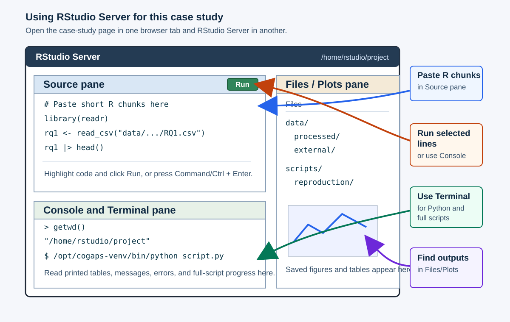
| What you are running | Where to paste or run it | Where output appears |
|---|---|---|
| Short R chunks from an R tab | A saved R script in the Source pane, run in the RStudio Console | Console output, Plots pane, and saved files in the Files pane |
| Short Python chunks from a Python tab | Python session started from the RStudio Terminal inside the container, or a saved .py script run there |
Plain-text tables in the Terminal; plot PNGs under learner_outputs/python/ in the Files pane |
Selected-model launchers (run_selected_model_r.sh or run_selected_model_python.sh) |
Host Terminal at your local project root | Model progress messages and files in the selected-model output folder |
Reproduction export commands (Rscript or /opt/cogaps-venv/bin/python) |
RStudio Terminal inside the container, from /home/rstudio/project |
Export messages and regenerated tables or figures |
R: keep your work in a saved script
Choose File > New File > R Script and save the new file as case_study_work.R in /home/rstudio/project. Add successive R chunks to this script as you work through the case study. Highlight the lines you want to run and click Run; they execute in the RStudio Console. Use the Console directly for brief checks such as getwd(), rather than keeping your only copy of the workflow in the Console history.
Keep setwd("/home/rstudio/project") and the package and helper setup chunks near the top of your script. When you return to a new R session, reopen the script and rerun those setup chunks and any earlier chunks that create objects needed by the section you are resuming. Saving the script preserves your code, not the objects in an R session. Files saved in the mounted project folder remain in your local project when the container stops.
Python: start a separate session
For Python chunks, start the existing Python workflow from the Terminal pane, not the RStudio Console.
RStudio Terminal inside the container
cd /home/rstudio/project
/opt/cogaps-venv/bin/pythonPython session
Once the >>> prompt appears, paste Python code only; do not include the prompt itself. For longer Python examples, save the code in a .py file in /home/rstudio/project and run it with /opt/cogaps-venv/bin/python from the RStudio Terminal inside the container. Run exit() in the Python session to return to the Terminal before entering shell commands such as cd.
Run the Python package and helper setup chunks below before the later examples. The table helper prints plain-text tables in the Terminal. Wide tables may continue in blocks of columns; their values are not shortened. You can compare your output with the tables shown on this page.
Python plots do not appear in RStudio’s R Plots pane. The plotting chunks use show_plot() to save each plot as a PNG under learner_outputs/python/ and print its full path. This folder is created when you run your first plot. In RStudio’s Files pane, open Home > project > learner_outputs > python and click the PNG filename to view it in the browser. Refresh the Files pane if the new file is not listed. The same PNG is also saved in the learner_outputs/python/ folder of your local project on your computer.
Each plotting chunk supplies a descriptive filename. Rerunning that chunk replaces its PNG, so rename an earlier copy first if you want to keep it. These PNGs are your own copies; saving them does not replace the case study’s included data or figures.
Load packages
The Docker image already installs the packages used below. Load the packages for the language you plan to use.
| Package | Use |
|---|---|
zellkonverter |
Read .h5ad files into SingleCellExperiment |
SingleCellExperiment |
Represent single-cell data in Bioconductor form |
SummarizedExperiment |
Access assays and metadata cleanly |
CoGAPS |
Optional local CoGAPS model execution in R |
jsonlite |
Read saved metrics JSON files |
ggplot2 |
Plot figures in the R workflow |
dplyr, tibble, readr |
Summaries and lightweight artifact I/O |
nlme |
Optional donor-aware mixed-model check |
from __future__ import annotations
from pathlib import Path
import json
import platform
import sys
import anndata as ad
import matplotlib.pyplot as plt
import numpy as np
import pandas as pd
from scipy import sparse
import statsmodels.formula.api as smf
from scripts.helpers.case_study_display import render_table, show_plot| Package | Use |
|---|---|
anndata |
Read and write AnnData .h5ad files |
pandas |
Summarize metadata, pattern tables, and directionality outputs |
numpy |
Matrix and numerical operations |
scipy |
Sparse matrix handling and statistical summaries |
statsmodels |
Optional donor-aware mixed-model check |
matplotlib |
Plot figures used in the case study |
PyCoGAPS |
Optional local CoGAPS model execution in Python |
The R and Python tabs are alternate ways to complete the same conceptual checks. Choose one language for the main lesson unless you specifically want to compare implementations.
Check the runtime
These checks confirm that the main packages are available in the language you choose.
r_runtime_packages <- c(
"zellkonverter",
"SingleCellExperiment",
"SummarizedExperiment",
"CoGAPS",
"jsonlite",
"ggplot2",
"dplyr",
"tibble",
"readr",
"nlme"
)
data.frame(
item = c("R", r_runtime_packages),
available = c(TRUE, vapply(r_runtime_packages, requireNamespace, logical(1), quietly = TRUE)),
version = c(
R.version.string,
vapply(
r_runtime_packages,
function(pkg) {
if (requireNamespace(pkg, quietly = TRUE)) {
as.character(utils::packageVersion(pkg))
} else {
"not installed"
}
},
character(1)
)
)
) item available
R TRUE
zellkonverter zellkonverter TRUE
SingleCellExperiment SingleCellExperiment TRUE
SummarizedExperiment SummarizedExperiment TRUE
CoGAPS CoGAPS TRUE
jsonlite jsonlite TRUE
ggplot2 ggplot2 TRUE
dplyr dplyr TRUE
tibble tibble TRUE
readr readr TRUE
nlme nlme TRUE
version
R version 4.3.2 (2023-10-31)
zellkonverter 1.12.1
SingleCellExperiment 1.24.0
SummarizedExperiment 1.32.0
CoGAPS 3.22.0
jsonlite 1.8.8
ggplot2 4.0.3
dplyr 1.1.4
tibble 3.2.1
readr 2.1.5
nlme 3.1.163import importlib.util
import scipy
import statsmodels
python_runtime_packages = ["anndata", "matplotlib", "numpy", "pandas", "scipy", "statsmodels"]
python_runtime_check = pd.DataFrame(
{
"item": ["Python", *python_runtime_packages, "PyCoGAPS"],
"available": [
True,
*[importlib.util.find_spec(pkg) is not None for pkg in python_runtime_packages],
importlib.util.find_spec("PyCoGAPS") is not None,
],
"version": [
sys.version.split()[0],
ad.__version__,
plt.matplotlib.__version__,
np.__version__,
pd.__version__,
scipy.__version__,
statsmodels.__version__,
"installed" if importlib.util.find_spec("PyCoGAPS") is not None else "optional/not installed",
],
}
)
print(render_table(python_runtime_check))| item | available | version |
|---|---|---|
| Python | True | 3.10.12 |
| anndata | True | 0.11.4 |
| matplotlib | True | 3.7.3 |
| numpy | True | 1.24.4 |
| pandas | True | 2.0.3 |
| scipy | True | 1.15.3 |
| statsmodels | True | 0.14.0 |
| PyCoGAPS | True | installed |
Where the case-study files live
The case study uses the same few folders repeatedly. You do not need to memorize every file path, but you do need to run the short setup code below before continuing. That code teaches R or Python where to find the prepared data, model-selection summaries, saved CoGAPS outputs, and optional reproduction files.
| Location | What you will use it for |
|---|---|
data/processed/input/ |
Prepared single-cell data used in the main lesson |
data/processed/k_selection/ |
Saved model-resolution summaries from the rank sweep |
data/processed/selected_model_k6/r/ |
Included compact R CoGAPS tables, matrix exports, and model metadata |
data/processed/selected_model_k6/python/ |
Included compact Python CoGAPS tables, matrix exports, and model metadata |
img/ |
Figures shown in the case study |
scripts/ |
Helper scripts and optional reproduction scripts |
learner_outputs/python/ |
Your PNGs from Python plotting chunks; created on the first plot, not an included data folder |
Both selected-model folders include pattern_summary.csv and other compact teaching outputs. The full saved model objects, cogaps_K6_seed2_iter2000.rds in the R folder and cogaps_K6_seed2_iter2000.h5ad in the Python folder, are optional files for separate download. They are not included in a standard clone or ZIP and are not required for the main learner path.
Do not confuse the optional Python model file with data/processed/input/preprocessed_cells_hvg3000.h5ad: that file is the prepared dataset included for the main learner path. You can find the two selected-model folders in RStudio’s Files pane by opening data, then processed, then selected_model_k6, and choosing r or python.
Run the helper setup once after loading packages. If you are working through the case study interactively, run the tab for your language before moving to the Data Import section. Later chunks depend on these helper paths.
source(file.path("scripts", "helpers", "case_study_paths.R"))from scripts.helpers.case_study_paths import *Now check that the mounted project folder contains the included files used at the start of the case study.
data.frame(
item = c(
"case-study manifest",
"processed teaching input",
"model-resolution summaries",
"selected R CoGAPS evidence",
"selected Python CoGAPS evidence"
),
available = c(
file.exists(ARTIFACT_MANIFEST_JSON_R),
file.exists(PREPROCESSED_H5AD_R),
dir.exists(MODEL_SELECTION_DIR_R),
dir.exists(SELECTED_R_RESULTS_DIR_R),
dir.exists(SELECTED_PYTHON_RESULTS_DIR_R)
)
) item available
1 case-study manifest TRUE
2 processed teaching input TRUE
3 model-resolution summaries TRUE
4 selected R CoGAPS evidence TRUE
5 selected Python CoGAPS evidence TRUEpython_file_check = pd.DataFrame(
{
"item": [
"case-study manifest",
"processed teaching input",
"model-resolution summaries",
"selected R CoGAPS evidence",
"selected Python CoGAPS evidence",
],
"available": [
ARTIFACT_MANIFEST_JSON.exists(),
PREPROCESSED_H5AD.exists(),
MODEL_SELECTION_DIR.is_dir(),
SELECTED_R_RESULTS_DIR.is_dir(),
SELECTED_PYTHON_RESULTS_DIR.is_dir(),
],
}
)
print(render_table(python_file_check))| item | available |
|---|---|
| case-study manifest | True |
| processed teaching input | True |
| model-resolution summaries | True |
| selected R CoGAPS evidence | True |
| selected Python CoGAPS evidence | True |
Data Import
In this section, you will import the files that later sections use for model checking, visualization, and interpretation. Import means reading a file into an R or Python object so you can inspect it in your working session.
This section also includes the first major modeling checkpoint in the case study: choosing the CoGAPS model resolution. In CoGAPS, means the number of latent patterns the model is asked to learn. This setting is usually written as K.
Rather than asking you to rerun a long model sweep, the case study gives you precomputed sweep summaries. You will inspect those summaries, decide why K = 6 is carried forward for the main learner path, and then import the prepared single-cell data and saved CoGAPS outputs for that selected model.
Run these chunks before continuing
Later sections reuse the objects created here. In R, the prepared single-cell object is called sce_cells. In Python, the same prepared data are called adata_cells. The selected-model checks and imported file paths are also reused when you inspect CoGAPS activities, genes, diagnostics, and directionality.
Start With The File Record
The main learner path uses included teaching files and saved model evidence so you can focus on inspecting, checking, and interpreting the analysis. Larger files are optional and are only needed if you want to rebuild selected outputs or audit larger model objects locally.
The small file that records this distinction is the . It tells you which files are included in the repository, which files are optional, and which files are intentionally excluded from the normal learner path.
In the next chunk, the code reads data/artifact_manifest.json. A JSON file stores structured information as named fields. In R, jsonlite::read_json() turns that file into R lists and data frames. In Python, json.load() reads the same file into dictionaries and lists. The Python tab uses print(render_table(...)) to display a plain-text table in your Terminal. Compare its contents with the table shown below. See Python output instructions if you need to return to the setup steps.
artifact_manifest_r <- jsonlite::read_json(
ARTIFACT_MANIFEST_JSON_R,
simplifyVector = TRUE
)
manifest_group_summary_r <- tibble::tibble(
file_group = c(
"Included in the repository",
"Optional external or local files",
"Intentionally excluded from repository assets"
),
n_files = c(
nrow(artifact_manifest_r$included_files),
nrow(artifact_manifest_r$optional_external_or_local_files),
nrow(artifact_manifest_r$explicitly_excluded_from_publication_assets)
),
what_it_means = c(
"Files used in the main learner path.",
"Large files for full local rebuilding or deeper inspection.",
"Files kept out of GitHub because they are too large or regenerated."
),
learner_action = c(
"Use these files while working through the case study.",
"Add these only if you are doing full local reproduction.",
"Do not expect these files to be present in a normal repository clone."
)
)
knitr::kable(
manifest_group_summary_r,
col.names = c("File group", "Files", "What it means", "Learner action")
)| File group | Files | What it means | Learner action |
|---|---|---|---|
| Included in the repository | 57 | Files used in the main learner path. | Use these files while working through the case study. |
| Optional external or local files | 5 | Large files for full local rebuilding or deeper inspection. | Add these only if you are doing full local reproduction. |
| Intentionally excluded from repository assets | 3 | Files kept out of GitHub because they are too large or regenerated. | Do not expect these files to be present in a normal repository clone. |
from scripts.helpers.case_study_display import render_table
with open(ARTIFACT_MANIFEST_JSON) as f:
artifact_manifest = json.load(f)
manifest_group_summary = pd.DataFrame(
{
"File group": [
"Included in the repository",
"Optional external or local files",
"Intentionally excluded from repository assets",
],
"Files": [
len(artifact_manifest["included_files"]),
len(artifact_manifest["optional_external_or_local_files"]),
len(artifact_manifest["explicitly_excluded_from_publication_assets"]),
],
"What it means": [
"Files used in the main learner path.",
"Large files for full local rebuilding or deeper inspection.",
"Files kept out of GitHub because they are too large or regenerated.",
],
"Learner action": [
"Use these files while working through the case study.",
"Add these only if you are doing full local reproduction.",
"Do not expect these files to be present in a normal repository clone.",
],
}
)
print(render_table(manifest_group_summary))| File group | Files | What it means | Learner action |
|---|---|---|---|
| Included in the repository | 57 | Files used in the main learner path. | Use these files while working through the case study. |
| Optional external or local files | 5 | Large files for full local rebuilding or deeper inspection. | Add these only if you are doing full local reproduction. |
| Intentionally excluded from repository assets | 3 | Files kept out of GitHub because they are too large or regenerated. | Do not expect these files to be present in a normal repository clone. |
The main point is that you do not need to rerun the full CoGAPS sweep to work through the case study. The repository includes the prepared teaching data, model-selection summaries, and lightweight selected-model outputs. Optional large files are useful for auditing or rebuilding selected outputs, but they are not required for the main analysis path.
Use The Decision Manifest As An Evidence Map
The second record is the . It stores the current selected model settings and points to the evidence files behind that choice.
Do not treat the manifest as a substitute for reasoning. Its job is to keep the selected settings reproducible. Your job in this section is to inspect the evidence that makes those settings reasonable for the case-study goal.
k_selection_decision_r <- jsonlite::fromJSON(K_SELECTION_DECISION_JSON_R)
selected_model_r <- k_selection_decision_r$selected_model
evidence_file_table_r <- tibble::tibble(
evidence_key = names(k_selection_decision_r$evidence_files),
path = unlist(k_selection_decision_r$evidence_files, use.names = FALSE)
) |>
dplyr::filter(evidence_key != "k6_vs_k7_pattern_matching") |>
dplyr::mutate(
evidence = dplyr::recode(
evidence_key,
lower_k_sweep = "Lower-K sweep",
long_iteration_lower_k_sweep = "Longer lower-K sweep",
candidate_pattern_structure = "Candidate pattern structure",
high_k_sweep = "High-K sweep",
selected_r_metrics = "Selected R model metrics",
selected_python_metrics = "Selected Python model metrics"
),
`what you inspect` = dplyr::recode(
evidence_key,
lower_k_sweep = "IFN recovery at smaller K",
long_iteration_lower_k_sweep = "Longer-run stability",
candidate_pattern_structure = "Pattern structure",
high_k_sweep = "High-K runtime and stability",
selected_r_metrics = "Selected R run settings",
selected_python_metrics = "Selected Python run settings"
)
) |>
dplyr::mutate(
file = basename(path),
available = file.exists(file.path(ROOT_R, path))
)
knitr::kable(
evidence_file_table_r |>
dplyr::select(evidence, file, `what you inspect`, available),
col.names = c("Evidence", "File", "What you inspect", "Available")
)| Evidence | File | What you inspect | Available |
|---|---|---|---|
| Lower-K sweep | phase1_lowerk_summary.csv | IFN recovery at smaller K | TRUE |
| Longer lower-K sweep | phase1b_lowerk_long_summary.csv | Longer-run stability | TRUE |
| Candidate pattern structure | candidate_pattern_summary.csv | Pattern structure | TRUE |
| High-K sweep | phase3_highk_2000_summary.csv | High-K runtime and stability | TRUE |
| Selected R model metrics | cogaps_K6_seed2_iter2000.metrics.json | Selected R run settings | TRUE |
| Selected Python model metrics | cogaps_K6_seed2_iter2000.metrics.json | Selected Python run settings | TRUE |
with open(K_SELECTION_DECISION_JSON) as f:
k_selection_decision = json.load(f)
selected_model = k_selection_decision["selected_model"]
evidence_labels = {
"lower_k_sweep": ("Lower-K sweep", "IFN recovery at smaller K"),
"long_iteration_lower_k_sweep": (
"Longer lower-K sweep",
"Longer-run stability",
),
"candidate_pattern_structure": (
"Candidate pattern structure",
"Pattern structure",
),
"high_k_sweep": ("High-K sweep", "High-K runtime and stability"),
"selected_r_metrics": ("Selected R model metrics", "Selected R run settings"),
"selected_python_metrics": (
"Selected Python model metrics",
"Selected Python run settings",
),
}
evidence_records = [
(key, path)
for key, path in k_selection_decision["evidence_files"].items()
if key != "k6_vs_k7_pattern_matching"
]
evidence_file_table = pd.DataFrame(
{
"Evidence file": [evidence_labels[key][0] for key, _ in evidence_records],
"Path": [path for _, path in evidence_records],
"What you inspect": [evidence_labels[key][1] for key, _ in evidence_records],
}
)
evidence_file_table["Available"] = evidence_file_table["Path"].map(
lambda path: (ROOT / path).exists()
)
evidence_file_table["File"] = evidence_file_table["Path"].map(
lambda path: Path(path).name
)
print(render_table(
evidence_file_table[
["Evidence file", "File", "What you inspect", "Available"]
].rename(columns={"Evidence file": "Evidence"})
))| Evidence | File | What you inspect | Available |
|---|---|---|---|
| Lower-K sweep | phase1_lowerk_summary.csv | IFN recovery at smaller K | True |
| Longer lower-K sweep | phase1b_lowerk_long_summary.csv | Longer-run stability | True |
| Candidate pattern structure | candidate_pattern_summary.csv | Pattern structure | True |
| High-K sweep | phase3_highk_2000_summary.csv | High-K runtime and stability | True |
| Selected R model metrics | cogaps_K6_seed2_iter2000.metrics.json | Selected R run settings | True |
| Selected Python model metrics | cogaps_K6_seed2_iter2000.metrics.json | Selected Python run settings | True |
Every row should be available in the main learner path. If a row is missing, stop and resolve the file-location problem before continuing.
Understand What The Sweep Tested Before Choosing K
The model-selection evidence comes from a precomputed . A rank sweep is a set of model runs that asks how the interpretation changes when CoGAPS is allowed to learn different numbers of latent patterns. In this case study, the goal is not simply to find the model with the largest IFN-beta signal. The goal is to choose a model that recovers a stable IFN-associated pattern while still preserving useful immune-cell and non-IFN structure.
You will not rerun the full sweep here. Instead, you will inspect saved summary files from the sweep and use them as evidence for which selected-model outputs should be imported for the rest of the case study.
The sweep first considered several resolutions, including K = 2 through K = 8; the longer comparisons focused on K = 4 through K = 7. The learner comparison highlights K = 4, 5, and 6 because it asks how a compact model changes as additional patterns are allowed.
Draft note: In the full reproduction section, explain how sweep-derived summary files such as CANDIDATE_PATTERN_SUMMARY_CSV_R, PHASE1B_LOWERK_LONG_SUMMARY_CSV_R, and the related Python paths were created. We do not need to walk through every line of HPC sweep code, but learners should see enough detail to understand the sweep design, how individual CoGAPS runs were summarized, how those run-level outputs became decision tables, and how they might design comparable sweep summaries for their own data.
| Sweep component | What varied | Why it matters here |
|---|---|---|
Candidate rank K |
Lower-rank candidates, selected-rank candidates, and higher-K extensions | K controls how many latent patterns CoGAPS can learn. Too few patterns can compress biology; too many can fragment signal and increase runtime. |
| Random seed | Multiple seeds where available | Checks whether the IFN-associated signal and top genes reappear from different starting points. |
| Iteration count | Broad 2,000-iteration runs, plus longer lower-K follow-up runs | Checks whether the lower-rank candidates remain stable when the sampler runs longer. |
| IFN-associated evidence | IFN correlation and top-gene stability | Tests whether a pattern consistently tracks IFN-beta stimulation and recovers interferon-stimulated genes. |
| Broader model evidence | Pattern matching across candidate models, checks, runtime, and high-K diagnostics | Helps separate “strong IFN signal” from “good overall model for this teaching analysis.” |
Stop and think
Would you choose the model with the strongest IFN correlation if it collapsed several immune-cell-linked signals into one broad pattern?
Show answer
Not on that evidence alone. A high IFN correlation supports recovery of stimulation-associated activity, but it does not show whether cell-type-linked structure remains distinguishable. The following comparisons examine both aspects of the model.
The next few tables use that question to motivate why the selected model balances IFN recovery, biological resolution, stability, and runtime.
What Does IFN Correlation Measure?
The first model-selection metric to understand is . For each CoGAPS pattern, the sweep compared that pattern’s cell activity with the control-versus-IFN-beta stimulation label. A high positive value means that cells with stronger activity for that pattern tend to be IFN-beta-stimulated cells.
This is useful because the dataset comes from a paired perturbation experiment. If CoGAPS learns an interferon-response pattern, that pattern should be more active in stimulated cells than in control cells.
What IFN correlation does not establish
IFN correlation is only a screening metric. By itself, it does not prove that the pattern is biologically interpretable, that the same top genes are stable across seeds, or that it retains patterns associated with immune-cell identity as well as the broad IFN-associated response.
The next table shows the strongest stimulation-associated candidate in nearby lower-rank models. The pattern number is included only as a run-specific label. Do not memorize it as the name of the biology.
The code below does four things. First, it reads the saved candidate-pattern summary table. Second, it keeps only the candidate values of K that are being compared at this checkpoint. Third, within each run, it keeps the pattern with the highest IFN correlation. Finally, it formats a smaller table so you can compare the stimulation signal, average activity in each condition, and IFN-related gene support side by side.
# Read the saved sweep summary for candidate patterns.
candidate_patterns_r <- readr::read_csv(
CANDIDATE_PATTERN_SUMMARY_CSV_R,
show_col_types = FALSE
)
ifn_candidate_preview_r <- candidate_patterns_r |>
# Keep the nearby lower-rank candidates considered in this checkpoint.
dplyr::filter(K %in% c(4, 5, 6)) |>
# Within each run, keep the pattern most associated with stimulation.
dplyr::group_by(K, model) |>
dplyr::slice_max(corr_with_stim, n = 1, with_ties = FALSE) |>
dplyr::ungroup() |>
# Display only the columns learners need for the decision.
dplyr::transmute(
K,
`Representative run` = model,
`Run-specific label` = pattern,
`IFN correlation` = round(corr_with_stim, 3),
`Mean control activity` = round(mean_activity_ctrl, 3),
`Mean stimulated activity` = round(mean_activity_stim, 3),
`ISG markers in top 25` = ifn_marker_count_top25,
`Top genes, first 6` = vapply(
strsplit(top_genes_top10, ", "),
function(x) paste(head(x, 6), collapse = ", "),
character(1)
)
)
knitr::kable(ifn_candidate_preview_r)| K | Representative run | Run-specific label | IFN correlation | Mean control activity | Mean stimulated activity | ISG markers in top 25 | Top genes, first 6 |
|---|---|---|---|---|---|---|---|
| 4 | K4_s2_i2000 | Pattern4 | 0.766 | 0.012 | 0.308 | 15 | ISG15, ISG20, IFI6, IFIT3, LY6E, FTH1 |
| 5 | K5_s1_i2000 | Pattern4 | 0.758 | 0.012 | 0.298 | 15 | ISG15, ISG20, IFI6, IFIT3, LY6E, IFIT1 |
| 6 | K6_s2_i2000 | Pattern5 | 0.753 | 0.011 | 0.297 | 15 | ISG15, ISG20, IFI6, IFIT3, LY6E, IFIT1 |
# Read the saved sweep summary for candidate patterns.
candidate_patterns = pd.read_csv(CANDIDATE_PATTERN_SUMMARY_CSV)
ifn_candidate_preview = (
# Keep the nearby lower-rank candidates considered in this checkpoint.
candidate_patterns.query("K in [4, 5, 6]")
# Put the most stimulation-associated pattern first within each run.
.sort_values(["K", "corr_with_stim"], ascending=[True, False])
# Within each run, keep only that top stimulation-associated pattern.
.groupby(["K", "model"], as_index=False)
.head(1)
# Format the values that will be shown to learners.
.assign(
**{
"IFN correlation": lambda df: df["corr_with_stim"].round(3),
"Mean control activity": lambda df: df["mean_activity_ctrl"].round(3),
"Mean stimulated activity": lambda df: df["mean_activity_stim"].round(3),
"Top genes, first 6": lambda df: df["top_genes_top10"].map(
lambda value: ", ".join(str(value).split(", ")[:6])
),
}
)
.rename(
columns={
"model": "Representative run",
"pattern": "Run-specific label",
"ifn_marker_count_top25": "ISG markers in top 25",
}
)
[
[
"K",
"Representative run",
"Run-specific label",
"IFN correlation",
"Mean control activity",
"Mean stimulated activity",
"ISG markers in top 25",
"Top genes, first 6",
]
]
)
print(render_table(ifn_candidate_preview))| K | Representative run | Run-specific label | IFN correlation | Mean control activity | Mean stimulated activity | ISG markers in top 25 | Top genes, first 6 |
|---|---|---|---|---|---|---|---|
| 4 | K4_s2_i2000 | Pattern4 | 0.766 | 0.012 | 0.308 | 15 | ISG15, ISG20, IFI6, IFIT3, LY6E, FTH1 |
| 5 | K5_s1_i2000 | Pattern4 | 0.758 | 0.012 | 0.298 | 15 | ISG15, ISG20, IFI6, IFIT3, LY6E, IFIT1 |
| 6 | K6_s2_i2000 | Pattern5 | 0.753 | 0.011 | 0.297 | 15 | ISG15, ISG20, IFI6, IFIT3, LY6E, IFIT1 |
Read this table column by column:
Kis the model resolution being checked. It tells you how many latent patterns CoGAPS was asked to learn.Representative runidentifies the saved run summarized in that row.Run-specific labelis the pattern label inside that specific model fit. It is useful for tracking files, but it is not a biological name.IFN correlationmeasures how strongly that pattern’s cell activity tracks the control-versus-IFN-beta stimulation label.Mean control activityandMean stimulated activityare average CoGAPS activity scores for that pattern in control cells and stimulated cells. A larger stimulated mean than control mean is what you would expect for an IFN-associated pattern.ISG markers in top 25counts how many known interferon-stimulated genes appear among the top 25 genes for that pattern. This helps check whether the pattern’s gene weights match interferon biology, not just the condition label.Top genes, first 6gives a quick preview of the most highly weighted genes for the pattern.
The activity columns and gene columns answer related but different questions. Activity tells you where the pattern is used across cells. Gene weights tell you which genes define the pattern. Neither one alone tells you whether each gene is up- or down-regulated in stimulation; later sections add expression-direction checks for that.
The table should show the main biological signal you expect: a strong stimulation-associated pattern whose top genes include interferon-stimulated genes such as ISG15, ISG20, IFI6, IFIT3, and LY6E. That is encouraging, but it is not the whole model-selection decision.
Pattern numbers are specific to a fitted run
Pattern numbers label the learned patterns within a fitted run. For example, Pattern4 in one run need not correspond to Pattern4 in another. Pattern order can change between runs. CoGAPS uses random sampling during fitting, so repeated runs can also recover genuinely different patterns rather than simply reorder the same ones.
Before treating two patterns as corresponding, compare their gene-weight and cell-activity profiles on shared genes and cells. Similar top genes and relationships to condition and cell type provide supporting evidence; matching numbers alone do not establish correspondence.
Compare K4, K5, And K6 Candidate Models
The next checkpoint asks whether the IFN-associated signal is reproducible across seeds and whether the candidate model resolutions behave similarly. Here you will inspect K4, K5, and K6 at 2,000, 10,000, and 20,000 iterations per phase.
The column named summarizes overlap among top-gene lists across seeds. Values closer to 1 mean the same top genes are repeatedly recovered. This matters because a pattern is easier to trust when its defining genes are not changing dramatically from seed to seed.
The code below turns a full sweep-summary file into a smaller decision table. This is a useful programming pattern: read a data file, keep only the rows relevant to the current question, rename technical columns into readable labels, round numeric values, and display only the columns the learner needs.
How this R code works
In R, this uses the pipe operator |>, row filtering with dplyr::filter(), and column construction with dplyr::transmute().
# Read the long-run lower-K sweep summary.
lower_rank_long_r <- readr::read_csv(
PHASE1B_LOWERK_LONG_SUMMARY_CSV_R,
show_col_types = FALSE
)
lower_rank_evidence_r <- lower_rank_long_r |>
# Keep the candidate model resolutions being compared here.
dplyr::filter(K %in% c(4, 5, 6)) |>
# Build a compact learner-facing table with rounded values.
dplyr::transmute(
K,
iterations = n_iter,
seeds = n_ok,
`Mean runtime (min)` = round(runtime_min_mean, 1),
`Mean IFN correlation` = round(ifn_corr_mean, 3),
`IFN correlation SD` = round(ifn_corr_std, 4),
`Mean top-gene Jaccard` = round(jaccard_mean, 3),
`Minimum top-gene Jaccard` = round(jaccard_min, 3)
)
knitr::kable(lower_rank_evidence_r)| K | iterations | seeds | Mean runtime (min) | Mean IFN correlation | IFN correlation SD | Mean top-gene Jaccard | Minimum top-gene Jaccard |
|---|---|---|---|---|---|---|---|
| 4 | 2000 | 5 | 28.4 | 0.765 | 0.0011 | 0.976 | 0.961 |
| 4 | 10000 | 5 | 141.2 | 0.763 | 0.0004 | 0.984 | 0.961 |
| 4 | 20000 | 5 | 307.7 | 0.763 | 0.0002 | 0.976 | 0.961 |
| 5 | 2000 | 5 | 31.9 | 0.754 | 0.0024 | 0.976 | 0.961 |
| 5 | 10000 | 5 | 174.0 | 0.754 | 0.0002 | 0.984 | 0.961 |
| 5 | 20000 | 5 | 352.7 | 0.754 | 0.0001 | 1.000 | 1.000 |
| 6 | 2000 | 5 | 36.9 | 0.750 | 0.0024 | 1.000 | 1.000 |
| 6 | 10000 | 5 | 196.2 | 0.749 | 0.0001 | 1.000 | 1.000 |
| 6 | 20000 | 5 | 393.5 | 0.749 | 0.0002 | 1.000 | 1.000 |
How this Python code works
In Python, the same idea uses pandas method chaining with .query(), .assign(), .rename(), and final column selection.
# Read the long-run lower-K sweep summary.
lower_rank_long = pd.read_csv(PHASE1B_LOWERK_LONG_SUMMARY_CSV)
lower_rank_evidence = (
# Keep the candidate model resolutions being compared here.
lower_rank_long.query("K in [4, 5, 6]")
# Build rounded learner-facing columns.
.assign(
**{
"Mean runtime (min)": lambda df: df["runtime_min_mean"].round(1),
"Mean IFN correlation": lambda df: df["ifn_corr_mean"].round(3),
"IFN correlation SD": lambda df: df["ifn_corr_std"].round(4),
"Mean top-gene Jaccard": lambda df: df["jaccard_mean"].round(3),
"Minimum top-gene Jaccard": lambda df: df["jaccard_min"].round(3),
}
)
# Rename technical source columns for display.
.rename(
columns={
"n_iter": "iterations",
"n_ok": "seeds",
}
)
# Display only the columns needed for this checkpoint.
[
[
"K",
"iterations",
"seeds",
"Mean runtime (min)",
"Mean IFN correlation",
"IFN correlation SD",
"Mean top-gene Jaccard",
"Minimum top-gene Jaccard",
]
]
)
print(render_table(lower_rank_evidence))| K | iterations | seeds | Mean runtime (min) | Mean IFN correlation | IFN correlation SD | Mean top-gene Jaccard | Minimum top-gene Jaccard |
|---|---|---|---|---|---|---|---|
| 4 | 2000 | 5 | 28.4 | 0.765 | 0.0011 | 0.976 | 0.961 |
| 4 | 10000 | 5 | 141.2 | 0.763 | 0.0004 | 0.984 | 0.961 |
| 4 | 20000 | 5 | 307.7 | 0.763 | 0.0002 | 0.976 | 0.961 |
| 5 | 2000 | 5 | 31.9 | 0.754 | 0.0024 | 0.976 | 0.961 |
| 5 | 10000 | 5 | 174.0 | 0.754 | 0.0002 | 0.984 | 0.961 |
| 5 | 20000 | 5 | 352.7 | 0.754 | 0.0001 | 1.000 | 1.000 |
| 6 | 2000 | 5 | 36.9 | 0.750 | 0.0024 | 1.000 | 1.000 |
| 6 | 10000 | 5 | 196.2 | 0.749 | 0.0001 | 1.000 | 1.000 |
| 6 | 20000 | 5 | 393.5 | 0.749 | 0.0002 | 1.000 | 1.000 |
Read this table as a stability and practicality check:
Kis the number of latent patterns in the candidate model.iterationsis the number of iterations in each of the two CoGAPS phases: equilibration, followed by sampling. It is not the combined total across both phases.seedsis the number of successful random seeds summarized.Mean runtime (min)shows the average runtime across those seeds.Mean IFN correlationsummarizes how strongly the IFN-associated pattern tracks stimulation.IFN correlation SDshows how much that IFN correlation varies across seeds. Smaller values mean the stimulation association is more consistent.Mean top-gene JaccardandMinimum top-gene Jaccardsummarize whether the same top genes are recovered across seeds. The minimum is useful because it flags the weakest seed-to-seed agreement, not only the average.
For K = 6, mean IFN correlation and top-gene agreement were similar across these iteration settings, while runtime increased. Longer runs did reduce the seed-to-seed variation in IFN correlation, so the shorter setting is a trade-off rather than evidence that additional iterations have no value.
We retain 2,000 iterations per phase for the selected teaching model because it recovered the IFN-associated signal at lower computational cost in these comparisons. This is a dataset- and diagnostic-specific choice, not a general recommendation for CoGAPS. These IFN-focused summaries do not establish convergence or equally strong stability for every pattern.
This table gives an important clue: K4, K5, and K6 all recover a stable IFN-associated gene program. K4 has the strongest mean IFN correlation, and K6 has especially strong top-gene agreement across seeds. If the case study only needed to recover one broad interferon signal, K4 would be tempting.
A strong IFN correlation is not enough for our goal: we also inspect whether lower-rank models combine cell-type-linked structure that becomes more distinguishable at K = 6.
Check For Biological Compression
A lower K model has fewer patterns available. That can make the model compact and stable, but it can also cause : several useful sources of structure are forced into too few patterns.
To check that risk in the main learner path, inspect the pattern inventory for representative K4, K5, and K6 candidate runs. The point is not to name every pattern yet. The point is to ask how much room each model leaves for non-IFN structure after it has recovered the broad IFN-associated signal.
The code below turns a pattern-level table into a model-level inventory. This is a useful data-analysis move: when a table has one row per pattern, you can group those rows by model and ask what the model as a whole is doing.
How this R code works
In R, the pipe operator |> passes the table from one dplyr step to the next. dplyr::filter() keeps only one representative run for each candidate K. dplyr::group_by(K, model) tells R that the next summaries should be calculated separately for each candidate model. Inside dplyr::summarise(), dplyr::n() counts total patterns, sum(candidate_label == "IFN/ISG candidate") counts patterns that meet a logical condition, and dplyr::n_distinct(dominant_cell_type) counts how many different dominant cell-type labels appear. The expression unique() removes repeated labels, and paste(..., collapse = ", ") turns those labels into a short readable preview.
pattern_inventory_r <- candidate_patterns_r |>
# Keep one representative candidate run for each model resolution.
dplyr::filter(model %in% c("K4_s2_i2000", "K5_s1_i2000", "K6_s2_i2000")) |>
# Summarize from one row per pattern to one row per model.
dplyr::group_by(K, model) |>
dplyr::summarise(
`Total patterns` = dplyr::n(),
# Count patterns labeled as IFN/ISG candidates versus other patterns.
`IFN/ISG-labeled patterns` = sum(candidate_label == "IFN/ISG candidate"),
`Non-IFN-labeled patterns` = sum(candidate_label != "IFN/ISG candidate"),
# Count and preview the cell-type-linked structure outside the IFN label.
`Dominant cell types represented` = dplyr::n_distinct(dominant_cell_type),
`Non-IFN signal preview` = paste(
unique(dominant_cell_type[candidate_label != "IFN/ISG candidate"]),
collapse = ", "
),
.groups = "drop"
) |>
dplyr::arrange(K)
knitr::kable(pattern_inventory_r)| K | model | Total patterns | IFN/ISG-labeled patterns | Non-IFN-labeled patterns | Dominant cell types represented | Non-IFN signal preview |
|---|---|---|---|---|---|---|
| 4 | K4_s2_i2000 | 4 | 2 | 2 | 4 | CD14+ Monocytes, Dendritic cells |
| 5 | K5_s1_i2000 | 5 | 2 | 3 | 5 | CD14+ Monocytes, CD4 T cells, Dendritic cells |
| 6 | K6_s2_i2000 | 6 | 2 | 4 | 4 | CD14+ Monocytes, CD4 T cells, FCGR3A+ Monocytes, Dendritic cells |
How this Python code works
In Python, the pandas code follows the same logic. .query() keeps the representative K4, K5, and K6 runs, and .copy() creates a separate working table. A first .groupby() plus .agg() builds the non-IFN preview by collecting distinct dominant_cell_type values with pd.unique(). Then .assign() creates an is_ifn helper column, where True marks IFN/ISG candidate patterns. The second .groupby(["K", "model"]).agg(...) counts total patterns, IFN-labeled patterns, non-IFN-labeled patterns, and distinct dominant cell types. Finally, .merge() joins the readable preview back onto the model-level summary.
# Keep one representative candidate run for each model resolution.
pattern_inventory_source = candidate_patterns.query(
"model in ['K4_s2_i2000', 'K5_s1_i2000', 'K6_s2_i2000']"
).copy()
# Build a short text preview of non-IFN-dominant cell-type labels.
non_ifn_preview = (
pattern_inventory_source
.query("candidate_label != 'IFN/ISG candidate'")
.groupby(["K", "model"], as_index=False)["dominant_cell_type"]
.agg(lambda values: ", ".join(pd.unique(values)))
.rename(columns={"dominant_cell_type": "Non-IFN signal preview"})
)
pattern_inventory = (
pattern_inventory_source
# Create a logical helper column that marks IFN/ISG candidate patterns.
.assign(
is_ifn=lambda df: df["candidate_label"].eq("IFN/ISG candidate")
)
# Summarize from one row per pattern to one row per model.
.groupby(["K", "model"], as_index=False)
.agg(
**{
"Total patterns": ("pattern", "count"),
"IFN/ISG-labeled patterns": ("is_ifn", "sum"),
"Non-IFN-labeled patterns": ("is_ifn", lambda x: int((~x).sum())),
"Dominant cell types represented": ("dominant_cell_type", "nunique"),
}
)
# Add the readable non-IFN preview back to the model-level summary.
.merge(non_ifn_preview, on=["K", "model"], how="left")
)
print(render_table(pattern_inventory))| K | model | Total patterns | IFN/ISG-labeled patterns | Non-IFN-labeled patterns | Dominant cell types represented | Non-IFN signal preview |
|---|---|---|---|---|---|---|
| 4 | K4_s2_i2000 | 4 | 2 | 2 | 4 | CD14+ Monocytes, Dendritic cells |
| 5 | K5_s1_i2000 | 5 | 2 | 3 | 5 | CD14+ Monocytes, CD4 T cells, Dendritic cells |
| 6 | K6_s2_i2000 | 6 | 2 | 4 | 4 | CD14+ Monocytes, CD4 T cells, FCGR3A+ Monocytes, Dendritic cells |
Read this table as a model-capacity check:
Kis the candidate model resolution.modelidentifies the representative saved run summarized in that row.Total patternsis the number of patterns available to describe the PBMC data at thatK.IFN/ISG-labeled patternscounts patterns whose gene and activity summaries look interferon-associated in the candidate-pattern table.Non-IFN-labeled patternscounts the remaining patterns. These are important because the dataset contains mixed immune-cell identities, not only stimulation status.Dominant cell types representedcounts how many annotated PBMC cell-type labels appear as dominant labels among the model’s patterns. This is a coarse sign of whether the model has room to represent cell-type-linked structure.Non-IFN signal previewlists the dominant cell-type labels among the non-IFN patterns, so you can see what kind of non-IFN structure remains visible.
The labels in this table are summaries, not final biological names. A pattern can be useful even if it is not labeled IFN/ISG here. The compression question is whether a small K leaves enough patterns for both the stimulation response and the immune-cell structure that you will inspect later.
This table is the reason the decision is not simply “choose the smallest model with a high IFN correlation.” K4 recovers the broad IFN signal, but it only has four patterns to describe the full PBMC mixture. K6 remains compact, while giving the model more room to retain non-IFN structure that will matter later when you compare stimulation-associated activity with cell-type-linked activity.
Check The High-K Extension
The sweep also tested higher values of K. Higher rank gives the model more patterns, but more patterns are not automatically better. They can increase runtime, split a signal into smaller pieces, and make interpretation harder.
The code below reads the high-K sweep summary and compresses it into a small diagnostic table. This is different from the previous checkpoint: instead of comparing a few candidate rows directly, this chunk summarizes a wider exploratory range by reporting key extremes.
How this R code works
In R, readr::read_csv() loads the high-K summary file. dplyr::slice_max() finds the row with the largest mean IFN correlation and the row with the largest mean runtime, while dplyr::slice_min() finds the row with the weakest minimum top-gene Jaccard value. The min() and max() functions then summarize ranges across all high-K ranks, and tibble::tibble() collects the results into a two-column table.
high_k_summary_r <- readr::read_csv(
PHASE3_HIGHK_SUMMARY_CSV_R,
show_col_types = FALSE
)
best_high_k_ifn_r <- high_k_summary_r |>
dplyr::slice_max(ifn_corr_mean, n = 1, with_ties = FALSE)
slowest_high_k_r <- high_k_summary_r |>
dplyr::slice_max(runtime_min_mean, n = 1, with_ties = FALSE)
weakest_high_k_jaccard_r <- high_k_summary_r |>
dplyr::slice_min(jaccard_min, n = 1, with_ties = FALSE)
high_k_takeaway_r <- tibble::tibble(
summary = c(
"Ranks tested",
"Seeds per rank",
"Runtime range",
"Slowest mean runtime",
"Mean IFN-correlation range",
"Best high-K mean IFN correlation",
"Minimum top-gene Jaccard range",
"Weakest top-gene stability"
),
value = c(
paste0(min(high_k_summary_r$K), " to ", max(high_k_summary_r$K)),
paste(unique(high_k_summary_r$n_ok), collapse = ", "),
paste0(
round(min(high_k_summary_r$runtime_min_mean), 1),
" to ",
round(max(high_k_summary_r$runtime_min_mean), 1),
" min"
),
paste0(
"K = ",
slowest_high_k_r$K,
" (",
round(slowest_high_k_r$runtime_min_mean, 1),
" min)"
),
paste0(
round(min(high_k_summary_r$ifn_corr_mean), 3),
" to ",
round(max(high_k_summary_r$ifn_corr_mean), 3)
),
paste0(
"K = ",
best_high_k_ifn_r$K,
" (",
round(best_high_k_ifn_r$ifn_corr_mean, 3),
")"
),
paste0(
round(min(high_k_summary_r$jaccard_min), 3),
" to ",
round(max(high_k_summary_r$jaccard_min), 3)
),
paste0(
"K = ",
weakest_high_k_jaccard_r$K,
" (",
round(weakest_high_k_jaccard_r$jaccard_min, 3),
")"
)
)
)
knitr::kable(high_k_takeaway_r)| summary | value |
|---|---|
| Ranks tested | 14 to 80 |
| Seeds per rank | 5 |
| Runtime range | 71.7 to 379.6 min |
| Slowest mean runtime | K = 80 (379.6 min) |
| Mean IFN-correlation range | 0.705 to 0.744 |
| Best high-K mean IFN correlation | K = 62 (0.744) |
| Minimum top-gene Jaccard range | 0.235 to 0.587 |
| Weakest top-gene stability | K = 74 (0.235) |
How this Python code works
In Python, pd.read_csv() loads the same summary file. .idxmax() and .idxmin() find the row positions for the largest or smallest diagnostic values. The code then uses .loc[] to pull out those rows, and min(), max(), and a small pd.DataFrame() build the same learner-facing table.
high_k_summary = pd.read_csv(PHASE3_HIGHK_SUMMARY_CSV)
best_high_k_ifn = high_k_summary.loc[
high_k_summary["ifn_corr_mean"].idxmax()
]
slowest_high_k = high_k_summary.loc[
high_k_summary["runtime_min_mean"].idxmax()
]
weakest_high_k_jaccard = high_k_summary.loc[
high_k_summary["jaccard_min"].idxmin()
]
high_k_takeaway = pd.DataFrame(
{
"summary": [
"Ranks tested",
"Seeds per rank",
"Runtime range",
"Slowest mean runtime",
"Mean IFN-correlation range",
"Best high-K mean IFN correlation",
"Minimum top-gene Jaccard range",
"Weakest top-gene stability",
],
"value": [
f"{high_k_summary['K'].min()} to {high_k_summary['K'].max()}",
", ".join(str(x) for x in high_k_summary["n_ok"].unique()),
(
f"{high_k_summary['runtime_min_mean'].min():.1f} to "
f"{high_k_summary['runtime_min_mean'].max():.1f} min"
),
(
f"K = {int(slowest_high_k['K'])} "
f"({slowest_high_k['runtime_min_mean']:.1f} min)"
),
(
f"{high_k_summary['ifn_corr_mean'].min():.3f} to "
f"{high_k_summary['ifn_corr_mean'].max():.3f}"
),
(
f"K = {int(best_high_k_ifn['K'])} "
f"({best_high_k_ifn['ifn_corr_mean']:.3f})"
),
(
f"{high_k_summary['jaccard_min'].min():.3f} to "
f"{high_k_summary['jaccard_min'].max():.3f}"
),
(
f"K = {int(weakest_high_k_jaccard['K'])} "
f"({weakest_high_k_jaccard['jaccard_min']:.3f})"
),
],
}
)
print(render_table(high_k_takeaway))| summary | value |
|---|---|
| Ranks tested | 14 to 80 |
| Seeds per rank | 5 |
| Runtime range | 71.7 to 379.6 min |
| Slowest mean runtime | K = 80 (379.6 min) |
| Mean IFN-correlation range | 0.705 to 0.744 |
| Best high-K mean IFN correlation | K = 62 (0.744) |
| Minimum top-gene Jaccard range | 0.235 to 0.587 |
| Weakest top-gene stability | K = 74 (0.235) |
Read this table as a guardrail against overfitting the case study to a very large rank:
Ranks testedshows that the high-K extension covered a wide range, from K14 through K80.Seeds per rankconfirms that each high-K value summarized here had five successful seeds, so the comparison is not based on a single lucky run.Runtime rangeshows the practical cost. Even the fastest high-K mean runtime is about 72 minutes, while the slowest high-K mean runtime is about 380 minutes. By comparison, the K6 2,000-iteration runs in the previous checkpoint averaged about 37 minutes.Mean IFN-correlation rangeshows that largerKvalues did not strengthen the stimulation-associated signal. The best high-K mean IFN correlation is about 0.744, while the K6 2,000-iteration mean IFN correlation in the previous table is about 0.750.Minimum top-gene Jaccard rangeis the strongest warning sign. High-K models have much weaker worst-case top-gene agreement across seeds, with minimum Jaccard values between about 0.235 and 0.587. In the lower-rank comparison, K6 had a minimum top-gene Jaccard of 1.000 across seeds.
The interpretation is not that high-K models are always bad. A larger K can be useful when the scientific goal is to separate many subtle cell states or rare signals. Here, however, the high-K extension does not improve the IFN-associated signal, costs much more runtime, and makes the top-gene signal less stable across seeds. For this case study, those tradeoffs argue against moving the main analysis path to a much larger model.
Decision Checkpoint: Which K Should We Import?
Pause here and use the evidence you just imported. A good model for this case study should satisfy three scientific checks:
- It should recover a clear IFN-associated signal.
- Its top IFN genes should be stable across seeds.
- It should keep enough model resolution to inspect non-IFN immune-cell structure.
The current evidence supports K = 6 as the selected model for the main learner path.
Model imported for the main learner path
Use the R/Bioconductor CoGAPS model with K = 6, seed = 2, nIterations = 2000, and enabled. Treat K4 and K5 as lower-rank sensitivity comparators, and treat high-K models as unsupported for the main learner path by the current sweep evidence.
This does not mean K = 6 is universally optimal for every PBMC or interferon dataset. It means that, for this case-study dataset and learning goal, K6 is the strongest current balance of parsimony, IFN/ISG recovery, and non-IFN structure. Runtime remains useful context for reproduction planning, but it is not the scientific reason for importing the K6 model.
The next chunks import the prepared single-cell data and the saved K6 model outputs.
Load The Prepared Single-Cell Data
Now load the prepared PBMC single-cell data. This object is the shared reference point for the rest of the case study: it contains the cells, the 3,000 highly variable genes used for the teaching analysis, the control-versus-IFN-beta condition labels, the annotated PBMC cell types, donor/replicate information, and the UMAP coordinates used for visualization. Later, when you inspect CoGAPS pattern activity, you will need these cell labels to ask whether a pattern follows stimulation, immune-cell identity, donor structure, or some combination of these signals.
Loading the prepared object also keeps the section focused on import and model selection. You will revisit preprocessing choices in the data wrangling section, but at this point the main task is to confirm that the analysis-ready cell-by-gene data and metadata are available before importing the saved K6 CoGAPS outputs.
This file is stored as .h5ad, a common single-cell format originally associated with Python workflows. The R tab uses zellkonverter::readH5AD() to read the file into a object. The Python tab uses anndata.read_h5ad() to read the same file into an object.
Those two containers organize the same information in slightly different ways:
- In R,
SingleCellExperimentstores cells incolData(), genes inrowData(), and expression values in assays. - In Python,
AnnDatastores cells in.obs, genes in.var, and expression values in.Xor named layers.
sce_cells <- zellkonverter::readH5AD(PREPROCESSED_H5AD_R, reader = "R")
sce_import_summary_r <- tibble::tibble(
item = c(
"Genes",
"Cells",
"Cell metadata columns",
"Gene metadata columns",
"Assays",
"Reduced dimensions"
),
value = c(
format(nrow(sce_cells), big.mark = ","),
format(ncol(sce_cells), big.mark = ","),
ncol(colData(sce_cells)),
ncol(rowData(sce_cells)),
paste(assayNames(sce_cells), collapse = ", "),
paste(reducedDimNames(sce_cells), collapse = ", ")
)
)
knitr::kable(
sce_import_summary_r,
col.names = c("Item", "Value")
)| Item | Value |
|---|---|
| Genes | 3,000 |
| Cells | 24,673 |
| Cell metadata columns | 13 |
| Gene metadata columns | 7 |
| Assays | X, counts |
| Reduced dimensions | X_pca, X_umap |
adata_cells = ad.read_h5ad(PREPROCESSED_H5AD)
adata_import_summary = pd.DataFrame(
{
"Item": [
"Cells",
"Genes",
"Cell metadata columns",
"Gene metadata columns",
"Layers",
"Embeddings",
],
"Value": [
f"{adata_cells.n_obs:,}",
f"{adata_cells.n_vars:,}",
len(adata_cells.obs.columns),
len(adata_cells.var.columns),
", ".join(adata_cells.layers.keys()),
", ".join(adata_cells.obsm.keys()),
],
}
)
print(render_table(adata_import_summary))| Item | Value |
|---|---|
| Cells | 24,673 |
| Genes | 3,000 |
| Cell metadata columns | 13 |
| Gene metadata columns | 7 |
| Layers | counts |
| Embeddings | X_pca, X_umap |
The imported object should contain 24,673 cells and 3,000 highly variable genes. The exact orientation differs by language: the Python AnnData object is cells by genes, while the R SingleCellExperiment view reports genes by cells. That orientation difference is normal and will matter later when we prepare inputs for CoGAPS.
Check The Cell Metadata
The next code chunk checks the columns that later sections rely on. This is a defensive programming habit: before using a column such as condition, the code verifies that the column is present. If a required column is missing, the chunk stops early with a clear error instead of failing later in a harder-to-interpret place.
required_cell_metadata_r <- c("condition", "cell_type", "replicate")
missing_cell_metadata_r <- setdiff(
required_cell_metadata_r,
colnames(colData(sce_cells))
)
if (length(missing_cell_metadata_r) > 0) {
stop(
"Missing required cell metadata columns: ",
paste(missing_cell_metadata_r, collapse = ", ")
)
}
metadata_preview_r <- as.data.frame(
colData(sce_cells)[, required_cell_metadata_r]
) |>
tibble::rownames_to_column("cell_barcode") |>
dplyr::slice_head(n = 6)
knitr::kable(metadata_preview_r)| cell_barcode | condition | cell_type | replicate |
|---|---|---|---|
| AAACATACATTTCC-1 | ctrl | CD14+ Monocytes | patient_1016 |
| AAACATACCAGAAA-1 | ctrl | CD14+ Monocytes | patient_1256 |
| AAACATACCATGCA-1 | ctrl | CD4 T cells | patient_1488 |
| AAACATACCTCGCT-1 | ctrl | CD14+ Monocytes | patient_1256 |
| AAACATACCTGGTA-1 | ctrl | Dendritic cells | patient_1039 |
| AAACATACGATGAA-1 | ctrl | CD4 T cells | patient_1488 |
condition_counts_r <- as.data.frame(
table(colData(sce_cells)$condition),
stringsAsFactors = FALSE
)
colnames(condition_counts_r) <- c("condition", "n_cells")
condition_counts_r <- condition_counts_r |>
dplyr::mutate(
share = sprintf("%.1f%%", 100 * n_cells / sum(n_cells))
) |>
dplyr::arrange(dplyr::desc(n_cells))
knitr::kable(condition_counts_r)| condition | n_cells | share |
|---|---|---|
| stim | 12358 | 50.1% |
| ctrl | 12315 | 49.9% |
required_cell_metadata = ["condition", "cell_type", "replicate"]
missing_cell_metadata = [
column for column in required_cell_metadata
if column not in adata_cells.obs.columns
]
if missing_cell_metadata:
raise ValueError(
"Missing required cell metadata columns: "
+ ", ".join(missing_cell_metadata)
)
metadata_preview = (
adata_cells.obs[required_cell_metadata]
.head(6)
.reset_index(names="cell_barcode")
)
print(render_table(metadata_preview))| cell_barcode | condition | cell_type | replicate |
|---|---|---|---|
| AAACATACATTTCC-1 | ctrl | CD14+ Monocytes | patient_1016 |
| AAACATACCAGAAA-1 | ctrl | CD14+ Monocytes | patient_1256 |
| AAACATACCATGCA-1 | ctrl | CD4 T cells | patient_1488 |
| AAACATACCTCGCT-1 | ctrl | CD14+ Monocytes | patient_1256 |
| AAACATACCTGGTA-1 | ctrl | Dendritic cells | patient_1039 |
| AAACATACGATGAA-1 | ctrl | CD4 T cells | patient_1488 |
condition_counts = (
adata_cells.obs["condition"]
.value_counts()
.rename_axis("condition")
.reset_index(name="n_cells")
)
condition_counts["share"] = (
100 * condition_counts["n_cells"] / condition_counts["n_cells"].sum()
).round(1).astype(str) + "%"
print(render_table(condition_counts))| condition | n_cells | share |
|---|---|---|
| stim | 12358 | 50.1% |
| ctrl | 12315 | 49.9% |
The preview confirms that each cell has the three labels needed later:
condition, for comparing control and IFN-beta-stimulated cells;cell_type, for asking whether a pattern follows annotated immune-cell identities; andreplicate, for keeping donor-level pairing visible in summaries.
Import The Selected-Model Outputs
The main learner path does not fit CoGAPS again. Instead, it imports saved from the selected K6 run. These files let you inspect pattern activity, gene weights, top genes, directionality, and model diagnostics without asking every learner to spend compute time rerunning the model.
The next chunks do two things. First, they check that the expected files exist. Second, they read the saved metrics and pattern summary so you can confirm that the imported files match the selected model.
r_selected_files <- tibble::tibble(
evidence = c(
"Run metrics",
"Pattern summary",
"Gene weights",
"Cell activities",
"Cell activities with metadata",
"Top genes",
"Global directionality",
"Cell-type directionality"
),
path = c(
R_CHOSEN_METRICS_JSON_R,
R_PATTERN_SUMMARY_CSV_R,
R_PATTERN_GENE_WEIGHTS_TSV_GZ_R,
R_PATTERN_CELL_ACTIVITIES_TSV_GZ_R,
R_PATTERN_CELL_ACTIVITIES_WITH_METADATA_CSV_GZ_R,
R_PATTERN_TOP_GENES_CSV_R,
R_DIRECTION_GLOBAL_CSV_R,
R_DIRECTION_CELLTYPE_CSV_R
),
used_later_for = c(
"runtime and model-setting checks",
"pattern-level overview",
"gene-weight interpretation",
"cell-activity interpretation",
"activity summaries by cell metadata",
"top-gene interpretation",
"stimulation direction across genes",
"cell-type-aware direction checks"
)
) |>
dplyr::mutate(
file = basename(path),
available = file.exists(path)
) |>
dplyr::select(evidence, file, available, used_later_for)
knitr::kable(
r_selected_files,
col.names = c("Evidence", "File", "Available", "Used later for")
)| Evidence | File | Available | Used later for |
|---|---|---|---|
| Run metrics | cogaps_K6_seed2_iter2000.metrics.json | TRUE | runtime and model-setting checks |
| Pattern summary | pattern_summary.csv | TRUE | pattern-level overview |
| Gene weights | pattern_gene_weights.tsv.gz | TRUE | gene-weight interpretation |
| Cell activities | pattern_cell_activities.tsv.gz | TRUE | cell-activity interpretation |
| Cell activities with metadata | pattern_cell_activities_with_metadata.csv.gz | TRUE | activity summaries by cell metadata |
| Top genes | pattern_top_genes.csv | TRUE | top-gene interpretation |
| Global directionality | pattern_gene_directionality_global.csv | TRUE | stimulation direction across genes |
| Cell-type directionality | pattern_gene_directionality_by_celltype.csv | TRUE | cell-type-aware direction checks |
r_required_selected_files <- c(
R_CHOSEN_METRICS_JSON_R,
R_PATTERN_SUMMARY_CSV_R,
R_PATTERN_GENE_WEIGHTS_TSV_GZ_R,
R_PATTERN_CELL_ACTIVITIES_TSV_GZ_R
)
if (!all(file.exists(r_required_selected_files))) {
stop("One or more required R selected-model files are missing.")
}
r_model_metrics <- jsonlite::read_json(
R_CHOSEN_METRICS_JSON_R,
simplifyVector = TRUE
)
r_pattern_summary <- readr::read_csv(
R_PATTERN_SUMMARY_CSV_R,
show_col_types = FALSE
)
r_metric_check <- tibble::tibble(
check = c(
"Stored model resolution",
"Seed",
"Iterations",
"Sparse optimization",
"Runtime of saved local run",
"Stored patterns",
"IFN-associated pattern label in this R run"
),
value = c(
paste0("K = ", r_model_metrics$nPatterns),
r_model_metrics$seed,
r_model_metrics$nIterations,
ifelse(r_model_metrics$sparseOptimization, "TRUE", "FALSE"),
paste0(round(r_model_metrics$runtime_sec / 60, 1), " minutes"),
nrow(r_pattern_summary),
r_model_metrics$ifn_pattern
)
)
knitr::kable(
r_metric_check,
col.names = c("Check", "Value")
)| Check | Value |
|---|---|
| Stored model resolution | K = 6 |
| Seed | 2 |
| Iterations | 2000 |
| Sparse optimization | TRUE |
| Runtime of saved local run | 15.9 minutes |
| Stored patterns | 6 |
| IFN-associated pattern label in this R run | Pattern4 |
python_selected_files = pd.DataFrame(
{
"Evidence": [
"Run metrics",
"Pattern summary",
"Gene weights",
"Cell activities",
"Cell activities with metadata",
"Top genes",
"Global directionality",
"Cell-type directionality",
],
"Path": [
PY_CHOSEN_METRICS_JSON,
PY_PATTERN_SUMMARY_CSV,
PY_PATTERN_GENE_WEIGHTS_TSV_GZ,
PY_PATTERN_CELL_ACTIVITIES_TSV_GZ,
PY_PATTERN_CELL_ACTIVITIES_WITH_METADATA_CSV_GZ,
PY_PATTERN_TOP_GENES_CSV,
PY_DIRECTION_GLOBAL_CSV,
PY_DIRECTION_CELLTYPE_CSV,
],
"Used later for": [
"runtime and model-setting checks",
"pattern-level overview",
"gene-weight interpretation",
"cell-activity interpretation",
"activity summaries by cell metadata",
"top-gene interpretation",
"stimulation direction across genes",
"cell-type-aware direction checks",
],
}
)
python_selected_files["File"] = python_selected_files["Path"].map(lambda path: path.name)
python_selected_files["Available"] = python_selected_files["Path"].map(lambda path: path.exists())
python_selected_files = python_selected_files[
["Evidence", "File", "Available", "Used later for"]
]
print(render_table(python_selected_files))| Evidence | File | Available | Used later for |
|---|---|---|---|
| Run metrics | cogaps_K6_seed2_iter2000.metrics.json | True | runtime and model-setting checks |
| Pattern summary | pattern_summary.csv | True | pattern-level overview |
| Gene weights | pattern_gene_weights.tsv.gz | True | gene-weight interpretation |
| Cell activities | pattern_cell_activities.tsv.gz | True | cell-activity interpretation |
| Cell activities with metadata | pattern_cell_activities_with_metadata.csv.gz | True | activity summaries by cell metadata |
| Top genes | pattern_top_genes.csv | True | top-gene interpretation |
| Global directionality | pattern_gene_directionality_global.csv | True | stimulation direction across genes |
| Cell-type directionality | pattern_gene_directionality_by_celltype.csv | True | cell-type-aware direction checks |
python_required_selected_files = [
PY_CHOSEN_METRICS_JSON,
PY_PATTERN_SUMMARY_CSV,
PY_PATTERN_GENE_WEIGHTS_TSV_GZ,
PY_PATTERN_CELL_ACTIVITIES_TSV_GZ,
]
if not all(path.exists() for path in python_required_selected_files):
raise FileNotFoundError(
"One or more required Python selected-model files are missing."
)
with open(PY_CHOSEN_METRICS_JSON) as f:
python_model_metrics = json.load(f)
python_pattern_summary = pd.read_csv(PY_PATTERN_SUMMARY_CSV)
python_metric_check = pd.DataFrame(
{
"Check": [
"Stored model resolution",
"Seed",
"Iterations",
"Sparse optimization",
"Runtime of saved run",
"Stored patterns",
"IFN-associated pattern label in this Python run",
],
"Value": [
f"K = {python_model_metrics.get('K', python_model_metrics.get('nPatterns'))}",
python_model_metrics["seed"],
python_model_metrics.get("n_iter", python_model_metrics.get("nIterations")),
str(selected_model["sparseOptimization"]),
f"{python_model_metrics['runtime_sec'] / 60:.1f} minutes",
len(python_pattern_summary),
python_model_metrics["ifn_pattern"],
],
}
)
print(render_table(python_metric_check))| Check | Value |
|---|---|
| Stored model resolution | K = 6 |
| Seed | 2 |
| Iterations | 2000 |
| Sparse optimization | True |
| Runtime of saved run | 37.4 minutes |
| Stored patterns | 6 |
| IFN-associated pattern label in this Python run | Pattern5 |
The R tab is the primary implementation for the case study. The Python tab imports parallel saved outputs so learners can see how the same analysis ideas transfer to a Python-style workflow. The two implementations do not have to use the same pattern numbers; what matters is whether the activity, genes, and diagnostics support the same biological interpretation.
Import Checkpoint
The final import check gathers the objects and files that later sections need. This style of checklist is useful when adapting the workflow to a new dataset: it turns a long sequence of assumptions into a small table of checks.
import_checkpoint_r <- tibble::tibble(
requirement = c(
"Model-resolution evidence inspected",
"Prepared single-cell data loaded",
"Required cell metadata present",
"K-selection decision loaded",
"R selected-model metrics available",
"R pattern matrices available",
"R directionality summaries available"
),
status = c(
all(c(
exists("ifn_candidate_preview_r"),
exists("lower_rank_evidence_r"),
exists("pattern_inventory_r"),
exists("high_k_takeaway_r")
)),
exists("sce_cells"),
length(missing_cell_metadata_r) == 0,
exists("k_selection_decision_r"),
file.exists(R_CHOSEN_METRICS_JSON_R),
HAS_R_LIGHTWEIGHT_PATTERN_MATRICES_R,
file.exists(R_DIRECTION_GLOBAL_CSV_R) && file.exists(R_DIRECTION_CELLTYPE_CSV_R)
),
why_it_matters = c(
"Needed to justify which model outputs are imported.",
"Needed for metadata summaries and UMAP plots.",
"Needed for condition, cell-type, and donor-aware comparisons.",
"Needed to keep the selected model settings explicit.",
"Needed for runtime and model-setting checks.",
"Needed to inspect CoGAPS gene weights and cell activities.",
"Needed to connect pattern genes to up- or down-regulation."
)
)
knitr::kable(
import_checkpoint_r,
col.names = c("Requirement", "Ready", "Why it matters")
)| Requirement | Ready | Why it matters |
|---|---|---|
| Model-resolution evidence inspected | TRUE | Needed to justify which model outputs are imported. |
| Prepared single-cell data loaded | TRUE | Needed for metadata summaries and UMAP plots. |
| Required cell metadata present | TRUE | Needed for condition, cell-type, and donor-aware comparisons. |
| K-selection decision loaded | TRUE | Needed to keep the selected model settings explicit. |
| R selected-model metrics available | TRUE | Needed for runtime and model-setting checks. |
| R pattern matrices available | TRUE | Needed to inspect CoGAPS gene weights and cell activities. |
| R directionality summaries available | TRUE | Needed to connect pattern genes to up- or down-regulation. |
import_checkpoint = pd.DataFrame(
{
"Requirement": [
"Model-resolution evidence inspected",
"Prepared single-cell data loaded",
"Required cell metadata present",
"K-selection decision loaded",
"Python selected-model metrics available",
"Python pattern matrices available",
"Python directionality summaries available",
],
"Ready": [
all(
name in globals()
for name in [
"ifn_candidate_preview",
"lower_rank_evidence",
"pattern_inventory",
"high_k_takeaway",
]
),
"adata_cells" in globals(),
len(missing_cell_metadata) == 0,
"k_selection_decision" in globals(),
PY_CHOSEN_METRICS_JSON.exists(),
HAS_PY_LIGHTWEIGHT_PATTERN_MATRICES,
PY_DIRECTION_GLOBAL_CSV.exists() and PY_DIRECTION_CELLTYPE_CSV.exists(),
],
"Why it matters": [
"Needed to justify which model outputs are imported.",
"Needed for metadata summaries and UMAP plots.",
"Needed for condition, cell-type, and donor-aware comparisons.",
"Needed to keep the selected model settings explicit.",
"Needed for runtime and model-setting checks.",
"Needed to inspect CoGAPS gene weights and cell activities.",
"Needed to connect pattern genes to up- or down-regulation.",
],
}
)
print(render_table(import_checkpoint))| Requirement | Ready | Why it matters |
|---|---|---|
| Model-resolution evidence inspected | True | Needed to justify which model outputs are imported. |
| Prepared single-cell data loaded | True | Needed for metadata summaries and UMAP plots. |
| Required cell metadata present | True | Needed for condition, cell-type, and donor-aware comparisons. |
| K-selection decision loaded | True | Needed to keep the selected model settings explicit. |
| Python selected-model metrics available | True | Needed for runtime and model-setting checks. |
| Python pattern matrices available | True | Needed to inspect CoGAPS gene weights and cell activities. |
| Python directionality summaries available | True | Needed to connect pattern genes to up- or down-regulation. |
At this point, you have imported the model-selection evidence, made the K6 decision explicit, loaded the prepared PBMC data, and checked that the saved CoGAPS outputs are available. The next section uses these imported objects to explore the data before you interpret any latent patterns.
Data Exploration
Now that you have imported the model-selection evidence, the prepared PBMC data, and the selected-model files, pause before interpreting any CoGAPS pattern biologically. Data exploration asks a simpler question: what information is actually in front of us?
This section checks four things:
- the size and structure of the prepared single-cell data,
- whether the paired control and IFN-beta conditions are represented across donors,
- which PBMC cell types dominate the dataset, and
- what the saved CoGAPS output tables contain before we name any pattern.
These checks are not the final analysis. They are the evidence map you need before deciding whether a later pattern is stimulation-associated, cell-type-linked, donor-influenced, or some combination of those signals.
Check The Prepared Single-Cell Data
The prepared data are stored in a single-cell data container. In R, that container is a called sce_cells. In Python, the same data are stored in an object called adata_cells.
The two languages organize the same information with different names:
| Information | R SingleCellExperiment |
Python AnnData |
What it means |
|---|---|---|---|
| Cells | columns and colData() |
rows and .obs |
Each profiled cell has metadata such as condition, cell type, and donor. |
| Genes | rows and rowData() |
columns and .var |
Each retained gene has gene-level annotations. |
| Expression matrix | assay, such as "X" |
.X or named layers |
Gene-expression values used for downstream summaries. |
| Two-dimensional coordinates | reducedDims() or metadata columns |
.obsm or metadata columns |
Coordinates used for UMAP plots. |
The next chunk turns those containers into a compact structure check. Notice that the R and Python shape reports are reversed. That is normal: R reports genes by cells, while Python reports cells by genes.
exploration_structure_r <- tibble::tibble(
check = c(
"Genes retained",
"Cells retained",
"Cell metadata columns",
"Gene metadata columns",
"Expression assays",
"Reduced dimensions"
),
value = c(
format(nrow(sce_cells), big.mark = ","),
format(ncol(sce_cells), big.mark = ","),
ncol(colData(sce_cells)),
ncol(rowData(sce_cells)),
paste(assayNames(sce_cells), collapse = ", "),
paste(reducedDimNames(sce_cells), collapse = ", ")
),
why_it_matters = c(
"Defines the gene space used for the teaching analysis.",
"Defines the cells available for condition and cell-type summaries.",
"Stores condition, donor, and cell-type labels.",
"Stores gene-level annotations.",
"Stores expression values that later code can summarize.",
"Stores low-dimensional coordinates for visual exploration."
)
)
knitr::kable(
exploration_structure_r,
col.names = c("Check", "Value", "Why it matters")
)| Check | Value | Why it matters |
|---|---|---|
| Genes retained | 3,000 | Defines the gene space used for the teaching analysis. |
| Cells retained | 24,673 | Defines the cells available for condition and cell-type summaries. |
| Cell metadata columns | 13 | Stores condition, donor, and cell-type labels. |
| Gene metadata columns | 7 | Stores gene-level annotations. |
| Expression assays | X, counts | Stores expression values that later code can summarize. |
| Reduced dimensions | X_pca, X_umap | Stores low-dimensional coordinates for visual exploration. |
exploration_structure = pd.DataFrame(
{
"Check": [
"Cells retained",
"Genes retained",
"Cell metadata columns",
"Gene metadata columns",
"Expression layers",
"Embeddings",
],
"Value": [
f"{adata_cells.n_obs:,}",
f"{adata_cells.n_vars:,}",
len(adata_cells.obs.columns),
len(adata_cells.var.columns),
", ".join(adata_cells.layers.keys()),
", ".join(adata_cells.obsm.keys()),
],
"Why it matters": [
"Defines the cells available for condition and cell-type summaries.",
"Defines the gene space used for the teaching analysis.",
"Stores condition, donor, and cell-type labels.",
"Stores gene-level annotations.",
"Stores expression values that later code can summarize.",
"Stores low-dimensional coordinates for visual exploration.",
],
}
)
print(render_table(exploration_structure))| Check | Value | Why it matters |
|---|---|---|
| Cells retained | 24,673 | Defines the cells available for condition and cell-type summaries. |
| Genes retained | 3,000 | Defines the gene space used for the teaching analysis. |
| Cell metadata columns | 13 | Stores condition, donor, and cell-type labels. |
| Gene metadata columns | 7 | Stores gene-level annotations. |
| Expression layers | counts | Stores expression values that later code can summarize. |
| Embeddings | X_pca, X_umap | Stores low-dimensional coordinates for visual exploration. |
This confirms the working scale of the case study: 24,673 cells and 3,000 highly variable genes (HVGs). The 3,000-gene subset is a practical choice for this teaching analysis, not a CoGAPS requirement; it can exclude biologically relevant genes. You will revisit how and why that prepared matrix was created in Data Wrangling. For exploration, the important point is that the prepared cell-level metadata and UMAP coordinates are present.
Inspect The Cell Metadata
Single-cell RNA-seq data are useful because each cell keeps its own expression profile. But the expression profile is only interpretable when it stays connected to the right . Here, the three most important metadata columns are:
condition, which records whether the cell came from the control or IFN-beta-stimulated aliquot;cell_type, which records the annotated PBMC identity; andreplicate, which records which individual the sample cane from
The code below creates a small preview table. In R, colData(sce_cells) retrieves cell metadata, and rownames_to_column() turns the cell names into an explicit cell_barcode column. In Python, .obs stores the same cell metadata, and reset_index() turns the AnnData index into a visible cell-barcode column.
cell_metadata_r <- as.data.frame(colData(sce_cells)) |>
tibble::rownames_to_column("cell_barcode")
cell_metadata_preview_r <- cell_metadata_r |>
dplyr::select(cell_barcode, condition, cell_type, replicate) |>
dplyr::slice_head(n = 6)
knitr::kable(cell_metadata_preview_r)| cell_barcode | condition | cell_type | replicate |
|---|---|---|---|
| AAACATACATTTCC-1 | ctrl | CD14+ Monocytes | patient_1016 |
| AAACATACCAGAAA-1 | ctrl | CD14+ Monocytes | patient_1256 |
| AAACATACCATGCA-1 | ctrl | CD4 T cells | patient_1488 |
| AAACATACCTCGCT-1 | ctrl | CD14+ Monocytes | patient_1256 |
| AAACATACCTGGTA-1 | ctrl | Dendritic cells | patient_1039 |
| AAACATACGATGAA-1 | ctrl | CD4 T cells | patient_1488 |
cell_metadata = adata_cells.obs.reset_index(names="cell_barcode").copy()
metadata_preview = (
cell_metadata.loc[:, ["cell_barcode", "condition", "cell_type", "replicate"]]
.head(6)
)
print(render_table(metadata_preview))| cell_barcode | condition | cell_type | replicate |
|---|---|---|---|
| AAACATACATTTCC-1 | ctrl | CD14+ Monocytes | patient_1016 |
| AAACATACCAGAAA-1 | ctrl | CD14+ Monocytes | patient_1256 |
| AAACATACCATGCA-1 | ctrl | CD4 T cells | patient_1488 |
| AAACATACCTCGCT-1 | ctrl | CD14+ Monocytes | patient_1256 |
| AAACATACCTGGTA-1 | ctrl | Dendritic cells | patient_1039 |
| AAACATACGATGAA-1 | ctrl | CD4 T cells | patient_1488 |
Each row is one profiled cell. In single-cell RNA-seq, a is the identifier assigned to a captured cell or droplet during sequencing and processing. It is not a gene and it is not a cell-type label. Instead, it acts like a lookup key: it keeps one cell’s expression values connected to that cell’s condition, donor, annotated immune-cell identity, and UMAP coordinates. In this prepared dataset, the barcode is stored as the row name or index, so the code makes it visible as a cell_barcode column before previewing the metadata. Later, CoGAPS activity scores will be joined to these same cell barcodes so you can ask whether a pattern follows stimulation, cell identity, or both.
Check The Paired Perturbation Design
The source study used a : PBMCs from the same donor were split into control and IFN-beta-stimulated aliquots. Before interpreting stimulation-associated patterns, check whether both conditions are represented and whether each donor contributes cells to both conditions.
The first summary counts cells by condition. In R, dplyr::count() counts the rows in each condition group, and mutate() adds a percentage column. In Python, value_counts() performs the same count, and then a new percentage column is calculated from the total.
condition_counts_r <- cell_metadata_r |>
dplyr::count(condition, name = "n_cells") |>
dplyr::mutate(
share_of_cells = sprintf("%.1f%%", 100 * n_cells / sum(n_cells))
) |>
dplyr::arrange(dplyr::desc(n_cells))
knitr::kable(
condition_counts_r,
col.names = c("Condition", "Cells", "Share of cells")
)| Condition | Cells | Share of cells |
|---|---|---|
| stim | 12358 | 50.1% |
| ctrl | 12315 | 49.9% |
condition_counts = (
cell_metadata["condition"]
.value_counts()
.rename_axis("condition")
.reset_index(name="n_cells")
)
condition_counts["share_of_cells"] = (
100 * condition_counts["n_cells"] / condition_counts["n_cells"].sum()
).round(1).astype(str) + "%"
print(render_table(
condition_counts.rename(
columns={
"condition": "Condition",
"n_cells": "Cells",
"share_of_cells": "Share of cells",
}
)
))| Condition | Cells | Share of cells |
|---|---|---|
| stim | 12358 | 50.1% |
| ctrl | 12315 | 49.9% |
The control and stimulated conditions are nearly balanced. That does not prove the later model will be easy to interpret, but it removes one obvious concern: the stimulation comparison is not dominated by a large difference in total cell counts.
Next, check donor coverage. This chunk makes a donor-by-condition table. In R, count() first counts cells by replicate and condition, then tidyr::pivot_wider() turns condition values into separate columns. In Python, pd.crosstab() builds the same wide table directly.
replicate_condition_counts_r <- cell_metadata_r |>
dplyr::count(replicate, condition, name = "n_cells") |>
tidyr::pivot_wider(
names_from = condition,
values_from = n_cells,
values_fill = 0
) |>
dplyr::mutate(total_cells = ctrl + stim) |>
dplyr::arrange(dplyr::desc(total_cells))
knitr::kable(
replicate_condition_counts_r,
col.names = c("Replicate", "Control cells", "Stimulated cells", "Total cells")
)| Replicate | Control cells | Stimulated cells | Total cells |
|---|---|---|---|
| patient_1015 | 2738 | 2352 | 5090 |
| patient_1488 | 2031 | 2549 | 4580 |
| patient_1256 | 2108 | 2026 | 4134 |
| patient_1016 | 1723 | 1635 | 3358 |
| patient_1244 | 1879 | 1464 | 3343 |
| patient_101 | 858 | 1166 | 2024 |
| patient_1039 | 461 | 641 | 1102 |
| patient_107 | 517 | 525 | 1042 |
replicate_condition_counts = pd.crosstab(
cell_metadata["replicate"],
cell_metadata["condition"],
)
replicate_condition_counts["total_cells"] = replicate_condition_counts.sum(axis=1)
replicate_condition_counts = (
replicate_condition_counts
.sort_values("total_cells", ascending=False)
.reset_index()
)
print(render_table(
replicate_condition_counts.rename(
columns={
"replicate": "Replicate",
"ctrl": "Control cells",
"stim": "Stimulated cells",
"total_cells": "Total cells",
}
)
))| condition | Replicate | Control cells | Stimulated cells | Total cells |
|---|---|---|---|---|
| patient_1015 | 2738 | 2352 | 5090 | |
| patient_1488 | 2031 | 2549 | 4580 | |
| patient_1256 | 2108 | 2026 | 4134 | |
| patient_1016 | 1723 | 1635 | 3358 | |
| patient_1244 | 1879 | 1464 | 3343 | |
| patient_101 | 858 | 1166 | 2024 | |
| patient_1039 | 461 | 641 | 1102 | |
| patient_107 | 517 | 525 | 1042 |
Every donor has cells in both conditions. The counts are not identical, which is expected in single-cell data, but the paired structure is visible. This matters because a later stimulation-associated pattern should be interpreted against donor and cell-type context, not as if all cells were unrelated measurements.
Checkpoint
Why is it not enough to check only the total number of control and stimulated cells?
Show answer
A balanced total can still hide imbalance within donors or cell types. For example, if one donor contributed mostly stimulated cells and another contributed mostly control cells, a stimulation-associated pattern could be partly confounded with donor differences. The replicate-by-condition table checks that each donor contributes both conditions.
Inspect The PBMC Cell-Type Mixture
PBMCs are a mixture of immune-cell populations. A learned pattern can be interesting because it follows IFN-beta stimulation, because it follows , or because both are true. That is why the next exploration step checks cell-type composition before looking at any CoGAPS pattern.
The first table asks which annotated cell types are most common. In both languages, the code groups by cell_type, counts cells, and calculates a percent of all cells.
celltype_counts_r <- cell_metadata_r |>
dplyr::count(cell_type, name = "n_cells") |>
dplyr::mutate(
percent_of_cells = round(100 * n_cells / sum(n_cells), 1)
) |>
dplyr::arrange(dplyr::desc(n_cells))
knitr::kable(
celltype_counts_r,
col.names = c("Cell type", "Cells", "Percent of cells")
)| Cell type | Cells | Percent of cells |
|---|---|---|
| CD4 T cells | 11238 | 45.5 |
| CD14+ Monocytes | 5697 | 23.1 |
| B cells | 2651 | 10.7 |
| NK cells | 1716 | 7.0 |
| CD8 T cells | 1621 | 6.6 |
| FCGR3A+ Monocytes | 1089 | 4.4 |
| Dendritic cells | 529 | 2.1 |
| Megakaryocytes | 132 | 0.5 |
celltype_counts = (
cell_metadata["cell_type"]
.value_counts()
.rename_axis("cell_type")
.reset_index(name="n_cells")
)
celltype_counts["percent_of_cells"] = (
100 * celltype_counts["n_cells"] / celltype_counts["n_cells"].sum()
).round(1)
print(render_table(
celltype_counts.rename(
columns={
"cell_type": "Cell type",
"n_cells": "Cells",
"percent_of_cells": "Percent of cells",
}
)
))| Cell type | Cells | Percent of cells |
|---|---|---|
| CD4 T cells | 11238 | 45.5 |
| CD14+ Monocytes | 5697 | 23.1 |
| B cells | 2651 | 10.7 |
| NK cells | 1716 | 7.0 |
| CD8 T cells | 1621 | 6.6 |
| FCGR3A+ Monocytes | 1089 | 4.4 |
| Dendritic cells | 529 | 2.1 |
| Megakaryocytes | 132 | 0.5 |
The dataset is not equally divided among cell types. CD4 T cells are the largest group, followed by CD14+ monocytes, B cells, NK cells, CD8 T cells, FCGR3A+ monocytes, dendritic cells, and a small megakaryocyte group. Uneven cell-type abundance is normal for PBMC data. The key teaching point is that a common cell type can strongly influence summaries, so later pattern interpretation should always keep cell type visible.
Now compare cell types across condition. The R code again uses count() and pivot_wider() to make one row per cell type with separate control and stimulation columns. The Python code uses pd.crosstab() for the same purpose. The stim_share column is not a test statistic; it is a quick visual aid for whether a cell type is represented similarly across conditions.
celltype_condition_counts_r <- cell_metadata_r |>
dplyr::count(cell_type, condition, name = "n_cells") |>
tidyr::pivot_wider(
names_from = condition,
values_from = n_cells,
values_fill = 0
) |>
dplyr::mutate(
total_cells = ctrl + stim,
stim_share = round(stim / total_cells, 3)
) |>
dplyr::arrange(dplyr::desc(total_cells))
knitr::kable(
celltype_condition_counts_r,
col.names = c("Cell type", "Control cells", "Stimulated cells", "Total cells", "Stimulated share")
)| Cell type | Control cells | Stimulated cells | Total cells | Stimulated share |
|---|---|---|---|---|
| CD4 T cells | 5560 | 5678 | 11238 | 0.505 |
| CD14+ Monocytes | 2932 | 2765 | 5697 | 0.485 |
| B cells | 1316 | 1335 | 2651 | 0.504 |
| NK cells | 855 | 861 | 1716 | 0.502 |
| CD8 T cells | 811 | 810 | 1621 | 0.500 |
| FCGR3A+ Monocytes | 520 | 569 | 1089 | 0.522 |
| Dendritic cells | 258 | 271 | 529 | 0.512 |
| Megakaryocytes | 63 | 69 | 132 | 0.523 |
celltype_condition_counts = pd.crosstab(
cell_metadata["cell_type"],
cell_metadata["condition"],
)
celltype_condition_counts["total_cells"] = celltype_condition_counts.sum(axis=1)
celltype_condition_counts["stim_share"] = (
celltype_condition_counts["stim"] / celltype_condition_counts["total_cells"]
).round(3)
celltype_condition_counts = (
celltype_condition_counts
.sort_values("total_cells", ascending=False)
.reset_index()
)
print(render_table(
celltype_condition_counts.rename(
columns={
"cell_type": "Cell type",
"ctrl": "Control cells",
"stim": "Stimulated cells",
"total_cells": "Total cells",
"stim_share": "Stimulated share",
}
)
))| condition | Cell type | Control cells | Stimulated cells | Total cells | Stimulated share |
|---|---|---|---|---|---|
| CD4 T cells | 5560 | 5678 | 11238 | 0.505 | |
| CD14+ Monocytes | 2932 | 2765 | 5697 | 0.485 | |
| B cells | 1316 | 1335 | 2651 | 0.504 | |
| NK cells | 855 | 861 | 1716 | 0.502 | |
| CD8 T cells | 811 | 810 | 1621 | 0.500 | |
| FCGR3A+ Monocytes | 520 | 569 | 1089 | 0.522 | |
| Dendritic cells | 258 | 271 | 529 | 0.512 | |
| Megakaryocytes | 63 | 69 | 132 | 0.523 |
This table is reassuring for the main perturbation question. Each annotated cell type has cells in both conditions, and the stimulated share is close to one half for every group. That means later differences in pattern activity are less likely to be explained by a cell type existing only in one condition.
The same comparison is easier to read as a plot. Each bar shows how many cells of one annotated PBMC type came from the control or stimulated aliquot.
If you are using Python in the Terminal, this first plotting chunk saves learner_outputs/python/exploration_celltype_condition_counts.png. Open that file through RStudio’s Files pane, as described in Python output instructions. Use the filename in the final show_plot() line to find your saved plot, then compare it with the example below.
celltype_condition_long_r <- cell_metadata_r |>
dplyr::count(cell_type, condition, name = "n_cells") |>
dplyr::mutate(
cell_type = factor(cell_type, levels = rev(celltype_counts_r$cell_type))
)
ggplot(celltype_condition_long_r, aes(x = n_cells, y = cell_type, fill = condition)) +
geom_col(position = "dodge", width = 0.75) +
labs(
title = "PBMC cell types are represented in both conditions",
subtitle = "Cell counts by annotated cell type and control-versus-IFN-beta condition",
x = "Number of cells",
y = NULL,
fill = "Condition"
) +
theme_minimal(base_size = 12)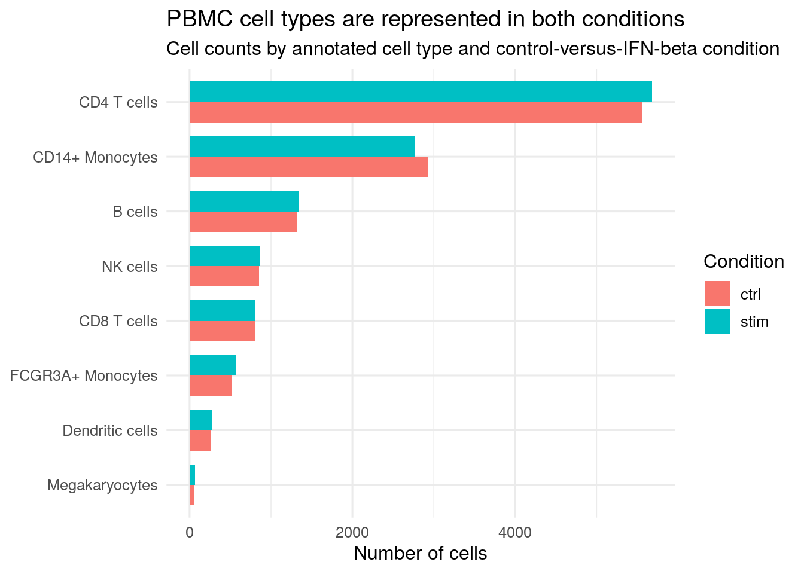
plot_df = (
cell_metadata
.groupby(["cell_type", "condition"])
.size()
.reset_index(name="n_cells")
)
celltype_order = celltype_counts["cell_type"].tolist()
fig, ax = plt.subplots(figsize=(8.5, 4.8))
bar_height = 0.36
y_positions = np.arange(len(celltype_order))
for offset, condition in [(-bar_height / 2, "ctrl"), (bar_height / 2, "stim")]:
condition_values = (
plot_df.loc[plot_df["condition"] == condition]
.set_index("cell_type")
.reindex(celltype_order)["n_cells"]
.fillna(0)
)
ax.barh(
y_positions + offset,
condition_values,
height=bar_height,
label=condition,
)
ax.set_yticks(y_positions)
ax.set_yticklabels(celltype_order)
ax.invert_yaxis()
ax.set_xlabel("Number of cells")
ax.set_title("PBMC cell types are represented in both conditions")
ax.legend(title="Condition")
plt.tight_layout()
show_plot(fig, "exploration_celltype_condition_counts.png")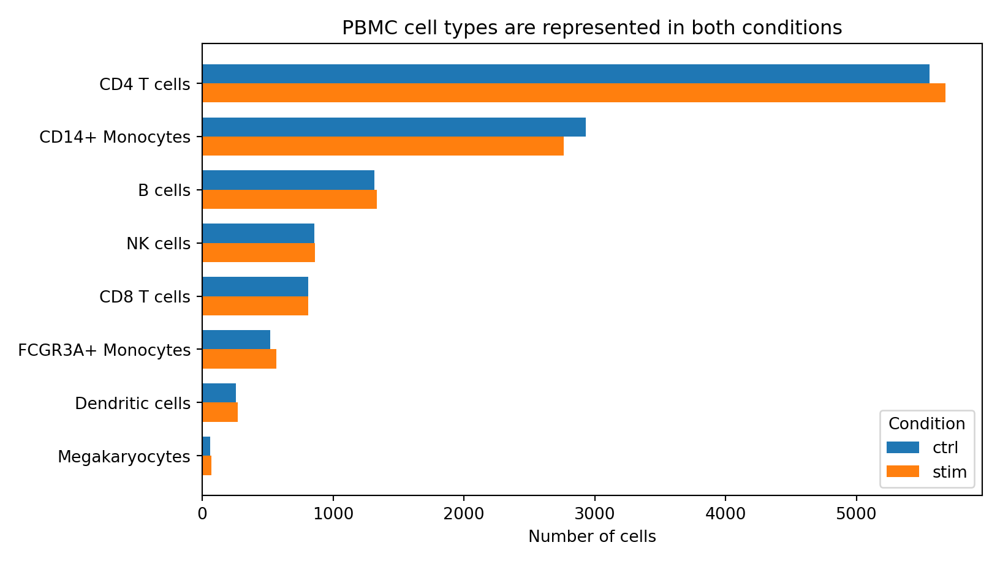
The plot reinforces the same lesson as the table: cell types are uneven in abundance, but the control and IFN-beta groups are both represented within each annotated cell type. This is the structure you want before asking whether a CoGAPS pattern is broad across PBMC identities or concentrated in one immune-cell population.
Map Cell Identity Before Pattern Interpretation
The next figure uses coordinates to show how cells are arranged in a two-dimensional view. UMAP is an exploratory visualization: it places cells with similar expression profiles near one another, but the exact axes do not have a direct biological unit. The goal here is not to prove a result. The goal is to orient yourself to the major cell neighborhoods before adding CoGAPS pattern activity in later sections.
The code below first finds UMAP coordinates. Some single-cell files store coordinates as metadata columns such as umap_1 and umap_2; others store them in a reduced-dimension slot such as X_umap. The chunk checks both places, then plots the same cells colored by annotated cell type.
if (all(c("umap_1", "umap_2") %in% colnames(cell_metadata_r))) {
umap_data_r <- cell_metadata_r |>
dplyr::transmute(
cell_barcode,
condition,
cell_type,
replicate,
UMAP1 = umap_1,
UMAP2 = umap_2
)
} else if ("X_umap" %in% reducedDimNames(sce_cells)) {
umap_matrix_r <- as.data.frame(reducedDim(sce_cells, "X_umap"))
colnames(umap_matrix_r)[seq_len(2)] <- c("UMAP1", "UMAP2")
umap_data_r <- dplyr::bind_cols(cell_metadata_r, umap_matrix_r[, c("UMAP1", "UMAP2")])
} else {
stop("No UMAP coordinates were found in the prepared single-cell data.")
}
umap_data_r$cell_type <- factor(umap_data_r$cell_type, levels = celltype_counts_r$cell_type)
ggplot(umap_data_r, aes(x = UMAP1, y = UMAP2, color = cell_type)) +
geom_point(size = 0.18, alpha = 0.75) +
coord_equal() +
labs(
title = "Annotated PBMC identities form visible neighborhoods",
subtitle = "Each point is one cell; color shows the annotated immune-cell type",
x = "UMAP 1",
y = "UMAP 2",
color = "Cell type"
) +
guides(
color = guide_legend(
override.aes = list(size = 4, alpha = 1)
)
) +
theme_minimal(base_size = 12) +
theme(
panel.grid = element_blank(),
legend.position = "right"
)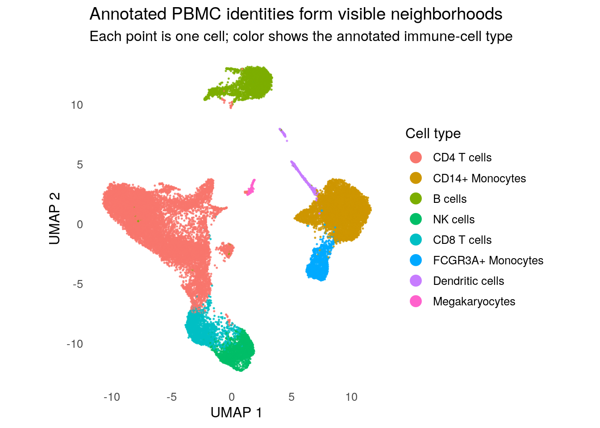
if {"umap_1", "umap_2"}.issubset(cell_metadata.columns):
umap_data = cell_metadata.loc[
:, ["cell_barcode", "condition", "cell_type", "replicate", "umap_1", "umap_2"]
].rename(columns={"umap_1": "UMAP1", "umap_2": "UMAP2"})
elif "X_umap" in adata_cells.obsm:
umap_data = cell_metadata.loc[
:, ["cell_barcode", "condition", "cell_type", "replicate"]
].copy()
umap_data["UMAP1"] = adata_cells.obsm["X_umap"][:, 0]
umap_data["UMAP2"] = adata_cells.obsm["X_umap"][:, 1]
else:
raise ValueError("No UMAP coordinates were found in the prepared single-cell data.")
fig, ax = plt.subplots(figsize=(7.2, 5.6))
colors = plt.cm.tab10(np.linspace(0, 1, len(celltype_order)))
for color, cell_type in zip(colors, celltype_order):
subset = umap_data.loc[umap_data["cell_type"] == cell_type]
ax.scatter(
subset["UMAP1"],
subset["UMAP2"],
s=2,
alpha=0.75,
color=color,
label=cell_type,
linewidths=0,
)
ax.set_aspect("equal", adjustable="box")
ax.set_xlabel("UMAP 1")
ax.set_ylabel("UMAP 2")
ax.set_title("Annotated PBMC identities form visible neighborhoods")
ax.legend(
title="Cell type",
markerscale=8,
bbox_to_anchor=(1.02, 1),
loc="upper left",
frameon=False,
)
plt.tight_layout()
show_plot(fig, "exploration_cell_identity_umap.png")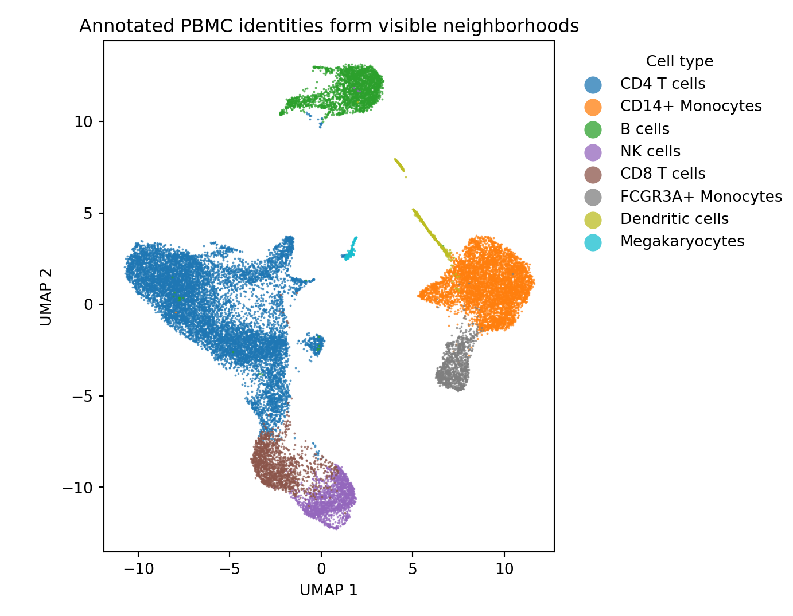
This plot gives you two things to carry forward. First, several annotated cell types occupy distinct neighborhoods, which means immune-cell identity is a strong part of the data structure. Second, the plot does not tell you which CoGAPS pattern is stimulation-associated. Later visualizations will return to these same cells and coordinates, but will recolor them by pattern activity rather than by cell type.
Preview The CoGAPS Output Structure
The selected-model files include CoGAPS outputs, but the numbered patterns are still just labels. Before interpreting any one pattern, inspect what the output tables represent.
CoGAPS stores two linked views of each :
- describe which genes help define a pattern.
- describe where that pattern is used across cells.
The code below reads the lightweight selected-model tables and reports their dimensions. It does not name a final IFN-associated pattern yet. The goal is to understand what kind of evidence each table will provide later.
r_gene_weights_table <- readr::read_tsv(
R_PATTERN_GENE_WEIGHTS_TSV_GZ_R,
show_col_types = FALSE
)
r_cell_activities_table <- readr::read_tsv(
R_PATTERN_CELL_ACTIVITIES_TSV_GZ_R,
show_col_types = FALSE
)
r_gene_pattern_columns <- grep("^Pattern", colnames(r_gene_weights_table), value = TRUE)
r_cell_pattern_columns <- grep("^Pattern", colnames(r_cell_activities_table), value = TRUE)
selected_output_structure_r <- tibble::tibble(
table = c("Pattern summary", "Gene weights", "Cell activities"),
rows = c(nrow(r_pattern_summary), nrow(r_gene_weights_table), nrow(r_cell_activities_table)),
pattern_columns = c(
sum(grepl("^Pattern", colnames(r_pattern_summary))),
length(r_gene_pattern_columns),
length(r_cell_pattern_columns)
),
one_row_represents = c(
"one learned pattern",
"one gene",
"one cell"
),
used_later_for = c(
"screening pattern-level summaries",
"ranking genes within a pattern",
"summarizing where a pattern is active"
)
)
knitr::kable(
selected_output_structure_r,
col.names = c("Table", "Rows", "Pattern columns", "One row represents", "Used later for")
)| Table | Rows | Pattern columns | One row represents | Used later for |
|---|---|---|---|---|
| Pattern summary | 6 | 0 | one learned pattern | screening pattern-level summaries |
| Gene weights | 3000 | 6 | one gene | ranking genes within a pattern |
| Cell activities | 24673 | 6 | one cell | summarizing where a pattern is active |
python_gene_weights_table = pd.read_csv(PY_PATTERN_GENE_WEIGHTS_TSV_GZ, sep="\t")
python_cell_activities_table = pd.read_csv(PY_PATTERN_CELL_ACTIVITIES_TSV_GZ, sep="\t")
python_gene_pattern_columns = [
column for column in python_gene_weights_table.columns
if column.startswith("Pattern")
]
python_cell_pattern_columns = [
column for column in python_cell_activities_table.columns
if column.startswith("Pattern")
]
selected_output_structure = pd.DataFrame(
{
"Table": ["Pattern summary", "Gene weights", "Cell activities"],
"Rows": [
len(python_pattern_summary),
len(python_gene_weights_table),
len(python_cell_activities_table),
],
"Pattern columns": [
sum(column.startswith("Pattern") for column in python_pattern_summary.columns),
len(python_gene_pattern_columns),
len(python_cell_pattern_columns),
],
"One row represents": [
"one learned pattern",
"one gene",
"one cell",
],
"Used later for": [
"screening pattern-level summaries",
"ranking genes within a pattern",
"summarizing where a pattern is active",
],
}
)
print(render_table(selected_output_structure))| Table | Rows | Pattern columns | One row represents | Used later for |
|---|---|---|---|---|
| Pattern summary | 6 | 0 | one learned pattern | screening pattern-level summaries |
| Gene weights | 3000 | 6 | one gene | ranking genes within a pattern |
| Cell activities | 24673 | 6 | one cell | summarizing where a pattern is active |
This is the bridge from data exploration to model interpretation. The prepared PBMC data tell you what each cell is and where it came from. The CoGAPS tables tell you how learned patterns connect genes and cells. Later sections combine both views: a pattern will be interpreted by checking its cell activities, top genes, directionality, and diagnostic support.
Connect the matrices to the included files
The core path uses compact exports. The full saved result also contains uncertainty estimates and information about the model run. The four matrices below connect those contents to files you can inspect without loading the full result.
| Matrix | What one entry represents | Numeric dimensions | Compact R export |
|---|---|---|---|
A |
Mean gene weight for one gene in one pattern | 3,000 genes by 6 patterns | pattern_gene_weights.tsv.gz |
P |
Mean cell activity for one cell in one pattern | 24,673 cells by 6 patterns | pattern_cell_activities.tsv.gz |
A_sd |
Posterior standard deviation of one gene weight | 3,000 by 6 | pattern_gene_weight_sd.tsv.gz |
P_sd |
Posterior standard deviation of one cell activity | 24,673 by 6 | pattern_cell_activity_sd.tsv.gz |
All four files are included in data/processed/selected_model_k6/r/. The parallel data/processed/selected_model_k6/python/ folder contains the two mean-matrix files under the same names. Python’s SD matrices are stored in its optional full result, not in separate compact SD files. Each exported table has an additional gene or cell_barcode identifier column; that column is not part of the six-pattern numeric matrix.
Here, P follows the software/export orientation: cells by patterns. The mathematical equation in Context writes it as patterns by cells. These are transposed views of the same kind of quantity, not different definitions of activity. Use identifiers, not row position alone, when connecting matrices to annotations.
The posterior standard deviation (SD) describes uncertainty in an estimated weight or activity, not expression variation across cells or a measure of biological importance. Each SD entry corresponds to the same gene or cell and pattern as its mean entry. The later diagnostic section considers these uncertainties alongside the biological evidence.
Optional: look inside the saved objects
Choose your language below to see what its full saved result contains. No full-object download or new model fit is needed to continue. The screenshots show custom, read-only inspection summaries from the saved files, not the packages’ default print output. fit and result are example names for the full R and Python objects; they are not additional objects you must create in the core path. The script paths visible in the screenshots belong to the capture session, not a command you need to run.
Read each line as a component name, its storage type and size, and a short description. A matrix or data frame has rows and columns; a list or dictionary holds named components; a scalar is one value. Empty fields contain no stored entries. Start with the mean and SD matrices, then look at the diagnostics and run information.
The saved .rds file contains a CogapsResult. Its named components are called slots. The first four slots hold the mean and SD matrices; the metadata slot holds a nested list of diagnostics and run information.
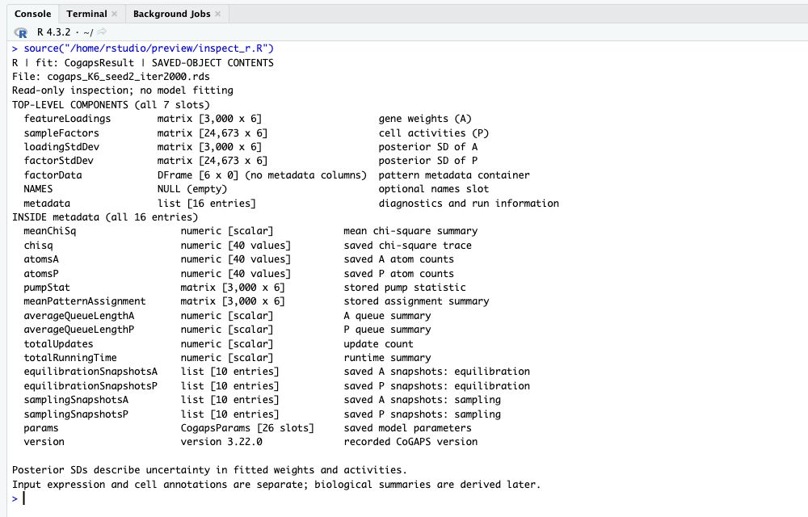
Open the R image at full size or read the complete R inventory as selectable text.

- Fitted matrices:
featureLoadingsisA, andsampleFactorsis the cells-by-patternsP.loadingStdDevandfactorStdDevhold their corresponding posterior SDs. These are the sources of the four compact R exports above. - Optional containers:
factorDatahas six rows but no metadata columns, andNAMESisNULLin this saved result. These empty slots do not mean that the fitted matrices lack gene or cell identifiers. - Run diagnostics: inside
metadata,chisq,atomsA, andatomsPeach have 40 recorded values. They describe changes during the run, not 40 cells or patterns. The chi-square trace tracks reconstruction fit; atom counts describe the algorithm’s internal representation.meanChiSqis a single summary rather than a trace. - Snapshots: each of the four snapshot lists holds ten saved matrix states, covering gene weights (
A) and cell activities (P) in equilibration and sampling. They support later checks of changes during the run. Having traces and snapshots does not establish convergence. - Other run information:
paramsstores the model settings, andversionrecords CoGAPS 3.22.0. Runtime, update-count, and queue summaries describe computation.pumpStatandmeanPatternAssignmentare additional stored summaries; this learner path does not use them to assign biological names to patterns.
Here, metadata means information about the model run, not donor, condition, or cell-type labels. This R object does not contain the input expression matrix or those cell annotations. The export workflow combines its fitted matrices with the prepared PBMC data to create the metadata-joined activities, top-gene lists, and biological summary tables used in the lesson.
The shortened example below shows how the R fitting script creates a result of this kind. In that script, data_matrix contains the prepared, normalized and log-transformed expression values, with 3,000 genes in rows and 24,673 cells in columns. It is a placeholder here, not an additional object you need to create. No extra setup or download is needed to read this example.
Illustration only: do not run this code in the learner path.
params <- CoGAPS::CogapsParams(
nPatterns = 6,
nIterations = 2000,
seed = 2,
sparseOptimization = TRUE
)
set.seed(2)
fit <- CoGAPS::CoGAPS(
data_matrix,
params,
nThreads = 4,
asynchronousUpdates = TRUE
)CogapsParams() creates the settings, not the fitted model. Here, nPatterns = 6 specifies six patterns, and nIterations = 2000 means 2,000 equilibration iterations followed by 2,000 sampling iterations. The parameter seed = 2 sets the CoGAPS seed; set.seed(2) also sets R’s random-number seed, as in the full script. sparseOptimization = TRUE enables sparse optimization. These are the selected teaching run’s settings, not general recommendations for other datasets.
The CoGAPS() call would fit the supplied matrix and return a CogapsResult named fit. Four threads and asynchronous updates match the selected R run’s computational settings. This excerpt omits input loading, diagnostic collection, checkpoints, and saving the result, so it is not the complete reproduction command. Stage 3 of the Full Reproduction Guide provides the complete launcher, scripts/reproduction/run_selected_model_r.sh, for readers deliberately choosing to fit a model. For the main learner path, continue with the included saved tables below.
The saved .h5ad result is an AnnData object, but its orientation differs from the prepared single-cell object used earlier: genes are in obs, and cells are in var. Read the labels and dimensions before deciding what a row represents. This saved result contains both fitted outputs and retained input information.
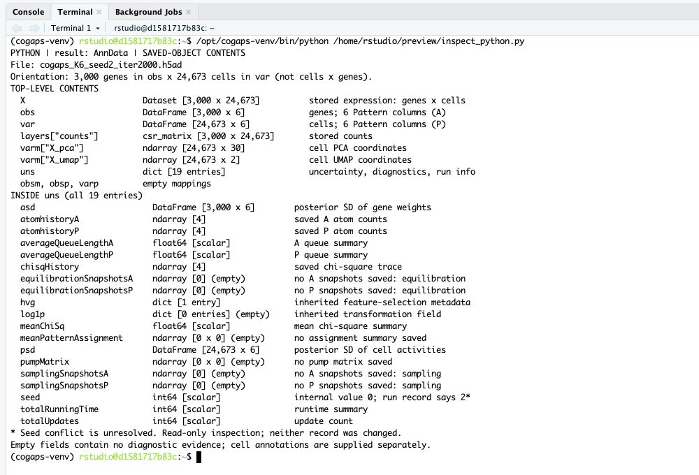
Open the Python image at full size or read the complete Python inventory as selectable text.

- Fitted matrices: the six pattern columns in
obshold gene weights (A); those invarhold cell activities (P). Gene and cell identifiers are their row labels. Theunsdictionary holds the matching SD matrices asasdandpsd. Their presence here does not mean separate compact Python SD files are included. - Expression and counts:
Xretains the expression matrix, whilelayers["counts"]retains counts on the same gene-by-cell axes. The screenshot callsXaDatasetbecause the file was opened read-only with disk-backed access. This storage choice does not change its meaning or orientation. - Embeddings and preprocessing fields:
varm["X_pca"]andvarm["X_umap"]contain inherited cell coordinates, not new CoGAPS embeddings.uns["hvg"]anduns["log1p"]retain preprocessing fields. The emptylog1pdictionary alone does not tell you whether expression was transformed; consult the preprocessing record. - Run diagnostics and information:
chisqHistory,atomhistoryA, andatomhistoryPeach contain four recorded values in this file.meanChiSq, runtime, update-count, and queue fields are single summaries. This file does not provide the same detailed diagnostic record as the selected R result. - Empty fields: the four snapshot arrays,
pumpMatrix, andmeanPatternAssignmentcontain no entries. The auxiliaryobsm,obsp, andvarpmappings are also empty. In particular, an empty diagnostic field does not mean a matrix of zero estimates or evidence that a model is stable.
The Python result’s var table contains pattern activities but not donor, condition, or cell-type columns. As in R, the export workflow joins those annotations from the prepared PBMC data. Top-gene lists, condition comparisons, and biological pattern summaries are derived afterward; they are not biological labels supplied by the fitted object.
Unresolved seed-record discrepancy
This saved Python object’s uns["seed"] is 0, while its filename and accompanying run-metrics file record seed 2. The cause is not yet known, so the internal field should not be treated as a verified account of the seed used for fitting. Neither record has been changed. You can continue inspecting the included saved outputs, but this discrepancy limits exact run provenance until it is resolved.
You do not need to memorize every stored field. Before continuing, distinguish the fitted mean matrices, their uncertainty, the saved diagnostics, and the annotations added from the prepared data. Pattern numbers remain specific to each fitted run; shared dimensions do not establish that an R pattern and a Python pattern represent the same biology.
The pattern summary table has several columns that are useful as a first-pass guide. The next small dictionary explains how to read those columns without treating any one metric as a final answer.
pattern_summary_dictionary_r <- tibble::tibble(
column = c(
"pattern",
"corr_with_stim",
"dominant_cell_type",
"mean_activity_ctrl / mean_activity_stim",
"top_genes_top8 / top_genes_top15"
),
meaning = c(
"Run-specific pattern label.",
"Correlation between cell activity and the stimulation label.",
"Cell type with the highest mean activity for that pattern.",
"Average pattern activity in control and IFN-beta-stimulated cells.",
"Highest-weight genes for the pattern."
),
caution = c(
"Pattern numbers can change across implementations or reruns.",
"Useful for screening, but not enough by itself for biological naming.",
"A dominant cell type can indicate identity-linked structure.",
"Condition differences should be read with cell type and donor context.",
"Gene weights do not by themselves tell whether expression is up or down."
)
)
knitr::kable(
pattern_summary_dictionary_r,
col.names = c("Column", "Meaning", "Caution")
)| Column | Meaning | Caution |
|---|---|---|
| pattern | Run-specific pattern label. | Pattern numbers can change across implementations or reruns. |
| corr_with_stim | Correlation between cell activity and the stimulation label. | Useful for screening, but not enough by itself for biological naming. |
| dominant_cell_type | Cell type with the highest mean activity for that pattern. | A dominant cell type can indicate identity-linked structure. |
| mean_activity_ctrl / mean_activity_stim | Average pattern activity in control and IFN-beta-stimulated cells. | Condition differences should be read with cell type and donor context. |
| top_genes_top8 / top_genes_top15 | Highest-weight genes for the pattern. | Gene weights do not by themselves tell whether expression is up or down. |
pattern_summary_dictionary = pd.DataFrame(
{
"Column": [
"pattern",
"corr_with_stim",
"dominant_cell_type",
"mean_activity_ctrl / mean_activity_stim",
"top_genes_top8 / top_genes_top15",
],
"Meaning": [
"Run-specific pattern label.",
"Correlation between cell activity and the stimulation label.",
"Cell type with the highest mean activity for that pattern.",
"Average pattern activity in control and IFN-beta-stimulated cells.",
"Highest-weight genes for the pattern.",
],
"Caution": [
"Pattern numbers can change across implementations or reruns.",
"Useful for screening, but not enough by itself for biological naming.",
"A dominant cell type can indicate identity-linked structure.",
"Condition differences should be read with cell type and donor context.",
"Gene weights do not by themselves tell whether expression is up or down.",
],
}
)
print(render_table(pattern_summary_dictionary))| Column | Meaning | Caution |
|---|---|---|
| pattern | Run-specific pattern label. | Pattern numbers can change across implementations or reruns. |
| corr_with_stim | Correlation between cell activity and the stimulation label. | Useful for screening, but not enough by itself for biological naming. |
| dominant_cell_type | Cell type with the highest mean activity for that pattern. | A dominant cell type can indicate identity-linked structure. |
| mean_activity_ctrl / mean_activity_stim | Average pattern activity in control and IFN-beta-stimulated cells. | Condition differences should be read with cell type and donor context. |
| top_genes_top8 / top_genes_top15 | Highest-weight genes for the pattern. | Gene weights do not by themselves tell whether expression is up or down. |
Exploration Checkpoint
At the end of data exploration, you should be able to describe the dataset without naming a final biological pattern yet.
| What you checked | What the check shows | Why it matters for the next section |
|---|---|---|
| Prepared data size | The teaching data contain 24,673 cells and 3,000 highly variable genes. | Later summaries operate on a realistic single-cell dataset, not a toy matrix. |
| Condition coverage | Control and IFN-beta-stimulated cells are nearly balanced overall. | Stimulation comparisons start from a reasonable sample structure. |
| Donor coverage | Each replicate has cells in both conditions. | The paired perturbation design remains visible. |
| Cell-type mixture | PBMC cell types are uneven in abundance but represented in both conditions. | Pattern interpretation must distinguish stimulation activity from immune-cell identity. |
| UMAP identity structure | Annotated immune-cell types occupy visible neighborhoods. | Later pattern UMAPs should be read against this identity map. |
| CoGAPS output structure | Gene weights and cell activities are linked by pattern labels. | Later sections can connect genes, cells, activity, and directionality. |
Checkpoint
If a later CoGAPS pattern is more active in stimulated cells, what else should you check before calling it an IFN-associated pattern?
Show answer
Check whether the pattern is also tied to one cell type, whether its top genes include interferon-stimulated genes, whether those genes are up or down in stimulation, and whether model diagnostics support using the selected result. Stimulation association is important, but it is only one part of the interpretation.
The next section uses this explored structure to prepare model inputs and connect the data container to the CoGAPS matrix orientation. Then the later visualization and analysis sections return to the UMAP and pattern tables with biological interpretation in view.
Data Wrangling
Data Import brought in the selected-model evidence and Data Exploration checked the structure of the prepared PBMC data. Data Wrangling now asks a practical question: how do we turn those imported files and tables into the tidy tables that later visualizations and analyses need?
In this case study, wrangling has two roles. First, it makes the preprocessing decisions visible so you understand what happened before the prepared PBMC dataset was saved. Second, it connects the selected CoGAPS outputs to cell metadata, reshapes pattern activities, and keeps gene weights separate from expression direction. Those steps prepare you to interpret patterns without confusing stimulation, cell identity, matrix orientation, or gene directionality.
How to use this section
- Main learner path: run the chunks in this section. They use the prepared PBMC data and lightweight selected-model files already imported in earlier sections.
- Full reproduction path: read the preprocessing explanation here, then use the full reproduction guide if you want to rebuild the prepared
.h5ad, dense CoGAPS input, or selected-model exports from larger local or Zenodo-hosted files. - Model fitting: this section does not fit CoGAPS. It prepares and checks the data structures used for visualization and analysis.
Follow The Preprocessing Trail
The prepared PBMC dataset did not start as a 3,000-gene matrix. Local preprocessing begins with kang_counts_25k.h5ad, the annotated Kang PBMC count object distributed through Figshare and Pertpy and preserved in the case-study Zenodo archive. It contains 24,673 cells and 15,706 genes. The local script filters genes, normalizes and log-transforms expression, and keeps 3,000 highly variable genes. Those choices matter because CoGAPS can only learn patterns from the cells, genes, and expression scale it is given.
Read the flow map from top to bottom. The dashed connection links the original Kang study and GEO record to the distributed annotated object. Its upstream preparation details are not yet known; that connection is not a step reproduced by the local script. The solid arrows below the source object describe the local preparation and later modeling/export steps. The nodes explicitly mark where full reproduction and the main learner path begin.
%%{init: {"theme": "base", "themeVariables": {"fontSize": "18px"}} }%%
flowchart TB
accTitle: Source history and local PBMC preprocessing
accDescr: The Kang study and GEO record connect by a dashed arrow to an annotated Figshare and Pertpy object because upstream preparation details remain unresolved. Full reproduction starts with that object. Local gene filtering, normalization, log transformation, and count-based variable-gene selection produce the prepared dataset where the main learner path begins. Donor labels, cell types, and PCA and UMAP coordinates are inherited, not inferred by these steps.
classDef source fill:#eaf3ff,stroke:#2d6da3,stroke-width:2px,color:#102a43
classDef process fill:#f7f9fb,stroke:#6b7c8f,stroke-width:1.5px,color:#102a43
classDef decision fill:#fff4df,stroke:#b36b00,stroke-width:2px,color:#102a43
classDef output fill:#e9f7ef,stroke:#2f855a,stroke-width:2px,color:#102a43
classDef prepared fill:#d7f5df,stroke:#1b7f43,stroke-width:4px,color:#102a43
classDef optional fill:#f3eefc,stroke:#6b46c1,stroke-width:1.5px,color:#102a43
A["Kang et al. source study<br/>GEO GSE96583<br/>Batch 2 control and IFN-beta PBMC samples"]:::source
C["Full reproduction starts here<br/>Annotated Figshare / Pertpy count object<br/>kang_counts_25k.h5ad<br/>24,673 cells x 15,706 genes"]:::source
D{{"Keep genes detected<br/>in at least 3 cells"}}:::decision
E["Normalize each cell<br/>to 10,000 total counts"]:::process
F["Log-transform<br/>normalized expression"]:::process
G{{"Select 3,000 highly variable genes<br/>using retained counts"}}:::decision
H["Main learner path starts here<br/>Prepared PBMC dataset<br/>preprocessed_cells_hvg3000.h5ad<br/>24,673 cells x 3,000 genes + counts layer"]:::prepared
I["R selected-model input<br/>genes x cells"]:::output
J["Optional Python dense input<br/>genes x cells"]:::optional
K["Lightweight CoGAPS tables<br/>gene weights + cell activities"]:::output
A -.->|"Upstream preparation<br/>details not yet known"| C
C --> D --> E --> F --> G --> H
H --> I -->|"Fit model and export"| K
H --> J -->|"Fit model and export"| K
The main learner path loads data/processed/input/preprocessed_cells_hvg3000.h5ad, the prepared dataset marked in green. You do not need the larger source object or a new model fit to continue. Full reproduction starts with a copy of the archived source object at data/source/kang_counts_25k.h5ad; the full reproduction guide explains how to rebuild the prepared dataset and, optionally, fit and export a model. The earlier route from GEO files to the annotated source object is not reconstructed here.
The source object’s cells, donor labels, cell-type labels, and PCA and UMAP coordinates are retained rather than newly selected or inferred by local preprocessing. These inherited fields let you compare the same cells before and after gene selection. The script also copies the supplied label values into condition; it does not infer treatment assignments. See the source-object provenance table for the distribution credits and the upstream processing details that remain unresolved.
Quality Control Protects The Input Signal
Sparse measurements can make weak signals difficult to distinguish from sampling variation. The documented preprocessing step removes genes detected in fewer than three cells. It does not perform a new cell-level quality-control screen; the retained cells and their upstream filtering are inherited from the source object.
Detected refers to a nonzero count in a cell, not a minimum of three counts within each cell. Passing this filter does not establish that a gene’s variation is biological.
The programming idea is a filter. A filter asks a yes/no question for each row or column: does this gene pass the detection rule? Genes that pass stay in the matrix; genes that fail are removed before normalization and model fitting. That simple decision changes the biological search space, because CoGAPS cannot recover a pattern from genes that were excluded.
Normalization Makes Cells More Comparable
After filtering, cells can still differ in total sequencing depth. One cell may have many more captured transcripts than another, even when the biological state is similar. reduces this scale difference by rescaling each cell to a common total. In this case study, the target total is 10,000 counts per cell.
Normalization does not make every cell identical, and it does not remove all donor, batch, or cell-type structure. Its purpose is narrower: it keeps a cell with more captured RNA from automatically looking more active across many genes. That matters for CoGAPS because a latent pattern should reflect coordinated expression structure, not just a larger library size.
In the full-reproduction Python script, this is the step performed by scanpy.pp.normalize_total(). The main learner path does not ask you to rerun that command, but the preprocessing record lets you see that the prepared PBMC dataset was built from normalized expression values before the selected CoGAPS outputs were exported.
Log Transformation Reduces Scale Dominance
Even after library-size normalization, expression values can have a long right tail: a small number of genes can have much larger values than most others. A compresses that scale. Large values still remain large, but they no longer dominate summaries as strongly.
For this case study, the prepared CoGAPS input is based on normalized, log-transformed expression values. That choice makes the model input more suitable for comparing variation across genes and cells. It also means that later pattern activity should be interpreted as activity learned from this prepared expression scale, not as raw molecule counts.
The original count information is still important. The prepared dataset keeps a count layer so later directionality summaries can ask whether selected genes are higher or lower in IFN-beta-stimulated cells. This separation is intentional: normalized log expression supports pattern learning, while count-based summaries support expression-direction checks.
Highly Variable Genes Define The Modeled Gene Space
Single-cell RNA-seq measures many genes, but the model does not have to use all of them. selection identifies genes with relatively strong cell-to-cell variation. The recorded seurat_v3 method uses the retained counts layer to compare gene variability while accounting for differences in average expression. This is a separate step from the minimum-three-cell detection filter: HVG selection is not simply a low-expression filter.
We use 3,000 highly variable genes, abbreviated HVGs, as a practical modeling choice for this teaching analysis. CoGAPS does not require this exact number or require an HVG-only input. Restricting the gene set reduces computation and focuses the model on variable features, but it can exclude relevant biology. All gene-weight rankings and gene-set interpretations here are conditional on the retained genes.
Interferon-stimulated genes may be included because they vary with stimulation, but immune-cell identity genes may also be included because PBMC cell types differ strongly from one another. Genes outside the retained set cannot receive a weight in the fitted model; their absence from a pattern’s gene list is not evidence that they are biologically unimportant.
That is why later sections do not interpret a CoGAPS pattern from one number alone. They compare pattern activity with condition, cell type, top genes, directionality, and diagnostics. HVG selection defines the model’s starting gene set; it does not by itself decide which pattern is the IFN-associated pattern.
Inspect The Preprocessing Record
The preprocessing record is a small JSON file. It does not contain the expression matrix itself. It records the settings used to create the prepared PBMC dataset: the source count file name, the minimum cell-detection threshold for genes, the normalization target, the highly-variable-gene method, and the final number of genes kept.
The next chunk turns that JSON record into a readable table. In R, jsonlite::read_json() reads the settings, and tibble::tribble() builds a compact display table. In Python, json.load() reads the same settings into a dictionary, and pd.DataFrame() turns selected fields into a table.
preprocess_config_r <- jsonlite::read_json(
PREPROCESS_CONFIG_JSON_R,
simplifyVector = TRUE
)
preprocess_settings_r <- tibble::tribble(
~setting, ~value, ~what_it_did, ~why_it_matters,
"Source count file",
preprocess_config_r$raw_h5ad,
"Recorded the larger single-cell count file used to create the prepared dataset.",
"Keeps the prepared dataset connected to its source data.",
"Minimum cells per gene",
as.character(preprocess_config_r$min_cells),
"Removed genes detected in too few cells.",
"Excludes genes detected in fewer than three cells; this threshold does not establish that retained genes represent biological signal.",
"Library-size target",
format(preprocess_config_r$target_sum, big.mark = ","),
"Scaled cells to a common total expression level.",
"Makes cells more comparable when sequencing depth differs.",
"HVG method",
preprocess_config_r$hvg_flavor,
"Used a highly-variable-gene selection rule.",
"Focuses CoGAPS on genes with informative variation.",
"Number of HVGs",
format(preprocess_config_r$n_top_genes, big.mark = ","),
"Kept 3,000 genes for the prepared dataset.",
"Keeps the case study realistic while making rendering and analysis manageable."
)
knitr::kable(
preprocess_settings_r,
col.names = c("Setting", "Value", "What it did", "Why it matters")
)| Setting | Value | What it did | Why it matters |
|---|---|---|---|
| Source count file | kang_counts_25k.h5ad | Recorded the larger single-cell count file used to create the prepared dataset. | Keeps the prepared dataset connected to its source data. |
| Minimum cells per gene | 3 | Removed genes detected in too few cells. | Excludes genes detected in fewer than three cells; this threshold does not establish that retained genes represent biological signal. |
| Library-size target | 10,000 | Scaled cells to a common total expression level. | Makes cells more comparable when sequencing depth differs. |
| HVG method | seurat_v3 | Used a highly-variable-gene selection rule. | Focuses CoGAPS on genes with informative variation. |
| Number of HVGs | 3,000 | Kept 3,000 genes for the prepared dataset. | Keeps the case study realistic while making rendering and analysis manageable. |
with open(PREPROCESS_CONFIG_JSON) as f:
preprocess_config = json.load(f)
preprocess_settings = pd.DataFrame(
{
"Setting": [
"Source count file",
"Minimum cells per gene",
"Library-size target",
"HVG method",
"Number of HVGs",
],
"Value": [
preprocess_config["raw_h5ad"],
preprocess_config["min_cells"],
f'{preprocess_config["target_sum"]:,.0f}',
preprocess_config["hvg_flavor"],
f'{preprocess_config["n_top_genes"]:,}',
],
"What it did": [
"Recorded the larger single-cell count file used to create the prepared dataset.",
"Removed genes detected in too few cells.",
"Scaled cells to a common total expression level.",
"Used a highly-variable-gene selection rule.",
"Kept 3,000 genes for the prepared dataset.",
],
"Why it matters": [
"Keeps the prepared dataset connected to its source data.",
"Excludes genes detected in fewer than three cells; this threshold does not establish that retained genes represent biological signal.",
"Makes cells more comparable when sequencing depth differs.",
"Focuses CoGAPS on genes with informative variation.",
"Keeps the case study realistic while making rendering and analysis manageable.",
],
}
)
print(render_table(preprocess_settings))| Setting | Value | What it did | Why it matters |
|---|---|---|---|
| Source count file | kang_counts_25k.h5ad | Recorded the larger single-cell count file used to create the prepared dataset. | Keeps the prepared dataset connected to its source data. |
| Minimum cells per gene | 3 | Removed genes detected in too few cells. | Excludes genes detected in fewer than three cells; this threshold does not establish that retained genes represent biological signal. |
| Library-size target | 10,000 | Scaled cells to a common total expression level. | Makes cells more comparable when sequencing depth differs. |
| HVG method | seurat_v3 | Used a highly-variable-gene selection rule. | Focuses CoGAPS on genes with informative variation. |
| Number of HVGs | 3,000 | Kept 3,000 genes for the prepared dataset. | Keeps the case study realistic while making rendering and analysis manageable. |
Each row in the table corresponds to one decision you just read about. The source count file connects the prepared dataset back to its larger input. The minimum-cells rule records the gene filter. The library-size target and HVG method record how the expression scale and gene space were constructed. The number of HVGs records the final modeling space: 3,000 genes.
These steps do not make the data perfect. They make a documented, reproducible analysis input. That distinction matters: when you later interpret a CoGAPS pattern, you should remember that the pattern was learned from this prepared 3,000-gene view of the PBMC data.
The Saved Files Must Be CoGAPS-Ready
Single-cell containers do not always store matrices in the orientation that a modeling function expects. In this case study, the prepared Python AnnData object is cells by genes, while the R SingleCellExperiment object presents genes by cells. CoGAPS expects a genes-by-cells expression matrix for the selected-model fitting workflow, so has to be checked explicitly.
This check is the bridge between preprocessing and modeling. The saved files must keep cells, genes, expression values, and labels aligned. They must also make the model-input orientation explicit. This chunk does not fit a model; it only checks that the expression matrix can be interpreted correctly as genes and cells.
cogaps_input_r <- assay(sce_cells, "X")
orientation_check_r <- tibble::tibble(
item = c("Prepared SingleCellExperiment", "R CoGAPS input matrix"),
rows = c(nrow(sce_cells), nrow(cogaps_input_r)),
columns = c(ncol(sce_cells), ncol(cogaps_input_r)),
row_meaning = c("genes", "genes"),
column_meaning = c("cells", "cells"),
ready_for_cogaps = c("yes", "yes")
)
knitr::kable(
orientation_check_r,
col.names = c("Data structure", "Rows", "Columns", "Rows mean", "Columns mean", "Ready for CoGAPS?")
)| Data structure | Rows | Columns | Rows mean | Columns mean | Ready for CoGAPS? |
|---|---|---|---|---|---|
| Prepared SingleCellExperiment | 3000 | 24673 | genes | cells | yes |
| R CoGAPS input matrix | 3000 | 24673 | genes | cells | yes |
orientation_check = pd.DataFrame(
{
"Object": [
"Prepared AnnData data structure",
"Expected PyCoGAPS input",
"Cached dense PyCoGAPS input file",
],
"Rows": [
adata_cells.n_obs,
adata_cells.n_vars,
"available" if HAS_CACHED_COGAPS_INPUT else "not included",
],
"Columns": [
adata_cells.n_vars,
adata_cells.n_obs,
"available" if HAS_CACHED_COGAPS_INPUT else "not included",
],
"Rows mean": ["cells", "genes", "genes"],
"Columns mean": ["genes", "cells", "cells"],
"Ready for CoGAPS?": [
"no; transpose first",
"yes",
"yes if supplied locally",
],
}
)
print(render_table(orientation_check))| Object | Rows | Columns | Rows mean | Columns mean | Ready for CoGAPS? |
|---|---|---|---|---|---|
| Prepared AnnData data structure | 24673 | 3000 | cells | genes | no; transpose first |
| Expected PyCoGAPS input | 3000 | 24673 | genes | cells | yes |
| Cached dense PyCoGAPS input file | available | available | genes | cells | yes if supplied locally |
# Full local reproduction only:
# build_cogaps_input() transposes cells x genes into genes x cells,
# stores the dense matrix as float64, and preserves cell and gene labels.
cogaps_input_from_cells = build_cogaps_input(adata_cells)
cogaps_input_from_cells.write_h5ad(COGAPS_INPUT_H5AD)The R workflow is already in the orientation needed for CoGAPS. The Python workflow needs an explicit transposition step before fitting. That is why the optional dense Python input file is treated as a full-reproduction asset rather than a file that every learner needs to load.
Checkpoint
Why is matrix orientation a scientific issue, not just a programming detail?
Show answer
If rows and columns are interpreted incorrectly, the model can treat cells as features or genes as samples. That would make gene weights, cell activities, and pattern labels meaningless. Checking orientation protects the biological interpretation of the model output.
Join Pattern Activities To Cell Metadata
The selected model has two main tables. The gene-weight table tells you how strongly each gene contributes to each pattern. The cell-activity table tells you how strongly each cell uses each pattern. To ask whether a pattern follows stimulation or immune-cell identity, the cell activities have to be joined to the cell metadata.
The shared key is cell_barcode. A uses that barcode to match rows from two tables. In R, inner_join() keeps only barcodes that appear in both tables. In Python, merge(..., validate="one_to_one") performs the same join and checks that each barcode appears only once in each table.
r_lightweight_matrices <- load_lightweight_pattern_matrices_r(
R_PATTERN_GENE_WEIGHTS_TSV_GZ_R,
R_PATTERN_CELL_ACTIVITIES_TSV_GZ_R
)
r_gene_weights_wide <- r_lightweight_matrices$A |>
as.data.frame(check.names = FALSE) |>
tibble::rownames_to_column("gene")
r_cell_activities_wide <- r_lightweight_matrices$P |>
as.data.frame(check.names = FALSE) |>
tibble::rownames_to_column("cell_barcode")
r_pattern_cols_wrangled <- pattern_columns_r(colnames(r_cell_activities_wide))
wrangled_cell_metadata_r <- as.data.frame(colData(sce_cells)) |>
tibble::rownames_to_column("cell_barcode")
r_cell_activity_metadata <- wrangled_cell_metadata_r |>
dplyr::inner_join(r_cell_activities_wide, by = "cell_barcode")
join_check_r <- tibble::tibble(
check = c(
"Cells in metadata",
"Cells in activity table",
"Cells after metadata join",
"Pattern activity columns",
"Metadata rows without activity"
),
value = c(
nrow(wrangled_cell_metadata_r),
nrow(r_cell_activities_wide),
nrow(r_cell_activity_metadata),
length(r_pattern_cols_wrangled),
nrow(dplyr::anti_join(wrangled_cell_metadata_r, r_cell_activities_wide, by = "cell_barcode"))
)
)
knitr::kable(join_check_r, col.names = c("Check", "Value"))| Check | Value |
|---|---|
| Cells in metadata | 24673 |
| Cells in activity table | 24673 |
| Cells after metadata join | 24673 |
| Pattern activity columns | 6 |
| Metadata rows without activity | 0 |
python_gene_weights_wide, python_cell_activities_wide = load_lightweight_pattern_matrices(
PY_PATTERN_GENE_WEIGHTS_TSV_GZ,
PY_PATTERN_CELL_ACTIVITIES_TSV_GZ,
)
python_pattern_cols_wrangled = pattern_columns(python_cell_activities_wide)
wrangled_cell_metadata = adata_cells.obs.reset_index(names="cell_barcode").copy()
python_cell_activity_metadata = wrangled_cell_metadata.merge(
python_cell_activities_wide.reset_index(),
on="cell_barcode",
how="inner",
validate="one_to_one",
)
metadata_without_activity = set(wrangled_cell_metadata["cell_barcode"]) - set(
python_cell_activities_wide.index
)
join_check = pd.DataFrame(
{
"Check": [
"Cells in metadata",
"Cells in activity table",
"Cells after metadata join",
"Pattern activity columns",
"Metadata rows without activity",
],
"Value": [
len(wrangled_cell_metadata),
len(python_cell_activities_wide),
len(python_cell_activity_metadata),
len(python_pattern_cols_wrangled),
len(metadata_without_activity),
],
}
)
print(render_table(join_check))| Check | Value |
|---|---|
| Cells in metadata | 24673 |
| Cells in activity table | 24673 |
| Cells after metadata join | 24673 |
| Pattern activity columns | 6 |
| Metadata rows without activity | 0 |
The join should keep all cells and all selected-model pattern columns. If the joined table had fewer rows than the metadata table, you would need to investigate missing or mismatched cell barcodes before making pattern-activity plots. Here, the check confirms that the selected-model activities can be interpreted with the same condition, donor, cell-type, and UMAP labels explored earlier.
Reshape Cell Activities For Summaries
The joined activity table is in : one row per cell and one column per pattern. That format is convenient for storing model output. For plotting and summaries, is often easier: one row contains one cell, one pattern, and one activity value.
The next chunk practices that reshaping step. In R, tidyr::pivot_longer() moves the pattern columns into two columns named pattern and activity. In Python, melt() performs the same transformation. After reshaping, the code groups by pattern and condition to make a compact activity summary.
Every cell contributes one activity value to every pattern, including an activity of zero. We do not use an activity cutoff here. The number of cells is therefore the same across patterns within each condition: 12,315 control cells and 12,358 stimulated cells. The difference is between conditions, not between patterns.
The checks below flag missing values before summarizing and confirm that each pattern includes all cells in its condition. Zero is a valid activity value, not a missing value.
stopifnot(
"Expected six distinct pattern columns." =
length(r_pattern_cols_wrangled) == 6L && dplyr::n_distinct(r_pattern_cols_wrangled) == 6L,
"Cell barcodes must be present and unique." =
!anyNA(r_cell_activity_metadata$cell_barcode) &&
!anyDuplicated(r_cell_activity_metadata$cell_barcode),
"Condition labels must be present and contain ctrl and stim." =
!anyNA(r_cell_activity_metadata$condition) &&
setequal(r_cell_activity_metadata$condition, c("ctrl", "stim"))
)
r_pattern_activity_long <- r_cell_activity_metadata |>
dplyr::select(
cell_barcode,
condition,
cell_type,
replicate,
dplyr::all_of(r_pattern_cols_wrangled)
) |>
tidyr::pivot_longer(
cols = dplyr::all_of(r_pattern_cols_wrangled),
names_to = "pattern",
values_to = "activity"
)
stopifnot(
"Activity values must be present and finite." = all(is.finite(r_pattern_activity_long$activity))
)
r_activity_by_condition <- r_pattern_activity_long |>
dplyr::group_by(pattern, condition) |>
dplyr::summarise(
mean_activity = mean(activity),
median_activity = median(activity),
n_cells = dplyr::n(),
.groups = "drop"
) |>
dplyr::arrange(pattern, condition)
r_expected_condition_counts <- r_cell_activity_metadata |>
dplyr::count(condition, name = "expected_cells")
r_condition_count_checks <- r_activity_by_condition |>
dplyr::left_join(r_expected_condition_counts, by = "condition") |>
dplyr::group_by(condition) |>
dplyr::summarise(
counts_match = all(n_cells == expected_cells),
pattern_rows = dplyr::n(),
patterns_match = setequal(pattern, r_pattern_cols_wrangled),
distinct_cell_counts = dplyr::n_distinct(n_cells),
.groups = "drop"
)
stopifnot(
"The summary must retain both conditions." =
setequal(r_condition_count_checks$condition, r_expected_condition_counts$condition),
"Each pattern must include all cells in its condition." = all(r_condition_count_checks$counts_match),
"Each condition must have one row for each of the six patterns." =
all(r_condition_count_checks$pattern_rows == 6L & r_condition_count_checks$patterns_match),
"Cell counts must be equal across patterns within a condition." =
all(r_condition_count_checks$distinct_cell_counts == 1L)
)
knitr::kable(
r_activity_by_condition,
digits = 4,
col.names = c("Pattern", "Condition", "Mean activity", "Median activity", "Cells")
)| Pattern | Condition | Mean activity | Median activity | Cells |
|---|---|---|---|---|
| Pattern1 | ctrl | 0.0345 | 0.0005 | 12315 |
| Pattern1 | stim | 0.0427 | 0.0005 | 12358 |
| Pattern2 | ctrl | 0.1395 | 0.0045 | 12315 |
| Pattern2 | stim | 0.0399 | 0.0004 | 12358 |
| Pattern3 | ctrl | 0.0595 | 0.0012 | 12315 |
| Pattern3 | stim | 0.0601 | 0.0010 | 12358 |
| Pattern4 | ctrl | 0.0114 | 0.0002 | 12315 |
| Pattern4 | stim | 0.2973 | 0.2847 | 12358 |
| Pattern5 | ctrl | 0.0025 | 0.0000 | 12315 |
| Pattern5 | stim | 0.1313 | 0.0007 | 12358 |
| Pattern6 | ctrl | 0.2046 | 0.1839 | 12315 |
| Pattern6 | stim | 0.1452 | 0.1237 | 12358 |
assert len(python_pattern_cols_wrangled) == len(set(python_pattern_cols_wrangled)) == 6, (
"Expected six distinct pattern columns."
)
assert (
python_cell_activity_metadata["cell_barcode"].notna().all()
and python_cell_activity_metadata["cell_barcode"].is_unique
), "Cell barcodes must be present and unique."
assert (
python_cell_activity_metadata["condition"].notna().all()
and set(python_cell_activity_metadata["condition"]) == {"ctrl", "stim"}
), "Condition labels must be present and contain ctrl and stim."
python_pattern_activity_long = python_cell_activity_metadata.melt(
id_vars=["cell_barcode", "condition", "cell_type", "replicate"],
value_vars=python_pattern_cols_wrangled,
var_name="pattern",
value_name="activity",
)
assert np.isfinite(python_pattern_activity_long["activity"]).all(), "Activity values must be present and finite."
python_activity_by_condition = (
python_pattern_activity_long
.groupby(["pattern", "condition"], observed=True)
.agg(
mean_activity=("activity", "mean"),
median_activity=("activity", "median"),
n_cells=("activity", "size"),
)
.reset_index()
.sort_values(["pattern", "condition"])
)
python_expected_condition_counts = (
python_cell_activity_metadata.groupby("condition", observed=True)
.size().rename("expected_cells").reset_index()
)
python_condition_count_checks = python_activity_by_condition.merge(
python_expected_condition_counts, on="condition", how="left", validate="many_to_one"
)
assert set(python_condition_count_checks["condition"]) == set(
python_expected_condition_counts["condition"]
), "The summary must retain both conditions."
assert python_condition_count_checks["n_cells"].eq(
python_condition_count_checks["expected_cells"]
).all(), "Each pattern must include all cells in its condition."
for condition, rows in python_condition_count_checks.groupby("condition", observed=True):
assert len(rows) == 6 and set(rows["pattern"]) == set(python_pattern_cols_wrangled), (
"Each condition must have one row for each of the six patterns."
)
assert rows["n_cells"].nunique() == 1, (
"Cell counts must be equal across patterns within a condition."
)
print(render_table(
python_activity_by_condition.rename(
columns={
"pattern": "Pattern",
"condition": "Condition",
"mean_activity": "Mean activity",
"median_activity": "Median activity",
"n_cells": "Cells",
}
)
))| Pattern | Condition | Mean activity | Median activity | Cells |
|---|---|---|---|---|
| Pattern1 | ctrl | 0.138911 | 0.002315 | 12315 |
| Pattern1 | stim | 0.039737 | 0.000241 | 12358 |
| Pattern2 | ctrl | 0.205020 | 0.184448 | 12315 |
| Pattern2 | stim | 0.145152 | 0.123595 | 12358 |
| Pattern3 | ctrl | 0.003111 | 0.000103 | 12315 |
| Pattern3 | stim | 0.132095 | 0.003041 | 12358 |
| Pattern4 | ctrl | 0.033494 | 0.000213 | 12315 |
| Pattern4 | stim | 0.041737 | 0.000163 | 12358 |
| Pattern5 | ctrl | 0.010979 | 0.000180 | 12315 |
| Pattern5 | stim | 0.296781 | 0.283884 | 12358 |
| Pattern6 | ctrl | 0.059781 | 0.001589 | 12315 |
| Pattern6 | stim | 0.060867 | 0.002262 | 12358 |
This summary is not the final biological interpretation. It is a wrangled table that makes later visualization possible. If a pattern has higher mean activity in stimulated cells, that pattern becomes a candidate for stimulation-associated interpretation. You will still need gene weights, directionality, cell-type summaries, and diagnostics before naming it biologically.
Reshape Gene Weights Without Confusing Direction
Gene weights answer a different question from expression direction. A high CoGAPS weight means the gene helps define a pattern. It does not, by itself, say whether the gene is higher in stimulated cells or higher in control cells. That is why this section prepares gene-weight tables separately from directionality tables.
The gene-weight table also starts in wide format: one row per gene and one column per pattern. The next chunk reshapes it to long format and previews the highest-weight genes for each pattern. In R, arrange() sorts the rows and slice_head() keeps the top few rows within each pattern. In Python, sort_values() and groupby(...).head() do the same job.
r_gene_weights_long <- r_gene_weights_wide |>
tidyr::pivot_longer(
cols = dplyr::all_of(r_pattern_cols_wrangled),
names_to = "pattern",
values_to = "weight"
)
r_top_weight_preview <- r_gene_weights_long |>
dplyr::arrange(pattern, dplyr::desc(weight)) |>
dplyr::group_by(pattern) |>
dplyr::slice_head(n = 3) |>
dplyr::ungroup()
knitr::kable(
r_top_weight_preview,
digits = 4,
col.names = c("Gene", "Pattern", "Weight")
)| Gene | Pattern | Weight |
|---|---|---|
| TIMP1 | Pattern1 | 5.4329 |
| FTH1 | Pattern1 | 4.9705 |
| MS4A7 | Pattern1 | 4.7731 |
| FTH1 | Pattern2 | 10.1341 |
| FTL | Pattern2 | 9.5175 |
| TIMP1 | Pattern2 | 7.6887 |
| CD74 | Pattern3 | 13.7050 |
| HLA-DRA | Pattern3 | 12.0578 |
| HLA-DRB1 | Pattern3 | 10.1986 |
| ISG15 | Pattern4 | 9.8204 |
| ISG20 | Pattern4 | 8.3842 |
| IFI6 | Pattern4 | 6.5759 |
| CXCL10 | Pattern5 | 8.1783 |
| ISG15 | Pattern5 | 7.7704 |
| APOBEC3A | Pattern5 | 7.3824 |
| FTH1 | Pattern6 | 12.9677 |
| FTL | Pattern6 | 5.5655 |
| ACTB | Pattern6 | 5.1460 |
python_gene_weights_long = (
python_gene_weights_wide
.reset_index()
.melt(
id_vars="gene",
value_vars=python_pattern_cols_wrangled,
var_name="pattern",
value_name="weight",
)
)
python_top_weight_preview = (
python_gene_weights_long
.sort_values(["pattern", "weight"], ascending=[True, False])
.groupby("pattern", observed=True)
.head(3)
)
print(render_table(
python_top_weight_preview.rename(
columns={"gene": "Gene", "pattern": "Pattern", "weight": "Weight"}
)
))| Gene | Pattern | Weight |
|---|---|---|
| FTH1 | Pattern1 | 10.152085 |
| FTL | Pattern1 | 9.500815 |
| TIMP1 | Pattern1 | 7.712010 |
| FTH1 | Pattern2 | 12.976594 |
| FTL | Pattern2 | 5.554070 |
| ACTB | Pattern2 | 5.149622 |
| CXCL10 | Pattern3 | 8.157148 |
| ISG15 | Pattern3 | 7.785658 |
| APOBEC3A | Pattern3 | 7.365524 |
| TIMP1 | Pattern4 | 5.443826 |
| FTH1 | Pattern4 | 4.921695 |
| MS4A7 | Pattern4 | 4.810564 |
| ISG15 | Pattern5 | 9.808598 |
| ISG20 | Pattern5 | 8.381225 |
| IFI6 | Pattern5 | 6.584772 |
| CD74 | Pattern6 | 13.793899 |
| HLA-DRA | Pattern6 | 12.018578 |
| HLA-DRB1 | Pattern6 | 10.169704 |
This preview shows how a pattern can be connected to genes, but it deliberately does not call those genes up- or down-regulated. Later, the analysis section will combine these weights with paired pseudobulk directionality summaries so that gene importance and expression direction are interpreted together.
Prepare Directionality Inputs For Later
The case study includes targeted directionality summaries for selected-model pattern genes. These were created from count-based comparisons: cells are summarized within replicate and condition groups before stimulated and control expression are compared. That approach is different from CoGAPS itself. CoGAPS learns patterns; the directionality summaries help interpret whether high-weight genes tend to be higher or lower after IFN-beta stimulation.
This chunk checks that the directionality and pseudobulk files are available. It does not perform a full differential-expression analysis.
r_direction_summary_wrangled <- readr::read_csv(
R_DIRECTION_SUMMARY_CSV_R,
show_col_types = FALSE
)
safe_nrow_r <- function(path) {
if (file.exists(path)) {
nrow(readr::read_csv(path, show_col_types = FALSE))
} else {
NA_integer_
}
}
r_direction_file_check <- tibble::tibble(
file = c(
"pattern_direction_summary.csv",
"pattern_gene_directionality_global.csv",
"pattern_gene_directionality_by_celltype.csv",
"pseudobulk_counts_global.csv",
"pseudobulk_counts_by_celltype.csv"
),
role = c(
"One-row summary per pattern",
"Global stim-versus-control direction for top pattern genes",
"Cell-type-specific direction summaries",
"Count summaries used for global directionality",
"Count summaries used for cell-type directionality"
),
rows = c(
nrow(r_direction_summary_wrangled),
safe_nrow_r(R_DIRECTION_GLOBAL_CSV_R),
safe_nrow_r(R_DIRECTION_CELLTYPE_CSV_R),
safe_nrow_r(file.path(R_K6_RESULTS_DIR_R, "pseudobulk_counts_global.csv")),
safe_nrow_r(file.path(R_K6_RESULTS_DIR_R, "pseudobulk_counts_by_celltype.csv"))
)
)
knitr::kable(r_direction_file_check, col.names = c("File", "Role", "Rows"))| File | Role | Rows |
|---|---|---|
| pattern_direction_summary.csv | One-row summary per pattern | 6 |
| pattern_gene_directionality_global.csv | Global stim-versus-control direction for top pattern genes | 90 |
| pattern_gene_directionality_by_celltype.csv | Cell-type-specific direction summaries | 720 |
| pseudobulk_counts_global.csv | Count summaries used for global directionality | 16 |
| pseudobulk_counts_by_celltype.csv | Count summaries used for cell-type directionality | 103 |
from pathlib import Path
python_direction_summary_wrangled = pd.read_csv(PY_DIRECTION_SUMMARY_CSV)
def safe_nrow(path):
path = Path(path)
if path.exists():
return len(pd.read_csv(path))
return None
python_direction_file_check = pd.DataFrame(
{
"File": [
"pattern_direction_summary.csv",
"pattern_gene_directionality_global.csv",
"pattern_gene_directionality_by_celltype.csv",
"pseudobulk_counts_global.csv",
"pseudobulk_counts_by_celltype.csv",
],
"Role": [
"One-row summary per pattern",
"Global stim-versus-control direction for top pattern genes",
"Cell-type-specific direction summaries",
"Count summaries used for global directionality",
"Count summaries used for cell-type directionality",
],
"Rows": [
len(python_direction_summary_wrangled),
safe_nrow(PY_DIRECTION_GLOBAL_CSV),
safe_nrow(PY_DIRECTION_CELLTYPE_CSV),
safe_nrow(SELECTED_PYTHON_RESULTS_DIR / "pseudobulk_counts_global.csv"),
safe_nrow(SELECTED_PYTHON_RESULTS_DIR / "pseudobulk_counts_by_celltype.csv"),
],
}
)
print(render_table(python_direction_file_check))| File | Role | Rows |
|---|---|---|
| pattern_direction_summary.csv | One-row summary per pattern | 6 |
| pattern_gene_directionality_global.csv | Global stim-versus-control direction for top pattern genes | 90 |
| pattern_gene_directionality_by_celltype.csv | Cell-type-specific direction summaries | 720 |
| pseudobulk_counts_global.csv | Count summaries used for global directionality | 16 |
| pseudobulk_counts_by_celltype.csv | Count summaries used for cell-type directionality | 103 |
The important distinction is now in place. Pattern weights tell you which genes define a CoGAPS pattern. Directionality summaries tell you whether those genes tend to be higher or lower in IFN-beta-stimulated cells. The analysis section will put those two pieces of evidence together.
Wrangling Checkpoint
At the end of this section, you have not changed the selected model. You have prepared the tables and named variables needed to inspect it carefully.
| Object or idea | What it means | Used next for |
|---|---|---|
cogaps_input_r |
R genes-by-cells expression matrix from the prepared PBMC dataset | Explaining model input orientation |
r_cell_activity_metadata / python_cell_activity_metadata |
Cell activities joined to condition, donor, cell type, and embeddings | Pattern activity plots and summaries |
r_pattern_activity_long / python_pattern_activity_long |
One row per cell-pattern activity value | Grouped summaries by condition and cell type |
r_gene_weights_long / python_gene_weights_long |
One row per gene-pattern weight | Ranking genes that define patterns |
| Directionality tables | Count-based stim-versus-control summaries for pattern genes | Interpreting whether pattern genes rise or fall with stimulation |
Checkpoint
Why should gene weights and expression directionality be kept as separate evidence until the analysis section?
Show answer
CoGAPS gene weights show which genes help define a pattern, but they do not state whether those genes are higher in stimulated cells or control cells. Directionality requires a separate expression comparison. Keeping the two pieces separate prevents a common mistake: treating a high pattern weight as if it automatically means up-regulation.
The next section uses the wrangled cell-activity and gene-weight tables to build visual summaries. Those figures will make it easier to see which patterns track stimulation, which patterns are tied to PBMC identity, and which genes give a pattern biological meaning.
Data Visualization
The previous sections prepared the data, checked the cell metadata, and loaded saved CoGAPS outputs from the selected model. This section turns those tables into visual evidence. The goal is not to prove the final interpretation from one picture. The goal is to learn how to read several complementary views of the same model:
- which pattern is most associated with IFN-beta stimulation,
- whether that association appears across paired donors,
- whether the activity is broad across PBMC identities or limited to one cell type,
- how other patterns behave across cell types, and
- which top genes define a pattern and which direction question is appropriate for that pattern.
Throughout this section, remember the distinction between , , and . Cell activity tells you where a learned pattern is used. Gene weights tell you which genes help define that pattern. Directionality asks whether those genes are higher or lower in IFN-beta-stimulated cells compared with matched controls.
Start From Small Visualization Tables
The figures below are built from lightweight source tables, not from the full CoGAPS model object. This lets you inspect the visual evidence directly: each plot starts from a table, chooses the columns needed for the question, and maps those columns to axes, colors, or panels.
The R and Python tabs read parallel source tables from the selected saved outputs for each implementation. In R, readr::read_csv() imports each comma-separated table. In Python, pandas.read_csv() does the same job. The small inventory table confirms that each source table is available before you start plotting.
source_table_dir_r <- "data/processed/figures/source_tables/r"
pattern_condition_source_r <- file.path(source_table_dir_r, "figure_viz_pattern_condition_overview_source.csv")
pattern_umap_source_r <- file.path(source_table_dir_r, "figure_viz_umap_pattern_activity_pairs_source.csv.gz")
replicate_pairs_source_r <- file.path(source_table_dir_r, "figure_viz_ifn_replicate_pairs_source.csv")
celltype_condition_source_r <- file.path(source_table_dir_r, "figure_viz_ifn_celltype_condition_source.csv")
pattern_celltype_shift_source_r <- file.path(source_table_dir_r, "figure_viz_pattern_celltype_shift_source.csv")
top_gene_direction_source_r <- file.path(source_table_dir_r, "figure_viz_top_gene_directionality_source.csv")
identity_gene_direction_source_r <- file.path(source_table_dir_r, "figure_viz_identity_pattern_directionality_source.csv")
pattern_condition_r <- readr::read_csv(pattern_condition_source_r, show_col_types = FALSE)
pattern_umap_r <- readr::read_csv(pattern_umap_source_r, show_col_types = FALSE)
replicate_pairs_r <- readr::read_csv(replicate_pairs_source_r, show_col_types = FALSE)
celltype_condition_r <- readr::read_csv(celltype_condition_source_r, show_col_types = FALSE)
pattern_celltype_shift_r <- readr::read_csv(pattern_celltype_shift_source_r, show_col_types = FALSE)
top_gene_direction_r <- readr::read_csv(top_gene_direction_source_r, show_col_types = FALSE)
identity_gene_direction_r <- readr::read_csv(identity_gene_direction_source_r, show_col_types = FALSE)
ifn_pattern_for_visuals_r <- pattern_condition_r |>
dplyr::filter(is_ifn_candidate) |>
dplyr::pull(pattern)
viz_source_inventory_r <- tibble::tibble(
`Source table` = c(
"pattern-condition overview",
"UMAP pattern activity",
"paired donor activity",
"cell-type condition activity",
"pattern-by-cell-type shifts",
"IFN top-gene directionality",
"identity-pattern directionality"
),
rows = c(
nrow(pattern_condition_r),
nrow(pattern_umap_r),
nrow(replicate_pairs_r),
nrow(celltype_condition_r),
nrow(pattern_celltype_shift_r),
nrow(top_gene_direction_r),
nrow(identity_gene_direction_r)
),
`Used for` = c(
"screening patterns by stimulation association",
"comparing pattern activity with annotated PBMC neighborhoods",
"checking paired donor shifts",
"comparing IFN-associated activity across PBMC identities",
"comparing condition shifts across all patterns",
"linking IFN-pattern genes to stimulation direction",
"checking whether identity-pattern genes mark a cell identity or condition"
)
)
knitr::kable(
viz_source_inventory_r,
col.names = c("Source table", "Rows", "Used for")
)| Source table | Rows | Used for |
|---|---|---|
| pattern-condition overview | 6 | screening patterns by stimulation association |
| UMAP pattern activity | 148038 | comparing pattern activity with annotated PBMC neighborhoods |
| paired donor activity | 8 | checking paired donor shifts |
| cell-type condition activity | 8 | comparing IFN-associated activity across PBMC identities |
| pattern-by-cell-type shifts | 48 | comparing condition shifts across all patterns |
| IFN top-gene directionality | 15 | linking IFN-pattern genes to stimulation direction |
| identity-pattern directionality | 12 | checking whether identity-pattern genes mark a cell identity or condition |
from scripts.helpers.case_study_display import render_table, show_plot
source_table_dir = "data/processed/figures/source_tables/python"
pattern_condition_source = f"{source_table_dir}/figure_viz_pattern_condition_overview_source.csv"
pattern_umap_source = f"{source_table_dir}/figure_viz_umap_pattern_activity_pairs_source.csv.gz"
replicate_pairs_source = f"{source_table_dir}/figure_viz_ifn_replicate_pairs_source.csv"
celltype_condition_source = f"{source_table_dir}/figure_viz_ifn_celltype_condition_source.csv"
pattern_celltype_shift_source = f"{source_table_dir}/figure_viz_pattern_celltype_shift_source.csv"
top_gene_direction_source = f"{source_table_dir}/figure_viz_top_gene_directionality_source.csv"
identity_gene_direction_source = f"{source_table_dir}/figure_viz_identity_pattern_directionality_source.csv"
pattern_condition = pd.read_csv(pattern_condition_source)
pattern_umap = pd.read_csv(pattern_umap_source)
replicate_pairs = pd.read_csv(replicate_pairs_source)
celltype_condition = pd.read_csv(celltype_condition_source)
pattern_celltype_shift = pd.read_csv(pattern_celltype_shift_source)
top_gene_direction = pd.read_csv(top_gene_direction_source)
identity_gene_direction = pd.read_csv(identity_gene_direction_source)
ifn_pattern_for_visuals = pattern_condition.loc[
pattern_condition["is_ifn_candidate"], "pattern"
].iloc[0]
viz_source_inventory = pd.DataFrame(
{
"Source table": [
"pattern-condition overview",
"UMAP pattern activity",
"paired donor activity",
"cell-type condition activity",
"pattern-by-cell-type shifts",
"IFN top-gene directionality",
"identity-pattern directionality",
],
"rows": [
len(pattern_condition),
len(pattern_umap),
len(replicate_pairs),
len(celltype_condition),
len(pattern_celltype_shift),
len(top_gene_direction),
len(identity_gene_direction),
],
"Used for": [
"screening patterns by stimulation association",
"comparing pattern activity with annotated PBMC neighborhoods",
"checking paired donor shifts",
"comparing IFN-associated activity across PBMC identities",
"comparing condition shifts across all patterns",
"linking IFN-pattern genes to stimulation direction",
"checking whether identity-pattern genes mark a cell identity or condition",
],
}
)
print(render_table(viz_source_inventory))| Source table | rows | Used for |
|---|---|---|
| pattern-condition overview | 6 | screening patterns by stimulation association |
| UMAP pattern activity | 148038 | comparing pattern activity with annotated PBMC neighborhoods |
| paired donor activity | 8 | checking paired donor shifts |
| cell-type condition activity | 8 | comparing IFN-associated activity across PBMC identities |
| pattern-by-cell-type shifts | 48 | comparing condition shifts across all patterns |
| IFN top-gene directionality | 15 | linking IFN-pattern genes to stimulation direction |
| identity-pattern directionality | 12 | checking whether identity-pattern genes mark a cell identity or condition |
The IFN-associated pattern label is read from each implementation’s source table rather than typed by hand. The saved R result labels the IFN-associated pattern Pattern4; the saved Python-compatible result labels the corresponding signal Pattern5. The static figure files displayed in the narrative use the selected R model as the primary evidence source, but the R and Python code tabs below read their own implementation-specific source tables.
Pattern numbers are therefore run-specific. The source tables also carry cautious working labels, such as “IFN-associated stimulation” or “monocyte-linked.” Treat those labels as interpretation guides to check, not as names that were known before the analysis.
Screen Patterns Before Naming Them
Start with a pattern-level screen. The left panel compares each pattern’s activity with the control-versus-IFN-beta stimulation label. The right panel asks the same question in a more concrete way: for each pattern, how far apart are the average control and stimulated activities?
This is a useful first look because it prevents you from naming a pattern only by its top genes. If a pattern is truly stimulation-associated, you should also see its cell activity shift toward IFN-beta-stimulated cells.

The code below reconstructs the first panel from the source table. In R, arrange() orders the rows by the stimulation correlation, and mutate() creates a learner-facing y-axis label that combines the pattern number with its working interpretation. In Python, sort_values() performs the same ordering step, and a new pattern_display column provides the same combined label. The plotting code then draws a line from zero to each correlation value, with the IFN-associated candidate highlighted.
pattern_screen_r <- pattern_condition_r |>
dplyr::arrange(corr_with_stim) |>
dplyr::mutate(
pattern_display = paste0(pattern, "\n", working_label),
pattern_display = factor(pattern_display, levels = pattern_display)
)
ggplot(
pattern_screen_r,
aes(x = corr_with_stim, y = pattern_display, color = is_ifn_candidate)
) +
geom_vline(xintercept = 0, color = "grey80") +
geom_segment(aes(x = 0, xend = corr_with_stim, yend = pattern_display), linewidth = 1.4) +
geom_point(size = 3.5) +
scale_color_manual(values = c("FALSE" = "#64748B", "TRUE" = "#E76F51"), guide = "none") +
labs(
title = "Pattern activity compared with IFN-beta stimulation",
x = "Correlation with stimulation",
y = NULL
) +
theme_minimal(base_size = 13)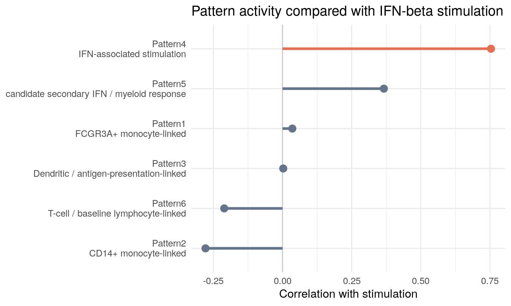
plot_data = pattern_condition.sort_values("corr_with_stim")
plot_data = plot_data.assign(
pattern_display=plot_data["pattern"] + "\n" + plot_data["working_label"]
)
colors = plot_data["is_ifn_candidate"].map({True: "#E76F51", False: "#64748B"})
fig, ax = plt.subplots(figsize=(8, 4.8))
ax.axvline(0, color="0.8")
ax.hlines(
y=plot_data["pattern_display"],
xmin=0,
xmax=plot_data["corr_with_stim"],
color=colors,
linewidth=4,
)
ax.scatter(plot_data["corr_with_stim"], plot_data["pattern_display"], color=colors, s=80)
ax.set_xlabel("Correlation with stimulation")
ax.set_ylabel("")
ax.set_title("Pattern activity compared with IFN-beta stimulation")
ax.grid(axis="x", alpha=0.25)
plt.tight_layout()
show_plot(fig, "visualization_pattern_screen.png")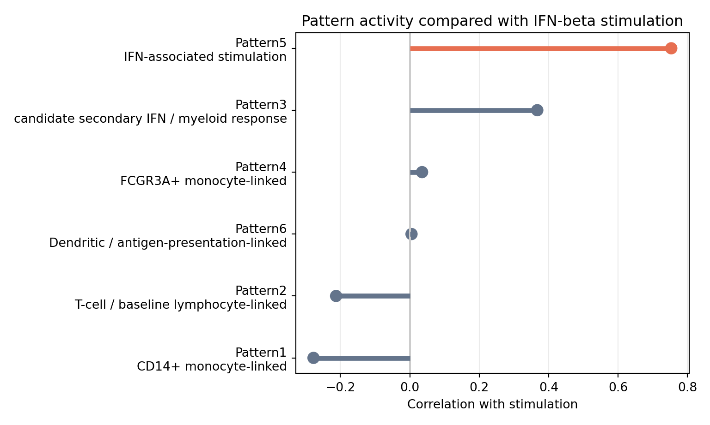
The screen points to one strong positive stimulation-associated pattern in each saved implementation: Pattern4 in the selected R run and Pattern5 in the saved Python-compatible run. A second pattern also has positive association with stimulation, but the IFN-associated candidate is much stronger by this metric. You should still avoid treating this plot as a final answer. It tells you where to look next.
Compare Pattern Activity With Cell Neighborhoods
The pattern screen tells you which pattern is most associated with stimulation, but it does not show where the activity sits in the cell population. For that, it helps to use the as a reference map. A UMAP is not the CoGAPS model itself; it is a two-dimensional layout of the cells that you can recolor in different ways.
In the paired UMAPs below, the left panel is always the same annotated PBMC identity map. The right panel recolors those same cells by one CoGAPS pattern. This lets you ask a visual question that a summary table cannot answer as directly: does the activity appear across several PBMC neighborhoods, or is it concentrated in one immune-cell region?
The IFN-associated pattern is included, but it is not the only pattern worth inspecting. Some patterns are more identity-linked, meaning their strongest activity sits mainly in one annotated neighborhood such as monocytes or T cells. The caption for each figure gives a cautious working interpretation based on the selected-model summaries. Comparing several patterns side by side teaches an important habit: a latent-variable model should be read as a collection of partially overlapping signals, not as a single treatment-response plot.


The code below shows how one paired UMAP comparison is built from the long UMAP source table. The first plot maps cell_type to color, so you can see the annotated PBMC neighborhoods. The second plot keeps the same umap_1 and umap_2 coordinates but maps activity to color for one CoGAPS pattern.
In R, filter() keeps one pattern at a time, and arrange(activity) draws low-activity cells first so high-activity cells are not hidden underneath them. In Python, the same logic uses Boolean filtering and sort_values(). In both languages, the useful programming idea is the same: once the data are in a tidy table, changing the color variable changes the biological layer you are viewing without changing the cell positions.
pattern_to_map_r <- ifn_pattern_for_visuals_r
umap_one_pattern_r <- pattern_umap_r |>
dplyr::filter(pattern == pattern_to_map_r) |>
dplyr::arrange(activity)
cell_type_colors_r <- c(
"CD4 T cells" = "#2A9D8F",
"CD14+ Monocytes" = "#457B9D",
"B cells" = "#E9C46A",
"NK cells" = "#7E68B1",
"CD8 T cells" = "#52B788",
"FCGR3A+ Monocytes" = "#F4A261",
"Dendritic cells" = "#5B6770",
"Megakaryocytes" = "#D1495B"
)
identity_umap_r <- ggplot(
umap_one_pattern_r,
aes(x = umap_1, y = umap_2, color = cell_type)
) +
geom_point(size = 0.45, alpha = 0.72) +
coord_equal() +
scale_color_manual(
values = cell_type_colors_r,
name = "Cell type",
guide = guide_legend(override.aes = list(size = 4, alpha = 1))
) +
labs(
title = "Identity reference",
subtitle = "Each point is one cell; color shows the annotated PBMC identity.",
x = "UMAP 1",
y = "UMAP 2"
) +
theme_minimal(base_size = 13)
activity_umap_r <- ggplot(
umap_one_pattern_r,
aes(x = umap_1, y = umap_2, color = activity)
) +
geom_point(size = 0.45, alpha = 0.72) +
coord_equal() +
scale_color_gradientn(
colors = c("#1F2937", "#6D3A9C", "#E76F51", "#FDE68A"),
name = "Pattern activity"
) +
labs(
title = paste(pattern_to_map_r, "activity on the PBMC UMAP"),
subtitle = "The same UMAP coordinates can be recolored by any CoGAPS pattern.",
x = "UMAP 1",
y = "UMAP 2"
) +
theme_minimal(base_size = 13)
identity_umap_r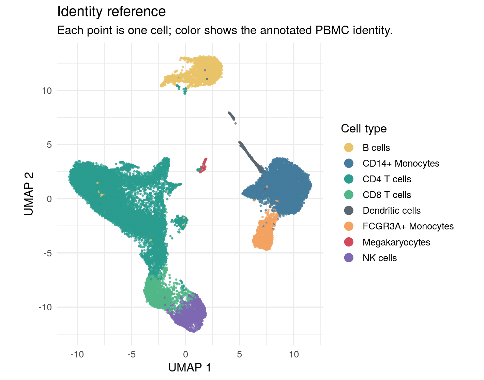
activity_umap_r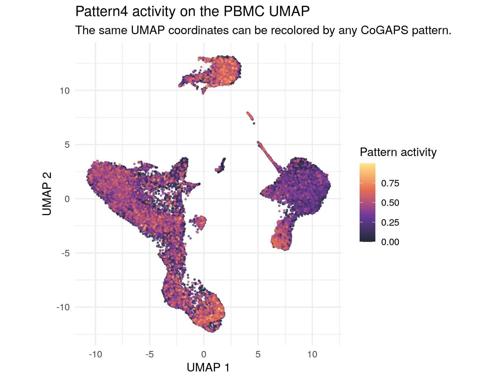
pattern_to_map = ifn_pattern_for_visuals
umap_one_pattern = (
pattern_umap.loc[pattern_umap["pattern"].eq(pattern_to_map)]
.sort_values("activity")
)
cell_type_colors = {
"CD4 T cells": "#2A9D8F",
"CD14+ Monocytes": "#457B9D",
"B cells": "#E9C46A",
"NK cells": "#7E68B1",
"CD8 T cells": "#52B788",
"FCGR3A+ Monocytes": "#F4A261",
"Dendritic cells": "#5B6770",
"Megakaryocytes": "#D1495B",
}
fig, axes = plt.subplots(nrows=2, figsize=(7.4, 9.6), constrained_layout=True)
for cell_type, group in umap_one_pattern.groupby("cell_type"):
axes[0].scatter(
group["umap_1"],
group["umap_2"],
color=cell_type_colors.get(cell_type, "0.6"),
s=3,
alpha=0.72,
linewidths=0,
label=cell_type,
)
axes[0].set_title("Identity reference")
axes[0].set_xlabel("UMAP 1")
axes[0].set_ylabel("UMAP 2")
axes[0].set_aspect("equal", adjustable="box")
axes[0].legend(
title="Cell type",
loc="center left",
bbox_to_anchor=(1.02, 0.5),
frameon=False,
markerscale=3,
)
scatter = axes[1].scatter(
umap_one_pattern["umap_1"],
umap_one_pattern["umap_2"],
c=umap_one_pattern["activity"],
cmap="magma",
s=3,
alpha=0.72,
linewidths=0,
)
axes[1].set_aspect("equal", adjustable="box")
axes[1].set_xlabel("UMAP 1")
axes[1].set_ylabel("UMAP 2")
axes[1].set_title(f"{pattern_to_map} activity on the PBMC UMAP")
fig.colorbar(scatter, ax=axes[1], label="Pattern activity")<matplotlib.colorbar.Colorbar object at 0x7fffb3b3ad70>show_plot(fig, "visualization_umap_pattern_activity.png")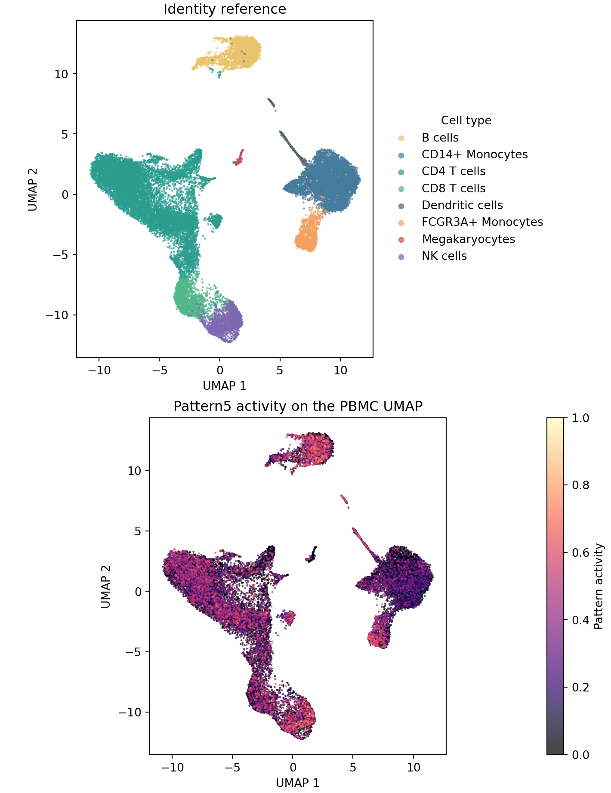
The paired UMAPs show why it would be too narrow to visualize only the IFN-associated pattern. Pattern 4 has broad stimulation-associated activity, but other patterns are visibly concentrated in particular immune-cell neighborhoods. That does not automatically name those patterns biologically; it gives you a visual hypothesis to test later with cell-type summaries, top genes, and directionality.
Check Whether The Shift Is Paired Across Donors
The source study used a : each donor contributed control and IFN-beta-stimulated aliquots. A useful visualization should respect that design. Instead of treating all control cells and all stimulated cells as unrelated groups, the next figure computes a within-donor difference:
mean stimulated activity - mean control activity
Positive values mean that the IFN-associated pattern is more active in the stimulated aliquot from that same donor.

The code uses a wide table with one row per donor and separate columns for control and stimulated mean activity. The important programming move is creating and plotting stim_minus_ctrl, a new column that stores the paired difference. In R, geom_segment() draws each difference from zero to its observed value. In Python, ax.hlines() does the same thing.
ggplot(replicate_pairs_r) +
geom_segment(
aes(x = 0, xend = stim_minus_ctrl, y = donor_label, yend = donor_label),
color = "#F2B7A4",
linewidth = 3.2
) +
geom_point(aes(x = stim_minus_ctrl, y = donor_label), color = "#E76F51", size = 3.5) +
geom_vline(xintercept = mean(replicate_pairs_r$stim_minus_ctrl), linetype = "dashed") +
labs(
title = "Donor-paired shifts in IFN-associated activity",
x = "Mean activity difference (IFN-beta - control)",
y = "Matched donor pair"
) +
theme_minimal(base_size = 13)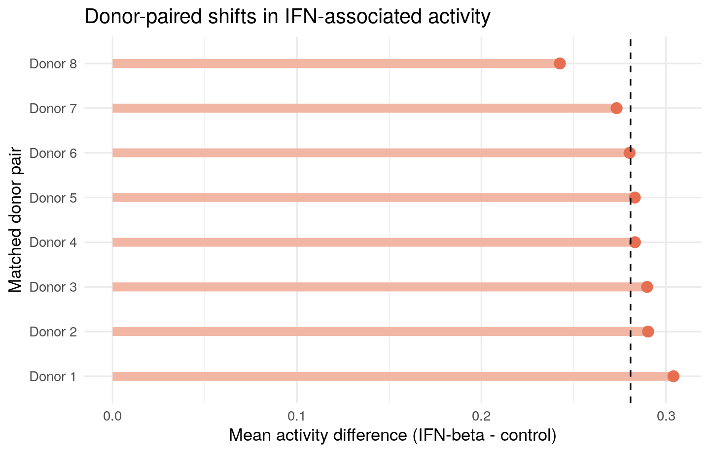
fig, ax = plt.subplots(figsize=(7.5, 4.8))
y = np.arange(len(replicate_pairs))
ax.axvline(0, color="0.8")
ax.hlines(
y,
xmin=0,
xmax=replicate_pairs["stim_minus_ctrl"],
color="#F2B7A4",
linewidth=6,
)
ax.scatter(replicate_pairs["stim_minus_ctrl"], y, color="#E76F51", s=70)
ax.axvline(replicate_pairs["stim_minus_ctrl"].mean(), color="#0B2239", linestyle="--")
ax.set_yticks(y)
ax.set_yticklabels(replicate_pairs["donor_label"])
ax.invert_yaxis()
ax.set_xlabel("Mean activity difference (IFN-beta - control)")
ax.set_ylabel("Matched donor pair")
ax.set_title("Donor-paired shifts in IFN-associated activity")
ax.grid(axis="x", alpha=0.25)
plt.tight_layout()
show_plot(fig, "visualization_paired_donor_activity.png")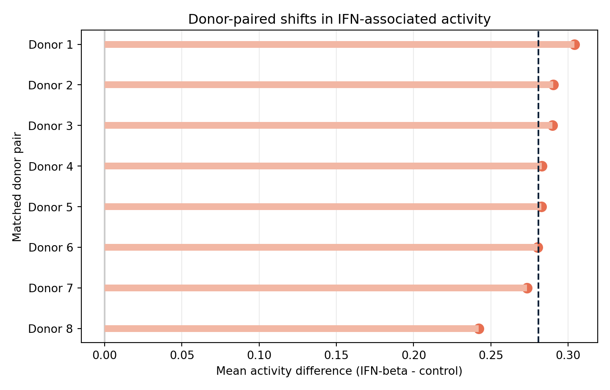
The paired view is reassuring because the stimulation-associated increase is not driven by a single donor. In both saved implementations, each donor has higher mean activity after IFN-beta stimulation than in the matched control aliquot for the implementation-specific IFN-associated pattern. This does not replace a formal donor-aware statistical model, but it is an important visual check before making a biological interpretation.
Compare Activity Across PBMC Identities
PBMCs contain several immune-cell types, so the next question is whether the IFN-associated pattern is only a marker of one annotated identity or whether it cuts across the mixture. The plot below summarizes mean activity by annotated PBMC identity and condition.

The source table has one row per cell type and columns for the mean control activity, mean stimulated activity, and the difference. The R code orders cell types by stimulated activity so the strongest stimulated groups appear at the top. The Python code uses the same ordering and draws a horizontal line from control to stimulated activity for each cell type.
celltype_plot_r <- celltype_condition_r |>
dplyr::arrange(stim) |>
dplyr::mutate(cell_type = factor(cell_type, levels = cell_type))
ggplot(celltype_plot_r, aes(y = cell_type)) +
geom_segment(aes(x = ctrl, xend = stim, yend = cell_type), color = "grey82", linewidth = 1.3) +
geom_point(aes(x = ctrl), color = "#64748B", size = 3) +
geom_point(aes(x = stim), color = "#E76F51", size = 3) +
labs(
title = "IFN-associated activity by PBMC identity",
x = "Mean pattern activity",
y = NULL
) +
theme_minimal(base_size = 13)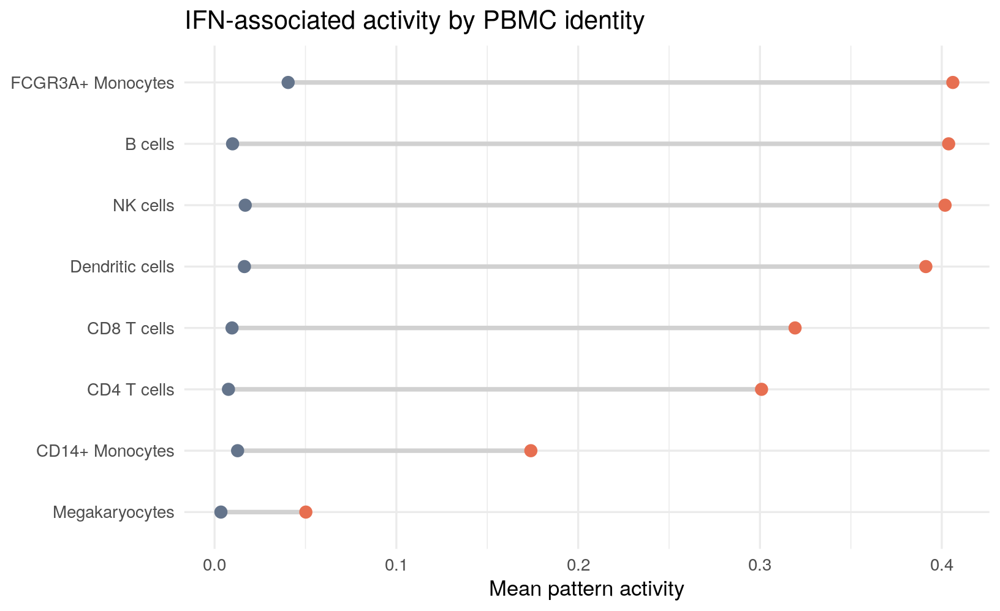
celltype_plot = celltype_condition.sort_values("stim")
fig, ax = plt.subplots(figsize=(8.5, 5.2))
y = np.arange(len(celltype_plot))
ax.hlines(y, celltype_plot["ctrl"], celltype_plot["stim"], color="0.82", linewidth=3)
ax.scatter(celltype_plot["ctrl"], y, color="#64748B", s=70, label="control")
ax.scatter(celltype_plot["stim"], y, color="#E76F51", s=70, label="IFN-beta, 6 h")
ax.set_yticks(y)
ax.set_yticklabels(celltype_plot["cell_type"])
ax.set_xlabel("Mean pattern activity")
ax.set_title("IFN-associated activity by PBMC identity")
ax.legend(frameon=False)
ax.grid(axis="x", alpha=0.25)
plt.tight_layout()
show_plot(fig, "visualization_ifn_celltype_condition.png")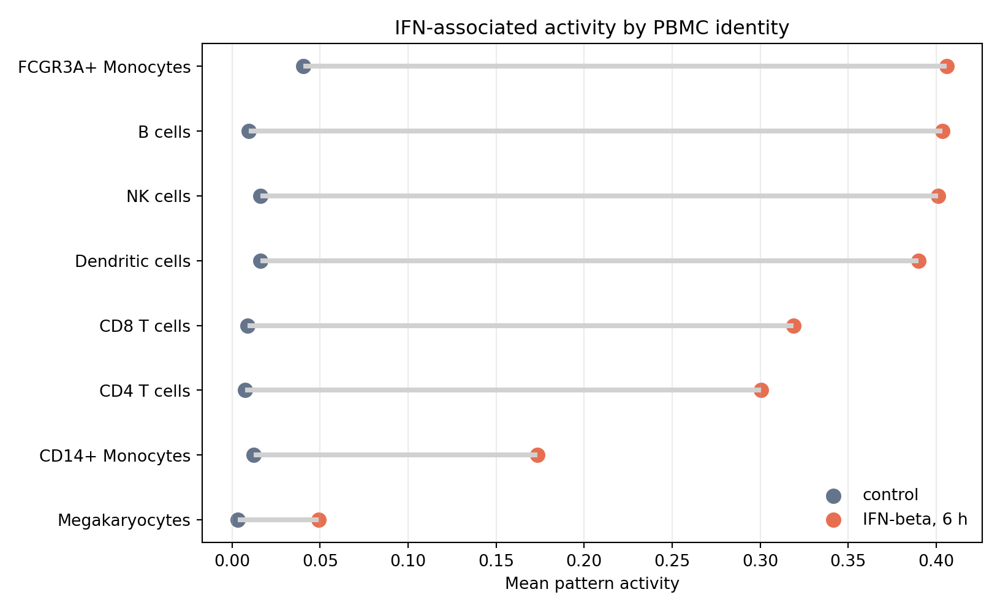
Most annotated PBMC identities show higher mean activity in IFN-beta-stimulated cells, which supports a broad stimulation-associated interpretation. The heights are not identical, however. FCGR3A+ monocytes, B cells, NK cells, and dendritic cells show especially high stimulated activity, while megakaryocytes remain low. That is the kind of pattern you should expect in single-cell data: a shared response can still vary by cell type.

Connect Top Genes To Direction
The last visualization combines two pieces of evidence that are easy to confuse. A high CoGAPS gene weight means a gene helps define a pattern. It does not say whether the gene is higher in stimulation. For that, you need a separate expression-direction summary.
The saved figure below shows the selected R run, where the IFN-associated pattern is Pattern4. The Python tab below uses the same check for the Python saved output, where the corresponding IFN-associated pattern is Pattern5.

Pattern4, the IFN-associated pattern in the selected R run. The left panel ranks genes by CoGAPS weight, which tells you which genes most help define the pattern. The right panel checks whether those same genes are higher or lower in IFN-beta-stimulated cells compared with controls. Most top genes are canonical interferon-stimulated genes that are higher in stimulation, while FTH1 is a useful reminder that a high pattern weight does not automatically mean up-regulation.
The R code below uses ifelse() to choose a color from the direction column. The Python code uses map() for the same purpose. Both versions show the key idea: first rank genes by pattern weight, then check whether each gene rises or falls in the stimulation contrast.
gene_direction_plot_r <- top_gene_direction_r |>
dplyr::arrange(desc(rank)) |>
dplyr::mutate(
gene = factor(gene, levels = gene),
direction_color = ifelse(direction == "up_in_stim", "higher in stimulation", "lower in stimulation")
)
ggplot(gene_direction_plot_r, aes(x = mean_log2fc_stim_vs_ctrl, y = gene, fill = direction_color)) +
geom_vline(xintercept = 0, color = "grey80") +
geom_col() +
scale_fill_manual(
values = c("higher in stimulation" = "#E76F51", "lower in stimulation" = "#2B8CBE"),
name = NULL
) +
labs(
title = "Direction of top pattern genes",
x = "Mean log2 fold-change: IFN-beta vs control",
y = NULL
) +
theme_minimal(base_size = 13)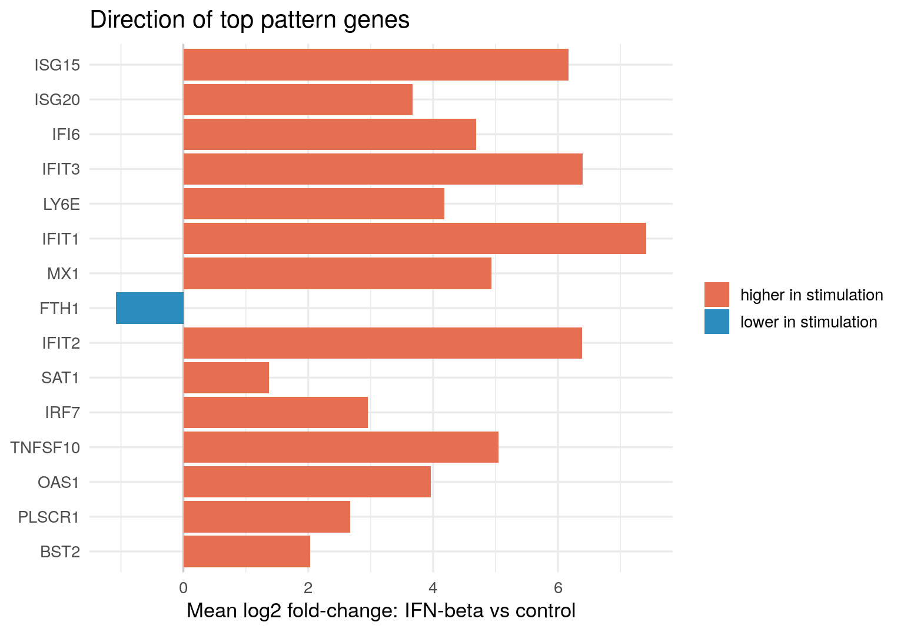
gene_direction_plot = top_gene_direction.sort_values("rank", ascending=False)
direction_colors = gene_direction_plot["direction"].map(
{"up_in_stim": "#E76F51", "down_in_stim": "#2B8CBE"}
)
fig, ax = plt.subplots(figsize=(8, 5.6))
ax.axvline(0, color="0.8")
ax.barh(
gene_direction_plot["gene"],
gene_direction_plot["mean_log2fc_stim_vs_ctrl"],
color=direction_colors,
)
ax.set_xlabel("Mean log2 fold-change: IFN-beta vs control")
ax.set_ylabel("")
ax.set_title("Direction of top pattern genes")
ax.grid(axis="x", alpha=0.25)
plt.tight_layout()
show_plot(fig, "visualization_ifn_top_gene_directionality.png")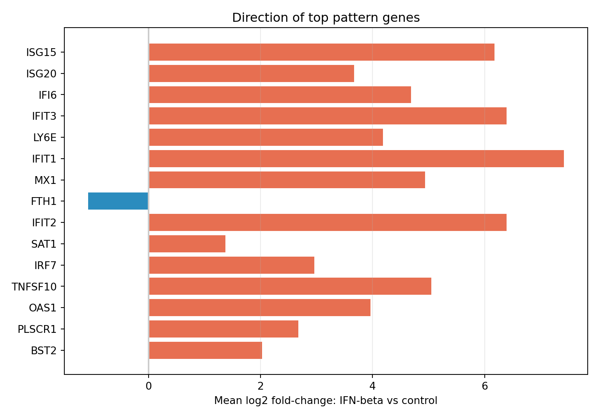
Most top genes for the implementation-specific IFN-associated pattern are higher in IFN-beta-stimulated cells. The top list includes canonical interferon-stimulated genes such as ISG15, ISG20, IFI6, IFIT3, IFIT1, MX1, IFIT2, IRF7, OAS1, PLSCR1, and BST2. The main exception among the top genes is FTH1, which has a high pattern weight but is lower in stimulation in this targeted summary. That exception is useful: it reminds you not to translate “top pattern gene” into “up-regulated gene” without checking directionality.
Compare Directionality For An Identity-Linked Pattern
The IFN-associated pattern is not the only pattern worth visualizing. Some patterns are more closely tied to than to stimulation. For those patterns, a stimulation-versus-control contrast is not always the most informative first direction check.
The next figure uses a dendritic / antigen-presentation-linked pattern as a teaching contrast. In the selected R run, this is Pattern3. In the saved Python-compatible output, the corresponding dendritic / antigen-presentation-linked pattern is Pattern6. The exact number changes across implementations, but the interpretation question is the same: do the top genes mark a PBMC identity, a stimulation response, or both?
To answer that, the figure uses two expression contrasts. The middle panel asks whether top genes are higher in the dominant annotated cell identity than in other PBMC identities. The right panel asks whether those same genes are higher after IFN-beta stimulation. That comparison keeps separate from and also keeps cell identity separate from condition.

Pattern3, the dendritic / antigen-presentation-linked pattern in the selected R run. The left panel ranks top genes by CoGAPS weight. The middle panel compares expression in dendritic cells with other PBMC identities. The right panel compares IFN-beta stimulation with control. CD74 and HLA genes help define the pattern and are higher in dendritic cells, while most of those genes are not higher after IFN-beta stimulation.
The code below builds the same type of figure from the implementation-specific source table. In R, pivot_longer() turns two contrast columns into one plotting column so facet_wrap() can place the contrasts side by side. In Python, plt.subplots() creates the two side-by-side axes and a short loop draws one bar chart per contrast. Both versions practice the same programming idea: reshape the data so that the contrast you want to compare becomes a plotting variable.
identity_pattern_label_r <- unique(identity_gene_direction_r$pattern)
dominant_identity_r <- unique(identity_gene_direction_r$dominant_cell_type)
identity_direction_long_r <- identity_gene_direction_r |>
dplyr::arrange(desc(rank)) |>
dplyr::mutate(gene = factor(gene, levels = gene)) |>
tidyr::pivot_longer(
cols = c(identity_log2fc_dominant_vs_other, stim_log2fc_stim_vs_ctrl),
names_to = "contrast",
values_to = "mean_log2fc"
) |>
dplyr::mutate(
contrast = dplyr::recode(
contrast,
identity_log2fc_dominant_vs_other = paste0(dominant_identity_r, " vs other PBMCs"),
stim_log2fc_stim_vs_ctrl = "IFN-beta vs control"
),
direction_label = dplyr::case_when(
contrast == paste0(dominant_identity_r, " vs other PBMCs") & mean_log2fc >= 0 ~ paste0("higher in ", dominant_identity_r),
contrast == paste0(dominant_identity_r, " vs other PBMCs") & mean_log2fc < 0 ~ "higher in other PBMCs",
contrast == "IFN-beta vs control" & mean_log2fc >= 0 ~ "higher in stimulation",
TRUE ~ "higher in control"
)
)
identity_direction_colors_r <- c("#168477", "#7E68B1", "#E76F51", "#2B8CBE")
names(identity_direction_colors_r) <- c(
paste0("higher in ", dominant_identity_r),
"higher in other PBMCs",
"higher in stimulation",
"higher in control"
)
ggplot(identity_direction_long_r, aes(x = mean_log2fc, y = gene, fill = direction_label)) +
geom_vline(xintercept = 0, color = "grey80") +
geom_col() +
facet_wrap(~ contrast, ncol = 2, scales = "free_x") +
scale_fill_manual(
values = identity_direction_colors_r,
name = NULL
) +
labs(
title = paste0(identity_pattern_label_r, ": direction checks for an identity-linked pattern"),
x = "Mean log2 fold-change",
y = NULL
) +
theme_minimal(base_size = 13) +
theme(legend.position = "bottom")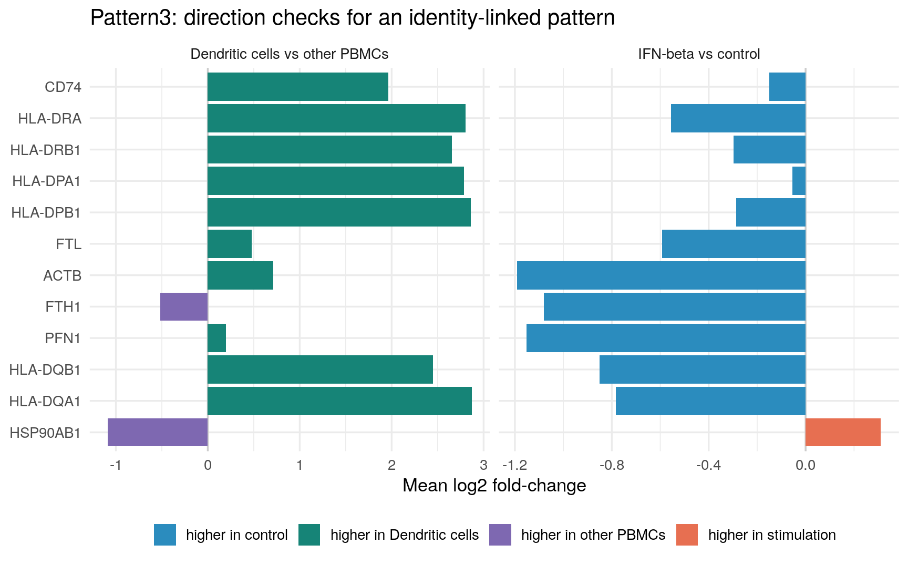
identity_direction_plot = identity_gene_direction.sort_values("rank", ascending=False).copy()
identity_pattern_label = identity_direction_plot["pattern"].iloc[0]
dominant_identity = identity_direction_plot["dominant_cell_type"].iloc[0]
plot_specs = [
(
f"{dominant_identity} vs other PBMCs",
"identity_log2fc_dominant_vs_other",
"#168477",
"#7E68B1",
),
(
"IFN-beta vs control",
"stim_log2fc_stim_vs_ctrl",
"#E76F51",
"#2B8CBE",
),
]
fig, axes = plt.subplots(ncols=2, figsize=(9, 5.6), sharey=True)
y_positions = np.arange(len(identity_direction_plot))
for ax, (title, value_column, positive_color, negative_color) in zip(axes, plot_specs):
values = identity_direction_plot[value_column]
colors = np.where(values >= 0, positive_color, negative_color)
ax.axvline(0, color="0.8")
ax.barh(y_positions, values, color=colors)
ax.set_title(title)
ax.set_xlabel("Mean log2 fold-change")
ax.grid(axis="x", alpha=0.25)
axes[0].set_yticks(y_positions)
axes[0].set_yticklabels(identity_direction_plot["gene"])
axes[0].set_ylabel("")
fig.suptitle(f"{identity_pattern_label}: direction checks for an identity-linked pattern")
legend_handles = [
plt.Line2D([0], [0], color="#168477", lw=8, label=f"higher in {dominant_identity}"),
plt.Line2D([0], [0], color="#7E68B1", lw=8, label="higher in other PBMCs"),
plt.Line2D([0], [0], color="#E76F51", lw=8, label="higher in stimulation"),
plt.Line2D([0], [0], color="#2B8CBE", lw=8, label="higher in control"),
]
fig.legend(handles=legend_handles, loc="lower center", ncol=2, frameon=False)
plt.tight_layout(rect=[0, 0.1, 1, 0.96])
show_plot(fig, "visualization_identity_pattern_directionality.png")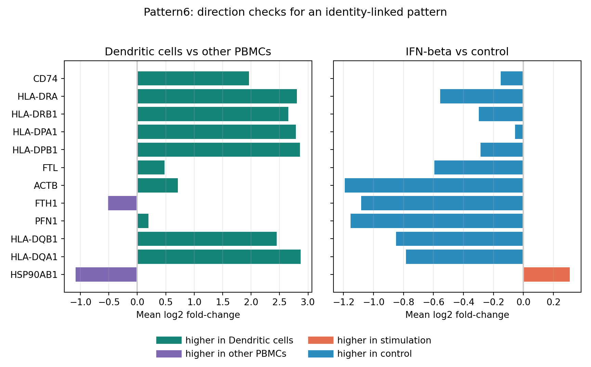
The identity-linked direction check changes the interpretation. The top genes for this pattern are not mainly canonical IFN-response genes. They include CD74 and several HLA genes, which are consistent with antigen presentation and dendritic-cell-linked structure. Those genes are higher in dendritic cells than in other PBMC identities, while most are not higher after IFN-beta stimulation in this summary. That is exactly why this second direction check matters: a meaningful CoGAPS pattern does not have to be a stimulation-response pattern.
Visualization Checkpoint
By the end of this section, you should be able to read the selected-model visual evidence as a set of linked checks:
- The pattern screen identifies the strongest stimulation-associated candidate in each saved implementation.
- The paired donor plot checks whether the stimulation shift appears across matched donor aliquots.
- The cell-type plot asks whether the same pattern is broad across PBMC identities.
- The heatmap shows that other patterns have different condition and cell-type behavior.
- The gene-direction plot connects top CoGAPS genes to whether those genes rise or fall after IFN-beta stimulation.
- The identity-linked direction plot shows that some top genes mark an immune-cell identity rather than a stimulation response.
The next section moves from visual inspection to model interpretation. You will inspect the same CoGAPS outputs more directly, identify the IFN-associated pattern from the saved metrics and pattern tables, and connect activity, top genes, and directionality into a cautious biological interpretation.
Data Analysis
You have now imported the prepared PBMC data, inspected model-selection evidence, and visualized CoGAPS in relation to cell identity, IFN-beta stimulation, and gene direction. This section turns those pieces into an evidence chain: first check that the selected model is suitable to interpret, then use the four main questions to organize the biological interpretation.
The key habit is to avoid naming a pattern from one clue alone. A CoGAPS pattern has two linked parts: and . A pattern can have high-weight interferon-stimulated genes, but the cells also need to show activity where an interferon response is expected. A gene can have a high CoGAPS weight, but that weight does not by itself tell you whether the gene is higher or lower after IFN-beta stimulation.
The selected R model is the primary model you will interpret. The Python tab lets you repeat the same checks with saved Python outputs. Because pattern numbers can differ across runs, the phrase “” is usually safer than a numbered label. When this section discusses a specific saved run, it states the run-specific label explicitly.
Questions answered in this section
- What latent transcriptional programs are present in IFN-beta-stimulated and control PBMC single-cell RNA-seq data?
- Can CoGAPS help distinguish broad stimulation-associated activity from cell-type-linked immune programs?
- Which genes define the strongest IFN-associated pattern, and what is their direction in stimulation?
- How does the IFN-associated pattern vary across annotated PBMC cell types?
Load The Analysis Tables
The selected-model files are lightweight tables exported from the saved CoGAPS runs. They let the case study inspect model evidence without requiring every learner to load a full model object. In this first step, the code reads the tables that later chunks reuse.
In R, readr::read_csv() reads comma-separated tables and readr::read_tsv() reads tab-separated pattern matrices. The pipe operator |> passes the result of one step into the next step, which makes the code read from left to right. In Python, pandas.read_csv() plays the same role, and Path objects keep file paths explicit.
analysis_metrics_r <- jsonlite::read_json(
R_CHOSEN_METRICS_JSON_R,
simplifyVector = TRUE
)
analysis_metrics_python_for_r <- jsonlite::read_json(
PY_CHOSEN_METRICS_JSON_R,
simplifyVector = TRUE
)
analysis_diag_r <- jsonlite::read_json(
file.path(R_K6_RESULTS_DIR_R, "cogaps_K6_seed2_iter2000.diagnostics.json"),
simplifyVector = TRUE
)
trace_r <- readr::read_csv(
file.path(R_K6_RESULTS_DIR_R, "cogaps_K6_seed2_iter2000.trace.csv"),
show_col_types = FALSE
)
snapshot_summary_r <- readr::read_csv(
file.path(R_K6_RESULTS_DIR_R, "cogaps_K6_seed2_iter2000.snapshot_summary.csv"),
show_col_types = FALSE
)
uncertainty_summary_r <- readr::read_csv(
file.path(R_K6_RESULTS_DIR_R, "cogaps_K6_seed2_iter2000.pattern_uncertainty_summary.csv"),
show_col_types = FALSE
)
pattern_summary_r <- readr::read_csv(R_PATTERN_SUMMARY_CSV_R, show_col_types = FALSE)
pattern_correlations_r <- readr::read_csv(R_PATTERN_CORRELATIONS_CSV_R, show_col_types = FALSE)
pattern_top_genes_r <- readr::read_csv(R_PATTERN_TOP_GENES_CSV_R, show_col_types = FALSE)
activity_by_celltype_r <- readr::read_csv(
R_PATTERN_ACTIVITY_BY_CELLTYPE_CONDITION_CSV_R,
show_col_types = FALSE
)
activity_by_replicate_r <- readr::read_csv(
R_PATTERN_ACTIVITY_BY_REPLICATE_CONDITION_CSV_R,
show_col_types = FALSE
)
direction_global_r <- readr::read_csv(R_DIRECTION_GLOBAL_CSV_R, show_col_types = FALSE)
direction_celltype_r <- readr::read_csv(R_DIRECTION_CELLTYPE_CSV_R, show_col_types = FALSE)
direction_summary_r <- readr::read_csv(R_DIRECTION_SUMMARY_CSV_R, show_col_types = FALSE)
matrices_r <- load_lightweight_pattern_matrices_r(
R_PATTERN_GENE_WEIGHTS_TSV_GZ_R,
R_PATTERN_CELL_ACTIVITIES_TSV_GZ_R
)
A_r <- matrices_r$A
P_r <- matrices_r$P
pattern_names_r <- pattern_columns_r(colnames(A_r))
ifn_pattern_r <- analysis_metrics_r$ifn_pattern
ifn_pattern_python_for_r <- analysis_metrics_python_for_r$ifn_pattern
selected_run_overview_r <- tibble::tibble(
item = c(
"implementation",
"model resolution",
"seed",
"iterations per phase",
"sparse optimization",
"saved IFN-associated pattern",
"mean chi-square"
),
value = c(
"R / Bioconductor CoGAPS",
analysis_metrics_r$nPatterns,
analysis_metrics_r$seed,
analysis_metrics_r$nIterations,
analysis_metrics_r$sparseOptimization,
ifn_pattern_r,
format(analysis_metrics_r$meanChiSq, big.mark = ",")
)
)
knitr::kable(
selected_run_overview_r,
col.names = c("Item", "Value")
)| Item | Value |
|---|---|
| implementation | R / Bioconductor CoGAPS |
| model resolution | 6 |
| seed | 2 |
| iterations per phase | 2000 |
| sparse optimization | TRUE |
| saved IFN-associated pattern | Pattern4 |
| mean chi-square | 221,295,424 |
from scripts.helpers.case_study_display import render_table, show_plot
with open(PY_CHOSEN_METRICS_JSON) as f:
analysis_metrics = json.load(f)
with open(R_CHOSEN_METRICS_JSON) as f:
analysis_metrics_r_for_python = json.load(f)
pattern_summary = pd.read_csv(PY_PATTERN_SUMMARY_CSV)
pattern_correlations = pd.read_csv(PY_PATTERN_CORRELATIONS_CSV)
pattern_top_genes = pd.read_csv(PY_PATTERN_TOP_GENES_CSV)
activity_by_celltype = pd.read_csv(PY_PATTERN_ACTIVITY_BY_CELLTYPE_CONDITION_CSV)
activity_by_replicate = pd.read_csv(PY_PATTERN_ACTIVITY_BY_REPLICATE_CONDITION_CSV)
direction_global = pd.read_csv(PY_DIRECTION_GLOBAL_CSV)
direction_celltype = pd.read_csv(PY_DIRECTION_CELLTYPE_CSV)
direction_summary = pd.read_csv(PY_DIRECTION_SUMMARY_CSV)
A_py, P_py = load_lightweight_pattern_matrices(
PY_PATTERN_GENE_WEIGHTS_TSV_GZ,
PY_PATTERN_CELL_ACTIVITIES_TSV_GZ
)
pattern_names_py = pattern_columns(A_py)
ifn_pattern_py = analysis_metrics["ifn_pattern"]
ifn_pattern_r_for_python = analysis_metrics_r_for_python["ifn_pattern"]
python_model_resolution = analysis_metrics.get("nPatterns", analysis_metrics.get("K"))
python_iterations = analysis_metrics.get("nIterations", analysis_metrics.get("n_iter"))
python_sparse_setting = analysis_metrics.get(
"sparseOptimization",
"not recorded in lightweight metrics",
)
python_mean_chisq = analysis_metrics.get(
"meanChiSq",
"not exported in lightweight metrics",
)
selected_run_overview = pd.DataFrame(
{
"Item": [
"implementation",
"model resolution",
"seed",
"iterations per phase",
"sparse optimization",
"saved IFN-associated pattern",
"mean chi-square",
],
"Value": [
"Python / PyCoGAPS-compatible output",
python_model_resolution,
analysis_metrics["seed"],
python_iterations,
python_sparse_setting,
ifn_pattern_py,
python_mean_chisq if isinstance(python_mean_chisq, str) else f"{python_mean_chisq:,}",
],
}
)
print(render_table(selected_run_overview))| Item | Value |
|---|---|
| implementation | Python / PyCoGAPS-compatible output |
| model resolution | 6 |
| seed | 2 |
| iterations per phase | 2000 |
| sparse optimization | not recorded in lightweight metrics |
| saved IFN-associated pattern | Pattern5 |
| mean chi-square | not exported in lightweight metrics |
Read the settings above as a record of these saved runs, not as recommended defaults for a new dataset. The selected R model uses 2,000 iterations per phase for the dataset-specific reasons discussed in Data Import. The diagnostics below let you inspect that saved run more closely.
The R run labels the IFN-associated pattern as Pattern4. The Python-compatible output labels the corresponding signal as Pattern5. That difference is not a contradiction. CoGAPS pattern numbers are labels assigned inside a run; they are not stable biological names.
Carry-Forward Check: Is The Selected Model Appropriate To Interpret?
Before interpreting a latent pattern, inspect how the model changed during the run. CoGAPS is a matrix-factorization method, not a simple optimizer that must make the smaller at every recorded step. Compare the full run with a closer view of sampling so that the large early change does not hide the later variation.
The below comes from the selected R run, the primary model for this case study. Its setting n_iter = 2000 means 2,000 equilibration iterations followed by 2,000 sampling iterations in this saved run. is the burn-in-like phase in which the sampler moves away from its starting state. The is used to summarize the final pattern matrices.
Each plotted point is a saved status value, recorded every 100 iterations, rather than every sampler update. The CSV’s phase and iteration labels were reconstructed from the saved run settings and the verified CoGAPS output schedule; they were not directly recorded with each point. There are 20 saved points per phase. The dashed line in the full-run plot marks the transition after iteration 2,000.
How to use this model-check section
- R analysis path: run these diagnostic chunks. They use saved trace, snapshot, and uncertainty files from the selected R CoGAPS model.
- Python analysis path: read the rendered diagnostic evidence here, then continue with the Python tabs in Question 1. These particular diagnostics are shown from R because the selected R run is the primary model and has the richest saved diagnostic record.
- Full reproduction path: use the Full Reproduction Guide if you want to rerun the selected model and regenerate these diagnostic files yourself.
The first plotting chunk checks that the exported timing labels are present and consistent, then orders the saved points by iteration_overall. ggplot() draws the full trace, colors points by phase, and marks the phase boundary using the difference between the overall and within-phase sampling iterations. If the checks stop, use the current included trace CSV or regenerate it with the matching run metrics; do not assign phases by splitting an unverified trace in half.
trace_fields_r <- c("phase", "iteration_in_phase", "iteration_overall", "phase_source", "chisq")
trace_numeric_fields_r <- c("iteration_in_phase", "iteration_overall", "chisq")
stopifnot(
"Use the current trace CSV with verified timing columns." = all(trace_fields_r %in% names(trace_r))
)
stopifnot(
"Trace timing must be resolved; check the CSV and matching run metrics." =
!anyNA(trace_r[trace_fields_r]) && all(trace_r$phase_source == "reconstructed_from_run_metrics"),
"The full trace must contain equilibration and sampling." =
setequal(trace_r$phase, c("equilibration", "sampling")),
"Iterations and chi-square must be finite numeric values." =
all(vapply(trace_r[trace_numeric_fields_r], is.numeric, logical(1))) &&
all(is.finite(as.matrix(trace_r[trace_numeric_fields_r])))
)
trace_plot_r <- trace_r |>
dplyr::arrange(iteration_overall) |>
dplyr::mutate(phase = factor(phase, levels = c("equilibration", "sampling")))
is_sampling_r <- trace_plot_r$phase == "sampling"
phase_boundary_r <- unique(
trace_plot_r$iteration_overall[is_sampling_r] - trace_plot_r$iteration_in_phase[is_sampling_r]
)
stopifnot(
"Trace iterations must follow one consistent two-phase schedule." =
length(phase_boundary_r) == 1L && phase_boundary_r > 0 &&
all(trace_plot_r$iteration_in_phase > 0) && !anyDuplicated(trace_plot_r$iteration_overall) &&
all(trace_plot_r$iteration_overall[!is_sampling_r] == trace_plot_r$iteration_in_phase[!is_sampling_r]) &&
all(trace_plot_r$iteration_overall[!is_sampling_r] <= phase_boundary_r)
)
trace_full_plot_r <- ggplot(trace_plot_r, aes(x = iteration_overall, y = chisq)) +
geom_line(color = "#2F5D8C", linewidth = 1) +
geom_point(aes(color = phase), size = 2.4) +
geom_vline(xintercept = phase_boundary_r, linetype = "dashed", color = "#102A43") +
scale_color_manual(values = c("equilibration" = "#E76F51", "sampling" = "#2A9D8F")) +
scale_x_continuous(labels = scales::label_number(big.mark = ",")) +
scale_y_continuous(labels = scales::label_number(big.mark = ",")) +
labs(
title = "Selected R model: full-run trace",
subtitle = "Equilibration and sampling; dashed line marks the phase transition.",
x = "Iteration across both phases",
y = "Chi-square",
color = "Phase"
) +
theme_minimal(base_size = 13) +
theme(legend.position = "bottom")
trace_full_plot_r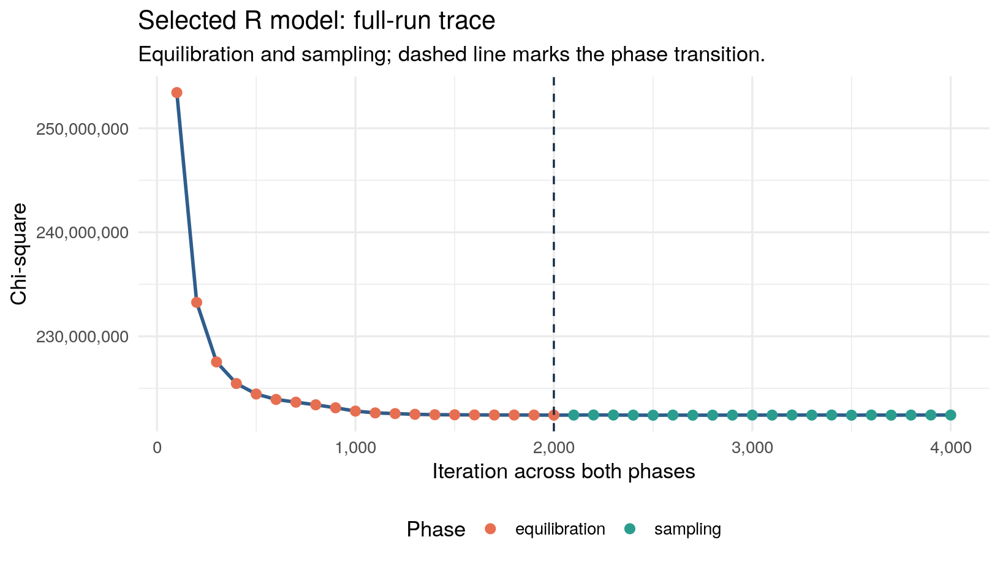
The large initial decrease determines the scale of the full-run plot. To inspect later variation, keep this overview and select only rows labeled sampling. The next plot retains the recorded chi-square values but gives them an expanded vertical scale. Its horizontal axis shows the iteration within sampling, starting with the first saved point at iteration 100.
sampling_trace_r <- trace_plot_r |>
dplyr::filter(phase == "sampling")
trace_sampling_plot_r <- ggplot(sampling_trace_r, aes(x = iteration_in_phase, y = chisq)) +
geom_line(color = "#2A9D8F", linewidth = 1) +
geom_point(color = "#2A9D8F", size = 2.4) +
scale_x_continuous(labels = scales::label_number(big.mark = ",")) +
scale_y_continuous(labels = scales::label_number(big.mark = ",", accuracy = 1)) +
labs(
title = "Selected R model: sampling trace",
subtitle = "Sampling phase only; expanded vertical scale.",
x = "Iteration within sampling",
y = "Chi-square"
) +
theme_minimal(base_size = 13)
trace_sampling_plot_r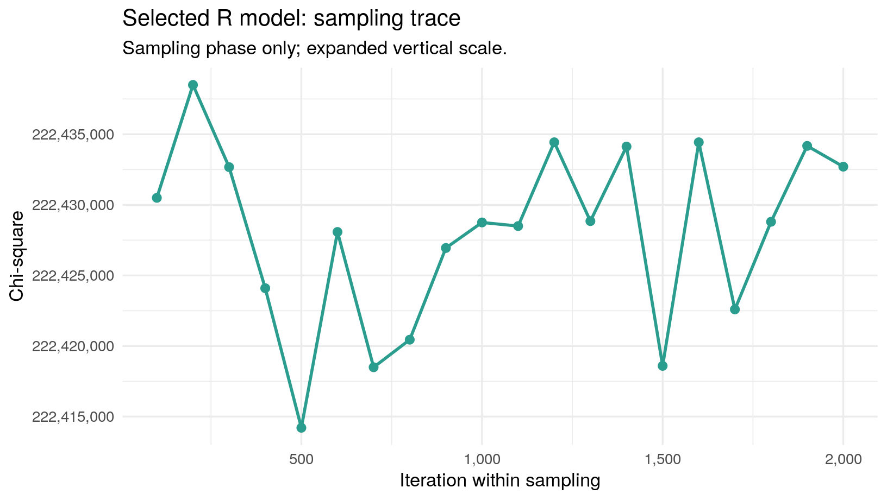
The full trace shows the large early change. The sampling-only view lets you inspect the smaller changes that are difficult to see on that scale. Variation during sampling is expected; a flat-looking trace is not itself evidence of good mixing. These saved diagnostics can reveal obvious problems, but they do not establish convergence or show that every pattern is equally stable.
Snapshots give a second stability check. A snapshot is a saved view of the model state during the run. The code below focuses on the gene-loading matrix, because top genes are central to biological interpretation. For each pattern, the diagnostic export compares the 15 highest-weight genes in a snapshot with the 15 highest-weight genes in the final summary and calculates the fraction shared. The column mean_top_overlap averages these fractions across all six patterns.
The plotting code filters the snapshot table to matrix A, the gene-weight matrix, and draws the average overlap for each saved snapshot in each phase. The dotted line at 0.9 is a visual reference, not a convergence cutoff. Values near one mean high average agreement in top-gene membership; they do not show whether the individual gene weights have stopped changing.
snapshot_a_r <- snapshot_summary_r |>
dplyr::filter(matrix == "A", !is.na(mean_top_overlap)) |>
dplyr::mutate(
phase = factor(phase, levels = c("equilibration", "sampling"))
)
ggplot(snapshot_a_r, aes(x = snapshot_label, y = mean_top_overlap, color = phase)) +
geom_line(linewidth = 1) +
geom_point(size = 3) +
geom_hline(yintercept = 0.9, linetype = "dotted", color = "grey45") +
scale_color_manual(values = c("equilibration" = "#E76F51", "sampling" = "#2A9D8F")) +
scale_y_continuous(limits = c(0, 1), labels = scales::label_number(accuracy = 0.01)) +
labs(
title = "Snapshot top-gene overlap with the final summary",
subtitle = "Average across six patterns; top 15 genes per pattern.",
x = "Iteration within phase",
y = "Mean top-gene overlap",
color = "Phase"
) +
theme_minimal(base_size = 13) +
theme(legend.position = "bottom")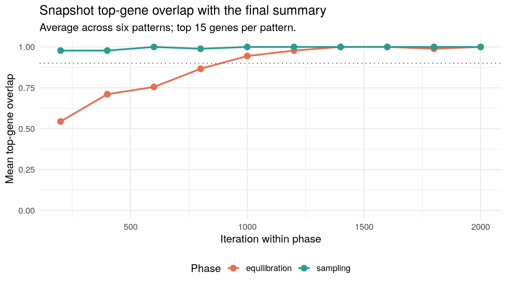
In this saved run, the average overlap ranges from about 0.978 to 1 across the ten sampling snapshots. This supports consistency of the top-gene lists on average. It does not establish equal stability across individual patterns, stability of every gene weight, or convergence of the whole model.
A third diagnostic looks at : the variability summarized by the sampler for its estimated cell activities and gene weights. The table below reports two different quantities, not a pass/fail test or a single ranking of pattern reliability.
- Mean cell-activity SD: for each cell, the saved model reports a posterior standard deviation (SD) for that pattern’s activity. This column averages those SDs across cells. It is not the spread of activity estimates between cells, and it remains on the activity scale.
- Median top-gene loading CV: for each of the pattern’s 15 highest-weight genes, the export divides the posterior loading SD by its estimated gene weight, then takes the median of these ratios. This (CV) describes relative uncertainty in gene weights, not in cell activities.
Activity scales differ among patterns, so a larger raw activity SD alone does not make one pattern less reliable than another. Likewise, loading CV is not an activity CV. Neither column measures biological importance or accuracy. Read them alongside the trace, snapshot overlap, top genes, and donor-level activity evidence.
The table marks the run-specific IFN-associated pattern. Find that row and read each uncertainty column according to the quantity it summarizes.
uncertainty_display_r <- uncertainty_summary_r |>
dplyr::mutate(
pattern_role = dplyr::if_else(
pattern == ifn_pattern_r,
"IFN-associated pattern in selected R run",
"other selected-model pattern"
)
) |>
dplyr::select(
pattern,
pattern_role,
mean_factor_sd,
top_gene_median_loading_cv
) |>
dplyr::mutate(
mean_factor_sd = round(mean_factor_sd, 4),
top_gene_median_loading_cv = round(top_gene_median_loading_cv, 4)
)
knitr::kable(
uncertainty_display_r,
col.names = c(
"Pattern",
"Role in this run",
"Mean cell-activity SD",
"Median top-gene loading CV"
)
)| Pattern | Role in this run | Mean cell-activity SD | Median top-gene loading CV |
|---|---|---|---|
| Pattern1 | other selected-model pattern | 0.0042 | 0.0119 |
| Pattern2 | other selected-model pattern | 0.0044 | 0.0115 |
| Pattern3 | other selected-model pattern | 0.0044 | 0.0160 |
| Pattern4 | IFN-associated pattern in selected R run | 0.0105 | 0.0233 |
| Pattern5 | other selected-model pattern | 0.0028 | 0.0105 |
| Pattern6 | other selected-model pattern | 0.0148 | 0.0229 |
For the selected R IFN-associated pattern (Pattern4), the mean posterior cell-activity SD is about 0.0105. Pattern6 has a larger value. The IFN-associated pattern’s median top-gene loading CV is about 0.0233, the largest in this table and close to Pattern6’s 0.0229. These summarize different quantities: activity SD concerns cell activities, whereas loading CV concerns gene weights. Neither is a direct measure of biological importance or an accuracy score. Interpret the activities with their uncertainty and the donor-level evidence, rather than treating an individual cell’s estimate as exact.
Together, these diagnostics help you inspect the selected run and identify limits to its interpretation. They do not establish convergence or validate a biological label. Next, check whether the top genes, cell-type activity, and donor-level comparisons support the same biological interpretation.
Question 1: What Latent Transcriptional Programs Are Present?
This question asks what kinds of signals the selected CoGAPS model learned from IFN-beta-stimulated and control PBMC single-cell RNA-seq data. You begin by comparing patterns by evidence, not by numbered labels. Then you make a working inventory of candidate programs using stimulation association, top genes, cell-type activity, and gene direction.
Match Patterns By Evidence, Not By Number
The R and Python-compatible outputs should not be compared by pattern number. Instead, compare what each pattern does. The code below matches patterns using two pieces of evidence:
- : do the two patterns assign high activity to the same cells?
- : do the two patterns use similar top genes?
The programming move here is a pairwise comparison. The code creates every R-pattern by Python-pattern pair, computes a similarity score for each pair, and then chooses non-overlapping best matches. In R, expand.grid() creates all pattern pairs. In Python, nested for loops do the same job in a way that is easy to read.
python_matrices_r <- load_lightweight_pattern_matrices_r(
file.path(SELECTED_PYTHON_RESULTS_DIR_R, "pattern_gene_weights.tsv.gz"),
file.path(SELECTED_PYTHON_RESULTS_DIR_R, "pattern_cell_activities.tsv.gz")
)
A_python_for_match_r <- python_matrices_r$A
P_python_for_match_r <- python_matrices_r$P
common_cells_r <- intersect(rownames(P_r), rownames(P_python_for_match_r))
common_genes_r <- intersect(rownames(A_r), rownames(A_python_for_match_r))
pair_grid_r <- expand.grid(
r_pattern = pattern_columns_r(colnames(P_r)),
python_pattern = pattern_columns_r(colnames(P_python_for_match_r)),
stringsAsFactors = FALSE
)
top_n_match_r <- 50L
pair_grid_r$activity_spearman <- NA_real_
pair_grid_r$top50_overlap <- NA_integer_
pair_grid_r$top50_jaccard <- NA_real_
for (i in seq_len(nrow(pair_grid_r))) {
r_pat <- pair_grid_r$r_pattern[i]
py_pat <- pair_grid_r$python_pattern[i]
pair_grid_r$activity_spearman[i] <- suppressWarnings(cor(
P_r[common_cells_r, r_pat],
P_python_for_match_r[common_cells_r, py_pat],
method = "spearman"
))
r_weights_i <- A_r[common_genes_r, r_pat]
names(r_weights_i) <- common_genes_r
py_weights_i <- A_python_for_match_r[common_genes_r, py_pat]
names(py_weights_i) <- common_genes_r
r_top <- names(sort(r_weights_i, decreasing = TRUE))[seq_len(top_n_match_r)]
py_top <- names(sort(py_weights_i, decreasing = TRUE))[seq_len(top_n_match_r)]
pair_grid_r$top50_overlap[i] <- length(intersect(r_top, py_top))
pair_grid_r$top50_jaccard[i] <- length(intersect(r_top, py_top)) / length(union(r_top, py_top))
}
greedy_order_r <- pair_grid_r |>
dplyr::arrange(dplyr::desc(activity_spearman), dplyr::desc(top50_jaccard))
matched_rows_r <- list()
used_r_patterns <- character()
used_python_patterns <- character()
for (i in seq_len(nrow(greedy_order_r))) {
row_i <- greedy_order_r[i, ]
if (!(row_i$r_pattern %in% used_r_patterns) &&
!(row_i$python_pattern %in% used_python_patterns)) {
matched_rows_r[[length(matched_rows_r) + 1L]] <- row_i
used_r_patterns <- c(used_r_patterns, row_i$r_pattern)
used_python_patterns <- c(used_python_patterns, row_i$python_pattern)
}
}
matched_patterns_r <- dplyr::bind_rows(matched_rows_r) |>
dplyr::arrange(as.integer(sub("Pattern", "", r_pattern))) |>
dplyr::mutate(
activity_spearman = round(activity_spearman, 3),
top50_jaccard = round(top50_jaccard, 3)
)
knitr::kable(
matched_patterns_r |>
dplyr::select(r_pattern, python_pattern, activity_spearman, top50_overlap, top50_jaccard),
col.names = c(
"R pattern",
"Python-compatible pattern",
"Cell-activity Spearman",
"Top-50 gene overlap",
"Top-50 Jaccard"
)
)| R pattern | Python-compatible pattern | Cell-activity Spearman | Top-50 gene overlap | Top-50 Jaccard |
|---|---|---|---|---|
| Pattern1 | Pattern4 | 0.969 | 50 | 1 |
| Pattern2 | Pattern1 | 0.986 | 50 | 1 |
| Pattern3 | Pattern6 | 0.986 | 50 | 1 |
| Pattern4 | Pattern5 | 0.995 | 50 | 1 |
| Pattern5 | Pattern3 | 0.964 | 50 | 1 |
| Pattern6 | Pattern2 | 0.999 | 50 | 1 |
r_weights = pd.read_csv(R_PATTERN_GENE_WEIGHTS_TSV_GZ, sep="\t").set_index("gene")
r_activities = pd.read_csv(R_PATTERN_CELL_ACTIVITIES_TSV_GZ, sep="\t").set_index("cell_barcode")
r_weights.columns = [col.replace("Pattern_", "Pattern") for col in r_weights.columns]
r_activities.columns = [col.replace("Pattern_", "Pattern") for col in r_activities.columns]
common_cells = r_activities.index.intersection(P_py.index)
common_genes = r_weights.index.intersection(A_py.index)
def top_gene_set(weight_table, pattern, n=50):
return set(weight_table.loc[common_genes, pattern].sort_values(ascending=False).head(n).index)
pair_records = []
for r_pattern in pattern_columns(r_weights):
for python_pattern in pattern_columns(A_py):
r_activity = r_activities.loc[common_cells, r_pattern].rank()
python_activity = P_py.loc[common_cells, python_pattern].rank()
activity_spearman = r_activity.corr(python_activity)
r_top = top_gene_set(r_weights, r_pattern)
python_top = top_gene_set(A_py, python_pattern)
overlap = len(r_top.intersection(python_top))
jaccard = overlap / len(r_top.union(python_top))
pair_records.append(
{
"R pattern": r_pattern,
"Python-compatible pattern": python_pattern,
"Cell-activity Spearman": activity_spearman,
"Top-50 gene overlap": overlap,
"Top-50 Jaccard": jaccard,
}
)
pair_table = pd.DataFrame(pair_records).sort_values(
["Cell-activity Spearman", "Top-50 Jaccard"],
ascending=False,
)
used_r = set()
used_python = set()
matched_records = []
for _, row in pair_table.iterrows():
if row["R pattern"] not in used_r and row["Python-compatible pattern"] not in used_python:
matched_records.append(row)
used_r.add(row["R pattern"])
used_python.add(row["Python-compatible pattern"])
matched_patterns = (
pd.DataFrame(matched_records)
.sort_values("R pattern", key=lambda s: s.str.replace("Pattern", "").astype(int))
.round({"Cell-activity Spearman": 3, "Top-50 Jaccard": 3})
)
print(render_table(matched_patterns))| R pattern | Python-compatible pattern | Cell-activity Spearman | Top-50 gene overlap | Top-50 Jaccard |
|---|---|---|---|---|
| Pattern1 | Pattern4 | 0.969 | 50 | 1.0 |
| Pattern2 | Pattern1 | 0.986 | 50 | 1.0 |
| Pattern3 | Pattern6 | 0.986 | 50 | 1.0 |
| Pattern4 | Pattern5 | 0.995 | 50 | 1.0 |
| Pattern5 | Pattern3 | 0.964 | 50 | 1.0 |
| Pattern6 | Pattern2 | 0.999 | 50 | 1.0 |
The matched table shows that the R and Python-compatible outputs recover the same major pattern structure, even though the pattern numbers are permuted. In particular, the selected R IFN-associated pattern, Pattern4, matches the Python-compatible IFN-associated pattern, Pattern5, with very high cell-activity agreement and complete top-50 gene overlap. That agreement gives you a useful check on interpretation: the main biological signal is not tied to one implementation-specific pattern number.
Summarize The Candidate Programs
Now that you know not to rely on pattern numbers alone, you can ask what kinds of are present. This table is a working inventory, not a final naming ceremony. It combines four clues that you have already seen in earlier sections:
- stimulation association: whether pattern activity tracks IFN-beta stimulation,
- dominant cell-type activity: where the pattern is strongest on average,
- top genes: which genes have the largest CoGAPS weights,
- direction among top genes: whether those top genes tend to be higher or lower after stimulation.
The code below uses simple, visible rules to assign cautious working interpretations. For example, a pattern with high stimulation correlation and interferon-stimulated genes is marked as IFN-associated. A pattern with CD74 and HLA genes is marked as antigen-presentation-linked. A pattern with monocyte markers and highest mean activity in monocytes is treated as monocyte-linked. These labels are starting points for interpretation, not labels that CoGAPS knew in advance.
As you read the code, focus on the data-wrangling pattern rather than trying to memorize every function name. Both tabs do the same four jobs:
- Start from one row per CoGAPS pattern. The source table already contains pattern-level summaries, such as stimulation correlation, mean activity in control and stimulated cells, the dominant cell type, and the top genes.
- Add the directionality summary. The code joins in the count of top genes that are higher or lower after IFN-beta stimulation, so the final table can keep CoGAPS weights and expression direction side by side.
- Create readable evidence columns. The code calculates
stim - control, keeps only the first few top genes for display, and turns several numeric columns into short phrases that are easier to scan. - Apply cautious interpretation rules. The rules use the evidence already in the table. They do not rerun CoGAPS, and they do not replace biological judgment.
In R, the pipe operator |> reads as “then.” The code starts with pattern_summary_r, then uses left_join() to add direction counts, mutate() to create new columns, case_when() to assign the working interpretation, arrange() to put Pattern1 through Pattern6 in order, and select() to keep only the columns shown in the table. In Python, the same idea appears as a method chain: merge() adds the direction counts, assign() creates new columns, apply() runs the interpretation function once per row, sort_values() orders the patterns, and the final column selection keeps the output focused.
first_genes_r <- function(gene_text, n = 4L) {
vapply(
strsplit(gene_text, ",\\s*"),
function(genes) paste(head(genes, n), collapse = ", "),
character(1)
)
}
program_inventory_r <- pattern_summary_r |>
dplyr::left_join(
direction_summary_r |>
dplyr::select(pattern, n_up_in_stim, n_down_in_stim),
by = "pattern"
) |>
dplyr::mutate(
activity_shift = mean_activity_stim - mean_activity_ctrl,
top_genes_top4 = first_genes_r(top_genes_top15),
working_interpretation = dplyr::case_when(
corr_with_stim >= 0.70 &
grepl("ISG15|IFIT|MX1|OAS1|IRF7", top_genes_top15) ~
"Broad IFN-associated stimulation",
corr_with_stim >= 0.20 &
grepl("CXCL10|APOBEC3A|RSAD2|ISG15", top_genes_top15) ~
"Monocyte-biased stimulation-linked",
grepl("CD74|HLA-DRA|HLA-DRB1|HLA-DPA1|HLA-DPB1", top_genes_top15) ~
"Dendritic / antigen-presentation-linked",
dominant_cell_type == "FCGR3A+ Monocytes" ~
"FCGR3A+ monocyte-linked",
dominant_cell_type == "CD14+ Monocytes" ~
"CD14+ monocyte-linked baseline",
dominant_cell_type == "CD4 T cells" ~
"T-cell / lymphocyte-linked baseline",
TRUE ~ "additional immune-cell-linked signal"
),
stimulation_evidence = paste0(
"corr = ", round(corr_with_stim, 2),
"; stim - control = ", round(activity_shift, 2)
),
identity_gene_evidence = paste0(
"highest in ", dominant_cell_type,
"; top genes: ", top_genes_top4
),
direction_evidence = paste0(
n_up_in_stim, " up / ",
n_down_in_stim, " down among top 15 genes"
),
pattern_index = as.integer(sub("Pattern", "", pattern))
) |>
dplyr::arrange(pattern_index) |>
dplyr::select(
pattern,
working_interpretation,
stimulation_evidence,
identity_gene_evidence,
direction_evidence
)
knitr::kable(
program_inventory_r,
col.names = c(
"Pattern",
"Working interpretation",
"Stimulation evidence",
"Identity / gene evidence",
"Direction check"
)
)| Pattern | Working interpretation | Stimulation evidence | Identity / gene evidence | Direction check |
|---|---|---|---|---|
| Pattern1 | FCGR3A+ monocyte-linked | corr = 0.04; stim - control = 0.01 | highest in FCGR3A+ Monocytes; top genes: TIMP1, FTH1, MS4A7, FCGR3A | 6 up / 9 down among top 15 genes |
| Pattern2 | CD14+ monocyte-linked baseline | corr = -0.28; stim - control = -0.1 | highest in CD14+ Monocytes; top genes: FTH1, FTL, TIMP1, S100A11 | 2 up / 13 down among top 15 genes |
| Pattern3 | Dendritic / antigen-presentation-linked | corr = 0; stim - control = 0 | highest in Dendritic cells; top genes: CD74, HLA-DRA, HLA-DRB1, HLA-DPA1 | 2 up / 13 down among top 15 genes |
| Pattern4 | Broad IFN-associated stimulation | corr = 0.75; stim - control = 0.29 | highest in FCGR3A+ Monocytes; top genes: ISG15, ISG20, IFI6, IFIT3 | 14 up / 1 down among top 15 genes |
| Pattern5 | Monocyte-biased stimulation-linked | corr = 0.37; stim - control = 0.13 | highest in CD14+ Monocytes; top genes: CXCL10, ISG15, APOBEC3A, IFITM3 | 13 up / 2 down among top 15 genes |
| Pattern6 | T-cell / lymphocyte-linked baseline | corr = -0.21; stim - control = -0.06 | highest in CD4 T cells; top genes: FTH1, FTL, ACTB, PFN1 | 4 up / 11 down among top 15 genes |
def first_genes(gene_text, n=4):
genes = [gene.strip() for gene in str(gene_text).split(",")]
return ", ".join(genes[:n])
def interpret_program(row):
genes = str(row["top_genes_top15"])
dominant = row["dominant_cell_type"]
corr = row["corr_with_stim"]
if corr >= 0.70 and any(gene in genes for gene in ["ISG15", "IFIT", "MX1", "OAS1", "IRF7"]):
return "Broad IFN-associated stimulation"
if corr >= 0.20 and any(gene in genes for gene in ["CXCL10", "APOBEC3A", "RSAD2", "ISG15"]):
return "Monocyte-biased stimulation-linked"
if any(gene in genes for gene in ["CD74", "HLA-DRA", "HLA-DRB1", "HLA-DPA1", "HLA-DPB1"]):
return "Dendritic / antigen-presentation-linked"
if dominant == "FCGR3A+ Monocytes":
return "FCGR3A+ monocyte-linked"
if dominant == "CD14+ Monocytes":
return "CD14+ monocyte-linked baseline"
if dominant == "CD4 T cells":
return "T-cell / lymphocyte-linked baseline"
return "additional immune-cell-linked signal"
program_inventory = (
pattern_summary
.merge(
direction_summary[
["pattern", "n_up_in_stim", "n_down_in_stim"]
],
on="pattern",
how="left",
)
.assign(
activity_shift=lambda df: df["mean_activity_stim"] - df["mean_activity_ctrl"],
top_genes_top4=lambda df: df["top_genes_top15"].apply(first_genes),
)
)
program_inventory["Working interpretation"] = program_inventory.apply(interpret_program, axis=1)
program_inventory["Stimulation evidence"] = (
"corr = " + program_inventory["corr_with_stim"].round(2).astype(str)
+ "; stim - control = " + program_inventory["activity_shift"].round(2).astype(str)
)
program_inventory["Identity / gene evidence"] = (
"highest in " + program_inventory["dominant_cell_type"]
+ "; top genes: " + program_inventory["top_genes_top4"]
)
program_inventory["Direction check"] = (
program_inventory["n_up_in_stim"].astype(int).astype(str)
+ " up / "
+ program_inventory["n_down_in_stim"].astype(int).astype(str)
+ " down among top 15 genes"
)
program_inventory_display = (
program_inventory
.assign(pattern_index=lambda df: df["pattern"].str.replace("Pattern", "").astype(int))
.sort_values("pattern_index")
[["pattern", "Working interpretation", "Stimulation evidence", "Identity / gene evidence", "Direction check"]]
.rename(columns={"pattern": "Pattern"})
)
print(render_table(program_inventory_display))| Pattern | Working interpretation | Stimulation evidence | Identity / gene evidence | Direction check |
|---|---|---|---|---|
| Pattern1 | CD14+ monocyte-linked baseline | corr = -0.28; stim - control = -0.1 | highest in CD14+ Monocytes; top genes: FTH1, FTL, TIMP1, S100A11 | 2 up / 13 down among top 15 genes |
| Pattern2 | T-cell / lymphocyte-linked baseline | corr = -0.21; stim - control = -0.06 | highest in CD4 T cells; top genes: FTH1, FTL, ACTB, PFN1 | 4 up / 11 down among top 15 genes |
| Pattern3 | Monocyte-biased stimulation-linked | corr = 0.37; stim - control = 0.13 | highest in CD14+ Monocytes; top genes: CXCL10, ISG15, APOBEC3A, IFITM3 | 13 up / 2 down among top 15 genes |
| Pattern4 | FCGR3A+ monocyte-linked | corr = 0.04; stim - control = 0.01 | highest in FCGR3A+ Monocytes; top genes: TIMP1, FTH1, MS4A7, FCGR3A | 6 up / 9 down among top 15 genes |
| Pattern5 | Broad IFN-associated stimulation | corr = 0.75; stim - control = 0.29 | highest in FCGR3A+ Monocytes; top genes: ISG15, ISG20, IFI6, IFIT3 | 14 up / 1 down among top 15 genes |
| Pattern6 | Dendritic / antigen-presentation-linked | corr = 0.01; stim - control = 0.0 | highest in Dendritic cells; top genes: CD74, HLA-DRA, HLA-DRB1, HLA-DPA1 | 2 up / 13 down among top 15 genes |
Check The Evidence Behind The Working Labels
The working interpretations above should not be read as automatic names. They are short labels for evidence patterns. A label is strongest when two kinds of evidence agree:
- local model evidence, such as stimulation correlation, dominant cell-type activity, top genes, and expression direction; and
- prior biological knowledge, such as known interferon-stimulated genes, antigen-presentation genes, or immune-cell annotations from the source study.
This distinction matters because not all six labels have the same strength. Some are gene-anchored: the top genes have a well-established biological role. Others are more activity-anchored: the pattern is strongest in a particular annotated cell population, but the top genes are not enough by themselves to name a pathway.
Pattern4, broad IFN-associated stimulation, has the strongest support. It has high stimulation correlation, a large positive stimulated-minus-control activity shift, mostly up-regulated top genes, and top genes such as
ISG15,ISG20,IFI6,IFIT3,IFIT1,MX1,OAS1, andIRF7. Those genes are consistent with the IFN-beta perturbation in the source study and with the interferon-stimulated gene biology introduced in the Context section (Kang et al. 2018; Chyuan, Tzeng, and Chen 2019; Catalina et al. 2019).Pattern5, monocyte-biased stimulation-linked, has a moderate positive stimulation association and many stimulation-up genes, including interferon-related genes. Its “monocyte-biased” part comes from the local activity evidence: the pattern is strongest in annotated CD14+ monocytes. That is why the label is more cautious than Pattern4. It suggests an IFN-responsive signal with stronger monocyte activity, not a fully separate monocyte pathway.
Pattern3, dendritic / antigen-presentation-linked, is strongly supported by its top genes.
CD74and HLA class II genes such asHLA-DRA,HLA-DRB1,HLA-DPA1, andHLA-DPB1are tied to MHC class II antigen processing and presentation (Blum, Wearsch, and Cresswell 2013). The local activity evidence adds that this pattern is strongest in annotated dendritic cells, a blood immune-cell population where antigen-presentation biology is expected (Villani et al. 2017).Pattern1 and Pattern2, monocyte-linked, are mainly activity-anchored. Pattern1 is strongest in annotated FCGR3A+ monocytes and includes
FCGR3Aamong its top genes. Pattern2 is strongest in annotated CD14+ monocytes, but its top genes include several broad baseline or stress-response genes, such as ferritin genes. Human blood monocytes are often discussed using CD14/CD16-related distinctions, and single-cell blood atlases show that monocyte and dendritic-cell annotations can contain multiple related subtypes (Ziegler-Heitbrock et al. 2010; Villani et al. 2017). In this table, those labels should therefore be read as “where the pattern is strongest,” not as complete pathway names.Pattern6, T-cell / lymphocyte-linked baseline, is also activity-anchored. It is strongest in annotated CD4 T cells and has lower activity after stimulation, but its top genes are not a clean T-cell receptor or cytokine pathway. The safest interpretation is that this pattern marks lymphocyte-neighborhood baseline structure in this run. This is still useful, because a latent model can contain both cell-identity-like signals and cell-activity-like signals in the same dataset (Kotliar et al. 2019).
Taken together, the selected model does not recover only one stimulation signal. It contains a strongly supported IFN-associated stimulation pattern, a second more cautious monocyte-biased stimulation-linked pattern, a gene-anchored antigen-presentation-linked pattern, and several activity-anchored immune-cell-linked baseline patterns. The next questions test the most important part of that inventory more deeply: whether the IFN-associated pattern behaves like a broad stimulation response rather than a mislabeled cell-type pattern.
Question 2: Can CoGAPS Separate Stimulation From Cell-Type-Linked Structure?
This question asks whether the selected model contains a broad IFN-beta stimulation signal while still retaining immune-cell-linked structure. You answer it by testing the paired stimulation shift, comparing the IFN-associated pattern with a simple interferon-stimulated gene score, and contrasting that pattern with an antigen-presentation-linked pattern.
Here, compare means asking whether two different kinds of evidence point to the same biological signal. If the IFN-associated CoGAPS pattern rises after stimulation and also agrees with a simple interferon-stimulated gene score, that supports interpreting the pattern as an IFN-beta response rather than as a numerical pattern with no clear biology.
Here, contrast means setting that IFN-associated pattern beside a different pattern that should behave differently. An -linked pattern, for example, may be defined by CD74 and HLA class II genes rather than by a broad stimulation shift. Seeing those differences helps you separate a shared treatment-response signal from immune-cell-linked biology (Blum, Wearsch, and Cresswell 2013).
Test The Paired IFN Activity Shift
The source experiment used a : each donor contributed a control aliquot and an IFN-beta-stimulated aliquot. That design is valuable because each donor can serve as their own comparison. Instead of asking only whether all stimulated cells have higher activity on average, you can ask whether the shift appears within each matched donor pair.
The code below filters to the IFN-associated pattern, separates control and stimulated mean activity by donor, computes stim - control, and then performs a one-sided . The sign test asks a simple question: if stimulation had no consistent direction, how surprising would it be to see this many donor pairs shift upward?
ifn_replicate_r <- activity_by_replicate_r |>
dplyr::filter(pattern == ifn_pattern_r)
ctrl_replicate_r <- ifn_replicate_r |>
dplyr::filter(condition == "ctrl") |>
dplyr::select(replicate, ctrl_mean_activity = mean_activity, ctrl_n_cells = n_cells)
stim_replicate_r <- ifn_replicate_r |>
dplyr::filter(condition == "stim") |>
dplyr::select(replicate, stim_mean_activity = mean_activity, stim_n_cells = n_cells)
ifn_pair_shift_r <- dplyr::inner_join(
ctrl_replicate_r,
stim_replicate_r,
by = "replicate"
) |>
dplyr::mutate(activity_shift = stim_mean_activity - ctrl_mean_activity)
n_positive_r <- sum(ifn_pair_shift_r$activity_shift > 0)
n_nonzero_r <- sum(ifn_pair_shift_r$activity_shift != 0)
sign_test_r <- binom.test(
n_positive_r,
n_nonzero_r,
p = 0.5,
alternative = "greater"
)
paired_shift_summary_r <- tibble::tibble(
`IFN-associated pattern` = ifn_pattern_r,
`matched donor pairs` = nrow(ifn_pair_shift_r),
`pairs higher after stimulation` = n_positive_r,
`mean shift` = round(mean(ifn_pair_shift_r$activity_shift), 3),
`median shift` = round(median(ifn_pair_shift_r$activity_shift), 3),
`one-sided sign-test p-value` = signif(sign_test_r$p.value, 3)
)
knitr::kable(paired_shift_summary_r)| IFN-associated pattern | matched donor pairs | pairs higher after stimulation | mean shift | median shift | one-sided sign-test p-value |
|---|---|---|---|---|---|
| Pattern4 | 8 | 8 | 0.281 | 0.283 | 0.00391 |
from math import comb
def one_sided_sign_test_pvalue(n_positive, n_nonzero):
"""Exact one-sided sign-test probability under a 50/50 null."""
return sum(comb(n_nonzero, k) for k in range(n_positive, n_nonzero + 1)) / (2 ** n_nonzero)
ifn_replicate = activity_by_replicate.loc[
activity_by_replicate["pattern"] == ifn_pattern_py
]
ifn_pair_shift = (
ifn_replicate.pivot_table(
index="replicate",
columns="condition",
values="mean_activity"
)
.dropna()
.reset_index()
)
ifn_pair_shift["activity_shift"] = ifn_pair_shift["stim"] - ifn_pair_shift["ctrl"]
n_positive = int((ifn_pair_shift["activity_shift"] > 0).sum())
n_nonzero = int((ifn_pair_shift["activity_shift"] != 0).sum())
sign_pvalue = one_sided_sign_test_pvalue(n_positive, n_nonzero)
paired_shift_summary = pd.DataFrame(
{
"IFN-associated pattern": [ifn_pattern_py],
"matched donor pairs": [len(ifn_pair_shift)],
"pairs higher after stimulation": [n_positive],
"mean shift": [round(ifn_pair_shift["activity_shift"].mean(), 3)],
"median shift": [round(ifn_pair_shift["activity_shift"].median(), 3)],
"one-sided sign-test p-value": [f"{sign_pvalue:.3g}"],
}
)
print(render_table(paired_shift_summary))| IFN-associated pattern | matched donor pairs | pairs higher after stimulation | mean shift | median shift | one-sided sign-test p-value |
|---|---|---|---|---|---|
| Pattern5 | 8 | 8 | 0.281 | 0.283 | 0.00391 |
Read the table as a donor-paired direction check, not as a cell-level test. Each donor contributes one matched comparison: the mean IFN-associated pattern activity in that donor’s stimulated aliquot minus the mean activity in that donor’s control aliquot.
- IFN-associated pattern gives the run-specific pattern label being tested. In the selected R run, this is
Pattern4; in another run, the same biological signal can have a different pattern number. - Matched donor pairs is the number of donors that have both a control and stimulated measurement available for this comparison.
- Pairs higher after stimulation counts how many donor pairs have a positive
stim - controlshift. Here,8means every matched donor pair moved in the same upward direction. - Mean shift and median shift summarize the size of the donor-level activity change. The mean is the average shift across donors; the median is the middle donor shift and is less sensitive to one unusually large or small donor response.
- One-sided sign-test p-value asks how surprising it would be to observe at least this many upward shifts if upward and downward shifts were equally likely. With 8 of 8 donor pairs higher after stimulation, the probability under that no-direction null is
0.00391, or about 0.4%.
The p-value comes from the directions of the paired shifts, not from thousands of individual cells and not from the size of the shifts. That is why the table reports both pieces of evidence: the sign test checks whether the direction is consistent across donors, while the mean and median shifts show how large the activity change is on the CoGAPS activity scale.
For the selected R run, all eight matched donor pairs have higher IFN-associated activity after stimulation. The Python-compatible output shows the same qualitative result for its matched IFN-associated pattern. This is stronger evidence than a pooled cell-level average because it respects the paired study design.
The sign test is intentionally modest. It does not claim that IFN-beta stimulation has the same effect size in every donor, and it does not replace a full clinical model. It simply checks whether the direction of the pattern activity shift is consistent across the donor pairs in this dataset.
Optional Formal Check: Account For Donor With A Mixed Model
The paired sign test checks whether the direction of change is consistent across donors. A asks a slightly different question: after allowing each donor to have their own baseline activity, is the average stimulation effect still positive?
This is useful because donors can differ before stimulation. One donor may have higher baseline pattern activity than another donor even before IFN-beta is added. If you ignore that pairing, the analysis can mix two ideas together: differences between donors and the effect of stimulation within the same donor.
The model below separates those ideas. It treats condition as the effect of interest: stimulated versus control. It treats donor as the grouping term: measurements from the same donor are related because they come from matched aliquots. In plain language, the model asks:
After accounting for each donor’s baseline activity level, how much higher is the IFN-associated pattern activity in stimulated aliquots than in control aliquots?
The model is fit to donor-level mean activity, not to every cell. In this dataset, that means each donor contributes one control mean and one stimulated mean for the IFN-associated pattern. This keeps the analysis aligned with the experimental design and avoids treating thousands of cells as thousands of independent donors.
The R and Python chunks below do the same analysis in parallel:
- They start from the donor-by-condition activity table for the IFN-associated pattern.
- They keep only the columns needed for the model: donor, condition, and mean activity.
- They make control the reference condition, so the stimulation coefficient is interpreted as
stim - control. - They fit a random-intercept mixed model. In R,
nlme::lme(mean_activity ~ condition, random = ~ 1 | replicate)means “estimate the condition effect, while allowing each donor to have its own baseline.” In Python,statsmodelsuses the same idea withmean_activity ~ condition_stimandgroups = replicate. - They extract the stimulation effect, its uncertainty, the p-value, and the variation left over after accounting for condition and donor.
- They place those quantities into a small summary table so the statistical result can be read beside the simpler paired sign-test result.
mixed_model_data_r <- ifn_replicate_r |>
dplyr::mutate(
condition = factor(condition, levels = c("ctrl", "stim")),
replicate = factor(replicate)
) |>
dplyr::select(replicate, condition, mean_activity)
ifn_mixed_model_r <- nlme::lme(
mean_activity ~ condition,
random = ~ 1 | replicate,
data = mixed_model_data_r,
method = "REML",
control = nlme::lmeControl(msMaxIter = 100, opt = "optim")
)
mixed_coef_r <- summary(ifn_mixed_model_r)$tTable
mixed_condition_r <- mixed_coef_r["conditionstim", ]
mixed_varcorr_r <- nlme::VarCorr(ifn_mixed_model_r)
mixed_effect_r <- unname(mixed_condition_r["Value"])
mixed_pvalue_r <- unname(mixed_condition_r["p-value"])
mixed_donor_sd_r <- suppressWarnings(as.numeric(mixed_varcorr_r["(Intercept)", "StdDev"]))
mixed_residual_sd_r <- suppressWarnings(as.numeric(mixed_varcorr_r["Residual", "StdDev"]))
mixed_model_summary_r <- tibble::tibble(
`IFN-associated pattern` = ifn_pattern_r,
`model question` = "stimulated mean activity vs control, accounting for donor",
`estimated stimulation effect` = round(mixed_effect_r, 3),
`standard error` = round(unname(mixed_condition_r["Std.Error"]), 3),
`t statistic` = round(unname(mixed_condition_r["t-value"]), 2),
`p-value` = format.pval(mixed_pvalue_r, digits = 3, eps = 0.001),
`donor baseline SD` = round(mixed_donor_sd_r, 3),
`residual SD` = round(mixed_residual_sd_r, 3)
)
knitr::kable(mixed_model_summary_r)| IFN-associated pattern | model question | estimated stimulation effect | standard error | t statistic | p-value | donor baseline SD | residual SD |
|---|---|---|---|---|---|---|---|
| Pattern4 | stimulated mean activity vs control, accounting for donor | 0.281 | 0.006 | 46.13 | <0.001 | 0 | 0.012 |
import warnings
import statsmodels.formula.api as smf
mixed_model_data = ifn_replicate[
["replicate", "condition", "mean_activity"]
].copy()
mixed_model_data["condition"] = pd.Categorical(
mixed_model_data["condition"],
categories=["ctrl", "stim"],
ordered=True,
)
mixed_model_data["condition_stim"] = (
mixed_model_data["condition"] == "stim"
).astype(int)
ifn_mixed_model = smf.mixedlm(
"mean_activity ~ condition_stim",
mixed_model_data,
groups=mixed_model_data["replicate"],
)
with warnings.catch_warnings():
warnings.simplefilter("ignore")
try:
ifn_mixed_result = ifn_mixed_model.fit(
reml=True,
method="lbfgs",
disp=False,
)
except Exception:
ifn_mixed_result = ifn_mixed_model.fit(
reml=True,
method="powell",
maxiter=500,
disp=False,
)
mixed_effect = float(ifn_mixed_result.params["condition_stim"])
mixed_pvalue = float(ifn_mixed_result.pvalues["condition_stim"])
mixed_donor_sd = float(np.sqrt(ifn_mixed_result.cov_re.iloc[0, 0]))
mixed_residual_sd = float(np.sqrt(ifn_mixed_result.scale))
mixed_model_summary = pd.DataFrame(
{
"IFN-associated pattern": [ifn_pattern_py],
"model question": [
"stimulated mean activity vs control, accounting for donor"
],
"estimated stimulation effect": [round(mixed_effect, 3)],
"standard error": [round(float(ifn_mixed_result.bse["condition_stim"]), 3)],
"z statistic": [round(float(ifn_mixed_result.tvalues["condition_stim"]), 2)],
"p-value": ["<0.001" if mixed_pvalue < 0.001 else f"{mixed_pvalue:.3f}"],
"donor baseline SD": [round(mixed_donor_sd, 3)],
"residual SD": [round(mixed_residual_sd, 3)],
}
)
print(render_table(mixed_model_summary))| IFN-associated pattern | model question | estimated stimulation effect | standard error | z statistic | p-value | donor baseline SD | residual SD |
|---|---|---|---|---|---|---|---|
| Pattern5 | stimulated mean activity vs control, accounting for donor | 0.281 | 0.006 | 45.91 | <0.001 | 0.0 | 0.012 |
Read this model as a formal companion to the sign test, not as a separate discovery. The sign test used only the direction of each donor-pair shift. The mixed model uses the donor-level activity values themselves while still accounting for the fact that control and stimulated measurements are paired within donor.
Here is how to read the mixed-model table:
- IFN-associated pattern gives the run-specific pattern label being tested. In the selected R run, this is
Pattern4. - Model question states the comparison being estimated: stimulated mean activity versus control mean activity, while accounting for donor.
- Estimated stimulation effect is the estimated average
stim - controldifference after the model accounts for donor baselines. A positive value means stimulated aliquots have higher IFN-associated activity on average. Here,0.281is nearly identical to the simple donor-paired mean shift above, which is reassuring. - Standard error summarizes the uncertainty around that estimated stimulation effect. A small standard error relative to the estimate means the donor-level shifts are very consistent.
- T statistic in R, or z statistic in Python, is the estimated stimulation effect divided by its standard error. A large positive value means the estimated stimulation effect is much larger than its estimated uncertainty.
- P-value tests the model-based null idea that the average stimulation effect is zero after accounting for donor. The value
<0.001is consistent with a strong positive stimulation-associated shift in this dataset. - Donor baseline SD summarizes how much the fitted donor baselines vary after condition is included. A value near zero means the donor-level baseline differences are small in this summarized table.
- Residual SD summarizes the remaining donor-condition variation after the model accounts for condition and donor. Smaller residual variation means the donor-level points sit close to the fitted model.
The main result is the estimated stimulation effect. A positive effect of about 0.281 means that, after donor pairing is accounted for, the selected R IFN-associated pattern has higher average activity in IFN-beta-stimulated aliquots than in matched control aliquots. This points in the same direction as the paired sign test, which strengthens the conclusion that the IFN-associated activity shift is not caused by one donor alone.
With only eight donor pairs, the p-value should still be interpreted as a compact check inside this dataset rather than as a broad clinical inference. The useful message is the agreement across evidence types: paired direction, estimated effect size, and biological gene support all point toward the same stimulation-associated pattern.
Compare Activity With A Canonical ISG Score
The IFN-associated pattern should not only separate stimulated and control cells. Its activity should also agree with known interferon biology. One simple way to check that is to build a small score from canonical , often called ISGs.
This is a teaching check, not a new cell-type annotation. The short list below is a compact guidepost drawn from interferon-response resources rather than a new signature discovered in this case study. Many of the genes appear in the MSigDB Hallmark interferon-response gene sets, and Interferome provides a broader catalog of interferon-regulated genes (Liberzon et al. 2015; Rusinova et al. 2013). The Kang source study supplies the IFN-beta PBMC perturbation context, while the SLE/interferon literature explains why an interferon-gene score is relevant in SLE (Kang et al. 2018; Catalina et al. 2019; Chyuan, Tzeng, and Chen 2019).
The code below turns that biological guidepost into a small, checkable table. Both tabs do the same four things. First, the code defines the compact ISG list. Second, it checks which of those genes are actually present in the prepared single-cell dataset. Third, it averages the expression of the available ISGs within each cell, producing one ISG score per cell. Fourth, it compares that per-cell ISG score with the run-specific IFN-associated CoGAPS activity. In the selected R run, that activity comes from Pattern4; in the Python output, it comes from the matched IFN-associated pattern for that implementation.
In the R tab, intersect() keeps only genes that appear in both the ISG list and the SingleCellExperiment row names. SummarizedExperiment::assay(sce_cells, "X") pulls out the prepared expression matrix, and colMeans() averages the selected ISG expression values across genes for each cell. The final cor(..., method = "spearman") call compares ranked ISG scores with ranked CoGAPS activity values, so the check asks whether cells with higher ISG expression also tend to have higher IFN-associated pattern activity.
The Python tab follows the same logic with AnnData and pandas. A list comprehension keeps genes found in adata_cells.var_names, slicing adata_cells[:, isg_genes_present].X pulls out the expression values, and mean(axis=1) averages those genes within each cell. The .rank().corr(...) step performs the same Spearman-style comparison by correlating the ranks of the ISG score and the ranks of the IFN-associated pattern activity.
canonical_isg_genes_r <- c(
# Compact IFN-response guidepost; not an exhaustive ISG database.
"ISG15", "ISG20", "IFI6", "IFIT1", "IFIT2", "IFIT3",
"IRF7", "MX1", "OAS1", "BST2", "PLSCR1", "LY6E",
"TNFSF10", "RSAD2", "CXCL10", "IFITM3", "APOBEC3A"
)
isg_genes_present_r <- intersect(canonical_isg_genes_r, rownames(sce_cells))
isg_expression_r <- SummarizedExperiment::assay(sce_cells, "X")[
isg_genes_present_r,
,
drop = FALSE
]
isg_score_r <- colMeans(as.matrix(isg_expression_r))
shared_isg_cells_r <- intersect(names(isg_score_r), rownames(P_r))
isg_activity_corr_r <- suppressWarnings(cor(
isg_score_r[shared_isg_cells_r],
P_r[shared_isg_cells_r, ifn_pattern_r],
method = "spearman"
))
isg_activity_summary_r <- tibble::tibble(
check = c(
"canonical ISG genes requested",
"canonical ISG genes present",
"cells compared",
"Spearman correlation with IFN-associated activity"
),
value = c(
as.character(length(canonical_isg_genes_r)),
as.character(length(isg_genes_present_r)),
format(length(shared_isg_cells_r), big.mark = ","),
sprintf("%.3f", isg_activity_corr_r)
)
)
knitr::kable(isg_activity_summary_r, col.names = c("Check", "Value"))| Check | Value |
|---|---|
| canonical ISG genes requested | 17 |
| canonical ISG genes present | 17 |
| cells compared | 24,673 |
| Spearman correlation with IFN-associated activity | 0.803 |
canonical_isg_genes = [
# Compact IFN-response guidepost; not an exhaustive ISG database.
"ISG15", "ISG20", "IFI6", "IFIT1", "IFIT2", "IFIT3",
"IRF7", "MX1", "OAS1", "BST2", "PLSCR1", "LY6E",
"TNFSF10", "RSAD2", "CXCL10", "IFITM3", "APOBEC3A",
]
isg_genes_present = [gene for gene in canonical_isg_genes if gene in adata_cells.var_names]
isg_matrix = adata_cells[:, isg_genes_present].X
if sparse.issparse(isg_matrix):
isg_matrix = isg_matrix.toarray()
isg_score = pd.Series(
np.asarray(isg_matrix).mean(axis=1),
index=adata_cells.obs_names,
name="canonical_isg_score",
)
shared_isg_cells = isg_score.index.intersection(P_py.index)
isg_activity_corr = (
isg_score.loc[shared_isg_cells].rank()
.corr(P_py.loc[shared_isg_cells, ifn_pattern_py].rank())
)
isg_activity_summary = pd.DataFrame(
{
"Check": [
"canonical ISG genes requested",
"canonical ISG genes present",
"cells compared",
"Spearman correlation with IFN-associated activity",
],
"Value": [
str(len(canonical_isg_genes)),
str(len(isg_genes_present)),
f"{len(shared_isg_cells):,}",
f"{isg_activity_corr:.3f}",
],
}
)
print(render_table(isg_activity_summary))| Check | Value |
|---|---|
| canonical ISG genes requested | 17 |
| canonical ISG genes present | 17 |
| cells compared | 24,673 |
| Spearman correlation with IFN-associated activity | 0.803 |
Here is how to read this table. Canonical ISG genes requested is the size of the short literature-guided list. Canonical ISG genes present tells you whether those genes survived preprocessing and are available in the 3,000-gene modeling space. In this run, all 17 requested ISGs are present, so the score is using the full intended guidepost. Cells compared confirms that the score and the CoGAPS activity were aligned for the full prepared cell set, not for a small subset. Spearman correlation with IFN-associated activity is the main result: it asks whether cells with higher ISG-score ranks also have higher IFN-associated CoGAPS activity ranks.
The correlation is 0.803, which is strong positive agreement. That means the cells that rank high for the simple ISG score also tend to rank high for the IFN-associated pattern activity. This does not prove mechanism by itself, and it is not a replacement for the donor-paired stimulation analysis. Instead, it is an independent biological check on the pattern interpretation: the same pattern that shifts upward after IFN-beta stimulation also follows a compact interferon-stimulated gene score built outside the CoGAPS model.
This is the habit to carry forward. Before naming a latent pattern, check whether its cell activity agrees with an external biological guidepost and whether its high-weight genes make biological sense. Here, the ISG-score comparison supports calling the selected pattern IFN-associated, while the next subsection checks the gene-weight side of that same interpretation.
Test Targeted IFN And Antigen-Presentation Gene-Set Support
Top genes are easier to interpret when they are checked against known biological gene sets. Here we use two small targeted sets:
- an IFN / antiviral response set, which includes common interferon-stimulated genes; and
- an antigen-presentation set, which includes
CD74and HLA class II genes. HLA-DR, HLA-DQ, and HLA-DP are human MHC class II molecules, and CD74 is the invariant chain involved in MHC class II assembly and trafficking, so this compact set is a transparent marker for antigen-presentation biology (Blum, Wearsch, and Cresswell 2013).
This is not a full pathway database analysis. It is a transparent targeted . The code asks whether each pattern’s top 50 genes contain more genes from a small reference set than expected from the 3,000-gene modeling universe.
The basic idea is a counting comparison. For each CoGAPS pattern, the code takes the 50 genes with the largest pattern weights. It then asks how many of those 50 genes overlap a targeted reference set. If many IFN / antiviral genes appear among a pattern’s top 50 genes, that pattern has interferon-response gene support. If many antigen-presentation genes appear among a pattern’s top 50 genes, that pattern has antigen-presentation gene support.
The p-value in this table is an overlap probability. It asks: if you drew 50 genes from the 3,000 modeled genes, how surprising would it be to see at least this many genes from the targeted set? In R, fisher.test(..., alternative = "greater") computes that one-sided overlap test from a small 2-by-2 contingency table. In Python, the helper function hypergeom_tail() computes the same kind of upper-tail probability directly from combinations.
Several programming moves are worth noticing. Both tabs define two named gene sets, define the modeling universe as the genes in the CoGAPS gene-weight matrix, loop across patterns, select each pattern’s top 50 genes, count overlaps with each targeted gene set, and then assemble one summary row per pattern and gene set. The R code stores rows in a list of small tibbles and combines them with dplyr::bind_rows(). The Python code stores dictionaries in a list and turns them into a pandas DataFrame.
target_gene_sets_r <- list(
`IFN / antiviral response` = c(
"ISG15", "ISG20", "IFI6", "IFIT1", "IFIT2", "IFIT3",
"IRF7", "MX1", "OAS1", "BST2", "PLSCR1", "LY6E",
"TNFSF10", "RSAD2", "CXCL10", "IFITM3", "APOBEC3A"
),
`Antigen presentation` = c(
"CD74", "HLA-DRA", "HLA-DRB1", "HLA-DPA1", "HLA-DPB1",
"HLA-DQB1", "HLA-DQA1", "HLA-DMA", "HLA-DMB", "HLA-DRB5"
)
)
gene_universe_r <- rownames(A_r)
top_n_gene_set_r <- 50L
gene_set_rows_r <- list()
for (pattern_i in pattern_names_r) {
weights_i <- A_r[, pattern_i]
names(weights_i) <- rownames(A_r)
top_genes_i <- names(sort(weights_i, decreasing = TRUE))[seq_len(top_n_gene_set_r)]
for (set_name_i in names(target_gene_sets_r)) {
set_genes_i <- intersect(target_gene_sets_r[[set_name_i]], gene_universe_r)
overlap_genes_i <- intersect(top_genes_i, set_genes_i)
contingency_i <- matrix(
c(
length(overlap_genes_i),
length(top_genes_i) - length(overlap_genes_i),
length(set_genes_i) - length(overlap_genes_i),
length(gene_universe_r) - length(top_genes_i) - length(set_genes_i) + length(overlap_genes_i)
),
nrow = 2
)
gene_set_rows_r[[length(gene_set_rows_r) + 1L]] <- tibble::tibble(
pattern = pattern_i,
gene_set = set_name_i,
set_genes_present = length(set_genes_i),
top50_overlap = length(overlap_genes_i),
example_overlap_genes = paste(head(overlap_genes_i, 8), collapse = ", "),
enrichment_p_value = fisher.test(contingency_i, alternative = "greater")$p.value
)
}
}
targeted_gene_set_results_r <- dplyr::bind_rows(gene_set_rows_r) |>
dplyr::arrange(gene_set, enrichment_p_value)
targeted_gene_set_display_r <- targeted_gene_set_results_r |>
dplyr::mutate(
enrichment_p_value = format.pval(enrichment_p_value, digits = 3, eps = 0.001)
)
knitr::kable(
targeted_gene_set_display_r,
col.names = c(
"Pattern",
"Targeted gene set",
"Set genes present",
"Top-50 overlap",
"Example overlapping genes",
"Enrichment p-value"
)
)| Pattern | Targeted gene set | Set genes present | Top-50 overlap | Example overlapping genes | Enrichment p-value |
|---|---|---|---|---|---|
| Pattern3 | Antigen presentation | 10 | 8 | CD74, HLA-DRA, HLA-DRB1, HLA-DPA1, HLA-DPB1, HLA-DQB1, HLA-DQA1, HLA-DMA | <0.001 |
| Pattern1 | Antigen presentation | 10 | 3 | CD74, HLA-DPA1, HLA-DRA | <0.001 |
| Pattern2 | Antigen presentation | 10 | 1 | HLA-DRA | 0.155 |
| Pattern4 | Antigen presentation | 10 | 1 | CD74 | 0.155 |
| Pattern6 | Antigen presentation | 10 | 1 | CD74 | 0.155 |
| Pattern5 | Antigen presentation | 10 | 0 | 1.000 | |
| Pattern5 | IFN / antiviral response | 17 | 17 | CXCL10, ISG15, APOBEC3A, IFITM3, RSAD2, TNFSF10, ISG20, IFIT3 | <0.001 |
| Pattern4 | IFN / antiviral response | 17 | 16 | ISG15, ISG20, IFI6, IFIT3, LY6E, IFIT1, MX1, IFIT2 | <0.001 |
| Pattern1 | IFN / antiviral response | 17 | 1 | IFITM3 | 0.249 |
| Pattern3 | IFN / antiviral response | 17 | 1 | BST2 | 0.249 |
| Pattern6 | IFN / antiviral response | 17 | 1 | ISG20 | 0.249 |
| Pattern2 | IFN / antiviral response | 17 | 0 | 1.000 |
target_gene_sets = {
"IFN / antiviral response": [
"ISG15", "ISG20", "IFI6", "IFIT1", "IFIT2", "IFIT3",
"IRF7", "MX1", "OAS1", "BST2", "PLSCR1", "LY6E",
"TNFSF10", "RSAD2", "CXCL10", "IFITM3", "APOBEC3A",
],
"Antigen presentation": [
"CD74", "HLA-DRA", "HLA-DRB1", "HLA-DPA1", "HLA-DPB1",
"HLA-DQB1", "HLA-DQA1", "HLA-DMA", "HLA-DMB", "HLA-DRB5",
],
}
def hypergeom_tail(overlap, set_size, draws, universe_size):
"""Probability of seeing at least this overlap by chance."""
max_overlap = min(set_size, draws)
denominator = comb(universe_size, draws)
numerator = 0
for k in range(overlap, max_overlap + 1):
if draws - k <= universe_size - set_size:
numerator += comb(set_size, k) * comb(universe_size - set_size, draws - k)
return numerator / denominator
gene_universe = set(A_py.index)
top_n_gene_set = 50
gene_set_records = []
for pattern in pattern_columns(A_py):
top_genes = set(A_py[pattern].sort_values(ascending=False).head(top_n_gene_set).index)
for gene_set_name, genes in target_gene_sets.items():
set_genes = set(genes).intersection(gene_universe)
overlap_genes = sorted(top_genes.intersection(set_genes))
p_value = hypergeom_tail(
overlap=len(overlap_genes),
set_size=len(set_genes),
draws=top_n_gene_set,
universe_size=len(gene_universe),
)
gene_set_records.append(
{
"Pattern": pattern,
"Targeted gene set": gene_set_name,
"Set genes present": len(set_genes),
"Top-50 overlap": len(overlap_genes),
"Example overlapping genes": ", ".join(overlap_genes[:8]),
"Enrichment p-value": p_value,
}
)
targeted_gene_set_results = (
pd.DataFrame(gene_set_records)
.sort_values(["Targeted gene set", "Enrichment p-value"])
)
targeted_gene_set_display = targeted_gene_set_results.copy()
targeted_gene_set_display["Enrichment p-value"] = targeted_gene_set_display[
"Enrichment p-value"
].apply(lambda p: "<0.001" if p < 0.001 else f"{p:.3g}")
print(render_table(targeted_gene_set_display))| Pattern | Targeted gene set | Set genes present | Top-50 overlap | Example overlapping genes | Enrichment p-value |
|---|---|---|---|---|---|
| Pattern6 | Antigen presentation | 10 | 8 | CD74, HLA-DMA, HLA-DPA1, HLA-DPB1, HLA-DQA1, HLA-DQB1, HLA-DRA, HLA-DRB1 | <0.001 |
| Pattern4 | Antigen presentation | 10 | 3 | CD74, HLA-DPA1, HLA-DRA | <0.001 |
| Pattern1 | Antigen presentation | 10 | 1 | HLA-DRA | 0.155 |
| Pattern2 | Antigen presentation | 10 | 1 | CD74 | 0.155 |
| Pattern5 | Antigen presentation | 10 | 1 | CD74 | 0.155 |
| Pattern3 | Antigen presentation | 10 | 0 | 1 | |
| Pattern3 | IFN / antiviral response | 17 | 17 | APOBEC3A, BST2, CXCL10, IFI6, IFIT1, IFIT2, IFIT3, IFITM3 | <0.001 |
| Pattern5 | IFN / antiviral response | 17 | 16 | BST2, CXCL10, IFI6, IFIT1, IFIT2, IFIT3, IFITM3, IRF7 | <0.001 |
| Pattern2 | IFN / antiviral response | 17 | 1 | ISG20 | 0.249 |
| Pattern4 | IFN / antiviral response | 17 | 1 | IFITM3 | 0.249 |
| Pattern6 | IFN / antiviral response | 17 | 1 | BST2 | 0.249 |
| Pattern1 | IFN / antiviral response | 17 | 0 | 1 |
Here is how to read the table. Pattern is the run-specific CoGAPS label. Targeted gene set tells you which reference list is being checked. Set genes present is the number of genes from that reference list that are available in the 3,000-gene modeling space. Top-50 overlap counts how many of those genes appear among the 50 highest-weight genes for that pattern. Example overlapping genes shows some of the actual genes driving the overlap. Enrichment p-value summarizes how surprising that overlap would be if the top 50 genes were drawn without regard to the targeted biology.
The IFN / antiviral rows show that interferon-response genes are concentrated in stimulation-linked patterns. In the selected R run, the IFN-associated pattern, Pattern4, has 16 of the 17 targeted IFN / antiviral genes among its top 50 genes. Pattern5 also has strong IFN / antiviral gene support, which is why it was described earlier as monocyte-biased stimulation-linked rather than ignored. This is a useful reminder that gene-set support does not name a pattern by itself. The broader interpretation still depends on the activity evidence: Pattern4 is the broad IFN-associated pattern because it combines IFN-linked genes with the strongest stimulation correlation and paired donor shift.
The antigen-presentation rows give a different kind of evidence. In the selected R run, Pattern3 has the strongest antigen-presentation support, with 8 of the 10 targeted antigen-presentation genes among its top 50 genes. The overlapping genes include CD74 and HLA class II genes such as HLA-DRA, HLA-DRB1, HLA-DPA1, and HLA-DPB1. That result supports using Pattern3 as a contrast pattern: it looks less like a broad IFN-beta stimulation response and more like dendritic-cell / antigen-presentation-linked structure.
The main takeaway is not that one p-value settles the biology. Instead, the targeted gene-set check adds a second layer of evidence to the earlier activity summaries. It shows that the model contains both interferon-response gene structure and non-IFN immune structure, which is exactly what you need if the goal is to separate stimulation-associated activity from cell-type-linked biology.
Use An Identity-Linked Pattern As A Contrast
It is tempting to focus only on the IFN-associated pattern, but that would miss an important lesson. A good latent-variable analysis should also ask what the other patterns capture. The targeted gene-set check above points to an antigen-presentation-linked pattern whose top genes include CD74 and HLA class II genes. This pattern is useful as a contrast because it looks more like immune-cell identity or antigen-presentation structure than a broad stimulation response.
The code below selects the pattern with the strongest antigen-presentation targeted enrichment and summarizes its top genes and direction. This gives you a second example of why CoGAPS gene weights and expression direction should be interpreted together.
The selection step uses the targeted gene-set table you just created. It keeps only the rows for the antigen-presentation gene set, sorts those rows by enrichment p-value, and takes the top row. That top row gives the pattern whose highest-weight genes are most enriched for the targeted antigen-presentation markers. After that, the code goes back to the directionality table, keeps only genes from that selected pattern, sorts them by CoGAPS gene-weight rank, and prints the first 12 genes.
In the R tab, filter() keeps the antigen-presentation rows, arrange() puts the smallest p-value first, slice(1) keeps the strongest row, and pull(pattern) extracts the pattern label as a single value. The next pipe uses that label to filter direction_global_r, then formats the log2 fold-change and pair-consistency columns for display. In the Python tab, the same idea is written with pandas: .loc[...] keeps antigen-presentation rows, .sort_values(...) orders them by p-value, .iloc[0] takes the first pattern label, and the second method chain filters direction_global to the selected pattern.
antigen_pattern_r <- targeted_gene_set_results_r |>
dplyr::filter(gene_set == "Antigen presentation") |>
dplyr::arrange(enrichment_p_value) |>
dplyr::slice(1) |>
dplyr::pull(pattern)
identity_pattern_direction_r <- direction_global_r |>
dplyr::filter(pattern == antigen_pattern_r) |>
dplyr::arrange(rank) |>
dplyr::mutate(
mean_log2fc_stim_vs_ctrl = round(mean_log2fc_stim_vs_ctrl, 3),
sign_consistency = round(sign_consistency, 2)
) |>
dplyr::select(
rank,
gene,
cogaps_weight,
mean_log2fc_stim_vs_ctrl,
direction,
sign_consistency,
evidence_strength
)
knitr::kable(
head(identity_pattern_direction_r, 12),
col.names = c(
"Rank",
"Gene",
"CoGAPS weight",
"Mean log2FC: IFN-beta vs control",
"Direction",
"Pair consistency",
"Evidence strength"
)
)| Rank | Gene | CoGAPS weight | Mean log2FC: IFN-beta vs control | Direction | Pair consistency | Evidence strength |
|---|---|---|---|---|---|---|
| 1 | CD74 | 13.705015 | -0.151 | down_in_stim | 0.88 | suggestive |
| 2 | HLA-DRA | 12.057845 | -0.556 | down_in_stim | 1.00 | strong |
| 3 | HLA-DRB1 | 10.198607 | -0.298 | down_in_stim | 1.00 | moderate |
| 4 | HLA-DPA1 | 8.485373 | -0.055 | down_in_stim | 0.50 | weak_or_mixed |
| 5 | HLA-DPB1 | 8.205632 | -0.286 | down_in_stim | 0.88 | moderate |
| 6 | FTL | 5.600367 | -0.593 | down_in_stim | 1.00 | strong |
| 7 | ACTB | 4.712541 | -1.191 | down_in_stim | 1.00 | strong |
| 8 | FTH1 | 3.594364 | -1.081 | down_in_stim | 1.00 | strong |
| 9 | PFN1 | 3.144026 | -1.153 | down_in_stim | 1.00 | strong |
| 10 | HLA-DQB1 | 2.783510 | -0.850 | down_in_stim | 1.00 | strong |
| 11 | HLA-DQA1 | 2.273876 | -0.784 | down_in_stim | 1.00 | strong |
| 12 | HSP90AB1 | 1.990113 | 0.310 | up_in_stim | 1.00 | moderate |
targeted_gene_set_results_numeric = targeted_gene_set_results.copy()
targeted_gene_set_results_numeric["Enrichment p-value numeric"] = targeted_gene_set_results_numeric[
"Enrichment p-value"
].astype(float)
antigen_pattern_py = (
targeted_gene_set_results_numeric.loc[
targeted_gene_set_results_numeric["Targeted gene set"] == "Antigen presentation"
]
.sort_values("Enrichment p-value numeric")
["Pattern"]
.iloc[0]
)
identity_pattern_direction = (
direction_global.loc[direction_global["pattern"] == antigen_pattern_py]
.sort_values("rank")
.head(12)
.copy()
)
identity_pattern_direction["mean_log2fc_stim_vs_ctrl"] = identity_pattern_direction[
"mean_log2fc_stim_vs_ctrl"
].round(3)
identity_pattern_direction["sign_consistency"] = identity_pattern_direction[
"sign_consistency"
].round(2)
print(render_table(
identity_pattern_direction[
[
"rank",
"gene",
"cogaps_weight",
"mean_log2fc_stim_vs_ctrl",
"direction",
"sign_consistency",
"evidence_strength",
]
].rename(
columns={
"rank": "Rank",
"gene": "Gene",
"cogaps_weight": "CoGAPS weight",
"mean_log2fc_stim_vs_ctrl": "Mean log2FC: IFN-beta vs control",
"direction": "Direction",
"sign_consistency": "Pair consistency",
"evidence_strength": "Evidence strength",
}
)
))| Rank | Gene | CoGAPS weight | Mean log2FC: IFN-beta vs control | Direction | Pair consistency | Evidence strength |
|---|---|---|---|---|---|---|
| 1 | CD74 | 13.793899 | -0.151 | down_in_stim | 0.88 | suggestive |
| 2 | HLA-DRA | 12.018578 | -0.556 | down_in_stim | 1.00 | strong |
| 3 | HLA-DRB1 | 10.169704 | -0.298 | down_in_stim | 1.00 | moderate |
| 4 | HLA-DPA1 | 8.471001 | -0.055 | down_in_stim | 0.50 | weak_or_mixed |
| 5 | HLA-DPB1 | 8.204860 | -0.286 | down_in_stim | 0.88 | moderate |
| 6 | FTL | 5.578147 | -0.593 | down_in_stim | 1.00 | strong |
| 7 | ACTB | 4.715861 | -1.191 | down_in_stim | 1.00 | strong |
| 8 | FTH1 | 3.585454 | -1.081 | down_in_stim | 1.00 | strong |
| 9 | PFN1 | 3.136347 | -1.153 | down_in_stim | 1.00 | strong |
| 10 | HLA-DQB1 | 2.766254 | -0.850 | down_in_stim | 1.00 | strong |
| 11 | HLA-DQA1 | 2.259584 | -0.784 | down_in_stim | 1.00 | strong |
| 12 | HSP90AB1 | 1.983780 | 0.310 | up_in_stim | 1.00 | moderate |
Here is how to read the table. Rank orders genes by their CoGAPS weight within the selected antigen-presentation-linked pattern. Gene names the feature being inspected. CoGAPS weight tells you how strongly that gene helps define the pattern. Mean log2FC: IFN-beta vs control is the paired expression contrast: positive values mean the gene is higher after stimulation, while negative values mean it is lower after stimulation. Direction turns that contrast into a readable label. Pair consistency summarizes how consistently the direction appears across donor pairs. Evidence strength is a compact label from the prepared directionality summary.
The antigen-presentation-linked pattern has a different biological role from the IFN-associated pattern. Its top genes help mark antigen-presentation biology, especially MHC class II-related structure. That matters because PBMC data contain immune-cell identity structure before any stimulation comparison is made. A dendritic-cell-associated pattern can be biologically meaningful even if it is not the strongest IFN-beta response.
This contrast also protects the IFN interpretation from becoming too broad. The IFN-associated pattern is supported by a stimulation shift, an ISG-score correlation, and IFN / antiviral top genes. The antigen-presentation-linked pattern is supported by a different kind of evidence: antigen-presentation genes and identity-linked activity. Seeing both kinds of patterns in the same selected model supports the idea that CoGAPS is separating at least two useful layers of the PBMC data: a broad stimulation-associated layer and a cell-identity-linked immune-function layer.
Question 2 Answer: Broad Stimulation And Identity-Linked Structure Are Both Present
Question 2 asked whether CoGAPS can help distinguish broad stimulation-associated activity from cell-type-linked immune programs. The evidence in this section supports a cautious yes.
The paired donor test showed that the IFN-associated pattern is higher after IFN-beta stimulation in all eight matched donor pairs. The mixed model reached the same conclusion while accounting for donor baselines. The ISG-score check showed that cells with higher IFN-associated CoGAPS activity also tend to have higher expression of a compact interferon-stimulated gene score. The targeted gene-set check then connected the same pattern to IFN / antiviral genes among its highest-weight genes.
The contrast pattern adds the other half of the answer. The model does not only contain a stimulation signal. It also contains a pattern whose evidence points toward dendritic-cell / antigen-presentation-linked biology. That is important because the PBMC mixture is not a blank background. It contains immune-cell identities, and a useful latent-variable model should preserve some of that structure rather than forcing every signal to be interpreted as stimulation.
Together, these checks show why the case study does not rely on one diagnostic alone. A stimulation-associated pattern should be active in the expected cells, shift in the expected condition, agree with known interferon biology, and have genes that support the interpretation. A cell-identity-linked pattern should have a different evidence profile. With that distinction in place, the next question turns from where the IFN-associated pattern is active to which genes define it and whether those genes rise or fall after stimulation.
Question 3: Which Genes Define The IFN-Associated Pattern, And In Which Direction?
This question asks which genes make the IFN-associated pattern interpretable and whether those genes are higher or lower after stimulation. That distinction matters because CoGAPS gene weights identify genes that define a pattern, while expression contrasts identify direction.
Inspect Direction Within The IFN-Associated Pattern
Now return to the key point from the visualization section: CoGAPS weights and expression direction are different quantities. A high gene weight means the gene helps define the pattern. asks whether the gene is higher or lower after IFN-beta stimulation.
The table below focuses on the top genes from the IFN-associated pattern. It shows their CoGAPS weight alongside a donor-aware log2 fold-change. Pseudobulk means that the single-cell counts are first added up within a meaningful group, such as one donor’s control cells or the same donor’s stimulated cells, before conditions are compared. That keeps the paired donor design visible and avoids treating thousands of cells from the same donor as thousands of independent donors.
The directionality summaries were generated before this section from the saved selected-model outputs and the count layer in the prepared PBMC dataset. The workflow did five things:
- extracted the top genes for each CoGAPS pattern from the gene-weight matrix,
- aggregated raw counts for those genes by donor and condition,
- converted each pseudobulk profile to counts per million, or CPM, so groups with different total counts are more comparable,
- computed
log2(stimulated CPM + 0.5) - log2(control CPM + 0.5)for each donor pair, and - summarized the mean direction, pair consistency, and adjusted Wilcoxon evidence for each pattern gene.
The + 0.5 term is a small pseudocount. It prevents zeros from causing undefined logarithms. A positive mean log2 fold-change means the gene is higher after IFN-beta stimulation; a negative value means it is lower after stimulation.
Reproducibility note
The main analysis path reads saved directionality tables. To regenerate them in the validated environment, use the scripts listed in the Full Reproduction Guide:
Rscript scripts/pattern_directionality_analysis_r.R
python scripts/pattern_directionality_analysis.pyThese scripts write the R and Python directionality summaries under data/processed/selected_model_k6/. They perform a targeted directionality analysis for top CoGAPS pattern genes; they are not a genome-wide differential-expression workflow.
The R and Python chunks below do the same display task. They do not recompute pseudobulk counts. Instead, each chunk starts from the saved global directionality table, keeps the run-specific IFN-associated pattern, orders genes by CoGAPS rank, rounds the numeric columns for reading, and prints the top 15 genes. This is a useful programming pattern: load a larger result table once, then filter and format the rows needed for the current question.
In R, dplyr::filter() keeps only the IFN-associated pattern from the selected R run. arrange(rank) restores the CoGAPS gene-weight order, so the highest-weight gene appears first. The mutate() step rounds values for display, and select() keeps only the columns needed to answer the question.
ifn_direction_r <- direction_global_r |>
dplyr::filter(pattern == ifn_pattern_r) |>
dplyr::arrange(rank) |>
dplyr::mutate(
mean_log2fc_stim_vs_ctrl = round(mean_log2fc_stim_vs_ctrl, 3),
sign_consistency = round(sign_consistency, 2),
wilcoxon_fdr = signif(wilcoxon_fdr, 3)
) |>
dplyr::select(
rank,
gene,
cogaps_weight,
mean_log2fc_stim_vs_ctrl,
direction,
sign_consistency,
evidence_strength,
wilcoxon_fdr
)
knitr::kable(
head(ifn_direction_r, 15),
col.names = c(
"Rank",
"Gene",
"CoGAPS weight",
"Mean log2FC: IFN-beta vs control",
"Direction",
"Pair consistency",
"Evidence strength",
"FDR"
)
)| Rank | Gene | CoGAPS weight | Mean log2FC: IFN-beta vs control | Direction | Pair consistency | Evidence strength | FDR |
|---|---|---|---|---|---|---|---|
| 1 | ISG15 | 9.820410 | 6.173 | up_in_stim | 1 | strong | 0.0168 |
| 2 | ISG20 | 8.384165 | 3.669 | up_in_stim | 1 | strong | 0.0168 |
| 3 | IFI6 | 6.575852 | 4.688 | up_in_stim | 1 | strong | 0.0168 |
| 4 | IFIT3 | 4.927283 | 6.395 | up_in_stim | 1 | strong | 0.0168 |
| 5 | LY6E | 4.533990 | 4.183 | up_in_stim | 1 | strong | 0.0168 |
| 6 | IFIT1 | 4.011971 | 7.416 | up_in_stim | 1 | strong | 0.0168 |
| 7 | MX1 | 3.853360 | 4.938 | up_in_stim | 1 | strong | 0.0168 |
| 8 | FTH1 | 2.985745 | -1.081 | down_in_stim | 1 | strong | 0.0168 |
| 9 | IFIT2 | 1.609912 | 6.391 | up_in_stim | 1 | strong | 0.0168 |
| 10 | SAT1 | 1.569515 | 1.370 | up_in_stim | 1 | strong | 0.0168 |
| 11 | IRF7 | 1.561635 | 2.959 | up_in_stim | 1 | strong | 0.0168 |
| 12 | TNFSF10 | 1.408092 | 5.049 | up_in_stim | 1 | strong | 0.0168 |
| 13 | OAS1 | 1.356034 | 3.962 | up_in_stim | 1 | strong | 0.0168 |
| 14 | PLSCR1 | 1.179072 | 2.672 | up_in_stim | 1 | strong | 0.0168 |
| 15 | BST2 | 1.084261 | 2.029 | up_in_stim | 1 | strong | 0.0168 |
In Python, .loc[...] keeps only the IFN-associated pattern from the saved Python-compatible output. .sort_values("rank") orders genes by CoGAPS weight rank, .head(15) keeps the top genes, and .copy() makes a safe editable table for display formatting. The final rename() step gives the displayed columns clear, descriptive names.
ifn_direction = (
direction_global.loc[direction_global["pattern"] == ifn_pattern_py]
.sort_values("rank")
.head(15)
.copy()
)
ifn_direction["mean_log2fc_stim_vs_ctrl"] = ifn_direction[
"mean_log2fc_stim_vs_ctrl"
].round(3)
ifn_direction["sign_consistency"] = ifn_direction["sign_consistency"].round(2)
ifn_direction["wilcoxon_fdr"] = ifn_direction["wilcoxon_fdr"].map(lambda value: f"{value:.3g}")
print(render_table(
ifn_direction[
[
"rank",
"gene",
"cogaps_weight",
"mean_log2fc_stim_vs_ctrl",
"direction",
"sign_consistency",
"evidence_strength",
"wilcoxon_fdr",
]
].rename(
columns={
"rank": "Rank",
"gene": "Gene",
"cogaps_weight": "CoGAPS weight",
"mean_log2fc_stim_vs_ctrl": "Mean log2FC: IFN-beta vs control",
"direction": "Direction",
"sign_consistency": "Pair consistency",
"evidence_strength": "Evidence strength",
"wilcoxon_fdr": "FDR",
}
)
))| Rank | Gene | CoGAPS weight | Mean log2FC: IFN-beta vs control | Direction | Pair consistency | Evidence strength | FDR |
|---|---|---|---|---|---|---|---|
| 1 | ISG15 | 9.808598 | 6.173 | up_in_stim | 1.0 | strong | 0.00919 |
| 2 | ISG20 | 8.381225 | 3.669 | up_in_stim | 1.0 | strong | 0.00919 |
| 3 | IFI6 | 6.584772 | 4.688 | up_in_stim | 1.0 | strong | 0.00919 |
| 4 | IFIT3 | 4.931139 | 6.395 | up_in_stim | 1.0 | strong | 0.00919 |
| 5 | LY6E | 4.535023 | 4.183 | up_in_stim | 1.0 | strong | 0.00919 |
| 6 | IFIT1 | 4.010755 | 7.416 | up_in_stim | 1.0 | strong | 0.00919 |
| 7 | MX1 | 3.856716 | 4.938 | up_in_stim | 1.0 | strong | 0.00919 |
| 8 | FTH1 | 2.999698 | -1.081 | down_in_stim | 1.0 | strong | 0.00919 |
| 9 | IFIT2 | 1.600779 | 6.391 | up_in_stim | 1.0 | strong | 0.00919 |
| 10 | SAT1 | 1.564219 | 1.370 | up_in_stim | 1.0 | strong | 0.00919 |
| 11 | IRF7 | 1.556759 | 2.959 | up_in_stim | 1.0 | strong | 0.00919 |
| 12 | TNFSF10 | 1.397819 | 5.049 | up_in_stim | 1.0 | strong | 0.00919 |
| 13 | OAS1 | 1.351761 | 3.962 | up_in_stim | 1.0 | strong | 0.00919 |
| 14 | PLSCR1 | 1.174149 | 2.672 | up_in_stim | 1.0 | strong | 0.00919 |
| 15 | BST2 | 1.078471 | 2.029 | up_in_stim | 1.0 | strong | 0.00919 |
Here is how to read the table. Rank orders genes by their CoGAPS weight within the IFN-associated pattern. CoGAPS weight tells you how strongly each gene helps define that pattern. Mean log2FC: IFN-beta vs control is the donor-aware expression contrast from the pseudobulk analysis. Direction translates the sign of that contrast into a readable label. Pair consistency tells you how often donor pairs agree in direction; a value of 1.00 means every usable donor pair moved in the same direction. FDR is the Benjamini-Hochberg-adjusted Wilcoxon result from this targeted paired summary.
The main result is clear in both implementations: 14 of the top 15 IFN-associated pattern genes are higher after IFN-beta stimulation. Many of those genes, including ISG15, IFI6, IFIT3, IFIT1, MX1, OAS1, and BST2, are familiar interferon-stimulated genes, so the direction of change supports the IFN-associated interpretation. The one exception among the top 15 is FTH1, which has a high pattern weight but is lower after stimulation in this targeted summary.
That exception is important rather than problematic. It shows why the analysis keeps gene weight and expression direction separate. CoGAPS says that FTH1 helps define the pattern; the pseudobulk contrast says that its expression moves opposite the main ISG group after stimulation. A careful interpretation therefore describes the IFN-associated pattern as dominated by up-shifted interferon-stimulated genes, while noting that not every high-weight gene is up-regulated.
Question 4: How Does The IFN-Associated Pattern Vary Across PBMC Identities?
This question asks whether the IFN-associated signal is broad across the PBMC mixture or mostly driven by one annotated immune-cell identity. The next check keeps the same IFN-associated top genes but summarizes their stimulation direction inside each annotated PBMC identity.
Check Whether The Direction Holds Across PBMC Identities
The IFN-associated pattern is broad, but PBMCs are a mixture of immune-cell identities. A responsible analysis asks whether the same direction appears across those identities or whether the global result is driven by one large cell type.
The next summary counts, within each annotated PBMC identity, how many of the IFN-associated pattern’s top genes are higher in stimulation, lower in stimulation, or mixed/unclear. The code uses group_by() and summarise() in R, and groupby() with size() in Python. These methods are common data-analysis skills: they split a table into groups, compute a summary inside each group, and return a smaller table.
ifn_direction_by_celltype_r <- direction_celltype_r |>
dplyr::filter(pattern == ifn_pattern_r) |>
dplyr::group_by(cell_type, direction) |>
dplyr::summarise(n_genes = dplyr::n(), .groups = "drop")
ggplot(
ifn_direction_by_celltype_r,
aes(x = cell_type, y = n_genes, fill = direction)
) +
geom_col(position = "stack", width = 0.75) +
scale_fill_manual(
values = c(
"up_in_stim" = "#E76F51",
"down_in_stim" = "#2F8FBD",
"mixed_or_unclear" = "#9CA3AF"
),
breaks = c("up_in_stim", "down_in_stim", "mixed_or_unclear"),
labels = c("higher in stimulation", "lower in stimulation", "mixed or unclear")
) +
labs(
title = "IFN-associated top genes mostly rise across PBMC identities",
x = "Annotated PBMC identity",
y = "Number of top pattern genes",
fill = "Expression direction"
) +
theme_minimal(base_size = 13) +
theme(
axis.text.x = element_text(angle = 35, hjust = 1),
legend.position = "bottom"
)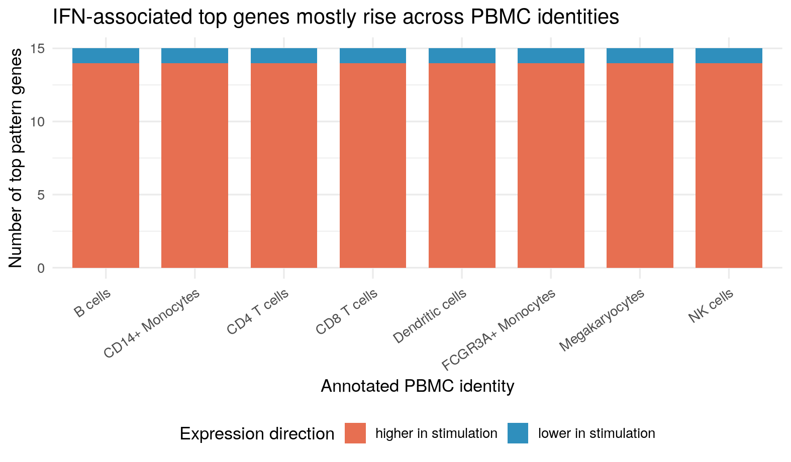
ifn_direction_by_celltype = (
direction_celltype.loc[direction_celltype["pattern"] == ifn_pattern_py]
.groupby(["cell_type", "direction"], observed=True)
.size()
.reset_index(name="n_genes")
)
direction_order = ["up_in_stim", "down_in_stim", "mixed_or_unclear"]
plot_table = (
ifn_direction_by_celltype.pivot_table(
index="cell_type",
columns="direction",
values="n_genes",
fill_value=0,
)
.reindex(columns=direction_order, fill_value=0)
)
colors = {
"up_in_stim": "#E76F51",
"down_in_stim": "#2F8FBD",
"mixed_or_unclear": "#9CA3AF",
}
ax = plot_table.plot(
kind="bar",
stacked=True,
color=[colors[col] for col in plot_table.columns],
figsize=(9.2, 6.2),
width=0.75,
)
ax.set_title("IFN-associated top genes mostly rise across PBMC identities")Text(0.5, 1.0, 'IFN-associated top genes mostly rise across PBMC identities')ax.set_xlabel("")Text(0.5, 0, '')ax.set_ylabel("Number of top pattern genes")Text(0, 0.5, 'Number of top pattern genes')ax.legend(
["higher in stimulation", "lower in stimulation", "mixed or unclear"],
loc="upper center",
bbox_to_anchor=(0.5, -0.28),
ncol=3,
frameon=False,
)<matplotlib.legend.Legend object at 0x7fffb31dcb20>plt.xticks(rotation=35, ha="right")(array([0, 1, 2, 3, 4, 5, 6, 7]), [Text(0, 0, 'B cells'), Text(1, 0, 'CD14+ Monocytes'), Text(2, 0, 'CD4 T cells'), Text(3, 0, 'CD8 T cells'), Text(4, 0, 'Dendritic cells'), Text(5, 0, 'FCGR3A+ Monocytes'), Text(6, 0, 'Megakaryocytes'), Text(7, 0, 'NK cells')])plt.subplots_adjust(bottom=0.30)
show_plot(ax.figure, "analysis_ifn_direction_by_celltype.png")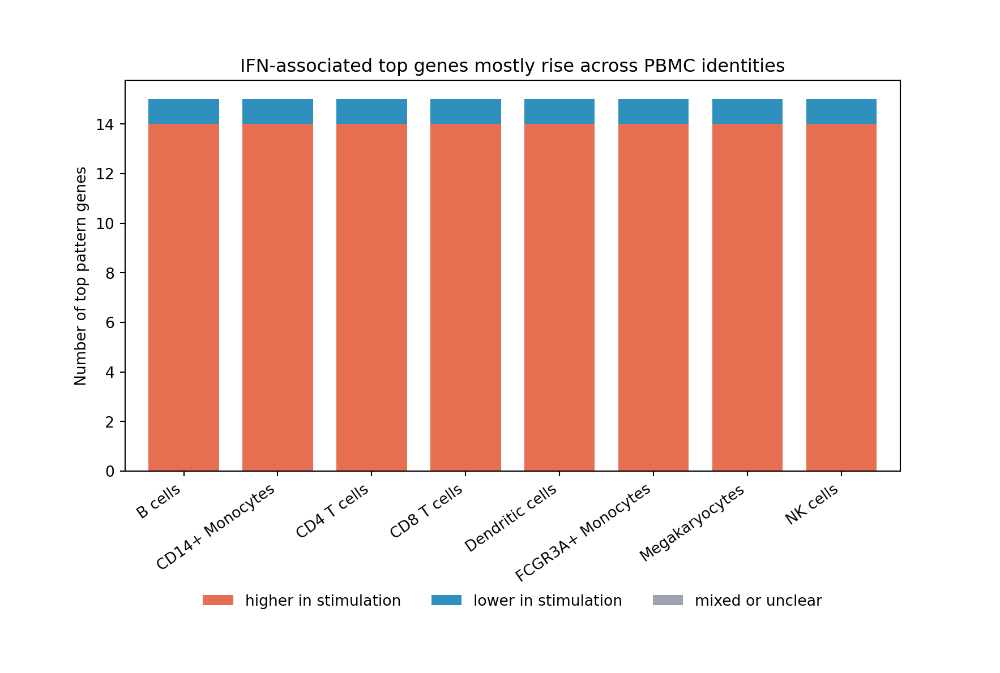
This cell-type-stratified view supports a broad IFN-beta response rather than a signal restricted to one annotated identity. It also leaves room for differences in response strength. Some PBMC identities show stronger activity or clearer direction than others, which is biologically plausible in a mixed immune-cell system.
Pull The Evidence Together
The four main research questions are now connected to specific evidence. The table below makes that map explicit before the final synthesis.
| Main research question | Evidence used in this section | Current answer |
|---|---|---|
| 1. What latent transcriptional programs are present? | R/Python pattern matching, candidate-program inventory, targeted gene-set checks, and identity-linked contrast. | The selected model contains a strong IFN-associated pattern plus additional immune-cell-linked structure, including antigen-presentation-linked biology. |
| 2. Can CoGAPS distinguish broad stimulation-associated activity from cell-type-linked immune programs? | Donor-paired IFN activity shift, donor-adjusted mixed-model check, canonical ISG-score agreement, IFN/antiviral enrichment, antigen-presentation enrichment, and identity-linked contrast. | Yes, the evidence supports a broad stimulation-associated signal while retaining non-IFN immune structure. |
| 3. Which genes define the strongest IFN-associated pattern, and what is their direction in stimulation? | IFN-associated gene weights paired with donor-aware pseudobulk directionality. | Top genes such as ISG15, IFI6, IFIT3, IFIT1, MX1, OAS1, and BST2 define the pattern and are mostly higher after IFN-beta stimulation. |
| 4. How does the IFN-associated pattern vary across annotated PBMC cell types? | Cell-type-stratified direction summaries for the IFN-associated pattern’s top genes. | The IFN-associated direction is broadly visible across annotated PBMC identities, with room for differences in response strength across cell types. |
Taken together, these checks support a coherent interpretation rather than a single-metric label. The full-run and sampling-only traces show changes at two different scales, while the snapshot plot shows high average top-gene overlap during sampling. The posterior summaries describe variability in cell activities and gene weights; they do not provide an overall accuracy score or certify convergence. The biological interpretation therefore rests on the combined gene, cell-type, and donor evidence, not on a claim that every pattern is equally stable or that K = 6 is universally best.
The first answer is that the model contains more than one kind of latent structure. The IFN-associated pattern is the clearest stimulation-linked signal: in the selected R run it is Pattern4, and in the Python saved output it is Pattern5. The number changes because CoGAPS pattern labels are run-specific, but the evidence points to the same biological signal: high activity after IFN-beta stimulation, high agreement with an interferon-stimulated gene score, and top genes such as ISG15, IFI6, IFIT3, IFIT1, MX1, OAS1, and BST2. The model also retains immune-cell-linked patterns, including monocyte-linked structure, a dendritic / antigen-presentation-linked pattern, and a T-cell / lymphocyte-linked baseline pattern. That matters because the analysis is not simply rediscovering “stimulated versus control”; it is separating stimulation-associated activity from other structure already present in the PBMC mixture.
The second answer is that the stimulation-associated signal is broad, but not identical in every cell type. The donor-paired analysis shows higher IFN-associated activity after stimulation in all eight matched donor pairs, and the mixed model reaches the same conclusion while accounting for donor baselines. The visualization section prepared the same idea visually: the UMAP activity maps showed that this pattern cuts across the cell-identity map rather than sitting in only one neighborhood. The cell-type-stratified summaries then showed that annotated PBMC identities can share the IFN-associated direction while still differing in response strength. This is the useful middle ground for a mixed immune-cell dataset: a shared perturbation response can be visible without erasing cell identity.
The third answer is that CoGAPS gene weights and expression direction have to be read together. The top genes for the IFN-associated pattern are strongly consistent with interferon biology, but the weights alone only say that those genes help define the pattern. The pseudobulk directionality summaries add the missing piece: among the top IFN-associated genes, most are higher after IFN-beta stimulation, while an exception such as FTH1 shows why direction cannot be assumed from the CoGAPS weight. The identity-linked contrast reinforces the same lesson. A dendritic / antigen-presentation-linked pattern can be defined by genes such as CD74 and HLA class II genes without behaving like the broad IFN-associated stimulation pattern.
The fourth answer is that the IFN-associated pattern varies across annotated PBMC identities in a biologically interpretable way. PBMCs contain T cells, B cells, NK cells, monocytes, dendritic cells, and smaller related populations. The SLE and interferon literature discussed in the context section makes this mixture important: type I interferon biology can connect multiple immune-cell populations through interferon-stimulated genes, antigen presentation, monocyte and dendritic-cell activity, and lymphocyte responses. In this dataset, the controlled IFN-beta stimulation lets you see one part of that biology under an experimental perturbation. The CoGAPS result is consistent with a shared interferon-response program layered on top of immune-cell identity.
The conclusion is therefore bounded but useful. For this public PBMC perturbation dataset from donors with SLE, the selected R K = 6 sparse CoGAPS model is suitable for interpreting the main case-study question. It recovers a broad IFN-beta-associated pattern, preserves additional immune-cell-linked structure, and links the IFN-associated pattern to both expected interferon-stimulated genes and upward expression direction after stimulation. The result should not be read as a clinical SLE mechanism, a treatment analysis, or proof that the same numbered pattern will appear in every run. It does show that latent-pattern analysis can help separate a shared interferon-response signal from cell identity in a mixed immune-cell system, which is the key analysis skill this case study is designed to teach.
Summary
Synopsis
In this case study, we used a processed PBMC single-cell RNA-seq dataset with control and IFN-beta stimulated cells to learn how a latent-variable method can reveal transcriptional programs that cut across cell-type labels.
We inspected the processed single-cell object, summarized condition and cell-type metadata, prepared a genes x cells CoGAPS input, and loaded selected R-primary CoGAPS artifacts. The rank K = 6 was selected before the main learner workflow using a limited model-selection sweep and follow-up pattern-structure comparison. Learners do not need to run that sweep to complete the case study.
The strongest stimulation-associated program in the selected R K6 model is the IFN-associated pattern, labeled Pattern4 in that run. It is anchored by canonical interferon-stimulated genes, including ISG15, ISG20, IFI6, IFIT3, IFIT1, MX1, IFIT2, IRF7, OAS1, PLSCR1, and BST2.
We also performed a targeted directionality check because CoGAPS pattern weights do not by themselves indicate whether genes are up or down in stimulation. In the selected R K6 analysis, 14 of the top 15 IFN-associated pattern genes were up in IFN-beta stimulation, while FTH1 was down.
The IFN-associated pattern activity appears broad across PBMC cell types, supporting an activity-like IFN-response interpretation. Other patterns have interpretable gene anchors, such as myeloid and antigen-presentation genes, but those secondary interpretations should remain more cautious.
Summary Plot

Main Questions Revisited
| Question | Current answer | Caveat |
|---|---|---|
| What latent transcriptional programs are present? | The selected K = 6 model contains six patterns, including a strong IFN-associated pattern and several compartment-linked candidates. |
Not every pattern has a settled biological label. |
| Can CoGAPS distinguish stimulation activity from cell-type-linked structure? | The IFN-associated pattern is consistent with a broad activity-like IFN program, while other patterns are more compartment-linked. | This is descriptive interpretation, not formal validation of all patterns. |
| Which genes define the strongest IFN-associated pattern? | The IFN-associated pattern is anchored by canonical interferon-stimulated genes. | Enrichment analysis would strengthen the final biological claim. |
| Are those genes up or down in stimulation? | Most top IFN-associated pattern genes are up in stimulation; FTH1 is down. |
This is targeted directionality, not genome-wide differential expression. |
| How does the IFN-associated pattern vary across cell types? | It is broad but non-uniform across PBMC cell types. | Cell-type differences are descriptive unless additional donor-aware inference is added. |
Continued Learning
The exercises below help you practice the interpretation habits used throughout this case study. They use the prepared PBMC data, saved model-selection summaries, and selected-model CoGAPS outputs that you have already imported. You do not need to refit CoGAPS or rerun the full model sweep to complete them.
Common Next Steps
After completing the main analysis, useful next steps are to:
- recheck the selected model using the diagnostic summaries;
- practice annotating a non-IFN pattern using activity, top genes, and directionality;
- redraw one visualization so you can explain what the plot is showing;
- compare the IFN-associated pattern with a cell-type-linked pattern;
- write a cautious biological interpretation that separates what the data support from what would require more evidence.
These are short practice tasks. They are designed to strengthen your CoGAPS interpretation skills without requiring long model runs.
Core Homework
These exercises revisit the central moves of the case study. Each one can be completed from either the selected R outputs or the selected Python outputs unless the prompt asks you to compare both.
Recreate the K-selection argument. Return to the model-resolution evidence from the Data Import section. In a short paragraph, explain why
K = 6was selected over a more compressed lower-rank model and over the high-K extension. Your answer should mention stability, IFN-associated signal recovery, non-IFN structure, and runtime.Annotate one non-IFN pattern. Choose one pattern that is not the . Use its dominant cell type, stimulation correlation, top genes, and directionality summary to write a working interpretation. For example, ask whether the pattern looks more like a , a stimulation-linked pattern, or a mixture of both.
Redraw one pattern-activity figure. Choose one of the plots that summarizes by condition, donor, or PBMC identity. Recreate it with a different plot type, such as a dot plot, paired-line plot, heatmap, or faceted box plot. Write two sentences explaining what your redesign makes easier or harder to see.
Check directionality for a short gene list. Select 5 to 8 high-weight genes from the IFN-associated pattern. Make a compact table or bar plot showing each gene’s and after IFN-beta stimulation. Explain why gene weight and expression direction answer different questions.
Compare the R and Python pattern labels. In the selected R run, the IFN-associated pattern is
Pattern4. In the selected Python output, the corresponding signal isPattern5. Use top genes, activity correlation, or condition-associated activity to explain why the biological interpretation can match even when the pattern numbers differ.
Side Quests
These optional exercises give you more practice with the same evidence types from a new angle.
Recolor the UMAP by another pattern. Use the same coordinates, but recolor the cells by a non-IFN pattern. Compare that activity map with the cell-identity reference map. Does the pattern appear concentrated in one neighborhood or spread across several PBMC identities?
Redraw the condition-shift heatmap. Recreate the pattern-by-cell-type heatmap with a different color scale or ordering of PBMC identities. Explain whether the plot still separates broad stimulation-associated activity from cell-type-linked activity.
Contrast IFN-associated and antigen-presentation-linked evidence. Compare the IFN-associated pattern with the antigen-presentation-linked pattern. Use one figure or table to show how their top genes, dominant cell neighborhoods, and stimulation shifts differ.
Build a mini gene-set check. Choose a short literature-guided gene set with 5 to 10 genes, such as a small interferon-stimulated gene list or an antigen-presentation list. Score the genes or summarize their weights in the selected model, then explain whether the result supports one pattern interpretation.
Write a limitations audit. Write a short note that names three limits of the case-study analysis. At least one limitation should concern the dataset, one should concern model interpretation, and one should concern what cannot be inferred from an IFN-beta stimulation experiment alone.
Optional Challenge
Design a follow-up sweep without running it. Choose a small set of K values, seeds, and iteration counts that would test one unresolved question from the case study. For each setting, list the metrics you would inspect and the result that would change your mind about the selected model. This challenge is about experimental design and reproducibility planning, not about launching new jobs.
Full Reproduction Guide
The main analysis uses included data and saved CoGAPS results so that you can concentrate on interpretation. This guide follows the same analysis in the other direction: it starts with the source data, rebuilds the prepared PBMC dataset, fits the selected R model, and recreates the smaller tables and figures used earlier.
You do not need to complete every step. Choose the goal that matches what you want to check, and stop when you have produced the files you need.
How to use this guide
- Understand where the included results came from: read the roadmap and the explanations in each stage. You do not need the large files or a model rerun.
- Rebuild tables or figures: begin with the included selected-model outputs, then run the export, directionality, or figure-building stage you want to check.
- Complete the full local R reproduction: obtain the larger source files, rebuild preprocessing, fit the selected
K = 6R model, and recreate its diagnostics and interpretation files.
The high-performance-computing rank sweep is an optional extension. It is explained near the end so that you can study its design without making cluster work part of the local reproduction route.
Choose What You Want To Rebuild
The three routes share the same scripts and output folders, but they begin at different points.
| Your goal | Begin with | Stop when |
|---|---|---|
| Understand the evidence chain | The Reproduction Roadmap | You can explain how source data become the tables and figures used in the analysis. |
| Rebuild selected outputs | The full selected R model or the included compact tables | The diagnostic tables, directionality summaries, or figures you need have been recreated. |
| Complete the full local R reproduction | The larger PBMC source file and the validated Docker image | The prepared dataset, selected R model, diagnostics, compact analysis tables, directionality summaries, and figures have all been checked. |
The selected local model uses K = 6, seed = 2, 2,000 iterations per phase, and sparse optimization. R/Bioconductor CoGAPS is the primary implementation. A separate optional section shows how the Python-compatible output was produced, but it is not a required second route through the guide.
Before You Begin
Full reproduction uses the validated Docker image introduced in Packages and Setup. The image provides R, Python, CoGAPS, PyCoGAPS, Quarto, and the packages used by the scripts. It does not contain the project data.
Additional source and saved-model files are available from Zenodo record 21208760, DOI 10.5281/zenodo.21208760. Use this fixed release so that the downloaded files match the identities recorded for this case study. Complete downloads without a login were verified against their recorded sizes and checksums on October 5, 2026.
The main learner path uses the included files and does not require these downloads. For reproduction, download only the inputs for your chosen route below. Creating an archive folder does not download anything. The archive makes the supplied files available; it does not resolve the upstream annotation and preparation questions.
Download The Files For Your Route
Open the record’s Files list and use Download beside each file you need. Save the individual files together in a separate reference folder, keeping their downloaded names. The table below identifies additional inputs; prepared data and compact summaries are already included in the project.
| Your goal | Additional files to download |
|---|---|
| Follow the main learner path or redraw figures from included tables | None |
| Rebuild preprocessing from the supplied source (Stage 2) | kang_counts_25k.h5ad |
| Fit a new R model from included prepared data (Stage 3) | None; the full R result is an output, not an input |
| Inspect the saved R model or regenerate its exports (Stage 4) | cogaps_K6_seed2_iter2000.rds |
| Fit a new Python model (optional extension) | cogaps_input_genesxcells_hvg3000_float64.h5ad, unless you generated it in Stage 2 |
| Inspect the saved Python model (optional extension) | cogaps_K6_seed2_iter2000_python.h5ad |
For the full R route starting at Stage 2, download the source file; the later stages generate the prepared data and full R model. If you instead want to use the saved model, begin with the R inspection/export route. Do not download a full model as a prerequisite for fitting a new one, and do not download the Python model for an R-only route.
The record also preserves copies of the included prepared data and preprocessing record, an R checkpoint, and release documentation. You do not need to download all of these files for every route. Keep the release documentation separate from the working project’s README.md and manifests; do not replace those project files with archive copies. The checkpoint is optional run provenance; resuming from it is not a validated route in this guide.
Open the file-placement table
Keep each downloaded reference file under its original name. After the Stage 1 check verifies an archive copy, copy it to the destination below in your separate working project. Destinations are relative to the project root containing index.qmd, scripts/, and data/. Copy only files required for your next stage, not outputs that stage will generate.
| Downloaded filename | Working-project destination |
|---|---|
kang_counts_25k.h5ad
|
data/source/kang_counts_25k.h5ad
|
preprocessed_cells_hvg3000.h5ad
|
data/processed/input/preprocessed_cells_hvg3000.h5ad
|
preprocess_config_hvg3000.json
|
data/processed/input/preprocess_config_hvg3000.json
|
cogaps_input_genesxcells_hvg3000_float64.h5ad
|
data/processed/input/cogaps_input_genesxcells_hvg3000_float64.h5ad
|
cogaps_K6_seed2_iter2000.rds
|
data/processed/selected_model_k6/r/cogaps_K6_seed2_iter2000.rds
|
cogaps_K6_seed2_iter2000.checkpoint.out
|
data/processed/selected_model_k6/r/cogaps_K6_seed2_iter2000.checkpoint.out
|
cogaps_K6_seed2_iter2000_python.h5ad
|
data/processed/selected_model_k6/python/cogaps_K6_seed2_iter2000.h5ad
|
Only the Python model needs a filename change: remove _python from the working copy’s filename. Keep the downloaded reference copy unchanged. Do not overwrite an existing working file; if it fails verification, investigate it or use a clean working project before proceeding. Stage 1 shows a non-overwriting copy example and how to check again after placement.
Keep Reference Files Separate From Your Work
Keep these three local folders distinct:
- Main learner project: your original GitHub clone or extracted ZIP containing the pages, scripts, included data, and saved results.
- Reproduction archive: a separate folder containing the obtained source and saved-model files. Keep this reference copy unchanged and mount it read-only.
- Reproduction working project: a separate clone or ZIP extraction in which scripts can write regenerated files to their usual project-relative locations. Creating an unused
reproduction_work/subfolder does not redirect those scripts.
Before starting a long run, confirm that you have enough local storage for the downloaded archive and regenerated model files. Runtime depends on the computer, Docker architecture, diagnostic settings, and thread support. The selected-model section therefore shows what progress should look like instead of promising one universal runtime.
Obtain a separate working project using either download route in Main learner setup. In the Host Terminal, change to that working project’s root and confirm it contains index.qmd, scripts/, and data/. Use image 0.3.1 and the updated preparation script described in Stage 2; the image alone does not update scripts in a mounted project.
For a route requiring archive files, use the reference folder populated by the downloads above. This release provides individual files, not a ZIP preserving project folders; there is no archive to extract. Replace the example archive path below with that real, populated folder. Do not point Docker to an empty directory or to your browser’s general Downloads folder containing unrelated files.
Host Terminal
# Check that you are in the separate reproduction working project.
pwd
ls -d index.qmd scripts data
# Point to files you have already obtained, not a folder to be created.
export CS4_REPRODUCTION_ARCHIVE="/full/path/to/your/reproduction_archive"
# Launch the validated case-study image.
docker run --platform linux/amd64 --rm -it \
-p 8787:8787 \
-e PASSWORD="Password12" \
-v "$PWD":/home/rstudio/project:rw \
--mount "type=bind,source=$CS4_REPRODUCTION_ARCHIVE,target=/home/rstudio/project/data/external/reproduction_archive,readonly" \
othomas2/pycogaps-runtime-guide:0.3.1Inside Docker, the working project appears at /home/rstudio/project, and the reference archive appears at /home/rstudio/project/data/external/reproduction_archive. The archive mount is read-only; the working project’s output folders are writable. A missing archive directory causes this bind mount to fail instead of silently creating one. An existing but empty directory still needs the Stage 1 check.
If you are fitting R from the included prepared data without downloading an archive, use the main setup launch command with your separate working project. No archive mount or pre-existing full R result is required for that route.
Run the Stage 1 check before copying files or starting a long computation. It verifies readable, nonempty inputs and compares original archive inputs with the recorded byte sizes and SHA-256 checksums. If a needed input is absent from the working project but a verified archive copy exists, the check reports its source and destination; it does not copy or alter anything. Exact filename mappings are in data/external/README.md, including the Python model’s required rename.
Keep model fitting visible in the Host Terminal. The progress messages show whether CoGAPS has loaded the data, entered equilibration, moved into sampling, and completed the requested iterations. They also report atom counts, chi-square values, and elapsed time that can help diagnose a stalled or unexpectedly slow run.
Complete File Inventory
You only need files associated with the stage you intend to run. Open the inventory below when you need to locate a particular input or understand where an output belongs.
Open the complete file inventory
| File layer | File or file family | What it provides | When you need it |
|---|---|---|---|
| Main analysis |
data/processed/input/preprocessed_cells_hvg3000.h5ad
|
Prepared PBMC cells-by-genes data with metadata, UMAP coordinates, normalized/log-transformed expression, and 3,000 highly variable genes. | Needed to render the page and run the analysis chunks. |
| Main analysis |
data/processed/input/preprocess_config_hvg3000.json
|
Compact record of filtering, normalization, transformation, and highly variable gene choices. | Needed to check what expression matrix CoGAPS received. |
| Main analysis |
data/processed/k_selection/*.csv
|
Precomputed sweep summaries used to inspect model-resolution evidence and support the selected K = 6 model.
|
Needed for the Data Import model-choice checkpoint. |
| Main analysis |
data/processed/selected_model_k6/r/.csv, .tsv.gz, *.json
|
Lightweight selected-model evidence from the primary R/Bioconductor CoGAPS run. | Needed for R tabs, diagnostics, visualization, and analysis. |
| Main analysis |
data/processed/selected_model_k6/python/.csv, .tsv.gz, *.json
|
Lightweight Python-compatible selected-model evidence. | Needed for Python tabs. |
| Main analysis |
data/processed/figures/.png and img/.png
|
Render-ready figures used in the displayed case study. | Needed for the published HTML page. |
| Full local reproduction |
data/source/kang_counts_25k.h5ad
|
Larger source PBMC IFN-beta single-cell count file used to rebuild preprocessing from source counts. | Needed only if you rebuild the prepared PBMC dataset. |
| Full local reproduction |
data/processed/input/cogaps_input_genesxcells_hvg3000_float64.h5ad
|
Dense genes-by-cells matrix used by the Python/PyCoGAPS selected-model launcher. | Needed only for a full Python-compatible rerun. |
| Full local reproduction |
data/processed/selected_model_k6/r/cogaps_K6_seed2_iter2000.rds
|
Full selected R CoGAPS object used to regenerate diagnostics and compact R analysis tables. | Needed for full R object inspection or table regeneration. |
| Full local reproduction |
data/processed/selected_model_k6/r/cogaps_K6_seed2_iter2000.checkpoint.out
|
Checkpoint from the selected heavy diagnostic R run. | Useful for debugging or resuming a run. |
| Full local reproduction |
data/processed/selected_model_k6/python/cogaps_K6_seed2_iter2000.h5ad
|
Full selected Python/PyCoGAPS-compatible result. | Needed for full Python-compatible object inspection. |
The included files are enough to read the case study, rerun its summaries, and inspect the selected model evidence. The larger files are only needed to rebuild preprocessing, refit a model, or inspect a full saved model object.
Stage 1: Confirm The Environment And Files
Choose the stage you intend to run. Use the same file-check command whether you plan to work in R or Python; it runs in the RStudio Terminal inside the container and does not require writing Python code. It reads files only: it does not download, copy, install, or fit anything.
Value for --route |
Required inputs | Outputs, not downloads |
|---|---|---|
learner-r or learner-python |
Included prepared data, preprocessing record, and the chosen language’s pattern summary | None in this check; this is a starting-file check, not an audit of every lesson file |
preprocess |
Larger source count file | Prepared data, preprocessing record, and dense Python input |
fit-r |
Prepared data | Full R model and checkpoint |
export-r |
Prepared data and a full R model | Compact R exports, including the pattern summary |
fit-python |
Prepared data and dense Python input | Full Python model |
inspect-python |
Prepared data and a full Python model | None |
For example, before Stage 2, run:
RStudio Terminal inside the container
cd /home/rstudio/project
/opt/cogaps-venv/bin/python scripts/reproduction/check_reproduction_inputs.py \
--route preprocessReplace preprocess with the route you need. To fit R from the included prepared data, use --route fit-r: a full Python model and a pre-existing R model are not prerequisites.
| Reported status | What to do |
|---|---|
ready |
The required file is readable and nonempty. Original archive inputs also match their recorded byte size and SHA-256 digest. |
missing required input |
Obtain and place this input before continuing. A verified archive copy, when available, is reported with its destination. |
invalid required input |
Stop and investigate an empty, unreadable, wrong-sized, or checksum-mismatched file. Do not treat it as an original archive input. |
not needed for this route |
No download is required for this stage. |
output to be generated |
This stage produces the file. Do not download it as a prerequisite. Existing full-model outputs stop fitting checks because the launchers refuse to overwrite them. |
archive directory empty |
No files were found in the mounted archive folder. Creating or mounting the folder did not download anything. This prevents a route only when its required inputs are unavailable. |
When the check identifies a verified archive copy of the source, copy it into the separate working project, then run the same check again:
RStudio Terminal inside the container
cd /home/rstudio/project
mkdir -p data/source
cp -n data/external/reproduction_archive/kang_counts_25k.h5ad \
data/source/kang_counts_25k.h5adHere -n prevents overwriting an existing file. If the destination already exists but fails verification, investigate it or use a clean working copy; the command above will not repair it. For other files, use the placement table in data/external/README.md. In particular, the downloaded cogaps_K6_seed2_iter2000_python.h5ad belongs at data/processed/selected_model_k6/python/cogaps_K6_seed2_iter2000.h5ad.
Checking an input you regenerated in an earlier stage
Newly generated data and models need not have the original archive’s checksum. After completing and checking the preceding stage, declare each regenerated input explicitly. For example, after rebuilding the prepared data in Stage 2:
RStudio Terminal inside the container
cd /home/rstudio/project
/opt/cogaps-venv/bin/python scripts/reproduction/check_reproduction_inputs.py \
--route fit-r --generated-input preparedAfter both preprocessing and fitting a new R model, check Stage 4 with --route export-r --generated-input prepared --generated-input r_model. The command still requires readable, nonempty files, but labels them as regenerated instead of claiming they match the original archive. This flag is not a workaround for a corrupted download, cannot exempt the source count file, and does not replace the dimension, metadata, and model checks later in the guide.
Stage 1 checkpoint: Continue only when the check reports File prerequisites ready for your chosen route. It exits with a nonzero status when a required input is missing or invalid, or fitting would collide with an existing full model. This confirms file prerequisites, not software availability, scientific correctness, or successful completion of later stages.
Reproduction Roadmap
The local reproduction route has six stages. Each stage answers one practical question and produces files that can be checked before you continue.
| Stage | Question | Main result | A reasonable stopping point |
|---|---|---|---|
| 1. Confirm the setup | Can the container see the repository and the files needed for your chosen goal? | Verified file prerequisites for the chosen route. | Stop here if you only wanted to check input availability; this does not verify the later computations. |
| 2. Prepare the PBMC data | Can the source counts be transformed into the same cells-by-genes dataset used in the analysis? | Prepared PBMC data, an optional genes-by-cells input, and a preprocessing record. | Stop here if you are checking preprocessing only. |
| 3. Fit the selected R model | Can the selected CoGAPS settings be rerun to completion? | Full R CoGAPS object, run metrics, checkpoint, and visible progress log. | Stop here if you only need the full fitted model. |
| 4. Create diagnostic and analysis tables | Can the full model be converted into the compact evidence inspected earlier? | Trace, uncertainty, gene-weight, cell-activity, top-gene, and activity-summary files. | Stop here if you need refreshed model evidence but not new figures. |
| 5. Rebuild directionality and figures | Do the high-weight genes move up or down after stimulation, and can the displayed figures be recreated? | Directionality tables, supporting pseudobulk summaries, and refreshed figures. | Stop here when all interpretation outputs are current. |
| 6. Compare the regenerated files with the expected result | Did every stage produce the expected dimensions, settings, and file families? | A completed reproduction check. | This is the end of the primary local route. |
The route is cumulative only when you begin from the source data. If you already have the full selected R model, you can begin at Stage 4. If you only changed an interpretation table, you may be able to begin at Stage 5.
Stage 2: Rebuild The Prepared PBMC Dataset
Use this stage when you want to reconstruct the expression dataset that CoGAPS received. The source file contains the larger single-cell count dataset; the prepared file keeps the cells, metadata, normalized expression values, and 3,000 highly variable genes used in the analysis.
This stage writes the prepared dataset to data/processed/input/preprocessed_cells_hvg3000.h5ad. Skip preprocessing if you want to inspect the included dataset without replacing it: go directly to Check The Prepared Dataset below. Reading the explanation is still useful because filtering, normalization, transformation, and gene selection determine the exact matrix available to the model.
The preprocessing script is:
scripts/reproduction/prepare_preprocessed_hvg3000.pyIt performs six main jobs:
- reads the larger source
.h5adfile; - keeps a raw count layer for steps that need count-scale values;
- removes genes detected in too few cells;
- normalizes and log-transforms expression values;
- selects 3,000 highly variable genes; and
- writes both the prepared case-study data file and the optional dense PyCoGAPS input.
The recorded preprocessing workflow is implemented in Python, but you launch the complete script from the RStudio Terminal inside the container, not the RStudio Console or a Python session. R users run the same command; you do not need to translate the preprocessing into R. First complete the Stage 1 preprocess file check so that the larger source is available at the expected path.
Before you run this command: it replaces the prepared H5AD, dense Python input, and preprocessing JSON at the three output paths below if they already exist, without an overwrite prompt. Run it only in the separate reproduction working project described in Before You Begin. Keep your original learner project and read-only archive unchanged. This command prepares data; it does not fit CoGAPS.
RStudio Terminal inside the container
cd /home/rstudio/project
/opt/cogaps-venv/bin/python scripts/reproduction/prepare_preprocessed_hvg3000.py \
--source-h5ad data/source/kang_counts_25k.h5ad \
--out-h5ad data/processed/input/preprocessed_cells_hvg3000.h5ad \
--cogaps-input-h5ad data/processed/input/cogaps_input_genesxcells_hvg3000_float64.h5ad \
--config-json data/processed/input/preprocess_config_hvg3000.jsonAfter it finishes, expect three Wrote ... messages naming those output files. If it stops with an error, do not assume that all three files were completed; resolve the error before proceeding. The following sections explain the script. Their Python blocks are excerpts, not separate commands: run the complete command above, not the fragments individually. To inspect the saved file now, continue to Check The Prepared Dataset.
The Script Starts By Making The Choices Visible
The first important design choice is that preprocessing settings are command-line arguments, not hidden constants. The script has defaults, but the command above could override them if you wanted to test another preprocessing recipe.
Script excerpt (not a separate command)
parser.add_argument("--min-cells", type=int, default=3)
parser.add_argument("--target-sum", type=float, default=10000.0)
parser.add_argument("--n-top-genes", type=int, default=3000)
parser.add_argument("--hvg-flavor", default="seurat_v3")These four arguments describe the main preprocessing decisions:
min_cells = 3means a gene must be detected in at least three cells to remain in the dataset.target_sum = 10000means each cell is rescaled to the same total expression depth before log transformation.n_top_genes = 3000means the prepared CoGAPS input uses 3,000 highly variable genes.hvg_flavor = "seurat_v3"names the highly variable gene-selection method.
This is a useful reproducibility habit. If a later model result changes, you can check whether the model changed or whether the expression matrix was rebuilt with different preprocessing settings.
The Script Reads The Source AnnData File And Preserves Counts
The source file is an AnnData .h5ad object. In single-cell analysis, an AnnData object usually stores cells as rows and genes as columns. The main expression matrix is adata.X, and additional versions of the matrix can be stored in adata.layers.
The script reads the source file, checks the treatment labels, and makes sure there is a counts layer:
Script excerpt (not a separate command)
adata = ad.read_h5ad(args.source_h5ad)
condition_source = ensure_condition_column(adata)
if "counts" not in adata.layers:
adata.layers["counts"] = adata.X.copy()The script’s ensure_condition_column() helper keeps an existing condition column or copies the source’s label column into condition when it is absent. It requires both ctrl and stim labels and stops if labels are missing or unexpected. The source file itself is not changed. This gives the R and Python workflows the treatment field they need for later comparisons.
This matters because the workflow uses expression values in more than one way. The normalized, log-transformed matrix is easier to compare across cells and is the matrix used for the prepared case-study file. The count-scale layer is kept so highly variable gene selection can use count-like values, and so later full-reproduction steps have a clear record of where count-scale information came from.
Filtering Removes Genes With Too Little Information
The first filtering step removes genes detected in too few cells:
Script excerpt (not a separate command)
sc.pp.filter_genes(adata, min_cells=args.min_cells)This step does not decide which immune cells are important. It only removes genes that are so rarely detected that they are unlikely to help the factorization. In this workflow, a gene must be detected in at least three cells. That low threshold is intentionally permissive: it removes nearly absent genes while retaining a broad expression space for the highly variable gene step.
Normalization And Log Transformation Put Cells On A Comparable Scale
Single cells can differ in total captured RNA or sequencing depth. Before comparing expression values across cells, the script rescales each cell and then log-transforms the normalized values:
Script excerpt (not a separate command)
sc.pp.normalize_total(adata, target_sum=args.target_sum)
sc.pp.log1p(adata)normalize_total() rescales each cell so that its total expression is comparable to the same target value. Here, that target is 10,000. log1p() then applies a log transform using log(1 + expression), which reduces the dominance of very large expression values while keeping zeros defined.
For this case study, the important point is not the specific number 10,000 by itself. The important point is that CoGAPS receives an expression matrix where cells have already been put on a more comparable scale.
Highly Variable Genes Define The Modeling Space
The source study measured many genes, but the selected model uses 3,000 highly variable genes. Highly variable genes are genes whose expression varies enough across cells to help distinguish cell states, cell identities, stimulation responses, or other structure.
The script marks highly variable genes, then creates a reduced AnnData object:
Script excerpt (not a separate command)
sc.pp.highly_variable_genes(
adata,
n_top_genes=args.n_top_genes,
flavor=args.hvg_flavor,
layer="counts",
subset=False,
)
adata_hvg = adata[:, adata.var["highly_variable"].to_numpy()].copy()There are two small programming details worth noticing here. First, subset=False means the function adds a highly_variable column to adata.var rather than immediately dropping genes. Second, the next line uses that Boolean column as a mask to keep only the selected genes. A Boolean mask is a true/false vector: genes marked TRUE stay in adata_hvg, and genes marked FALSE are left behind.
The result is the prepared matrix used by the case study:
24,673 cells x 3,000 highly variable genesThe Script Writes Two Orientations Of The Same Prepared Data
The main prepared file is written as cells by genes, which is the usual AnnData orientation:
Script excerpt (not a separate command)
adata_hvg.write_h5ad(args.out_h5ad)The script also creates an optional dense genes-by-cells file for the Python/PyCoGAPS full rerun:
Script excerpt (not a separate command)
def build_cogaps_input(preprocessed_cells: ad.AnnData) -> ad.AnnData:
cogaps_input = preprocessed_cells.T.copy()
X = cogaps_input.X.toarray() if sparse.issparse(cogaps_input.X) else cogaps_input.X
cogaps_input.X = np.asarray(X, dtype=np.float64)
cogaps_input.var = preprocessed_cells.obs.copy()
cogaps_input.var_names = preprocessed_cells.obs_names.astype(str).copy()
cogaps_input.obs = preprocessed_cells.var.copy()
cogaps_input.obs_names = preprocessed_cells.var_names.astype(str).copy()
return cogaps_inputThis function transposes the matrix so genes become rows and cells become columns. It also densifies the matrix and stores it as float64. That dense genes-by-cells file is not needed for the main analysis, but it is needed if you want to rerun the Python-compatible CoGAPS workflow with the supplied launcher.
The two outputs are therefore different views of the same prepared expression space:
preprocessed_cells_hvg3000.h5ad: cells by genes, used for the main analysis and most summaries.cogaps_input_genesxcells_hvg3000_float64.h5ad: genes by cells, used for the optional full Python-compatible rerun.
Record The Preprocessing Choices
At the end, the script writes a compact JSON record:
Script excerpt (not a separate command)
config = {
"raw_h5ad": args.source_h5ad.name,
"min_cells": args.min_cells,
"target_sum": args.target_sum,
"hvg_flavor": args.hvg_flavor,
"n_top_genes": args.n_top_genes,
"condition_source_column": condition_source,
"prepared_h5ad": str(args.out_h5ad),
"cogaps_input_h5ad": str(args.cogaps_input_h5ad),
}
args.config_json.write_text(json.dumps(config, indent=2) + "\n", encoding="utf-8")After the script finishes, inspect data/processed/input/preprocess_config_hvg3000.json. That record should name the source file, minimum cell threshold, library-size target, highly variable gene method, number of selected genes, treatment-label source column, and output paths.
This file records the expression space given to CoGAPS before model interpretation begins. It answers questions such as why the selected model has 3,000 genes and whether the expression matrix was normalized before model fitting.
Check The Prepared Dataset
Choose one language to inspect either the included prepared file or the file you just regenerated with the documented settings. These checks only read the file; they do not preprocess data or fit a model. They check dimensions, assays, identifiers, treatment/donor/cell-type metadata, and the saved UMAP coordinates. UMAP coordinates are stored separately from the cell-metadata columns.
The checks below expect the case study’s 3,000 genes and 24,673 cells. If you deliberately changed preprocessing settings, investigate the expected differences rather than removing failed checks just to continue.
Use the RStudio Console, or save this code in an R script and run it from that Console. setwd() sets the R session’s directory; changing the Terminal directory does not do this for R. The native reader, reader = "R", reads the H5AD without creating a Python environment. Its documentation notes that conversion can differ from the Python reader, so check the contents as well as the dimensions.
RStudio Console
setwd("/home/rstudio/project")
prepared_r <- zellkonverter::readH5AD(
"data/processed/input/preprocessed_cells_hvg3000.h5ad",
reader = "R"
)
required_metadata <- c("condition", "replicate", "cell_type")
stopifnot(nrow(prepared_r) == 3000L, ncol(prepared_r) == 24673L)
stopifnot(all(c("X", "counts") %in% SummarizedExperiment::assayNames(prepared_r)))
metadata_r <- as.data.frame(SummarizedExperiment::colData(prepared_r))
stopifnot(all(required_metadata %in% names(metadata_r)))
stopifnot(!anyNA(metadata_r[required_metadata]))
stopifnot(setequal(as.character(metadata_r$condition), c("ctrl", "stim")))
barcodes_r <- colnames(prepared_r)
genes_r <- rownames(prepared_r)
stopifnot(
length(barcodes_r) == ncol(prepared_r), length(genes_r) == nrow(prepared_r),
!anyNA(barcodes_r), !anyNA(genes_r),
all(nzchar(barcodes_r)), all(nzchar(genes_r)),
!anyDuplicated(barcodes_r), !anyDuplicated(genes_r)
)
stopifnot("X_umap" %in% SingleCellExperiment::reducedDimNames(prepared_r))
umap_r <- SingleCellExperiment::reducedDim(prepared_r, "X_umap")
stopifnot(
nrow(umap_r) == ncol(prepared_r), ncol(umap_r) == 2L,
all(is.finite(umap_r))
)
data.frame(
cells = ncol(prepared_r),
genes = nrow(prepared_r),
count_layer_present = "counts" %in% SummarizedExperiment::assayNames(prepared_r),
metadata_complete = !anyNA(metadata_r[required_metadata]),
umap_columns = ncol(umap_r)
)Start the Python session described in setup using the container’s /opt/cogaps-venv/bin/python. Run the following at its >>> prompt, not at the Terminal’s shell prompt. os.chdir() sets that Python session’s working directory.
Python session
import os
import anndata as ad
import numpy as np
os.chdir("/home/rstudio/project")
prepared_py = ad.read_h5ad(
"data/processed/input/preprocessed_cells_hvg3000.h5ad"
)
required_metadata = ["condition", "replicate", "cell_type"]
assert prepared_py.shape == (24673, 3000)
assert prepared_py.X is not None and prepared_py.X.shape == prepared_py.shape
assert "counts" in prepared_py.layers
assert prepared_py.layers["counts"].shape == prepared_py.shape
assert all(field in prepared_py.obs.columns for field in required_metadata)
assert not prepared_py.obs[required_metadata].isna().any().any()
assert set(prepared_py.obs["condition"]) == {"ctrl", "stim"}
for identifiers in (prepared_py.obs_names, prepared_py.var_names):
assert identifiers.is_unique and not identifiers.hasnans
assert all(len(identifier) > 0 for identifier in identifiers)
assert "X_umap" in prepared_py.obsm
umap_py = prepared_py.obsm["X_umap"]
assert umap_py.shape == (prepared_py.n_obs, 2)
assert np.isfinite(umap_py).all()
print({
"cells": prepared_py.n_obs,
"genes": prepared_py.n_vars,
"count_layer_present": "counts" in prepared_py.layers,
"metadata_complete": not prepared_py.obs[required_metadata].isna().any().any(),
"umap_columns": umap_py.shape[1],
})Expect 24,673 cells, 3,000 genes, TRUE/True for the count-layer and metadata checks, and two UMAP columns. Reaching this summary without an error also confirms that the identifiers are present and unique, both treatment labels are present, and the saved UMAP coordinates are finite. These are structural checks, not proof that the source annotations or embedding are biologically correct.
If the R check starts a conda environment solve, stop that check and confirm that you are using the code above with reader = "R" in the case-study container. Repeatedly reinstalling packages is not the first remedy. If a process is killed with exit code 137, retain its error output and inspect the Docker/system logs and resource settings: insufficient memory is one possible cause, but that code alone does not establish the cause. Resolve the failure before continuing.
Why this step is separate
Preprocessing changes the matrix that CoGAPS sees. Keeping it in a separate script makes the sequence visible: first rebuild the prepared PBMC dataset, then fit CoGAPS, then summarize the selected model. This separation also makes it easier to check a preprocessing decision without accidentally rerunning a long model.
For a full check, compare three files together:
- the source file,
data/source/kang_counts_25k.h5ad; - the prepared file,
data/processed/input/preprocessed_cells_hvg3000.h5ad; and - the preprocessing record,
data/processed/input/preprocess_config_hvg3000.json.
Together, they tell you where the data started, what matrix the case study uses, and which preprocessing choices connect the two.
Stage 2 checkpoint: The read-only check passes for dimensions, assays, identifiers, required metadata, and UMAP structure. If you regenerated the data, also inspect the new preprocessing JSON and confirm that all three output files were written. This completes the prepared-data check; it does not start or validate a CoGAPS fit. Continue to Stage 3 only if you intend to fit a model, or to Stage 4 if you are using the corresponding saved R model and prepared data.
Stage 3: Fit The Selected R CoGAPS Model
The selected R model is the primary fitted model used in the analysis. This stage runs CoGAPS and saves the complete model object. Later stages read that object to create diagnostics, compact tables, directionality summaries, and figures. Keeping model fitting separate from those later exports means you do not need to refit CoGAPS whenever you want to redraw a figure or change a summary table.
The selected R model uses:
K = 6, the selected number of CoGAPS patterns;seed = 2, the run seed used for the selected model;n_iter = 2000, the number of iterations per CoGAPS phase;sparseOptimization = TRUE, the sparse-optimized model path; and- diagnostic collection, including trace output, checkpoints, snapshots, and pump samples.
The complete R output map is available below for reference. You do not need to memorize it before running the model.
Open the selected R model output map
| R reproduction step | Reads | Writes | Why the output matters |
|---|---|---|---|
Fit selected R modelrun_selected_model_r.shcogaps_run_one_singleprocess_r.R
|
preprocessed_cells_hvg3000.h5ad and selected model settings.
|
cogaps_K6_seed2_iter2000.rds, cogaps_K6_seed2_iter2000.metrics.json, checkpoint output, and runtime log messages.
|
Creates the full primary R CoGAPS result and records the model settings, runtime, mean chi-square, run-specific IFN-associated pattern label, and top genes. |
Export R diagnosticsexport_cogaps_diagnostics_r.R
|
Prepared PBMC file plus the full selected R .rds object.
|
Trace CSV, snapshot summary, uncertainty summary, pump outputs, mean pattern assignment table, and diagnostics JSON. | Makes convergence, stability, posterior uncertainty, and diagnostic evidence inspectable without manually opening the full model object. |
Export compact R analysis tablesexport_lightweight_cogaps_derivatives_r.R
|
Prepared PBMC file plus the full selected R .rds object.
|
Gene-weight matrix, cell-activity matrix, posterior SD matrices, activity-with-metadata table, top genes, pattern correlations, cell-type summaries, donor summaries, and pattern summary. | Creates the compact tables used throughout Data Import, Data Exploration, Data Visualization, and Data Analysis. |
Rebuild directionality evidencepattern_directionality_analysis_r.R
|
Prepared expression values, selected-model top genes, donor labels, condition labels, and annotated PBMC identities. | Global and cell-type directionality tables, pattern direction summary, pseudobulk support tables, and directionality heatmap. | Shows whether high-weight pattern genes are higher or lower after IFN-beta stimulation; this prevents interpreting CoGAPS weights as expression direction. |
Run The Model Where You Can See Its Progress
First complete the Stage 1 fit-r file check and the Stage 2 prepared-data check in your separate reproduction working project. Fitting needs the prepared H5AD, not a downloaded full R or Python model. If you want to use the corresponding saved R model instead of fitting again, skip this stage and continue to Stage 4 with that model and its prepared data.
Keep Docker Desktop running and use the same local reproduction working project that you mounted for RStudio. If the RStudio Server launch occupies your first Host Terminal, open a second window or tab. Replace the example path below with the path on your computer, then check the project root. Do not use /home/rstudio/project here: that is the path inside the RStudio container, not the host path.
Host Terminal
cd "/full/path/to/your/project"
pwd
ls -d index.qmd scripts dataKeep your RStudio container running. The command below automatically starts a temporary container, using the same Docker image, to fit the model. It saves the results into your working project, where you can inspect them afterward in RStudio.
Run this command in your computer’s Terminal, not in the RStudio Terminal. When it finishes, return to the RStudio Terminal for the export commands below.
This next command starts model fitting, not just a readiness check. Keep its progress visible until the run finishes.
Host Terminal
bash scripts/reproduction/run_selected_model_r.shThe launcher first checks that Docker is available and that its engine can be reached. If either check fails, no model is started. Follow the error message in the Host Terminal; do not install Docker inside the RStudio container or move the command into the RStudio Console. Once those checks pass, the model runs inside the new container, using the image’s R installation and packages rather than a host R installation.
Both containers write to the same reproduction working project even though its internal path differs: /workspace/case-study in the model-fitting container and /home/rstudio/project in RStudio. The launcher writes selected-model outputs to:
data/processed/selected_model_k6/r/If a full R selected-model object already exists, the launcher stops before contacting Docker or overwriting it. Prefer a fresh reproduction working project if you want to retain the existing run. Use the command below only when you intentionally want to replace the model and associated run outputs in this working project; FORCE_RERUN=1 is not needed for export or inspection:
Host Terminal
FORCE_RERUN=1 bash scripts/reproduction/run_selected_model_r.shThe launcher checks that R CoGAPS was compiled with OpenMP support and sets OMP_NUM_THREADS=4 before starting the run. It then calls scripts/cogaps_run_one_singleprocess_r.R with the selected settings.
The R runner does four important things:
- reads
data/processed/input/preprocessed_cells_hvg3000.h5adwithzellkonverter; - extracts the normalized expression matrix used by CoGAPS;
- builds
CogapsParams()with the selectedK, seed, iteration count, and sparse-optimization setting; and - saves the full CoGAPS result as
cogaps_K6_seed2_iter2000.rds.
The log should show CoGAPS progressing through equilibration and sampling. During equilibration, the sampler moves away from its starting state and toward a region of the model space that fits the data better. During sampling, CoGAPS continues updating the model while collecting the posterior summaries used in the final result.
While the run is active, check for four signs of progress:
- the input dimensions and selected settings are printed correctly;
- iteration numbers continue to increase;
- the run moves from equilibration into sampling; and
- the final requested sampling iteration is reached without an error.
Chi-square values do not need to decrease at every sampling update. CoGAPS is a stochastic sampler rather than a monotone optimizer, so small fluctuations during the sampling phase are expected. The diagnostic exports in Stage 4 make the full trace easier to inspect.
The first files to check after this stage are the full selected R CoGAPS object, the metrics JSON, and the checkpoint file. The .rds object is the source for later exports. The metrics JSON provides a compact record of settings, runtime, dimensions, and headline model summaries. The checkpoint is mainly useful for debugging or resuming a run.
Stage 3 checkpoint: The Host Terminal shows that equilibration and sampling completed, and data/processed/selected_model_k6/r/ contains the full .rds model and metrics JSON. Do not continue to the export stage if the fit ended with an error or stopped before completing sampling. After a successful run, return to the RStudio Terminal inside the container for Stage 4.
Stage 4: Create Diagnostic And Analysis Tables
The full model object contains much more information than is practical to display directly in a web page. This stage creates smaller files for two purposes:
- diagnostic tables summarize the model trace, snapshots, assignments, and posterior uncertainty;
- analysis tables organize gene weights, cell activities, top genes, and grouped activity summaries into forms that can be inspected with R or Python.
These are not additional model fits. They are different views of the same selected R result.
For the export commands in this stage, return to the RStudio Terminal inside the container, where the required R packages are installed. These Rscript commands run R inside that container; you do not need R installed on your computer. If RStudio Server is no longer running, reopen it using the setup instructions and mount the same reproduction working project.
You need the full R .rds result and its corresponding prepared H5AD. A Python model is not required. Set the Terminal’s working directory and check these inputs before exporting:
RStudio Terminal inside the container
cd /home/rstudio/project
pwd
/opt/cogaps-venv/bin/python scripts/reproduction/check_reproduction_inputs.py \
--route export-rIf you regenerated the prepared data or R model, add the relevant --generated-input prepared and/or --generated-input r_model flags as explained in Stage 1. Continue only when the check reports File prerequisites ready, and use the prepared data associated with that model. The file check does not establish that a model and dataset belong together.
The next two export commands replace existing diagnostic and compact analysis files in data/processed/selected_model_k6/r/. Run them only in the separate reproduction working project, keeping your original learner files and reference archive unchanged. They read the full model without refitting or replacing it.
Export Diagnostics From The Full R Model
The full .rds object is useful, but it is not the easiest format to inspect directly. The diagnostic export script reads the full result and writes smaller files that are easy to plot or summarize:
RStudio Terminal inside the container
cd /home/rstudio/project
Rscript scripts/export_cogaps_diagnostics_r.RThis script reads two inputs:
data/processed/input/preprocessed_cells_hvg3000.h5ad, so it can check matrix orientation and names; anddata/processed/selected_model_k6/r/cogaps_K6_seed2_iter2000.rds, the full selected R CoGAPS result.
The script extracts four model matrices from the CoGAPS object:
- the gene-loading matrix, often called
A, where rows are genes and columns are patterns; - the cell-activity matrix, often called
P, where rows are cells and columns are patterns; - the gene-loading standard-deviation matrix; and
- the cell-activity standard-deviation matrix.
It also reads CoGAPS metadata: chi-square trace values, atom-count traces, snapshots, pump statistics, mean pattern assignment summaries, run parameters, and runtime metadata.
The main outputs are:
| Diagnostic output | What it contains | Where it is used |
|---|---|---|
cogaps_K6_seed2_iter2000.trace.csv
|
Chi-square and atom-count traces across the run. | Convergence and stability checks. |
cogaps_K6_seed2_iter2000.snapshot_summary.csv
|
Comparisons between saved intermediate sampler states and the final selected result. | Snapshot-based stability checks. |
cogaps_K6_seed2_iter2000.pattern_uncertainty_summary.csv
|
Per-pattern uncertainty summaries based on posterior standard-deviation matrices. | Posterior uncertainty interpretation. |
cogaps_K6_seed2_iter2000.pump_stat.tsv.gzcogaps_K6_seed2_iter2000.mean_pattern_assignment.tsv.gz
|
Pump and mean pattern-assignment diagnostics, when those diagnostics are present in the saved result. | Pattern assignment and diagnostic record. |
cogaps_K6_seed2_iter2000.diagnostics.json
|
Compact diagnostic record with dimensions, parameter settings, trace summaries, snapshot counts, and metadata fields. | Run-level reporting and checks. |
These files are the bridge between model fitting and model diagnosis. They let you check convergence, snapshots, uncertainty, and runtime without opening a large R object by hand.
Export Compact R Tables For Analysis
The next export script turns the same full R result into the matrices and summaries used throughout the main analysis sections:
RStudio Terminal inside the container
cd /home/rstudio/project
Rscript scripts/export_lightweight_cogaps_derivatives_r.RThis script again reads the prepared PBMC .h5ad file and the selected R .rds object. It then creates the tables that the main analysis uses.
The export script creates three kinds of files:
| Output family | Output files | How the files are used |
|---|---|---|
| Model matrices |
pattern_gene_weights.tsv.gzpattern_cell_activities.tsv.gzpattern_gene_weight_sd.tsv.gzpattern_cell_activity_sd.tsv.gz
|
Gene weights identify which genes define each pattern. Cell activities identify where each pattern is used across cells. Posterior SD matrices support uncertainty summaries. |
| Cell activities joined to metadata |
pattern_cell_activities_with_metadata.csv.gz
|
Joins each cell’s pattern activities to barcode, condition, donor/replicate, annotated PBMC identity, and UMAP coordinates. This is what lets later sections compare pattern activity with stimulation, cell identity, donor structure, and UMAP location. |
| Pattern-level summaries |
pattern_top_genes.csvpattern_correlations.csvpattern_activity_by_celltype_condition.csvpattern_activity_by_replicate_condition.csvpattern_summary.csv
|
Ranks top genes, measures association with stimulation, summarizes activity by PBMC identity and donor, and gathers compact pattern evidence for tables and figures. |
These files are not separate models. They are smaller views of the selected R model, reshaped so you can inspect one kind of evidence at a time.
Check The Exported Tables In R Or Python
The export scripts are written in R because they read the full R CoGAPS object. Once the CSV and compressed TSV files have been created, choose either language below to inspect the summary. These checks only read a table; they do not fit or export anything. You can also use them to inspect the included summary without running Stages 3 or 4.
Use the RStudio Console inside the container. Its working directory is separate from the Terminal’s, so set it here too.
RStudio Console
setwd("/home/rstudio/project")
pattern_summary_r <- readr::read_csv(
"data/processed/selected_model_k6/r/pattern_summary.csv",
show_col_types = FALSE
)
pattern_summary_r |>
dplyr::select(
pattern,
corr_with_stim,
dominant_cell_type,
top_genes_top8
) |>
knitr::kable()Use the Python session opened with /opt/cogaps-venv/bin/python in the RStudio Terminal, as described in Packages and Setup. Paste the following into the Python prompt, not the shell prompt.
Python session
import os
import pandas as pd
os.chdir("/home/rstudio/project")
pattern_summary_py = pd.read_csv(
"data/processed/selected_model_k6/r/pattern_summary.csv"
)
print(
pattern_summary_py[
[
"pattern",
"corr_with_stim",
"dominant_cell_type",
"top_genes_top8",
]
].to_string(index=False)
)Both snippets read the same R-selected-model summary. The check should return one row for each of the six patterns and retain the columns needed to connect stimulation association, cell identity, and top genes.
Stage 4 checkpoint: The trace, uncertainty, gene-weight, cell-activity, top-gene, and pattern-summary files are present. The pattern summary contains six rows, and the matrices retain matching gene, cell, and pattern labels.
Stage 5: Rebuild Directionality And Figures
The selected-model exports show which genes have high CoGAPS weights and where each pattern is active. They do not show whether a high-weight gene increases or decreases after IFN-beta stimulation. This stage separates recalculating that expression-direction evidence from redrawing figures using saved tables.
If you only want to redraw the included selected R figures, skip directly to Regenerate The Displayed Figures. That step uses compact files already included in the project; it does not need a full model, a source H5AD, or a new fit. Work in the separate reproduction working project described in Before You Begin, because the commands below replace outputs at their usual paths.
Rebuild Directionality Evidence
The R model export tells you which genes have high CoGAPS weights. It does not tell you whether those genes are higher after IFN-beta stimulation. Directionality is rebuilt with a separate expression-contrast script. Choose the command that matches the selected-model outputs you are rebuilding.
Unlike the figure builder below, these scripts read the full saved model and its corresponding prepared H5AD. The R command needs the .rds result; the Python command needs the full Python model .h5ad. Each script extracts top genes from that model, calculates expression contrasts, and replaces directionality outputs in that language’s selected-model folder. The Python script also replaces pattern_top_genes.csv and its output-folder README.md. Neither command fits a model. Skip these commands when you only want to plot the included results.
RStudio Terminal inside the container
cd /home/rstudio/project
Rscript scripts/pattern_directionality_analysis_r.RRStudio Terminal inside the container
cd /home/rstudio/project
/opt/cogaps-venv/bin/python scripts/pattern_directionality_analysis.pyThis script uses the prepared expression values, selected model top genes, donor labels, condition labels, and annotated PBMC identities. It builds pseudobulk summaries and compares IFN-beta-stimulated aliquots with matched control aliquots.
The main outputs are:
| Directionality output | What it contains | Why it matters |
|---|---|---|
pattern_gene_directionality_global.csv
|
Gene-level IFN-beta versus control contrasts across all cells. | Checks whether top genes rise or fall overall. |
pattern_gene_directionality_by_celltype.csv
|
Gene-level contrasts within annotated PBMC identities. | Checks whether direction is consistent or cell-type-specific. |
pattern_direction_summary.csv
|
One row per pattern summarizing how many top genes are higher or lower after stimulation. | Supports pattern-level direction interpretation. |
pseudobulk_counts_global.csvpseudobulk_counts_by_celltype.csv
|
Support files showing how many observations contributed to the expression summaries. | Helps check whether a contrast is based on enough cells. |
pattern_gene_directionality_heatmap.png
|
Heatmap of global top-gene contrasts, grouped by pattern; not a cell-type-specific heatmap. | Useful for quick review after rerunning the directionality script. |
The directionality step is part of the evidence chain because CoGAPS weights and expression fold-changes answer different questions. A gene can strongly define a pattern and still move in either direction after stimulation. The case study therefore interprets gene weights and expression direction together.
Check The R Output Folder
After completing the R stages you chose, inspect the output folder. A figure-only route uses the included compact files and does not require the full .rds result to appear here.
RStudio Terminal inside the container
cd /home/rstudio/project
find data/processed/selected_model_k6/r -maxdepth 1 -type f | sortFor a full R rebuild, expect the full selected model, diagnostic files, lightweight matrices, activity summaries, top-gene tables, and directionality summaries. For a figure-only check, use the input list below. A directory listing confirms file presence only; it does not establish that tables came from the same run or are scientifically current.
Regenerate The Displayed Figures
The existing figure builder redraws the static selected R figures and their figure-source tables. R users run this same command in the container Terminal; it uses Python internally but does not require a Python model. It does not recreate every plot or illustration on the page.
The default command reads these eight files from data/processed/selected_model_k6/r/:
Required compact inputs for the R figure builder
cogaps_K6_seed2_iter2000.metrics.json
pattern_summary.csv
pattern_activity_by_celltype_condition.csv
pattern_activity_by_replicate_condition.csv
pattern_cell_activities_with_metadata.csv.gz
pattern_gene_directionality_global.csv
pseudobulk_counts_global.csv
pseudobulk_counts_by_celltype.csvThe metrics identify this run’s IFN-associated pattern. The summary and activity tables supply the pattern, cell-type, donor, and UMAP views. The directionality and pseudobulk tables supply the gene-expression comparisons. All eight must describe the same selected R result. A ninth file, pattern_gene_directionality_heatmap.png, is optional for the builder: if present, it is copied unchanged, not recalculated.
Before running: the default command replaces generated figures in data/processed/figures/, matching display copies in img/, and seven figure-source tables in data/processed/figures/source_tables/r/. Use your separate reproduction working project. It leaves the selected-model input tables and the Python figure-source tables unchanged.
RStudio Terminal inside the container
cd /home/rstudio/project
/opt/cogaps-venv/bin/python scripts/build_selected_k6_figures.pyWait for the command to finish without an error and print Wrote figures to and Wrote source tables to. With the included six-pattern R inputs, it draws 15 PNGs and writes seven source tables. If the optional directionality heatmap is present, it copies that file to both figure folders as a sixteenth PNG. If it is absent, the script does not create it or remove an older copy already in a destination folder; do not mistake an old image for a newly rebuilt one.
Exact static-figure and source-table outputs
The following 15 PNGs are generated under both data/processed/figures/ and img/:
figure_viz_pattern_condition_overview.png
figure_viz_umap_pattern1_identity_activity.png
figure_viz_umap_pattern2_identity_activity.png
figure_viz_umap_pattern3_identity_activity.png
figure_viz_umap_pattern4_identity_activity.png
figure_viz_umap_pattern5_identity_activity.png
figure_viz_umap_pattern6_identity_activity.png
figure_viz_ifn_replicate_pairs.png
figure_viz_ifn_celltype_condition.png
figure_viz_pattern_celltype_shift_heatmap.png
figure_viz_top_gene_directionality.png
figure_viz_identity_pattern_directionality.png
ifn_pattern_by_celltype_split_condition.png
ifn_pattern_by_celltype_all.png
mean_pattern_by_condition.pngThe optional copied file is pattern_gene_directionality_heatmap.png. Creating a new version of that image requires the directionality script, not this figure builder.
The following seven tables are written under data/processed/figures/source_tables/r/:
figure_viz_pattern_condition_overview_source.csv
figure_viz_umap_pattern_activity_pairs_source.csv.gz
figure_viz_ifn_replicate_pairs_source.csv
figure_viz_ifn_celltype_condition_source.csv
figure_viz_pattern_celltype_shift_source.csv
figure_viz_top_gene_directionality_source.csv
figure_viz_identity_pattern_directionality_source.csvThe six UMAP images share one long-format source table. The three additional activity-summary PNGs use the selected-model cell-activity input directly and do not have separate figure-source CSVs.
Open Your Figures
In RStudio’s Files pane, open Home > project > data > processed > figures. Refresh the file listing and click a PNG, such as figure_viz_ifn_replicate_pairs.png.
Check that the axes, labels, and plotted values are clear, then compare the figure with its corresponding source table.
Draw The R Diagnostic Plots
The full-run trace, sampling-only trace, and snapshot plot use two small CSVs from Stage 4. You can also use the included CSVs without downloading a full model. Start with the code below in your RStudio session; it loads just the tables needed for these three plots.
The trace CSV must include the verified phase, iteration_in_phase, iteration_overall, and phase_source columns. If a plotting check reports missing or unresolved timing, use the current included CSV or repeat the Stage 4 diagnostic export with the matching run metrics. Do not infer phases from the row count.
RStudio Console
setwd("/home/rstudio/project")
library(ggplot2)
r_results <- "data/processed/selected_model_k6/r"
trace_r <- readr::read_csv(
file.path(r_results, "cogaps_K6_seed2_iter2000.trace.csv"),
show_col_types = FALSE
)
snapshot_summary_r <- readr::read_csv(
file.path(r_results, "cogaps_K6_seed2_iter2000.snapshot_summary.csv"),
show_col_types = FALSE
)
dir.create("data/processed/figures", recursive = TRUE, showWarnings = FALSE)Go to Carry-Forward Check: Is The Selected Model Appropriate To Interpret? and run its first plotting chunk, the full-run chi-square trace, in the same R session. The plot appears in RStudio’s Plots pane and is stored as trace_full_plot_r. Save it with the code below. Each save replaces an existing PNG with the same name in your working project.
RStudio Console
ggplot2::ggsave(
"data/processed/figures/diagnostic_trace_r.png",
plot = trace_full_plot_r,
width = 8.5, height = 4.8, units = "in", dpi = 150
)Next, run the sampling-only plotting chunk directly below the full trace. It uses the checked data from the first chunk and stores the expanded-scale plot as trace_sampling_plot_r. Save that view separately:
RStudio Console
ggplot2::ggsave(
"data/processed/figures/diagnostic_sampling_trace_r.png",
plot = trace_sampling_plot_r,
width = 8.5, height = 4.8, units = "in", dpi = 150
)Next, run the snapshot plotting chunk in that section, then save it immediately afterward:
RStudio Console
ggplot2::ggsave(
"data/processed/figures/diagnostic_snapshot_stability_r.png",
plot = ggplot2::last_plot(),
width = 8.5, height = 4.8, units = "in", dpi = 150
)Open the three PNGs from the Files pane using the folder described above. Check that the full trace shows both phases, the sampling-only trace shows smaller changes on its explicitly expanded vertical scale, and the snapshot plot shows gene-weight overlap for both phases. Use the discussion beside the original plotting chunks to interpret them; successfully saving a plot is not itself evidence of model convergence.
Which Plots Are Built Somewhere Else?
- Full-run trace, sampling-only trace, and snapshot stability: follow Draw The R Diagnostic Plots above to use the R plotting chunks and save three PNGs. The Stage 4 diagnostic exporter creates the CSVs, not PNGs. The static figure builder does not create these plots.
- Plots produced by the lesson’s R and Python chunks: these are created when you run those chunks in the appropriate session. They are separate drawings, not necessarily pixel-identical copies of the static figures. The default R figure-builder command does not refresh
data/processed/figures/source_tables/python/. - Opening atlas, setup illustrations, and externally sourced figures: these are separate assets and are not rebuilt by this command.
Stage 5 checkpoint: For a figure-only check, the command completes, the 15 generated PNGs and seven source tables are present, and you can open and inspect a PNG directly. Account separately for the optional copied heatmap and the plots generated by lesson chunks. If you also recalculated directionality, check its output tables and their correspondence to the selected model before using the new figures for interpretation.
Stage 6: Confirm The Reproduction
A successful script exit is necessary, but it is not the only check. Confirm that the regenerated files still represent the intended dataset and model.
| Check | Expected result | Why it matters |
|---|---|---|
| Prepared data | 24,673 cells, 3,000 genes, and the required condition, donor, cell-type, and UMAP fields | Confirms that CoGAPS received the intended cells, genes, and metadata. |
| Selected settings | K = 6, seed 2, 2,000 iterations per phase, and sparse optimization enabled |
Confirms that the regenerated model matches the selected specification. |
| Pattern structure | Six gene-weight and cell-activity columns with aligned pattern labels | Confirms that the compact exports describe the complete selected model. |
| Diagnostics | Trace, snapshot, uncertainty, metrics, and available pump files are present for R | Confirms that the evidence needed to evaluate the R run was exported. |
| Directionality | Global, cell-type, paired, and pseudobulk support tables are present | Confirms that expression direction can be interpreted separately from CoGAPS weights. |
| Display files | Figures were rebuilt after their source tables | Confirms that the page displays the current evidence. |
The checks below summarize the selected-model folder. Choose the tab matching the result you rebuilt; the Python tab is only needed for the optional Python extension. These checks do not decide whether the biological interpretation is correct; they confirm that the expected evidence files are available and internally complete.
RStudio Console
setwd("/home/rstudio/project")
r_dir <- "data/processed/selected_model_k6/r"
r_check <- data.frame(
check = c(
"pattern rows",
"trace file",
"uncertainty file",
"directionality file",
"full R model"
),
value = c(
as.character(nrow(readr::read_csv(file.path(r_dir, "pattern_summary.csv"), show_col_types = FALSE))),
file.exists(file.path(r_dir, "cogaps_K6_seed2_iter2000.trace.csv")),
file.exists(file.path(r_dir, "cogaps_K6_seed2_iter2000.pattern_uncertainty_summary.csv")),
file.exists(file.path(r_dir, "pattern_gene_directionality_global.csv")),
file.exists(file.path(r_dir, "cogaps_K6_seed2_iter2000.rds"))
)
)
knitr::kable(r_check)Python session
import os
from pathlib import Path
import pandas as pd
os.chdir("/home/rstudio/project")
py_dir = Path("data/processed/selected_model_k6/python")
py_check = pd.DataFrame(
{
"check": [
"pattern rows",
"metrics file",
"directionality file",
"full Python-compatible model",
],
"value": [
len(pd.read_csv(py_dir / "pattern_summary.csv")),
(py_dir / "cogaps_K6_seed2_iter2000.metrics.json").exists(),
(py_dir / "pattern_gene_directionality_global.csv").exists(),
(py_dir / "cogaps_K6_seed2_iter2000.h5ad").exists(),
],
}
)
print(py_check.to_string(index=False))The R table should report six pattern rows and TRUE for every expected file. The Python table should also report six pattern rows and TRUE for its available output files. The Python list is shorter because the Python-compatible run does not expose the same snapshot and pump diagnostics as the selected R run.
If a regenerated value differs, stop before replacing the included evidence. Review the preprocessing record, matrix orientation, model settings, random seed, runtime environment, and export logs to identify where the difference entered the workflow.
Stage 6 checkpoint: The structural checks pass, the expected files are current, and any differences from the included result have been explained before the regenerated files are used for interpretation.
Optional Extension: Rebuild The Python-Compatible Model
Use this extension if you want to recreate the Python-compatible output shown in the Python tabs. It addresses the same biological questions as the selected R model, but its pattern numbers and available diagnostics are implementation-specific. In the included outputs, the R run labels the IFN-associated signal Pattern4, while the Python-compatible output labels the corresponding signal Pattern5.
The Python-compatible fit requires the dense genes-by-cells input:
data/processed/input/cogaps_input_genesxcells_hvg3000_float64.h5adRun the launcher in a visible Host Terminal, with Docker Desktop running, from the same local project root you mounted for RStudio. Use the host project-root check in Stage 3 if you opened a new Terminal. This launcher also starts its own Docker container; do not run it in the RStudio Terminal inside the container.
Host Terminal
bash scripts/reproduction/run_selected_model_python.shThe result is written under data/processed/selected_model_k6/python/. If a full result already exists, the launcher stops before replacing it. Use FORCE_RERUN=1 only when you have intentionally chosen to replace that result:
Host Terminal
FORCE_RERUN=1 bash scripts/reproduction/run_selected_model_python.shThe Python-compatible launcher uses nSnapshots = 0 because its snapshot-conversion route does not provide the same reliable diagnostic export used by R. After model fitting completes, return to the RStudio Terminal inside the container to create the compact tables and directionality summaries:
RStudio Terminal inside the container
cd /home/rstudio/project
/opt/cogaps-venv/bin/python scripts/export_lightweight_cogaps_derivatives.py
/opt/cogaps-venv/bin/python scripts/pattern_directionality_analysis.pyCheck the Python-compatible folder with the Python tab in Stage 6. Compare biological evidence by cell activity, top genes, condition association, and cell-type structure rather than assuming that the same pattern number must be recovered in both implementations.
Python extension checkpoint: The full H5AD result, metrics JSON, six-row pattern summary, gene-weight and cell-activity files, and directionality tables are present. Pattern labels may differ from R, but the evidence used to match corresponding signals should be available.
Optional Extension: Understand How The Rank Sweep Was Run
The full rank sweep supports the choice of K = 6, but it is not part of local reproduction. The sweep used many CoGAPS runs across candidate ranks, seeds, and iteration counts. That is cluster work, not work you need to do on a local computer.
The useful idea is not the exact cluster command. The useful idea is the design pattern: build one reproducible input, write an explicit table of model runs, let the scheduler run one row at a time, and aggregate the completed runs into evidence tables before choosing one model for interpretation.
The included model-selection summaries live under:
data/processed/k_selection/Those files are used in Data Import to evaluate model resolution. They connect the completed sweep runs with the model-choice tables shown in the case study.
For transparency, the repository includes portable copies of the scripts that prepared the sweep inputs, ran individual model fits, aggregated completed runs, and summarized candidate models:
scripts/reproduction/hpc_sweep/Read the sweep as a sequence of jobs. A Slurm launch script submits work to the cluster, while the Python script named in the same row performs the data preparation, model fitting, or summarization.
| Sweep stage | Launcher or script | What it does | What you check afterward |
|---|---|---|---|
| Prepare cache and jobs |
prep_cogaps_cache_and_jobs_rhino_light.sbatchcogaps_prep_cache.pymake_cogaps_jobs_tsv.py
|
The Slurm launch script activates the cluster environment, preprocesses the PBMC object once, and writes a headerless jobs table. Each row of the jobs table is one model setting: K, seed, and iteration count.
|
The cache folder should contain the prepared cells-by-genes object, the genes-by-cells CoGAPS input, and the preprocessing JSON. The jobs table should have the expected number of rows. |
| Run one model per array task |
cogaps_sweep_array_singleprocess_rhino_light.sbatchcogaps_run_one_singleprocess.py
|
Each Slurm array task uses SLURM_ARRAY_TASK_ID to read one row from the jobs table. It passes that row to the single-run PyCoGAPS script, which fits one model and writes model output plus a metrics JSON.
|
The runs/ folder should fill with one model object and one metrics file per completed row. The logs/ folder should show progress and failures for individual tasks.
|
| Aggregate completed runs |
aggregate_cogaps_results_rhino_light.sbatchcogaps_aggregate_results.py
|
The aggregation script reads completed metrics files, checks sweep coverage, summarizes runtime and IFN-pattern evidence by K, and writes report-ready summary files.
|
The output folder should contain per_run_metrics.csv, summary_by_K.csv, and report.md. These files are the starting point for model-resolution evidence.
|
| Summarize candidate models |
phase2_candidate_model_interpretation.py
|
This post-processing script compares selected candidate models more closely. It summarizes pattern activity, top genes, cell-type and condition structure, and cross-model pattern matching. |
The key output files include candidate_pattern_summary.csv, candidate_top_genes.csv, activity-by-cell-type summaries, and cross-model match tables.
|
| Check high-rank behavior |
submit_phase3_highk_2000_rhino.shphase3_highk_fragmentation_analysis.py
|
The helper submits a separate high-K array using the same single-run and aggregation launch scripts. The fragmentation script then checks whether higher ranks improve the IFN evidence or mostly split existing structure.
|
The high-rank summary should show whether large K values improve stability enough to justify their runtime. In this case study, they did not replace the selected lower-rank model.
|
Initial Sweep Order
The first sweep pass used the same cached PBMC input for all model runs. That matters because the rank comparison should not mix changes in K with changes in preprocessing. The preparation job therefore runs once before the array is submitted.
# Stage 1: build the cached PBMC input and the jobs table.
sbatch prep_cogaps_cache_and_jobs_rhino_light.sbatchThe preparation job calls these two Python programs:
python3 cogaps_prep_cache.py \
--input-h5ad kang_counts_25k.h5ad \
--outdir results_cogaps_singleprocess_hpc \
--min-cells 3 \
--target-sum 10000 \
--n-top-genes 3000 \
--hvg-flavor seurat_v3
python3 make_cogaps_jobs_tsv.py \
--k-grid 7,9,11,13 \
--seeds 1,2,3,4,5 \
--iters 2000,10000,20000 \
--out results_cogaps_singleprocess_hpc/jobs.tsvThe jobs table is intentionally simple. It has no header; each line is a tab-separated K, seed, and iteration count. The initial sweep table had 60 rows: four candidate ranks, five seeds, and three iteration settings.
# Stage 2: submit one Slurm array task per row in jobs.tsv.
OUTDIR=results_cogaps_singleprocess_hpc
JOBS_TSV=${OUTDIR}/jobs.tsv
N=$(wc -l < "${JOBS_TSV}")
sbatch --export=ALL,OUTDIR="${OUTDIR}",JOBS_TSV="${JOBS_TSV}" \
--array=0-$((N-1))%15 \
cogaps_sweep_array_singleprocess_rhino_light.sbatchThe %15 limit is a concurrency cap. It allows at most 15 array tasks to run at the same time. Each task is still one single-process CoGAPS run; the cluster parallelism comes from running many independent rows of the jobs table.
Each array task reads one row from jobs.tsv and calls:
python3 cogaps_run_one_singleprocess.py \
--cogaps-input-h5ad results_cogaps_singleprocess_hpc/cache/cogaps_input_genesxcells_hvg3000_float64.h5ad \
--outdir results_cogaps_singleprocess_hpc \
--k "${K}" \
--seed "${SEED}" \
--n-iter "${NITER}" \
--stim-label "stim" \
--top-genes 50 \
--use-sparse-opt \
--blas-threads "${NTHREADS}" \
--cogaps-threads "${NTHREADS}"That single-run script writes one saved result and one metrics JSON for the row it received. The metrics file is important because it records the runtime, selected IFN-associated pattern, IFN correlation, top genes, and status for that model.
# Stage 3: aggregate after the array completes.
sbatch --dependency=afterok:<ARRAY_JOB_ID> \
aggregate_cogaps_results_rhino_light.sbatchAfter the model jobs finish, the aggregation job calls:
python3 cogaps_aggregate_results.py \
--outdir results_cogaps_singleprocess_hpc \
--k-grid 7,9,11,13 \
--seeds 1,2,3,4,5 \
--iters 2000,10000,20000 \
--top-genes 50 \
--preprocessed-h5ad results_cogaps_singleprocess_hpc/cache/preprocessed_cells_hvg3000.h5ad \
--no-umapAggregation is where individual model runs become model-selection evidence. The script does not choose a model by looking at one run in isolation. It reads the available metrics files, checks whether expected combinations are missing, summarizes performance by candidate rank, and writes the tables that can be inspected in the case study.
Lower-Rank And Longer-Run Follow-Ups
The first sweep made it clear that the lower end of the rank grid needed closer inspection. The follow-up jobs reused the same array runner, but with new jobs tables:
| Follow-up | Jobs table | What varied | Why it was run |
|---|---|---|---|
| Lower-rank sweep |
jobs_phase1_lowerk.tsv
|
K = 2 through K = 7, seeds 1-5, 2,000 iterations.
|
Ask whether a smaller number of patterns could still recover the IFN-associated signal. |
| Longer lower-rank sweep |
jobs_phase1b_lowerk_long.tsv
|
K = 4, 5, and 6, seeds 1-5, 10,000 and 20,000 iterations.
|
Check whether lower-rank candidates stayed stable when the model was allowed to run longer. |
| Candidate-model interpretation |
phase2_candidate_model_interpretation.py
|
Post-processing of candidate models rather than a new CoGAPS fit. | Compare pattern-level biology, top genes, activity structure, and cross-model matching before selecting the case-study model. |
These follow-ups are why the case study does not treat the original rank grid as the final word. The lower-rank and longer-run summaries provide the evidence that K = 6 is a better compromise for this PBMC IFN-beta dataset than a more compressed K = 4 model or a higher-rank model.
High-K Extension
The high-rank extension asked the opposite question: could much larger ranks reveal useful structure that the lower-rank candidates missed? It used candidate values from K = 14 to K = 80 at 2,000 iterations:
bash submit_phase3_highk_2000_rhino.shThat helper prepares the high-K jobs table, makes the Slurm launch files available on Rhino, submits the array, and then submits the aggregation job after the array succeeds. The same single-run Python script performs the model fit for each row.
The high-K jobs table used:
K_GRID=14,20,26,32,38,44,50,56,62,68,74,80
SEEDS=1,2,3,4,5
ITERS=2000After those runs, phase3_highk_fragmentation_analysis.py summarized whether high ranks improved the IFN-associated evidence or mostly split signal across extra patterns. The current model decision uses the high-K extension as a check against missing a clearly better high-rank model; it does not make high-K reruns part of local reproduction.
Cluster note
Do not run the Slurm commands while working through the main analysis. They are included so you can see how the sweep summaries were produced and how you might design a similar sweep for your own project. Cluster paths, account settings, conda environments, partitions, memory, walltime, and software activation commands must be adapted to the cluster where you run them.
The important design idea is transferable even if the cluster commands are not. A sweep should record candidate ranks, seeds, iteration counts, runtime, pattern summaries, stability evidence, and enough per-run metadata to let the model choice be reviewed later. For this case study, the reviewed summaries under data/processed/k_selection/ are the evidence used in the model-choice checkpoint.
Script Library: Read The Complete Workflow
The complete scripts show every operation used by the reproduction workflow. The command examples above show how to launch the major stages. The dropdowns below show the script bodies in the same order: path setup, preprocessing, model fitting, diagnostics, table exports, directionality, figure building, and the optional rank sweep.
Opening a dropdown displays code but does not run it. Shell launchers such as run_selected_model_r.sh and run_selected_model_python.sh set paths and options before calling R or Python. The dropdowns show the underlying R or Python programs so you can inspect the operations that produce each output.
1. R path helper
scripts/helpers/case_study_paths.R
Defines the R file paths used by analysis chunks and reproduction checks.
# Shared setup for the CoGAPS PBMC case study.
# Source this file before running later case-study chunks.
find_project_root_r <- function(start = getwd()) {
path <- normalizePath(start, winslash = "/", mustWork = FALSE)
repeat {
if (file.exists(file.path(path, "index.qmd")) && dir.exists(file.path(path, "data"))) {
return(path)
}
parent <- dirname(path)
if (identical(parent, path)) {
stop("Could not locate the case-study project root.")
}
path <- parent
}
}
resolve_first_existing_r <- function(...) {
candidates <- c(...)
for (candidate in candidates) {
if (file.exists(candidate)) {
return(candidate)
}
}
candidates[[1]]
}
ROOT_R <- find_project_root_r()
DATA_DIR_R <- file.path(ROOT_R, "data")
PROCESSED_DIR_R <- file.path(ROOT_R, "data", "processed")
INPUT_DIR_R <- file.path(PROCESSED_DIR_R, "input")
MODEL_SELECTION_DIR_R <- file.path(PROCESSED_DIR_R, "k_selection")
SELECTED_MODEL_DIR_R <- file.path(PROCESSED_DIR_R, "selected_model_k6")
FIGURES_DIR_R <- file.path(PROCESSED_DIR_R, "figures")
LEGACY_RESULTS_DIR_R <- file.path(ROOT_R, "data", "results")
SELECTED_RESULTS_DIR_R <- file.path(SELECTED_MODEL_DIR_R, "python")
PY_K6_RESULTS_DIR_R <- SELECTED_RESULTS_DIR_R
PY_RESULTS_DIR_R <- file.path(ROOT_R, "data", "results_python")
R_RESULTS_DIR_R <- file.path(ROOT_R, "data", "results_r")
R_K6_RESULTS_DIR_R <- file.path(SELECTED_MODEL_DIR_R, "r")
SELECTED_R_RESULTS_DIR_R <- R_K6_RESULTS_DIR_R
SELECTED_PYTHON_RESULTS_DIR_R <- SELECTED_RESULTS_DIR_R
CHOSEN_K_R <- 6L
CHOSEN_SEED_R <- 2L
CHOSEN_ITER_R <- 2000L
STIM_LABEL_R <- "stim"
ARTIFACT_MANIFEST_JSON_R <- file.path(DATA_DIR_R, "artifact_manifest.json")
K_SELECTION_DECISION_JSON_R <- file.path(MODEL_SELECTION_DIR_R, "k_selection_decision_manifest.json")
PREPROCESSED_H5AD_R <- file.path(INPUT_DIR_R, "preprocessed_cells_hvg3000.h5ad")
COGAPS_INPUT_H5AD_R <- file.path(INPUT_DIR_R, "cogaps_input_genesxcells_hvg3000_float64.h5ad")
PREPROCESS_CONFIG_JSON_R <- file.path(INPUT_DIR_R, "preprocess_config_hvg3000.json")
PHASE1_LOWERK_SUMMARY_CSV_R <- file.path(MODEL_SELECTION_DIR_R, "phase1_lowerk_summary.csv")
PHASE1B_LOWERK_LONG_SUMMARY_CSV_R <- file.path(MODEL_SELECTION_DIR_R, "phase1b_lowerk_long_summary.csv")
PHASE3_HIGHK_SUMMARY_CSV_R <- file.path(MODEL_SELECTION_DIR_R, "phase3_highk_2000_summary.csv")
CANDIDATE_PATTERN_SUMMARY_CSV_R <- file.path(MODEL_SELECTION_DIR_R, "candidate_pattern_summary.csv")
CANDIDATE_K7_ACTIVITY_MATCHES_CSV_R <- file.path(MODEL_SELECTION_DIR_R, "candidate_best_k7_activity_matches.csv")
R_CHOSEN_RESULT_RDS_R <- file.path(R_K6_RESULTS_DIR_R, "cogaps_K6_seed2_iter2000.rds")
R_CHOSEN_METRICS_JSON_R <- file.path(R_K6_RESULTS_DIR_R, "cogaps_K6_seed2_iter2000.metrics.json")
R_PATTERN_GENE_WEIGHTS_TSV_GZ_R <- file.path(R_K6_RESULTS_DIR_R, "pattern_gene_weights.tsv.gz")
R_PATTERN_CELL_ACTIVITIES_TSV_GZ_R <- file.path(R_K6_RESULTS_DIR_R, "pattern_cell_activities.tsv.gz")
R_PATTERN_CELL_ACTIVITIES_WITH_METADATA_CSV_GZ_R <- file.path(R_K6_RESULTS_DIR_R, "pattern_cell_activities_with_metadata.csv.gz")
R_PATTERN_TOP_GENES_CSV_R <- file.path(R_K6_RESULTS_DIR_R, "pattern_top_genes.csv")
R_PATTERN_CORRELATIONS_CSV_R <- file.path(R_K6_RESULTS_DIR_R, "pattern_correlations.csv")
R_PATTERN_ACTIVITY_BY_CELLTYPE_CONDITION_CSV_R <- file.path(R_K6_RESULTS_DIR_R, "pattern_activity_by_celltype_condition.csv")
R_PATTERN_ACTIVITY_BY_REPLICATE_CONDITION_CSV_R <- file.path(R_K6_RESULTS_DIR_R, "pattern_activity_by_replicate_condition.csv")
R_PATTERN_SUMMARY_CSV_R <- file.path(R_K6_RESULTS_DIR_R, "pattern_summary.csv")
R_DIRECTION_GLOBAL_CSV_R <- file.path(R_K6_RESULTS_DIR_R, "pattern_gene_directionality_global.csv")
R_DIRECTION_CELLTYPE_CSV_R <- file.path(R_K6_RESULTS_DIR_R, "pattern_gene_directionality_by_celltype.csv")
R_DIRECTION_SUMMARY_CSV_R <- file.path(R_K6_RESULTS_DIR_R, "pattern_direction_summary.csv")
PY_CHOSEN_RESULT_H5AD_R <- file.path(SELECTED_RESULTS_DIR_R, "cogaps_K6_seed2_iter2000.h5ad")
PY_CHOSEN_METRICS_JSON_R <- file.path(SELECTED_RESULTS_DIR_R, "cogaps_K6_seed2_iter2000.metrics.json")
HAS_R_CHOSEN_RESULT_R <- file.exists(R_CHOSEN_RESULT_RDS_R)
HAS_R_LIGHTWEIGHT_PATTERN_MATRICES_R <- file.exists(R_PATTERN_GENE_WEIGHTS_TSV_GZ_R) && file.exists(R_PATTERN_CELL_ACTIVITIES_TSV_GZ_R)
HAS_R_LIGHTWEIGHT_ACTIVITY_METADATA_R <- file.exists(R_PATTERN_CELL_ACTIVITIES_WITH_METADATA_CSV_GZ_R)
HAS_R_PATTERN_TOP_GENES_R <- file.exists(R_PATTERN_TOP_GENES_CSV_R)
HAS_R_PATTERN_CORRELATIONS_R <- file.exists(R_PATTERN_CORRELATIONS_CSV_R)
HAS_R_PATTERN_ACTIVITY_BY_CELLTYPE_R <- file.exists(R_PATTERN_ACTIVITY_BY_CELLTYPE_CONDITION_CSV_R)
HAS_R_PATTERN_SUMMARY_R <- file.exists(R_PATTERN_SUMMARY_CSV_R)
R_ANALYSIS_MODE_R <- if (HAS_R_CHOSEN_RESULT_R) {
"full_chosen_result"
} else if (HAS_R_LIGHTWEIGHT_PATTERN_MATRICES_R) {
"lightweight_derived"
} else {
"unavailable"
}
pattern_columns_r <- function(x) {
pats <- grep("^Pattern_?[0-9]+$", x, value = TRUE)
pats[order(as.integer(sub("^Pattern_?", "", pats)))]
}
canonicalize_pattern_names_r <- function(x) {
sub("^Pattern_?([0-9]+)$", "Pattern\\1", x)
}
top_genes_from_matrix_r <- function(matrix, pattern, n = 15) {
ordered <- sort(matrix[, pattern], decreasing = TRUE)
ordered <- head(ordered, n)
tibble::tibble(
gene = names(ordered),
weight = unname(ordered)
)
}
load_lightweight_pattern_matrices_r <- function(weights_path, activities_path) {
A <- readr::read_tsv(weights_path, show_col_types = FALSE) |>
tibble::column_to_rownames("gene") |>
as.data.frame(check.names = FALSE)
P <- readr::read_tsv(activities_path, show_col_types = FALSE) |>
tibble::column_to_rownames("cell_barcode") |>
as.data.frame(check.names = FALSE)
colnames(A) <- canonicalize_pattern_names_r(colnames(A))
colnames(P) <- canonicalize_pattern_names_r(colnames(P))
list(A = A, P = P)
}2. Python path helper
scripts/helpers/case_study_paths.py
Defines the Python file paths used by analysis chunks and reproduction checks.
"""Shared setup for the CoGAPS PBMC case study.
Import this module before running later case-study chunks.
"""
from pathlib import Path
import anndata as ad
import numpy as np
import pandas as pd
from scipy import sparse
def find_project_root(start: Path) -> Path:
for path in [start, *start.parents]:
if (path / "index.qmd").exists() and (path / "data").exists():
return path
raise FileNotFoundError("Could not locate the case-study project root.")
def resolve_first_existing(*candidates: Path) -> Path:
for candidate in candidates:
if candidate.exists():
return candidate
return candidates[0]
ROOT = find_project_root(Path.cwd())
DATA_DIR = ROOT / "data"
PROCESSED_DIR = DATA_DIR / "processed"
INPUT_DIR = PROCESSED_DIR / "input"
MODEL_SELECTION_DIR = PROCESSED_DIR / "k_selection"
SELECTED_MODEL_DIR = PROCESSED_DIR / "selected_model_k6"
FIGURES_DIR = PROCESSED_DIR / "figures"
LEGACY_RESULTS_DIR = ROOT / "data" / "results"
SELECTED_RESULTS_DIR = SELECTED_MODEL_DIR / "python"
PY_K6_RESULTS_DIR = SELECTED_RESULTS_DIR
PY_RESULTS_DIR = ROOT / "data" / "results_python"
R_RESULTS_DIR = ROOT / "data" / "results_r"
R_K6_RESULTS_DIR = SELECTED_MODEL_DIR / "r"
SELECTED_R_RESULTS_DIR = R_K6_RESULTS_DIR
SELECTED_PYTHON_RESULTS_DIR = SELECTED_RESULTS_DIR
ARTIFACT_MANIFEST_JSON = DATA_DIR / "artifact_manifest.json"
K_SELECTION_DECISION_JSON = MODEL_SELECTION_DIR / "k_selection_decision_manifest.json"
PREPROCESSED_H5AD = INPUT_DIR / "preprocessed_cells_hvg3000.h5ad"
COGAPS_INPUT_H5AD = INPUT_DIR / "cogaps_input_genesxcells_hvg3000_float64.h5ad"
PREPROCESS_CONFIG_JSON = INPUT_DIR / "preprocess_config_hvg3000.json"
PY_CHOSEN_RESULT_H5AD = SELECTED_RESULTS_DIR / "cogaps_K6_seed2_iter2000.h5ad"
PY_CHOSEN_METRICS_JSON = SELECTED_RESULTS_DIR / "cogaps_K6_seed2_iter2000.metrics.json"
PY_SUMMARY_BY_K_CSV = resolve_first_existing(
MODEL_SELECTION_DIR / "phase1b_lowerk_long_summary.csv",
PY_RESULTS_DIR / "summary_by_K.csv",
LEGACY_RESULTS_DIR / "summary_by_K.csv",
)
PHASE1_LOWERK_SUMMARY_CSV = MODEL_SELECTION_DIR / "phase1_lowerk_summary.csv"
PHASE1B_LOWERK_LONG_SUMMARY_CSV = MODEL_SELECTION_DIR / "phase1b_lowerk_long_summary.csv"
PHASE3_HIGHK_SUMMARY_CSV = MODEL_SELECTION_DIR / "phase3_highk_2000_summary.csv"
CANDIDATE_PATTERN_SUMMARY_CSV = MODEL_SELECTION_DIR / "candidate_pattern_summary.csv"
CANDIDATE_K7_ACTIVITY_MATCHES_CSV = MODEL_SELECTION_DIR / "candidate_best_k7_activity_matches.csv"
PY_PER_RUN_METRICS_CSV = resolve_first_existing(
PY_RESULTS_DIR / "per_run_metrics.csv",
LEGACY_RESULTS_DIR / "per_run_metrics.csv",
)
PY_DIRECTION_GLOBAL_CSV = resolve_first_existing(
SELECTED_RESULTS_DIR / "pattern_gene_directionality_global.csv",
PY_RESULTS_DIR / "pattern_gene_directionality_global.csv",
LEGACY_RESULTS_DIR / "pattern_gene_directionality_global.csv",
)
PY_DIRECTION_CELLTYPE_CSV = resolve_first_existing(
SELECTED_RESULTS_DIR / "pattern_gene_directionality_by_celltype.csv",
PY_RESULTS_DIR / "pattern_gene_directionality_by_celltype.csv",
LEGACY_RESULTS_DIR / "pattern_gene_directionality_by_celltype.csv",
)
PY_DIRECTION_SUMMARY_CSV = resolve_first_existing(
SELECTED_RESULTS_DIR / "pattern_direction_summary.csv",
PY_RESULTS_DIR / "pattern_direction_summary.csv",
LEGACY_RESULTS_DIR / "pattern_direction_summary.csv",
)
PY_PATTERN_GENE_WEIGHTS_TSV_GZ = resolve_first_existing(
SELECTED_RESULTS_DIR / "pattern_gene_weights.tsv.gz",
PY_RESULTS_DIR / "pattern_gene_weights.tsv.gz",
LEGACY_RESULTS_DIR / "pattern_gene_weights.tsv.gz",
)
PY_PATTERN_CELL_ACTIVITIES_TSV_GZ = resolve_first_existing(
SELECTED_RESULTS_DIR / "pattern_cell_activities.tsv.gz",
PY_RESULTS_DIR / "pattern_cell_activities.tsv.gz",
LEGACY_RESULTS_DIR / "pattern_cell_activities.tsv.gz",
)
PY_PATTERN_CELL_ACTIVITIES_WITH_METADATA_CSV_GZ = resolve_first_existing(
SELECTED_RESULTS_DIR / "pattern_cell_activities_with_metadata.csv.gz",
PY_RESULTS_DIR / "pattern_cell_activities_with_metadata.csv.gz",
LEGACY_RESULTS_DIR / "pattern_cell_activities_with_metadata.csv.gz",
)
PY_PATTERN_TOP_GENES_CSV = resolve_first_existing(
SELECTED_RESULTS_DIR / "pattern_top_genes.csv",
PY_RESULTS_DIR / "pattern_top_genes.csv",
LEGACY_RESULTS_DIR / "pattern_top_genes.csv",
)
PY_PATTERN_CORRELATIONS_CSV = resolve_first_existing(
SELECTED_RESULTS_DIR / "pattern_correlations.csv",
PY_RESULTS_DIR / "pattern_correlations.csv",
LEGACY_RESULTS_DIR / "pattern_correlations.csv",
)
PY_PATTERN_ACTIVITY_BY_CELLTYPE_CONDITION_CSV = resolve_first_existing(
SELECTED_RESULTS_DIR / "pattern_activity_by_celltype_condition.csv",
PY_RESULTS_DIR / "pattern_activity_by_celltype_condition.csv",
LEGACY_RESULTS_DIR / "pattern_activity_by_celltype_condition.csv",
)
PY_PATTERN_ACTIVITY_BY_REPLICATE_CONDITION_CSV = resolve_first_existing(
SELECTED_RESULTS_DIR / "pattern_activity_by_replicate_condition.csv",
PY_RESULTS_DIR / "pattern_activity_by_replicate_condition.csv",
LEGACY_RESULTS_DIR / "pattern_activity_by_replicate_condition.csv",
)
PY_PATTERN_SUMMARY_CSV = resolve_first_existing(
SELECTED_RESULTS_DIR / "pattern_summary.csv",
PY_RESULTS_DIR / "pattern_summary.csv",
LEGACY_RESULTS_DIR / "pattern_summary.csv",
)
R_CHOSEN_RESULT_RDS = R_K6_RESULTS_DIR / "cogaps_K6_seed2_iter2000.rds"
R_CHOSEN_METRICS_JSON = R_K6_RESULTS_DIR / "cogaps_K6_seed2_iter2000.metrics.json"
R_PATTERN_GENE_WEIGHTS_TSV_GZ = R_K6_RESULTS_DIR / "pattern_gene_weights.tsv.gz"
R_PATTERN_CELL_ACTIVITIES_TSV_GZ = R_K6_RESULTS_DIR / "pattern_cell_activities.tsv.gz"
R_PATTERN_CELL_ACTIVITIES_WITH_METADATA_CSV_GZ = R_K6_RESULTS_DIR / "pattern_cell_activities_with_metadata.csv.gz"
R_PATTERN_TOP_GENES_CSV = R_K6_RESULTS_DIR / "pattern_top_genes.csv"
R_PATTERN_CORRELATIONS_CSV = R_K6_RESULTS_DIR / "pattern_correlations.csv"
R_PATTERN_ACTIVITY_BY_CELLTYPE_CONDITION_CSV = R_K6_RESULTS_DIR / "pattern_activity_by_celltype_condition.csv"
R_PATTERN_ACTIVITY_BY_REPLICATE_CONDITION_CSV = R_K6_RESULTS_DIR / "pattern_activity_by_replicate_condition.csv"
R_PATTERN_SUMMARY_CSV = R_K6_RESULTS_DIR / "pattern_summary.csv"
R_DIRECTION_GLOBAL_CSV = R_K6_RESULTS_DIR / "pattern_gene_directionality_global.csv"
R_DIRECTION_CELLTYPE_CSV = R_K6_RESULTS_DIR / "pattern_gene_directionality_by_celltype.csv"
R_DIRECTION_SUMMARY_CSV = R_K6_RESULTS_DIR / "pattern_direction_summary.csv"
CHOSEN_K = 6
CHOSEN_SEED = 2
CHOSEN_ITER = 2000
STIM_LABEL = "stim"
HAS_CACHED_COGAPS_INPUT = COGAPS_INPUT_H5AD.exists()
HAS_PY_CHOSEN_RESULT = PY_CHOSEN_RESULT_H5AD.exists()
HAS_PY_LIGHTWEIGHT_PATTERN_MATRICES = (
PY_PATTERN_GENE_WEIGHTS_TSV_GZ.exists() and PY_PATTERN_CELL_ACTIVITIES_TSV_GZ.exists()
)
HAS_PY_LIGHTWEIGHT_ACTIVITY_METADATA = PY_PATTERN_CELL_ACTIVITIES_WITH_METADATA_CSV_GZ.exists()
HAS_PY_PATTERN_TOP_GENES = PY_PATTERN_TOP_GENES_CSV.exists()
HAS_PY_PATTERN_CORRELATIONS = PY_PATTERN_CORRELATIONS_CSV.exists()
HAS_PY_PATTERN_ACTIVITY_BY_CELLTYPE = PY_PATTERN_ACTIVITY_BY_CELLTYPE_CONDITION_CSV.exists()
HAS_PY_PATTERN_SUMMARY = PY_PATTERN_SUMMARY_CSV.exists()
HAS_R_CHOSEN_RESULT = R_CHOSEN_RESULT_RDS.exists()
HAS_R_LIGHTWEIGHT_PATTERN_MATRICES = (
R_PATTERN_GENE_WEIGHTS_TSV_GZ.exists() and R_PATTERN_CELL_ACTIVITIES_TSV_GZ.exists()
)
HAS_R_LIGHTWEIGHT_ACTIVITY_METADATA = R_PATTERN_CELL_ACTIVITIES_WITH_METADATA_CSV_GZ.exists()
HAS_R_PATTERN_TOP_GENES = R_PATTERN_TOP_GENES_CSV.exists()
HAS_R_PATTERN_CORRELATIONS = R_PATTERN_CORRELATIONS_CSV.exists()
HAS_R_PATTERN_ACTIVITY_BY_CELLTYPE = R_PATTERN_ACTIVITY_BY_CELLTYPE_CONDITION_CSV.exists()
HAS_R_PATTERN_SUMMARY = R_PATTERN_SUMMARY_CSV.exists()
PY_ANALYSIS_MODE = (
"full_chosen_result"
if HAS_PY_CHOSEN_RESULT
else "lightweight_derived"
if HAS_PY_LIGHTWEIGHT_PATTERN_MATRICES
else "unavailable"
)
R_ANALYSIS_MODE = (
"full_chosen_result"
if HAS_R_CHOSEN_RESULT
else "lightweight_derived"
if HAS_R_LIGHTWEIGHT_PATTERN_MATRICES
else "unavailable"
)
# Backward-compatible aliases used by the Python chunks below.
CHOSEN_RESULT_H5AD = PY_CHOSEN_RESULT_H5AD
CHOSEN_METRICS_JSON = PY_CHOSEN_METRICS_JSON
SUMMARY_BY_K_CSV = PY_SUMMARY_BY_K_CSV
PER_RUN_METRICS_CSV = PY_PER_RUN_METRICS_CSV
DIRECTION_GLOBAL_CSV = PY_DIRECTION_GLOBAL_CSV
DIRECTION_CELLTYPE_CSV = PY_DIRECTION_CELLTYPE_CSV
DIRECTION_SUMMARY_CSV = PY_DIRECTION_SUMMARY_CSV
PATTERN_GENE_WEIGHTS_TSV_GZ = PY_PATTERN_GENE_WEIGHTS_TSV_GZ
PATTERN_CELL_ACTIVITIES_TSV_GZ = PY_PATTERN_CELL_ACTIVITIES_TSV_GZ
PATTERN_CELL_ACTIVITIES_WITH_METADATA_CSV_GZ = PY_PATTERN_CELL_ACTIVITIES_WITH_METADATA_CSV_GZ
PATTERN_TOP_GENES_CSV = PY_PATTERN_TOP_GENES_CSV
PATTERN_CORRELATIONS_CSV = PY_PATTERN_CORRELATIONS_CSV
PATTERN_ACTIVITY_BY_CELLTYPE_CONDITION_CSV = PY_PATTERN_ACTIVITY_BY_CELLTYPE_CONDITION_CSV
PATTERN_ACTIVITY_BY_REPLICATE_CONDITION_CSV = PY_PATTERN_ACTIVITY_BY_REPLICATE_CONDITION_CSV
PATTERN_SUMMARY_CSV = PY_PATTERN_SUMMARY_CSV
ANALYSIS_MODE = PY_ANALYSIS_MODE
def pattern_columns(df: pd.DataFrame) -> list[str]:
return sorted(
[c for c in df.columns if str(c).startswith("Pattern")],
key=lambda value: int(str(value).replace("Pattern", "")),
)
def top_genes_from_matrix(matrix: pd.DataFrame, pattern: str, n: int = 15) -> pd.DataFrame:
top = matrix[pattern].sort_values(ascending=False).head(n)
top_df = top.rename("weight").reset_index()
top_df.columns = ["gene", "weight"]
return top_df
def load_lightweight_pattern_matrices(weights_path: Path, activities_path: Path) -> tuple[pd.DataFrame, pd.DataFrame]:
A = pd.read_csv(weights_path, sep="\t", compression="gzip").set_index("gene")
P = pd.read_csv(activities_path, sep="\t", compression="gzip").set_index("cell_barcode")
return A, P
def build_cogaps_input(preprocessed_cells: ad.AnnData) -> ad.AnnData:
cogaps_input = preprocessed_cells.T.copy()
X = cogaps_input.X.toarray() if sparse.issparse(cogaps_input.X) else cogaps_input.X
cogaps_input.X = np.asarray(X, dtype=np.float64)
cogaps_input.var = preprocessed_cells.obs.copy()
cogaps_input.var_names = preprocessed_cells.obs_names.copy()
cogaps_input.obs = preprocessed_cells.var.copy()
cogaps_input.obs_names = preprocessed_cells.var_names.copy()
return cogaps_input
__all__ = [
"find_project_root",
"resolve_first_existing",
"pattern_columns",
"top_genes_from_matrix",
"load_lightweight_pattern_matrices",
"build_cogaps_input",
*[name for name in globals() if name.isupper()],
]3. Rebuild the prepared PBMC dataset
scripts/reproduction/prepare_preprocessed_hvg3000.py
Reads the larger source AnnData file, filters genes, normalizes/log-transforms expression, selects highly variable genes, and writes the prepared inputs.
#!/usr/bin/env python3
"""Recreate the prepared PBMC dataset from a larger source H5AD file.
This script is for the optional full reproduction path. The main learner path
uses the prepared H5AD and lightweight CoGAPS outputs already included with the
case study.
"""
from __future__ import annotations
import argparse
import json
from datetime import datetime, timezone
from pathlib import Path
import anndata as ad
import numpy as np
from scipy import sparse
def parse_args() -> argparse.Namespace:
parser = argparse.ArgumentParser(description=__doc__)
parser.add_argument(
"--source-h5ad",
type=Path,
default=Path("data/source/kang_counts_25k.h5ad"),
help="Larger source counts H5AD file.",
)
parser.add_argument(
"--out-h5ad",
type=Path,
default=Path("data/processed/input/preprocessed_cells_hvg3000.h5ad"),
help="Prepared cells x genes H5AD file.",
)
parser.add_argument(
"--cogaps-input-h5ad",
type=Path,
default=Path("data/processed/input/cogaps_input_genesxcells_hvg3000_float64.h5ad"),
help="Optional dense genes x cells PyCoGAPS input.",
)
parser.add_argument(
"--config-json",
type=Path,
default=Path("data/processed/input/preprocess_config_hvg3000.json"),
help="Preprocessing settings record.",
)
parser.add_argument("--min-cells", type=int, default=3)
parser.add_argument("--target-sum", type=float, default=10000.0)
parser.add_argument("--n-top-genes", type=int, default=3000)
parser.add_argument("--hvg-flavor", default="seurat_v3")
return parser.parse_args()
def build_cogaps_input(preprocessed_cells: ad.AnnData) -> ad.AnnData:
"""Convert cells x genes AnnData into a dense genes x cells file."""
cogaps_input = preprocessed_cells.T.copy()
X = cogaps_input.X.toarray() if sparse.issparse(cogaps_input.X) else cogaps_input.X
cogaps_input.X = np.asarray(X, dtype=np.float64)
cogaps_input.var = preprocessed_cells.obs.copy()
cogaps_input.var_names = preprocessed_cells.obs_names.astype(str).copy()
cogaps_input.obs = preprocessed_cells.var.copy()
cogaps_input.obs_names = preprocessed_cells.var_names.astype(str).copy()
return cogaps_input
def ensure_condition_column(adata: ad.AnnData) -> str:
"""Retain canonical treatment metadata, or copy the source's label field."""
source = "condition" if "condition" in adata.obs else "label"
if source not in adata.obs:
raise ValueError("Missing obs['condition'] and source fallback obs['label'].")
condition = adata.obs[source]
if condition.isna().any():
raise ValueError(f"obs[{source!r}] contains missing treatment labels.")
if set(condition.astype(str)) != {"ctrl", "stim"}:
raise ValueError(
f"obs[{source!r}] must contain both 'ctrl' and 'stim', and no other labels."
)
if source == "label":
adata.obs["condition"] = condition.copy()
return source
def main() -> None:
args = parse_args()
try:
import scanpy as sc
except ImportError as exc:
raise SystemExit(
"This full-reproduction preprocessing script requires scanpy. "
"Use the validated case-study image or install scanpy in your environment."
) from exc
if args.hvg_flavor == "seurat_v3":
try:
from skmisc.loess import loess
except ImportError as exc:
raise SystemExit(
"Seurat-v3 HVG selection requires scikit-misc. "
"Use case-study image othomas2/pycogaps-runtime-guide:0.3.1 or later."
) from exc
if not args.source_h5ad.exists():
raise FileNotFoundError(
f"Source H5AD not found: {args.source_h5ad}. "
"Download or mount the larger source file before running this script."
)
adata = ad.read_h5ad(args.source_h5ad)
condition_source = ensure_condition_column(adata)
if "counts" not in adata.layers:
adata.layers["counts"] = adata.X.copy()
sc.pp.filter_genes(adata, min_cells=args.min_cells)
sc.pp.normalize_total(adata, target_sum=args.target_sum)
sc.pp.log1p(adata)
sc.pp.highly_variable_genes(
adata,
n_top_genes=args.n_top_genes,
flavor=args.hvg_flavor,
layer="counts",
subset=False,
)
if "highly_variable" not in adata.var:
raise RuntimeError("HVG selection did not create adata.var['highly_variable'].")
adata_hvg = adata[:, adata.var["highly_variable"].to_numpy()].copy()
args.out_h5ad.parent.mkdir(parents=True, exist_ok=True)
args.cogaps_input_h5ad.parent.mkdir(parents=True, exist_ok=True)
args.config_json.parent.mkdir(parents=True, exist_ok=True)
adata_hvg.write_h5ad(args.out_h5ad)
cogaps_input = build_cogaps_input(adata_hvg)
cogaps_input.write_h5ad(args.cogaps_input_h5ad)
config = {
"raw_h5ad": args.source_h5ad.name,
"min_cells": args.min_cells,
"target_sum": args.target_sum,
"hvg_flavor": args.hvg_flavor,
"n_top_genes": args.n_top_genes,
"condition_source_column": condition_source,
"created_at": datetime.now(timezone.utc).replace(microsecond=0).isoformat(),
"prepared_h5ad": str(args.out_h5ad),
"cogaps_input_h5ad": str(args.cogaps_input_h5ad),
}
args.config_json.write_text(json.dumps(config, indent=2) + "\n", encoding="utf-8")
print(f"Wrote prepared PBMC dataset: {args.out_h5ad}")
print(f"Wrote CoGAPS input: {args.cogaps_input_h5ad}")
print(f"Wrote preprocessing record: {args.config_json}")
if __name__ == "__main__":
main()4. Fit the selected R CoGAPS model
scripts/cogaps_run_one_singleprocess_r.R
This is the R program called by the selected-model shell launcher.
#!/usr/bin/env Rscript
suppressPackageStartupMessages({
library(optparse)
library(jsonlite)
library(zellkonverter)
library(CoGAPS)
library(SummarizedExperiment)
})
pattern_columns <- function(x) {
pats <- grep("^Pattern_?[0-9]+$", x, value = TRUE)
pats[order(as.integer(sub("^Pattern_?", "", pats)))]
}
canonicalize_pattern_names <- function(x) {
sub("^Pattern_?([0-9]+)$", "Pattern\\1", x)
}
`%||%` <- function(x, y) if (is.null(x)) y else x
ensure_pattern_matrix_orientation <- function(mat, expected_rows, expected_names) {
if (is.null(dim(mat))) {
stop("Expected a 2D matrix.")
}
if (nrow(mat) != expected_rows && ncol(mat) == expected_rows) {
mat <- t(mat)
}
if (nrow(mat) != expected_rows) {
stop(sprintf("Unexpected matrix shape. Expected %d rows, got %d.", expected_rows, nrow(mat)))
}
if (is.null(rownames(mat))) {
rownames(mat) <- expected_names
}
mat
}
write_metrics <- function(path, metrics) {
write_json(metrics, path = path, auto_unbox = TRUE, pretty = TRUE)
}
option_list <- list(
make_option("--preprocessed-h5ad", type = "character", dest = "preprocessed_h5ad", help = "Processed cells x genes AnnData (.h5ad)"),
make_option("--outdir", type = "character", default = "data/results_r", help = "Output directory [default %default]"),
make_option("--k", type = "integer", help = "Number of patterns"),
make_option("--seed", type = "integer", help = "Random seed"),
make_option("--n-iter", type = "integer", dest = "n_iter", help = "Number of iterations"),
make_option("--top-genes", type = "integer", dest = "top_genes", default = 50, help = "Top genes used for summary metrics [default %default]"),
make_option("--stim-label", type = "character", dest = "stim_label", default = "stim", help = "Stimulated condition label [default %default]"),
make_option("--cogaps-threads", type = "integer", dest = "cogaps_threads", default = 1, help = "Threads passed to CoGAPS [default %default]"),
make_option("--async-updates", action = "store_true", dest = "asynchronous_updates", default = TRUE, help = "Enable CoGAPS asynchronous updates [default]"),
make_option("--sync-updates", action = "store_false", dest = "asynchronous_updates", help = "Disable CoGAPS asynchronous updates"),
make_option("--output-frequency", type = "integer", dest = "output_frequency", default = 1000, help = "Trace output frequency passed to CoGAPS [default %default]"),
make_option("--checkpoint-interval", type = "integer", dest = "checkpoint_interval", default = 0, help = "Iterations between checkpoint writes [default %default]"),
make_option("--checkpoint-outfile", type = "character", dest = "checkpoint_outfile", default = NULL, help = "Checkpoint output file path [default auto in outdir when checkpointing is enabled]"),
make_option("--n-snapshots", type = "integer", dest = "n_snapshots", default = 0, help = "Snapshots to capture per enabled phase [default %default]"),
make_option("--snapshot-phase", type = "character", dest = "snapshot_phase", default = "sampling", help = "Snapshot phase: sampling, equilibration, or all [default %default]"),
make_option("--take-pump-samples", action = "store_true", dest = "take_pump_samples", default = FALSE, help = "Capture pump statistics and mean pattern assignment diagnostics"),
make_option("--quiet", action = "store_false", dest = "messages", default = TRUE, help = "Suppress CoGAPS status messages"),
make_option("--use-sparse-opt", action = "store_true", dest = "use_sparse_opt", default = TRUE, help = "Enable sparseOptimization [default]"),
make_option("--no-sparse-opt", action = "store_false", dest = "use_sparse_opt", help = "Disable sparseOptimization"),
make_option("--force-rerun", action = "store_true", default = FALSE, help = "Ignore successful cached outputs and rerun")
)
opt <- parse_args(OptionParser(option_list = option_list))
if (is.null(opt$preprocessed_h5ad) || is.null(opt$k) || is.null(opt$seed) || is.null(opt$n_iter)) {
stop("Missing required arguments. Use --help for details.")
}
outdir <- normalizePath(opt$outdir, winslash = "/", mustWork = FALSE)
dir.create(outdir, recursive = TRUE, showWarnings = FALSE)
tag <- sprintf("K%d_seed%d_iter%d", opt$k, opt$seed, opt$n_iter)
result_path <- file.path(outdir, sprintf("cogaps_%s.rds", tag))
metrics_path <- file.path(outdir, sprintf("cogaps_%s.metrics.json", tag))
checkpoint_path <- opt$checkpoint_outfile
if (is.null(checkpoint_path) || identical(checkpoint_path, "")) {
checkpoint_path <- file.path(outdir, sprintf("cogaps_%s.checkpoint.out", tag))
}
if (file.exists(result_path) && file.exists(metrics_path) && !isTRUE(opt$force_rerun)) {
prior_metrics <- tryCatch(fromJSON(metrics_path), error = function(e) NULL)
if (!is.null(prior_metrics) && identical(prior_metrics$status, "ok")) {
message(sprintf("[CACHE] status=ok; skipping %s", tag))
quit(save = "no", status = 0)
}
}
status <- "ok"
err_txt <- NULL
t0 <- Sys.time()
tryCatch({
sce <- zellkonverter::readH5AD(opt$preprocessed_h5ad, reader = "R")
data_matrix <- SummarizedExperiment::assay(sce, "X")
data_matrix <- as.matrix(data_matrix)
openmp_support <- compiledWithOpenMPSupport()
if (opt$cogaps_threads > 1 && !openmp_support) {
stop(
paste(
"This CoGAPS build does not report OpenMP support, so requesting",
sprintf("nThreads=%d", opt$cogaps_threads),
"would silently fall back to a single-threaded run.",
"Rebuild the runtime with OpenMP-enabled CoGAPS before benchmarking multithreading."
)
)
}
params <- CogapsParams(
nPatterns = opt$k,
nIterations = opt$n_iter,
seed = opt$seed,
sparseOptimization = isTRUE(opt$use_sparse_opt)
)
params@takePumpSamples <- isTRUE(opt$take_pump_samples)
set.seed(opt$seed)
result <- CoGAPS(
data_matrix,
params,
nThreads = opt$cogaps_threads,
messages = isTRUE(opt$messages),
outputFrequency = opt$output_frequency,
checkpointOutFile = checkpoint_path,
checkpointInterval = opt$checkpoint_interval,
nSnapshots = opt$n_snapshots,
snapshotPhase = opt$snapshot_phase,
asynchronousUpdates = isTRUE(opt$asynchronous_updates)
)
saveRDS(result, result_path)
feature_loadings <- as.matrix(getFeatureLoadings(result))
sample_factors <- as.matrix(getSampleFactors(result))
feature_loadings <- ensure_pattern_matrix_orientation(
mat = feature_loadings,
expected_rows = nrow(sce),
expected_names = rownames(sce)
)
sample_factors <- ensure_pattern_matrix_orientation(
mat = sample_factors,
expected_rows = ncol(sce),
expected_names = colnames(sce)
)
if (is.null(colnames(feature_loadings))) {
colnames(feature_loadings) <- sprintf("Pattern%d", seq_len(ncol(feature_loadings)))
} else {
colnames(feature_loadings) <- canonicalize_pattern_names(colnames(feature_loadings))
}
if (is.null(colnames(sample_factors))) {
colnames(sample_factors) <- sprintf("Pattern%d", seq_len(ncol(sample_factors)))
} else {
colnames(sample_factors) <- canonicalize_pattern_names(colnames(sample_factors))
}
pat_names <- pattern_columns(colnames(sample_factors))
if (!"condition" %in% colnames(colData(sce))) {
stop("The processed H5AD does not contain a 'condition' column in cell metadata.")
}
stim_indicator <- as.integer(as.character(colData(sce)$condition) == opt$stim_label)
pattern_corrs <- vapply(
pat_names,
function(pattern) cor(sample_factors[, pattern], stim_indicator),
numeric(1)
)
ifn_pattern <- names(which.max(pattern_corrs))
ifn_corr <- unname(pattern_corrs[[ifn_pattern]])
top_genes <- rownames(feature_loadings)[order(feature_loadings[, ifn_pattern], decreasing = TRUE)][seq_len(min(opt$top_genes, nrow(feature_loadings)))]
runtime_sec <- as.numeric(difftime(Sys.time(), t0, units = "secs"))
md <- slot(result, "metadata")
metrics <- list(
status = "ok",
language = "R",
package = "CoGAPS",
result_path = basename(result_path),
nPatterns = opt$k,
nIterations = opt$n_iter,
seed = opt$seed,
sparseOptimization = isTRUE(opt$use_sparse_opt),
nThreads = opt$cogaps_threads,
asynchronousUpdates = isTRUE(opt$asynchronous_updates),
openmpSupport = openmp_support,
outputFrequency = opt$output_frequency,
checkpointInterval = opt$checkpoint_interval,
checkpointOutFile = basename(checkpoint_path),
nSnapshots = opt$n_snapshots,
snapshotPhase = opt$snapshot_phase,
takePumpSamples = isTRUE(opt$take_pump_samples),
ifn_pattern = ifn_pattern,
ifn_corr = ifn_corr,
top_genes = unname(top_genes),
runtime_sec = runtime_sec,
totalRunningTime = md$totalRunningTime %||% NA_real_,
totalUpdates = md$totalUpdates %||% NA_real_,
meanChiSq = md$meanChiSq %||% NA_real_,
chisq_trace_length = length(md$chisq %||% numeric()),
atomsA_trace_length = length(md$atomsA %||% numeric()),
atomsP_trace_length = length(md$atomsP %||% numeric()),
equilibrationSnapshots = length(md$equilibrationSnapshotsA %||% list()),
samplingSnapshots = length(md$samplingSnapshotsA %||% list()),
pumpStatDim = paste(dim(md$pumpStat %||% matrix(numeric(), nrow = 0, ncol = 0)), collapse = "x"),
meanPatternAssignmentDim = paste(dim(md$meanPatternAssignment %||% matrix(numeric(), nrow = 0, ncol = 0)), collapse = "x")
)
write_metrics(metrics_path, metrics)
}, error = function(e) {
status <<- "error"
err_txt <<- conditionMessage(e)
})
if (!identical(status, "ok")) {
runtime_sec <- as.numeric(difftime(Sys.time(), t0, units = "secs"))
write_metrics(
metrics_path,
list(
status = status,
language = "R",
package = "CoGAPS",
nPatterns = opt$k,
nIterations = opt$n_iter,
seed = opt$seed,
sparseOptimization = isTRUE(opt$use_sparse_opt),
nThreads = opt$cogaps_threads,
asynchronousUpdates = isTRUE(opt$asynchronous_updates),
openmpSupport = compiledWithOpenMPSupport(),
outputFrequency = opt$output_frequency,
checkpointInterval = opt$checkpoint_interval,
checkpointOutFile = basename(checkpoint_path),
nSnapshots = opt$n_snapshots,
snapshotPhase = opt$snapshot_phase,
takePumpSamples = isTRUE(opt$take_pump_samples),
runtime_sec = runtime_sec,
error = err_txt
)
)
stop(err_txt)
}5. Export R diagnostic tables
scripts/export_cogaps_diagnostics_r.R
Reads the full selected R CoGAPS object and writes trace, snapshot, uncertainty, pump, and diagnostic files.
#!/usr/bin/env Rscript
suppressPackageStartupMessages({
library(optparse)
library(jsonlite)
library(zellkonverter)
library(CoGAPS)
library(SummarizedExperiment)
})
`%||%` <- function(x, y) if (is.null(x)) y else x
script_arg <- grep("^--file=", commandArgs(trailingOnly = FALSE), value = TRUE)
script_path <- if (length(script_arg) > 0) sub("^--file=", "", script_arg[[1]]) else "."
ROOT <- normalizePath(file.path(dirname(script_path), ".."), winslash = "/", mustWork = TRUE)
default_preprocessed <- file.path(ROOT, "data", "processed", "input", "preprocessed_cells_hvg3000.h5ad")
default_result_rds <- file.path(ROOT, "data", "processed", "selected_model_k6", "r", "cogaps_K6_seed2_iter2000.rds")
default_out_dir <- file.path(ROOT, "data", "processed", "selected_model_k6", "r")
option_list <- list(
make_option("--preprocessed-h5ad", type = "character", dest = "preprocessed_h5ad", default = default_preprocessed, help = "Processed cells x genes AnnData (.h5ad) [default %default]"),
make_option("--result-rds", type = "character", dest = "result_rds", default = default_result_rds, help = "Saved CoGAPS R result (.rds) [default %default]"),
make_option("--run-metrics", type = "character", dest = "run_metrics", default = NULL, help = "Run metrics JSON for trace timing [default: sibling .metrics.json of --result-rds]"),
make_option("--outdir", type = "character", default = default_out_dir, help = "Output directory [default %default]"),
make_option("--top-n", type = "integer", dest = "top_n", default = 15, help = "Top features used in stability summaries [default %default]")
)
opt <- parse_args(OptionParser(option_list = option_list))
PREPROCESSED_H5AD <- opt$preprocessed_h5ad
RESULT_RDS <- opt$result_rds
RUN_METRICS <- opt$run_metrics %||% file.path(
dirname(RESULT_RDS), paste0(tools::file_path_sans_ext(basename(RESULT_RDS)), ".metrics.json")
)
OUT_DIR <- opt$outdir
TOP_N <- opt$top_n
dir.create(OUT_DIR, recursive = TRUE, showWarnings = FALSE)
tag <- sub("^cogaps_(.*)\\.rds$", "\\1", basename(RESULT_RDS))
if (identical(tag, basename(RESULT_RDS))) {
tag <- tools::file_path_sans_ext(basename(RESULT_RDS))
}
pattern_columns <- function(x) {
pats <- grep("^Pattern_?[0-9]+$", x, value = TRUE)
pats[order(as.integer(sub("^Pattern_?", "", pats)))]
}
canonicalize_pattern_names <- function(x) {
sub("^Pattern_?([0-9]+)$", "Pattern\\1", x)
}
ensure_pattern_matrix_orientation <- function(mat, expected_rows, expected_names) {
if (nrow(mat) != expected_rows && ncol(mat) == expected_rows) {
mat <- t(mat)
}
if (nrow(mat) != expected_rows) {
stop(sprintf("Unexpected matrix shape. Expected %d rows, got %d.", expected_rows, nrow(mat)))
}
if (is.null(rownames(mat))) {
rownames(mat) <- expected_names
}
mat
}
write_gz_tsv <- function(df, path) {
con <- gzfile(path, open = "wt")
on.exit(close(con), add = TRUE)
write.table(df, con, sep = "\t", quote = FALSE, row.names = FALSE)
}
safe_cor <- function(x, y) {
if (length(x) != length(y) || length(x) < 2) {
return(NA_real_)
}
if (sd(x) == 0 || sd(y) == 0) {
return(NA_real_)
}
suppressWarnings(cor(x, y))
}
top_index_overlap <- function(current, final, n = 15) {
n <- min(n, length(current), length(final))
current_top <- names(sort(current, decreasing = TRUE))[seq_len(n)]
final_top <- names(sort(final, decreasing = TRUE))[seq_len(n)]
length(intersect(current_top, final_top)) / n
}
param_to_list <- function(params) {
out <- list()
for (nm in slotNames(params)) {
value <- slot(params, nm)
if (is.null(value)) {
out[[nm]] <- NULL
} else if (length(dim(value)) > 0) {
out[[nm]] <- list(dim = dim(value), class = class(value))
} else if (is.atomic(value) && length(value) <= 50) {
out[[nm]] <- unname(value)
} else {
out[[nm]] <- list(class = class(value), length = length(value))
}
}
out
}
build_trace_df <- function(md, run_metrics = NULL, result_name = NULL) {
n <- max(length(md$chisq %||% numeric()), length(md$atomsA %||% numeric()), length(md$atomsP %||% numeric()))
if (!is.finite(n) || n == 0) {
return(data.frame())
}
fill <- function(x) {
x <- x %||% numeric()
c(as.numeric(x), rep(NA_real_, n - length(x)))
}
out <- data.frame(
trace_index = seq_len(n),
relative_progress = seq_len(n) / n,
chisq = fill(md$chisq),
atomsA = fill(md$atomsA),
atomsP = fill(md$atomsP)
)
out$delta_chisq <- c(NA_real_, diff(out$chisq))
out$delta_atomsA <- c(NA_real_, diff(out$atomsA))
out$delta_atomsP <- c(NA_real_, diff(out$atomsP))
out$phase <- NA_character_
out$iteration_in_phase <- NA_integer_
out$iteration_overall <- NA_integer_
out$phase_source <- "unresolved"
same_number <- function(x, y) {
is.numeric(x) && is.numeric(y) && length(x) == 1L && length(y) == 1L &&
is.finite(x) && is.finite(y) && x == y
}
positive_integer <- function(x) {
is.numeric(x) && length(x) == 1L && is.finite(x) && x > 0 && x == floor(x)
}
params <- param_to_list(md$params)
iterations <- params$nIterations
frequency <- run_metrics$outputFrequency
schedule_valid <- positive_integer(iterations) && positive_integer(frequency)
points_per_phase <- if (schedule_valid) floor(iterations / frequency) else NA_real_
# CoGAPS 3.22.0 appends status points after each output-frequency multiple,
# then resets the iteration counter between equilibration and sampling.
# Verified source: GapsRunner.cpp, commit 4118fd66c028954ddddce9455c0aaa25e2e58968.
checks <- c(
supported_saved_version = identical(as.character(md$version), "3.22.0"),
successful_R_run = identical(run_metrics$status, "ok") &&
identical(run_metrics$language, "R") && identical(run_metrics$package, "CoGAPS"),
matching_result_name = !is.null(result_name) && identical(run_metrics$result_path, result_name),
matching_iterations = same_number(run_metrics$nIterations, iterations),
matching_patterns = same_number(run_metrics$nPatterns, params$nPatterns),
matching_seed = same_number(run_metrics$seed, params$seed),
matching_sparse_setting = identical(run_metrics$sparseOptimization, params$sparseOptimization),
matching_run_statistics = same_number(run_metrics$totalUpdates, md$totalUpdates) &&
same_number(run_metrics$totalRunningTime, md$totalRunningTime) &&
same_number(run_metrics$meanChiSq, md$meanChiSq),
unfixed_matrices = identical(params$whichMatrixFixed, "N"),
valid_output_schedule = schedule_valid,
complete_two_phase_trace = schedule_valid && points_per_phase > 0 && n == 2 * points_per_phase,
matching_trace_lengths = length(md$chisq) == n && length(md$atomsA) == n && length(md$atomsP) == n &&
same_number(run_metrics$chisq_trace_length, n) && same_number(run_metrics$atomsA_trace_length, n) &&
same_number(run_metrics$atomsP_trace_length, n),
finite_trace_values = all(is.finite(out$chisq)) && all(is.finite(out$atomsA)) && all(is.finite(out$atomsP))
)
timing <- list(
status = "unresolved",
checks = as.list(checks),
relative_progress_definition = "Trace-point index divided by saved point count; not a recorded iteration."
)
if (all(checks)) {
within_phase <- seq_len(points_per_phase) * frequency
out$phase <- rep(c("equilibration", "sampling"), each = points_per_phase)
out$iteration_in_phase <- rep(within_phase, 2)
out$iteration_overall <- c(within_phase, iterations + within_phase)
out$phase_source <- "reconstructed_from_run_metrics"
timing$status <- "reconstructed"
timing$method <- "Saved parameters and matching run metrics, using the verified CoGAPS 3.22.0 output schedule; not directly recorded phase labels."
timing$iterations_per_phase <- iterations
timing$output_frequency <- frequency
timing$points_per_phase <- points_per_phase
timing$source_file <- "src/GapsRunner.cpp: displayStatus, runOnePhase, and runCoGAPSAlgorithm"
timing$source_commit <- "4118fd66c028954ddddce9455c0aaa25e2e58968"
timing$source_repository <- "https://git.bioconductor.org/packages/CoGAPS"
} else {
timing$reason <- paste(names(checks)[!checks], collapse = ", ")
warning("Trace timing unresolved: ", timing$reason,
". Raw values are retained; no phase or iteration labels were guessed.", call. = FALSE)
}
attr(out, "trace_timing") <- timing
out
}
summarize_snapshots <- function(snapshot_list, final_mat, phase, matrix_name, top_n) {
if (!length(snapshot_list)) {
return(data.frame())
}
final_vec <- as.numeric(final_mat)
final_norm <- sqrt(sum(final_vec^2))
do.call(
rbind,
lapply(seq_along(snapshot_list), function(i) {
snap <- snapshot_list[[i]]
if (!is.null(colnames(snap))) {
colnames(snap) <- canonicalize_pattern_names(colnames(snap))
}
snap_vec <- as.numeric(snap)
overlap <- NA_real_
if (identical(matrix_name, "A")) {
per_pattern_overlap <- vapply(
colnames(final_mat),
function(pattern) top_index_overlap(snap[, pattern], final_mat[, pattern], n = top_n),
numeric(1)
)
overlap <- mean(per_pattern_overlap)
}
data.frame(
phase = phase,
snapshot_label = names(snapshot_list)[i] %||% as.character(i),
matrix = matrix_name,
frobenius_to_final = sqrt(sum((snap_vec - final_vec)^2)),
relative_frobenius_to_final = sqrt(sum((snap_vec - final_vec)^2)) / final_norm,
correlation_to_final = safe_cor(snap_vec, final_vec),
nnz = sum(snap_vec > 0),
mean_top_overlap = overlap,
row.names = NULL
)
})
)
}
summarize_uncertainty <- function(A, P, A_sd, P_sd, top_n) {
patterns <- colnames(A)
do.call(
rbind,
lapply(patterns, function(pattern) {
ordered_genes <- order(A[, pattern], decreasing = TRUE)
top_idx <- ordered_genes[seq_len(min(top_n, length(ordered_genes)))]
weight_top <- A[top_idx, pattern]
sd_top <- A_sd[top_idx, pattern]
cv_top <- sd_top / pmax(abs(weight_top), 1e-8)
data.frame(
pattern = pattern,
mean_loading_sd = mean(A_sd[, pattern]),
median_loading_sd = median(A_sd[, pattern]),
max_loading_sd = max(A_sd[, pattern]),
mean_factor_sd = mean(P_sd[, pattern]),
median_factor_sd = median(P_sd[, pattern]),
max_factor_sd = max(P_sd[, pattern]),
top_gene_mean_weight = mean(weight_top),
top_gene_mean_loading_sd = mean(sd_top),
top_gene_median_loading_cv = median(cv_top),
row.names = NULL
)
})
)
}
sce <- zellkonverter::readH5AD(PREPROCESSED_H5AD, reader = "R")
result <- readRDS(RESULT_RDS)
md <- slot(result, "metadata")
if (!is.null(opt$run_metrics) && !file.exists(RUN_METRICS)) {
stop("Run metrics file not found: ", RUN_METRICS)
}
run_metrics <- if (file.exists(RUN_METRICS)) read_json(RUN_METRICS, simplifyVector = TRUE) else NULL
if (!is.null(run_metrics) && !is.list(run_metrics)) {
stop("Run metrics must be a JSON object: ", RUN_METRICS)
}
A <- as.matrix(getFeatureLoadings(result))
P <- as.matrix(getSampleFactors(result))
A_sd <- as.matrix(slot(result, "loadingStdDev"))
P_sd <- as.matrix(slot(result, "factorStdDev"))
A <- ensure_pattern_matrix_orientation(A, nrow(sce), rownames(sce))
P <- ensure_pattern_matrix_orientation(P, ncol(sce), colnames(sce))
A_sd <- ensure_pattern_matrix_orientation(A_sd, nrow(sce), rownames(sce))
P_sd <- ensure_pattern_matrix_orientation(P_sd, ncol(sce), colnames(sce))
if (is.null(colnames(A))) {
colnames(A) <- sprintf("Pattern%d", seq_len(ncol(A)))
} else {
colnames(A) <- canonicalize_pattern_names(colnames(A))
}
if (is.null(colnames(P))) {
colnames(P) <- sprintf("Pattern%d", seq_len(ncol(P)))
} else {
colnames(P) <- canonicalize_pattern_names(colnames(P))
}
colnames(A_sd) <- colnames(A)
colnames(P_sd) <- colnames(P)
trace_df <- build_trace_df(md, run_metrics, basename(RESULT_RDS))
trace_timing <- attr(trace_df, "trace_timing")
if (!is.null(trace_timing)) {
trace_timing$result_rds_md5 <- unname(tools::md5sum(RESULT_RDS))
trace_timing$run_metrics <- if (!is.null(run_metrics)) list(
file = basename(RUN_METRICS), md5 = unname(tools::md5sum(RUN_METRICS))
) else NULL
}
snapshot_summary <- rbind(
summarize_snapshots(md$equilibrationSnapshotsA %||% list(), A, "equilibration", "A", TOP_N),
summarize_snapshots(md$equilibrationSnapshotsP %||% list(), P, "equilibration", "P", TOP_N),
summarize_snapshots(md$samplingSnapshotsA %||% list(), A, "sampling", "A", TOP_N),
summarize_snapshots(md$samplingSnapshotsP %||% list(), P, "sampling", "P", TOP_N)
)
uncertainty_summary <- summarize_uncertainty(A, P, A_sd, P_sd, top_n = TOP_N)
if (!is.null(md$pumpStat) && all(dim(md$pumpStat) > 0)) {
pump_df <- data.frame(gene = rownames(A), md$pumpStat, row.names = NULL, check.names = FALSE)
colnames(pump_df)[-1] <- colnames(A)
write_gz_tsv(pump_df, file.path(OUT_DIR, sprintf("cogaps_%s.pump_stat.tsv.gz", tag)))
}
if (!is.null(md$meanPatternAssignment) && all(dim(md$meanPatternAssignment) > 0)) {
assign_df <- data.frame(gene = rownames(A), md$meanPatternAssignment, row.names = NULL, check.names = FALSE)
colnames(assign_df)[-1] <- colnames(A)
write_gz_tsv(assign_df, file.path(OUT_DIR, sprintf("cogaps_%s.mean_pattern_assignment.tsv.gz", tag)))
}
write.csv(trace_df, file.path(OUT_DIR, sprintf("cogaps_%s.trace.csv", tag)), row.names = FALSE)
write.csv(snapshot_summary, file.path(OUT_DIR, sprintf("cogaps_%s.snapshot_summary.csv", tag)), row.names = FALSE)
write.csv(uncertainty_summary, file.path(OUT_DIR, sprintf("cogaps_%s.pattern_uncertainty_summary.csv", tag)), row.names = FALSE)
diagnostics_summary <- list(
status = "ok",
language = "R",
package = "CoGAPS",
package_version = as.character(md$version %||% utils::packageVersion("CoGAPS")),
result_rds = basename(RESULT_RDS),
dimensions = list(genes = nrow(A), samples = nrow(P), patterns = ncol(A)),
params = param_to_list(md$params),
metadata_summary = list(
meanChiSq = md$meanChiSq %||% NA_real_,
totalUpdates = md$totalUpdates %||% NA_real_,
totalRunningTime = md$totalRunningTime %||% NA_real_,
averageQueueLengthA = md$averageQueueLengthA %||% NA_real_,
averageQueueLengthP = md$averageQueueLengthP %||% NA_real_,
chisq_points = length(md$chisq %||% numeric()),
atomsA_points = length(md$atomsA %||% numeric()),
atomsP_points = length(md$atomsP %||% numeric()),
equilibrationSnapshots = length(md$equilibrationSnapshotsA %||% list()),
samplingSnapshots = length(md$samplingSnapshotsA %||% list()),
pumpStatDim = dim(md$pumpStat %||% matrix(numeric(), nrow = 0, ncol = 0)),
meanPatternAssignmentDim = dim(md$meanPatternAssignment %||% matrix(numeric(), nrow = 0, ncol = 0))
),
trace_timing = trace_timing,
trace_summary = if (nrow(trace_df)) list(
chisq_start = trace_df$chisq[1],
chisq_end = trace_df$chisq[nrow(trace_df)],
chisq_min = min(trace_df$chisq, na.rm = TRUE),
chisq_max = max(trace_df$chisq, na.rm = TRUE),
chisq_num_increases = sum(diff(trace_df$chisq) > 0, na.rm = TRUE),
chisq_num_decreases = sum(diff(trace_df$chisq) < 0, na.rm = TRUE),
atomsA_start = trace_df$atomsA[1],
atomsA_end = trace_df$atomsA[nrow(trace_df)],
atomsP_start = trace_df$atomsP[1],
atomsP_end = trace_df$atomsP[nrow(trace_df)]
) else NULL
)
write_json(
diagnostics_summary,
path = file.path(OUT_DIR, sprintf("cogaps_%s.diagnostics.json", tag)),
auto_unbox = TRUE,
pretty = TRUE,
null = "null"
)
cat("Wrote CoGAPS diagnostics to:", OUT_DIR, "\n")6. Export compact R selected-model tables
scripts/export_lightweight_cogaps_derivatives_r.R
Turns the full selected R model into gene-weight, cell-activity, top-gene, correlation, and summary tables.
#!/usr/bin/env Rscript
suppressPackageStartupMessages({
library(optparse)
library(jsonlite)
library(zellkonverter)
library(CoGAPS)
library(SummarizedExperiment)
library(SingleCellExperiment)
})
`%||%` <- function(x, y) if (is.null(x)) y else x
script_arg <- grep("^--file=", commandArgs(trailingOnly = FALSE), value = TRUE)
script_path <- if (length(script_arg) > 0) sub("^--file=", "", script_arg[[1]]) else "."
ROOT <- normalizePath(file.path(dirname(script_path), ".."), winslash = "/", mustWork = TRUE)
default_preprocessed <- file.path(ROOT, "data", "processed", "input", "preprocessed_cells_hvg3000.h5ad")
default_result_rds <- file.path(ROOT, "data", "processed", "selected_model_k6", "r", "cogaps_K6_seed2_iter2000.rds")
default_out_dir <- file.path(ROOT, "data", "processed", "selected_model_k6", "r")
option_list <- list(
make_option("--preprocessed-h5ad", type = "character", dest = "preprocessed_h5ad", default = default_preprocessed, help = "Processed cells x genes AnnData (.h5ad) [default %default]"),
make_option("--result-rds", type = "character", dest = "result_rds", default = default_result_rds, help = "Saved CoGAPS R result (.rds) [default %default]"),
make_option("--outdir", type = "character", default = default_out_dir, help = "Output directory [default %default]"),
make_option("--stim-label", type = "character", dest = "stim_label", default = "stim", help = "Stimulated condition label [default %default]"),
make_option("--top-genes", type = "integer", dest = "top_genes", default = 50, help = "Top genes retained per pattern [default %default]")
)
opt <- parse_args(OptionParser(option_list = option_list))
PREPROCESSED_H5AD <- opt$preprocessed_h5ad
CHOSEN_RESULT_RDS <- opt$result_rds
OUT_DIR <- opt$outdir
STIM_LABEL <- opt$stim_label
pattern_columns <- function(x) {
pats <- grep("^Pattern_?[0-9]+$", x, value = TRUE)
pats[order(as.integer(sub("^Pattern_?", "", pats)))]
}
canonicalize_pattern_names <- function(x) {
sub("^Pattern_?([0-9]+)$", "Pattern\\1", x)
}
ensure_pattern_matrix_orientation <- function(mat, expected_rows, expected_names) {
if (nrow(mat) != expected_rows && ncol(mat) == expected_rows) {
mat <- t(mat)
}
if (nrow(mat) != expected_rows) {
stop(sprintf("Unexpected matrix shape. Expected %d rows, got %d.", expected_rows, nrow(mat)))
}
if (is.null(rownames(mat))) {
rownames(mat) <- expected_names
}
mat
}
top_genes_from_matrix <- function(matrix, pattern, n = 50) {
ordered <- sort(matrix[, pattern], decreasing = TRUE)
ordered <- head(ordered, n)
data.frame(
pattern = pattern,
rank = seq_along(ordered),
gene = names(ordered),
weight = unname(ordered),
row.names = NULL
)
}
write_gz_tsv <- function(df, path) {
con <- gzfile(path, open = "wt")
on.exit(close(con), add = TRUE)
write.table(df, con, sep = "\t", quote = FALSE, row.names = FALSE)
}
write_gz_csv <- function(df, path) {
con <- gzfile(path, open = "wt")
on.exit(close(con), add = TRUE)
write.csv(df, con, row.names = FALSE)
}
coerce_aggregate_stats <- function(x) {
if (is.matrix(x)) {
return(x)
}
if (is.data.frame(x)) {
return(as.matrix(x))
}
do.call(rbind, x)
}
dir.create(OUT_DIR, recursive = TRUE, showWarnings = FALSE)
sce <- zellkonverter::readH5AD(PREPROCESSED_H5AD, reader = "R")
result <- readRDS(CHOSEN_RESULT_RDS)
A <- as.matrix(getFeatureLoadings(result))
P <- as.matrix(getSampleFactors(result))
A <- ensure_pattern_matrix_orientation(A, nrow(sce), rownames(sce))
P <- ensure_pattern_matrix_orientation(P, ncol(sce), colnames(sce))
if (is.null(colnames(A))) {
colnames(A) <- sprintf("Pattern%d", seq_len(ncol(A)))
} else {
colnames(A) <- canonicalize_pattern_names(colnames(A))
}
if (is.null(colnames(P))) {
colnames(P) <- sprintf("Pattern%d", seq_len(ncol(P)))
} else {
colnames(P) <- canonicalize_pattern_names(colnames(P))
}
pattern_names <- pattern_columns(colnames(A))
cell_meta <- as.data.frame(colData(sce))
cell_meta$cell_barcode <- colnames(sce)
if ("X_umap" %in% reducedDimNames(sce)) {
umap <- reducedDim(sce, "X_umap")
cell_meta$umap_1 <- umap[, 1]
cell_meta$umap_2 <- umap[, 2]
}
if ("X_pca" %in% reducedDimNames(sce)) {
pca <- reducedDim(sce, "X_pca")
cell_meta$pca_1 <- pca[, 1]
cell_meta$pca_2 <- pca[, 2]
}
P_df <- as.data.frame(P)
P_df$cell_barcode <- rownames(P)
cell_activities_with_metadata <- merge(cell_meta, P_df, by = "cell_barcode", sort = FALSE)
stim_indicator <- as.integer(as.character(cell_meta$condition) == STIM_LABEL)
pattern_corrs <- data.frame(
pattern = pattern_names,
corr_with_stim = vapply(pattern_names, function(pattern) cor(P[, pattern], stim_indicator), numeric(1)),
row.names = NULL
)
pattern_corrs <- pattern_corrs[order(pattern_corrs$corr_with_stim, decreasing = TRUE), ]
top_genes <- do.call(rbind, lapply(pattern_names, function(pattern) top_genes_from_matrix(A, pattern, n = opt$top_genes)))
activity_by_celltype_condition <- do.call(
rbind,
lapply(pattern_names, function(pattern) {
ag <- aggregate(
cell_activities_with_metadata[[pattern]],
by = list(
cell_type = cell_activities_with_metadata$cell_type,
condition = cell_activities_with_metadata$condition
),
FUN = function(x) c(mean = mean(x), median = median(x), n_cells = length(x))
)
stats <- coerce_aggregate_stats(ag$x)
data.frame(
pattern = pattern,
cell_type = ag$cell_type,
condition = ag$condition,
mean_activity = stats[, "mean"],
median_activity = stats[, "median"],
n_cells = stats[, "n_cells"],
row.names = NULL
)
})
)
activity_by_replicate_condition <- do.call(
rbind,
lapply(pattern_names, function(pattern) {
ag <- aggregate(
cell_activities_with_metadata[[pattern]],
by = list(
replicate = cell_activities_with_metadata$replicate,
condition = cell_activities_with_metadata$condition
),
FUN = function(x) c(mean = mean(x), median = median(x), n_cells = length(x))
)
stats <- coerce_aggregate_stats(ag$x)
data.frame(
pattern = pattern,
replicate = ag$replicate,
condition = ag$condition,
mean_activity = stats[, "mean"],
median_activity = stats[, "median"],
n_cells = stats[, "n_cells"],
row.names = NULL
)
})
)
pattern_summary <- do.call(
rbind,
lapply(pattern_names, function(pattern) {
top8 <- head(top_genes$gene[top_genes$pattern == pattern], 8)
top15 <- head(top_genes$gene[top_genes$pattern == pattern], 15)
celltype_means <- tapply(cell_activities_with_metadata[[pattern]], cell_activities_with_metadata$cell_type, mean)
condition_means <- tapply(cell_activities_with_metadata[[pattern]], cell_activities_with_metadata$condition, mean)
data.frame(
pattern = pattern,
corr_with_stim = pattern_corrs$corr_with_stim[pattern_corrs$pattern == pattern],
dominant_cell_type = names(sort(celltype_means, decreasing = TRUE))[1],
dominant_cell_type_mean_activity = unname(sort(celltype_means, decreasing = TRUE)[1]),
mean_activity_ctrl = unname(condition_means["ctrl"]),
mean_activity_stim = unname(condition_means["stim"]),
top_genes_top8 = paste(top8, collapse = ", "),
top_genes_top15 = paste(top15, collapse = ", "),
row.names = NULL
)
})
)
A_df <- data.frame(gene = rownames(A), A, row.names = NULL, check.names = FALSE)
P_df_out <- data.frame(cell_barcode = rownames(P), P, row.names = NULL, check.names = FALSE)
A_sd <- as.matrix(slot(result, "loadingStdDev"))
P_sd <- as.matrix(slot(result, "factorStdDev"))
A_sd <- ensure_pattern_matrix_orientation(A_sd, nrow(sce), rownames(sce))
P_sd <- ensure_pattern_matrix_orientation(P_sd, ncol(sce), colnames(sce))
colnames(A_sd) <- colnames(A)
colnames(P_sd) <- colnames(P)
A_sd_df <- data.frame(gene = rownames(A_sd), A_sd, row.names = NULL, check.names = FALSE)
P_sd_df <- data.frame(cell_barcode = rownames(P_sd), P_sd, row.names = NULL, check.names = FALSE)
write_gz_tsv(A_df, file.path(OUT_DIR, "pattern_gene_weights.tsv.gz"))
write_gz_tsv(P_df_out, file.path(OUT_DIR, "pattern_cell_activities.tsv.gz"))
write_gz_tsv(A_sd_df, file.path(OUT_DIR, "pattern_gene_weight_sd.tsv.gz"))
write_gz_tsv(P_sd_df, file.path(OUT_DIR, "pattern_cell_activity_sd.tsv.gz"))
write_gz_csv(cell_activities_with_metadata, file.path(OUT_DIR, "pattern_cell_activities_with_metadata.csv.gz"))
write.csv(top_genes, file.path(OUT_DIR, "pattern_top_genes.csv"), row.names = FALSE)
write.csv(pattern_corrs, file.path(OUT_DIR, "pattern_correlations.csv"), row.names = FALSE)
write.csv(activity_by_celltype_condition, file.path(OUT_DIR, "pattern_activity_by_celltype_condition.csv"), row.names = FALSE)
write.csv(activity_by_replicate_condition, file.path(OUT_DIR, "pattern_activity_by_replicate_condition.csv"), row.names = FALSE)
write.csv(pattern_summary, file.path(OUT_DIR, "pattern_summary.csv"), row.names = FALSE)
cat("Wrote lightweight R CoGAPS derivatives to:", OUT_DIR, "\n")7. Fit the Python-compatible selected model
scripts/cogaps_run_one_singleprocess.py
This is the Python program called by the selected-model shell launcher.
#!/usr/bin/env python3
"""
cogaps_run_one_singleprocess.py
Run ONE CoGAPS job (single-process) for a given (K, seed, n_iter) using a cached
genes×cells input matrix.
Key fixes vs earlier version
----------------------------
1) The cache-skip logic now only skips when metrics.status == "ok".
If a previous run failed, re-running the same job will try again automatically.
2) IFN/condition correlation no longer *requires* 'condition' in cogaps_input.var.
If missing, it falls back to loading the preprocessed cells file from:
outdir/cache/preprocessed_cells_*.h5ad
and aligns by cell IDs.
Usage (typical)
---------------
python cogaps_run_one_singleprocess.py \
--cogaps-input-h5ad results_cogaps_singleprocess_hpc/cache/cogaps_input_genesxcells_hvg3000_float64.h5ad \
--outdir results_cogaps_singleprocess_hpc \
--k 7 --seed 1 --n-iter 2000 \
--use-sparse-opt \
--cogaps-threads 1
Notes
-----
- Keep this "single-process" by NOT setting the 'distributed' parameter at all.
- Control BLAS threads via --blas-threads (important on HPC).
"""
from __future__ import annotations
import sys
import json
import time
import argparse
import traceback
import warnings
import os
from pathlib import Path
from datetime import datetime
from typing import Any, Dict, List, Optional, Tuple
warnings.filterwarnings("ignore", category=FutureWarning, module=r"anndata(\.|$)")
warnings.filterwarnings("ignore", message=r"Importing .* from `anndata` is deprecated.*", category=FutureWarning)
import anndata as ad
from PyCoGAPS.parameters import CoParams, setParams
from PyCoGAPS.pycogaps_main import CoGAPS
SCRIPT_DIR = Path(__file__).resolve().parent
if str(SCRIPT_DIR) not in sys.path:
sys.path.insert(0, str(SCRIPT_DIR))
from cogaps_python_utils import ( # noqa: E402
atomic_write_h5ad,
atomic_write_json,
compute_ifn_pattern,
setup_logger,
set_blas_threads,
summarize_result_uns,
top_genes_table,
trace_dataframe,
)
def main() -> None:
ap = argparse.ArgumentParser()
ap.add_argument("--cogaps-input-h5ad", required=True, help="Cached genes×cells AnnData (dense float64)")
ap.add_argument("--outdir", default="results_cogaps_singleprocess_hpc", help="Output dir containing runs/ logs/ cache/")
ap.add_argument("--k", type=int, required=True, help="Number of patterns (K)")
ap.add_argument("--seed", type=int, required=True)
ap.add_argument("--n-iter", type=int, required=True)
ap.add_argument("--top-genes", type=int, default=50)
ap.add_argument("--stim-label", type=str, default="stim", help="Which condition value counts as 'stim' (default: stim)")
ap.add_argument("--blas-threads", type=int, default=1, help="BLAS/OpenMP threads (important on HPC)")
ap.add_argument("--cogaps-threads", type=int, default=1, help="Threads passed to CoGAPS(nThreads=...)")
ap.add_argument("--use-sparse-opt", action="store_true", help="Use sparseOptimization / useSparseOptimization")
ap.add_argument("--no-sparse-opt", action="store_true", help="Disable sparse optimization")
ap.add_argument("--output-frequency", type=int, default=1000, help="How often CoGAPS prints trace updates")
ap.add_argument("--checkpoint-interval", type=int, default=0, help="Checkpoint interval (0 disables checkpoints)")
ap.add_argument("--checkpoint-out-file", type=str, default="", help="Optional checkpoint output file")
ap.add_argument("--checkpoint-in-file", type=str, default="", help="Optional checkpoint input file")
ap.add_argument("--n-snapshots", type=int, default=0, help="Snapshots per phase (0 disables snapshots)")
ap.add_argument("--snapshot-phase", type=str, default="sampling", choices=["sampling", "equilibration", "all"], help="Which phase(s) to snapshot")
ap.add_argument("--take-pump-samples", action="store_true", help="Enable pump statistics collection")
ap.add_argument("--asynchronous-updates", action="store_true", help="Request asynchronous updates when CoGAPS threads > 1")
ap.add_argument("--preprocessed-h5ad", type=str, default="", help="Optional processed cells x genes H5AD for condition alignment fallback")
ap.add_argument("--force-rerun", action="store_true", help="Re-run even if metrics exist and status==ok")
args = ap.parse_args()
outdir = Path(args.outdir)
runs_dir = outdir / "runs"
logs_dir = outdir / "logs"
runs_dir.mkdir(parents=True, exist_ok=True)
logs_dir.mkdir(parents=True, exist_ok=True)
tag = f"K{args.k}_seed{args.seed}_iter{args.n_iter}"
run_log = logs_dir / f"run_{tag}.log"
logger = setup_logger(run_log)
set_blas_threads(args.blas_threads)
result_path = runs_dir / f"cogaps_{tag}.h5ad"
metrics_path = runs_dir / f"cogaps_{tag}.metrics.json"
diagnostics_path = runs_dir / f"cogaps_{tag}.diagnostics.json"
trace_path = runs_dir / f"cogaps_{tag}.trace.csv"
top_genes_path = runs_dir / f"cogaps_{tag}.pattern_top_genes.csv"
# Cache skip ONLY if status==ok
if result_path.exists() and metrics_path.exists() and (not args.force_rerun):
try:
m = json.loads(metrics_path.read_text(encoding="utf-8"))
if m.get("status") == "ok":
logger.info(f"[CACHE] status=ok; skipping {tag}")
logger.info(f"[CACHE] result: {result_path}")
logger.info(f"[CACHE] metrics: {metrics_path}")
return
else:
logger.info(f"[CACHE] Found previous status={m.get('status')}; re-running {tag}")
except Exception:
logger.info("[CACHE] Could not parse metrics; re-running.")
# If previous partial result exists, keep it for debugging but avoid mixing with new writes
# (Atomic write will overwrite cleanly at the end.)
t0 = time.time()
status = "ok"
err_txt = None
ifn_pattern = None
ifn_corr = None
top_genes = None
preprocessed_h5ad = Path(args.preprocessed_h5ad) if args.preprocessed_h5ad else None
try:
cogaps_input = ad.read_h5ad(args.cogaps_input_h5ad)
params = CoParams(adata=cogaps_input)
# IMPORTANT: do NOT set 'distributed' at all (keep single-process).
sparse_opt = True
if args.no_sparse_opt:
sparse_opt = False
elif args.use_sparse_opt:
sparse_opt = True
setParams(
params,
{
"nPatterns": int(args.k),
"nIterations": int(args.n_iter),
"seed": int(args.seed),
"useSparseOptimization": bool(sparse_opt),
"takePumpSamples": bool(args.take_pump_samples),
},
)
logger.info(
"[RUN] Starting %s | sparse_opt=%s | blas_threads=%s | cogaps_threads=%s | "
"output_frequency=%s | checkpoint_interval=%s | n_snapshots=%s | snapshot_phase=%s | pump=%s",
tag,
sparse_opt,
args.blas_threads,
args.cogaps_threads,
args.output_frequency,
args.checkpoint_interval,
args.n_snapshots,
args.snapshot_phase,
args.take_pump_samples,
)
result = CoGAPS(
cogaps_input,
params,
nThreads=int(args.cogaps_threads),
outputFrequency=int(args.output_frequency),
checkpointOutFile=args.checkpoint_out_file,
checkpointInterval=int(args.checkpoint_interval),
checkpointInFile=args.checkpoint_in_file,
asynchronousUpdates=(True if args.asynchronous_updates else None),
nSnapshots=int(args.n_snapshots),
snapshotPhase=args.snapshot_phase,
)
logger.info(f"[INFO] Writing result: {result_path}")
atomic_write_h5ad(result, result_path)
ifn_pattern, ifn_corr, top_genes = compute_ifn_pattern(
result=result,
cogaps_input=cogaps_input,
preprocessed_cells_h5ad=preprocessed_h5ad,
outdir=outdir,
top_n=int(args.top_genes),
stim_label=args.stim_label,
)
logger.info(f"[METRICS] IFN pattern: {ifn_pattern} corr={ifn_corr:.3f}")
logger.info(f"[METRICS] Top {args.top_genes} genes (first 10): {top_genes[:10]}")
except Exception as e:
status = "failed"
err_txt = "".join(traceback.format_exception(type(e), e, e.__traceback__))
logger.error("[ERROR] Run failed:\n" + err_txt)
runtime = time.time() - t0
diagnostics: Dict[str, Any] = {}
payload = {
"K": int(args.k),
"seed": int(args.seed),
"n_iter": int(args.n_iter),
"status": status,
"language": "Python",
"package": "PyCoGAPS",
"sparseOptimization": bool(False if args.no_sparse_opt else True),
"outputFrequency": int(args.output_frequency),
"checkpointInterval": int(args.checkpoint_interval),
"nSnapshots": int(args.n_snapshots),
"snapshotPhase": args.snapshot_phase,
"takePumpSamples": bool(args.take_pump_samples),
"asynchronousUpdates": bool(args.asynchronous_updates),
"runtime_sec": float(runtime),
"result_path": str(result_path),
"metrics_path": str(metrics_path),
"ifn_pattern": ifn_pattern,
"ifn_corr": ifn_corr,
"top_genes": top_genes,
"error": err_txt,
"timestamp": datetime.now().isoformat(timespec="seconds"),
}
if status == "ok" and result_path.exists():
result_saved = ad.read_h5ad(result_path)
diagnostics = summarize_result_uns(result_saved)
atomic_write_json(diagnostics, diagnostics_path)
trace_dataframe(result_saved).to_csv(trace_path, index=False)
top_genes_table(result_saved, n_top=int(args.top_genes)).to_csv(top_genes_path, index=False)
payload.update(diagnostics)
atomic_write_json(payload, metrics_path)
logger.info(f"[DONE] {tag} | {status.upper()} | {runtime/60:.2f} min | metrics: {metrics_path}")
if status != "ok":
sys.exit(1)
if __name__ == "__main__":
main()8. Export compact Python-compatible tables
scripts/export_lightweight_cogaps_derivatives.py
Turns the full Python-compatible result into the tables used by Python tabs.
from __future__ import annotations
"""Export lightweight Python/PyCoGAPS cooking-show artifacts.
The full selected Python `.h5ad` is a local-only input for this script. The
outputs written to `data/processed/selected_model_k6/python/` are the
GitHub/render-friendly artifacts used by the parallel Python tab when the full model object is not
present.
"""
from pathlib import Path
import os
import anndata as ad
import pandas as pd
ROOT = Path(__file__).resolve().parents[1]
PREPROCESSED_H5AD = Path(
os.environ.get(
"COGAPS_PREPROCESSED_H5AD",
ROOT / "data/processed/input/preprocessed_cells_hvg3000.h5ad",
)
)
CHOSEN_RESULT_H5AD = Path(
os.environ.get(
"COGAPS_RESULT_H5AD",
ROOT / "data/processed/selected_model_k6/python/cogaps_K6_seed2_iter2000.h5ad",
)
)
OUT_DIR = Path(os.environ.get("COGAPS_OUT_DIR", ROOT / "data/processed/selected_model_k6/python"))
PATTERN_GENE_WEIGHTS_TSV_GZ = OUT_DIR / "pattern_gene_weights.tsv.gz"
PATTERN_CELL_ACTIVITIES_TSV_GZ = OUT_DIR / "pattern_cell_activities.tsv.gz"
PATTERN_CELL_ACTIVITIES_WITH_METADATA_CSV_GZ = OUT_DIR / "pattern_cell_activities_with_metadata.csv.gz"
PATTERN_TOP_GENES_CSV = OUT_DIR / "pattern_top_genes.csv"
PATTERN_CORRELATIONS_CSV = OUT_DIR / "pattern_correlations.csv"
PATTERN_ACTIVITY_BY_CELLTYPE_CONDITION_CSV = OUT_DIR / "pattern_activity_by_celltype_condition.csv"
PATTERN_ACTIVITY_BY_REPLICATE_CONDITION_CSV = OUT_DIR / "pattern_activity_by_replicate_condition.csv"
PATTERN_SUMMARY_CSV = OUT_DIR / "pattern_summary.csv"
STIM_LABEL = "stim"
def pattern_columns(df: pd.DataFrame) -> list[str]:
return sorted(
[c for c in df.columns if str(c).startswith("Pattern")],
key=lambda value: int(str(value).replace("Pattern", "")),
)
def top_genes_from_matrix(matrix: pd.DataFrame, pattern: str, n: int = 50) -> pd.DataFrame:
top = matrix[pattern].sort_values(ascending=False).head(n)
top_df = top.rename("weight").reset_index()
top_df.columns = ["gene", "weight"]
top_df.insert(0, "rank", range(1, len(top_df) + 1))
top_df.insert(0, "pattern", pattern)
return top_df
def main() -> None:
OUT_DIR.mkdir(parents=True, exist_ok=True)
adata_cells = ad.read_h5ad(PREPROCESSED_H5AD)
result = ad.read_h5ad(CHOSEN_RESULT_H5AD)
pattern_names = pattern_columns(result.obs)
# In the saved CoGAPS result, genes live in obs and cells live in var.
A = result.obs[pattern_names].copy()
A.index.name = "gene"
P = result.var[pattern_names].copy()
P.index = result.var_names.astype(str)
P.index.name = "cell_barcode"
cell_meta_cols = [c for c in ["condition", "cell_type", "replicate", "label"] if c in adata_cells.obs.columns]
cell_meta = adata_cells.obs.loc[P.index, cell_meta_cols].copy()
cell_meta.index.name = "cell_barcode"
if "X_umap" in adata_cells.obsm:
umap = pd.DataFrame(
adata_cells.obsm["X_umap"],
index=adata_cells.obs_names.astype(str),
columns=["umap_1", "umap_2"],
)
cell_meta = cell_meta.join(umap.loc[P.index], how="left")
if "X_pca" in adata_cells.obsm:
pca = pd.DataFrame(
adata_cells.obsm["X_pca"][:, :2],
index=adata_cells.obs_names.astype(str),
columns=["pca_1", "pca_2"],
)
cell_meta = cell_meta.join(pca.loc[P.index], how="left")
cell_activities_with_metadata = cell_meta.join(P, how="left").reset_index()
stim_indicator = (cell_meta["condition"].astype(str) == STIM_LABEL).astype(int)
pattern_corrs = (
pd.Series(
{pattern: P[pattern].corr(stim_indicator) for pattern in pattern_names},
name="corr_with_stim",
)
.sort_values(ascending=False)
.reset_index()
.rename(columns={"index": "pattern"})
)
top_genes = pd.concat(
[top_genes_from_matrix(A, pattern, n=50) for pattern in pattern_names],
ignore_index=True,
)
activity_by_celltype_condition = pd.concat(
[
cell_activities_with_metadata
.groupby(["cell_type", "condition"], observed=True)[pattern]
.agg(["mean", "median", "count"])
.reset_index()
.rename(columns={"mean": "mean_activity", "median": "median_activity", "count": "n_cells"})
.assign(pattern=pattern)
for pattern in pattern_names
],
ignore_index=True,
)[
["pattern", "cell_type", "condition", "mean_activity", "median_activity", "n_cells"]
]
activity_by_replicate_condition = pd.concat(
[
cell_activities_with_metadata
.groupby(["replicate", "condition"], observed=True)[pattern]
.agg(["mean", "median", "count"])
.reset_index()
.rename(columns={"mean": "mean_activity", "median": "median_activity", "count": "n_cells"})
.assign(pattern=pattern)
for pattern in pattern_names
],
ignore_index=True,
)[
["pattern", "replicate", "condition", "mean_activity", "median_activity", "n_cells"]
]
pattern_summary_rows: list[dict[str, object]] = []
corr_lookup = pattern_corrs.set_index("pattern")["corr_with_stim"]
for pattern in pattern_names:
top8 = ", ".join(top_genes.query("pattern == @pattern").head(8)["gene"].tolist())
top15 = ", ".join(top_genes.query("pattern == @pattern").head(15)["gene"].tolist())
dominant = (
cell_activities_with_metadata
.groupby("cell_type", observed=True)[pattern]
.mean()
.sort_values(ascending=False)
)
condition_means = (
cell_activities_with_metadata
.groupby("condition", observed=True)[pattern]
.mean()
.to_dict()
)
pattern_summary_rows.append(
{
"pattern": pattern,
"corr_with_stim": float(corr_lookup[pattern]),
"dominant_cell_type": dominant.index[0],
"dominant_cell_type_mean_activity": float(dominant.iloc[0]),
"mean_activity_ctrl": float(condition_means.get("ctrl", float("nan"))),
"mean_activity_stim": float(condition_means.get("stim", float("nan"))),
"top_genes_top8": top8,
"top_genes_top15": top15,
}
)
pattern_summary = pd.DataFrame(pattern_summary_rows).sort_values("corr_with_stim", ascending=False)
A.reset_index().to_csv(PATTERN_GENE_WEIGHTS_TSV_GZ, sep="\t", index=False, compression="gzip")
P.reset_index().to_csv(PATTERN_CELL_ACTIVITIES_TSV_GZ, sep="\t", index=False, compression="gzip")
cell_activities_with_metadata.to_csv(PATTERN_CELL_ACTIVITIES_WITH_METADATA_CSV_GZ, index=False, compression="gzip")
top_genes.to_csv(PATTERN_TOP_GENES_CSV, index=False)
pattern_corrs.to_csv(PATTERN_CORRELATIONS_CSV, index=False)
activity_by_celltype_condition.to_csv(PATTERN_ACTIVITY_BY_CELLTYPE_CONDITION_CSV, index=False)
activity_by_replicate_condition.to_csv(PATTERN_ACTIVITY_BY_REPLICATE_CONDITION_CSV, index=False)
pattern_summary.to_csv(PATTERN_SUMMARY_CSV, index=False)
for path in [
PATTERN_GENE_WEIGHTS_TSV_GZ,
PATTERN_CELL_ACTIVITIES_TSV_GZ,
PATTERN_CELL_ACTIVITIES_WITH_METADATA_CSV_GZ,
PATTERN_TOP_GENES_CSV,
PATTERN_CORRELATIONS_CSV,
PATTERN_ACTIVITY_BY_CELLTYPE_CONDITION_CSV,
PATTERN_ACTIVITY_BY_REPLICATE_CONDITION_CSV,
PATTERN_SUMMARY_CSV,
]:
size_mb = os.path.getsize(path) / (1024 * 1024)
print(f"{path.name}: {size_mb:.2f} MB")
if __name__ == "__main__":
main()9. Rebuild R directionality evidence
scripts/pattern_directionality_analysis_r.R
Builds pseudobulk expression contrasts for selected R pattern genes.
#!/usr/bin/env Rscript
suppressPackageStartupMessages({
library(optparse)
library(zellkonverter)
library(CoGAPS)
library(SummarizedExperiment)
library(Matrix)
library(ggplot2)
})
`%||%` <- function(x, y) if (is.null(x)) y else x
lookup_count <- function(tbl, key) {
if (key %in% names(tbl)) {
as.integer(tbl[[key]])
} else {
0L
}
}
script_arg <- grep("^--file=", commandArgs(trailingOnly = FALSE), value = TRUE)
script_path <- if (length(script_arg) > 0) sub("^--file=", "", script_arg[[1]]) else "."
ROOT <- normalizePath(file.path(dirname(script_path), ".."), winslash = "/", mustWork = TRUE)
default_preprocessed <- file.path(ROOT, "data", "processed", "input", "preprocessed_cells_hvg3000.h5ad")
default_result_rds <- file.path(ROOT, "data", "processed", "selected_model_k6", "r", "cogaps_K6_seed2_iter2000.rds")
default_out_dir <- file.path(ROOT, "data", "processed", "selected_model_k6", "r")
option_list <- list(
make_option("--preprocessed-h5ad", type = "character", dest = "preprocessed_h5ad", default = default_preprocessed, help = "Processed cells x genes AnnData (.h5ad) [default %default]"),
make_option("--result-rds", type = "character", dest = "result_rds", default = default_result_rds, help = "Saved CoGAPS R result (.rds) [default %default]"),
make_option("--outdir", type = "character", default = default_out_dir, help = "Output directory [default %default]")
)
opt <- parse_args(OptionParser(option_list = option_list))
PREPROCESSED_H5AD <- opt$preprocessed_h5ad
CHOSEN_RESULT_RDS <- opt$result_rds
OUT_DIR <- opt$outdir
TOP_N_GENES <- 15
MIN_CELLS_PER_PSEUDOBULK <- 20
CPM_PSEUDOCOUNT <- 0.5
STRONG_ABS_LOG2FC <- 0.5
MODERATE_ABS_LOG2FC <- 0.25
HIGH_CONSISTENCY <- 0.75
pattern_columns <- function(x) {
pats <- grep("^Pattern_?[0-9]+$", x, value = TRUE)
pats[order(as.integer(sub("^Pattern_?", "", pats)))]
}
canonicalize_pattern_names <- function(x) {
sub("^Pattern_?([0-9]+)$", "Pattern\\1", x)
}
ensure_pattern_matrix_orientation <- function(mat, expected_rows, expected_names) {
if (nrow(mat) != expected_rows && ncol(mat) == expected_rows) {
mat <- t(mat)
}
if (nrow(mat) != expected_rows) {
stop(sprintf("Unexpected matrix shape. Expected %d rows, got %d.", expected_rows, nrow(mat)))
}
if (is.null(rownames(mat))) {
rownames(mat) <- expected_names
}
mat
}
classify_direction <- function(mean_log2fc, sign_consistency, n_pairs) {
if (is.na(mean_log2fc) || n_pairs == 0) {
return(list(direction = "not_tested", evidence_strength = "insufficient_pairs"))
}
if (mean_log2fc > 0) {
direction <- "up_in_stim"
} else if (mean_log2fc < 0) {
direction <- "down_in_stim"
} else {
direction <- "mixed_or_unclear"
}
abs_fc <- abs(mean_log2fc)
if (abs_fc >= STRONG_ABS_LOG2FC && sign_consistency >= HIGH_CONSISTENCY) {
strength <- "strong"
} else if (abs_fc >= MODERATE_ABS_LOG2FC && sign_consistency >= 0.625) {
strength <- "moderate"
} else if (abs_fc < 0.1 || sign_consistency < 0.625) {
strength <- "weak_or_mixed"
} else {
strength <- "suggestive"
}
if (identical(direction, "mixed_or_unclear")) {
strength <- "weak_or_mixed"
}
list(direction = direction, evidence_strength = strength)
}
extract_top_pattern_genes <- function(A, top_n = 15) {
do.call(
rbind,
lapply(pattern_columns(colnames(A)), function(pattern) {
ordered <- sort(A[, pattern], decreasing = TRUE)
ordered <- head(ordered, top_n)
data.frame(
pattern = pattern,
gene = names(ordered),
rank = seq_along(ordered),
cogaps_weight = unname(ordered),
row.names = NULL
)
})
)
}
get_counts_assay <- function(sce) {
assay_names <- assayNames(sce)
if ("counts" %in% assay_names) {
return(assay(sce, "counts"))
}
if ("X" %in% assay_names) {
warning("counts assay not found; falling back to X. Directionality is best interpreted when raw counts are available.")
return(assay(sce, "X"))
}
stop("Could not find a counts or X assay in the preprocessed H5AD.")
}
sum_gene_counts <- function(mat, gene_idx, cell_idx) {
block <- mat[gene_idx, cell_idx, drop = FALSE]
if (inherits(block, "sparseMatrix")) {
return(as.numeric(Matrix::rowSums(block)))
}
rowSums(as.matrix(block))
}
group_library_size <- function(mat, cell_idx) {
block <- mat[, cell_idx, drop = FALSE]
if (inherits(block, "sparseMatrix")) {
return(as.numeric(sum(block)))
}
sum(as.matrix(block))
}
make_pseudobulk <- function(sce, genes, group_cols, min_cells) {
counts_mat <- get_counts_assay(sce)
gene_idx <- match(genes, rownames(sce))
if (anyNA(gene_idx)) {
stop("Some genes were not found in the processed SingleCellExperiment.")
}
obs <- as.data.frame(colData(sce))
obs$.cell_index <- seq_len(ncol(sce))
keys <- do.call(paste, c(obs[group_cols], sep = "\r"))
groups <- split(seq_len(nrow(obs)), keys)
rows <- list()
row_i <- 1L
for (idx in groups) {
group_df <- obs[idx, , drop = FALSE]
if (nrow(group_df) < min_cells) {
next
}
cell_idx <- group_df$.cell_index
gene_counts <- sum_gene_counts(counts_mat, gene_idx, cell_idx)
row <- as.list(group_df[1, group_cols, drop = FALSE])
row$n_cells <- nrow(group_df)
row$library_size_total_counts <- group_library_size(counts_mat, cell_idx)
row$library_size_pattern_genes <- sum(gene_counts)
for (j in seq_along(genes)) {
row[[genes[[j]]]] <- gene_counts[[j]]
}
rows[[row_i]] <- row
row_i <- row_i + 1L
}
if (!length(rows)) {
return(data.frame())
}
do.call(rbind.data.frame, c(rows, stringsAsFactors = FALSE))
}
add_cpm <- function(pseudobulk, genes) {
out <- pseudobulk
for (gene in genes) {
count_col <- if (gene %in% names(out)) gene else make.names(gene)
if (!count_col %in% names(out)) {
stop(sprintf("Could not find pseudobulk count column for gene '%s'.", gene))
}
out[[paste0(gene, "__cpm")]] <- ifelse(
out$library_size_total_counts > 0,
(out[[count_col]] / out$library_size_total_counts) * 1e6,
0
)
}
out
}
paired_directionality <- function(pseudobulk_cpm, genes, pair_cols, context_cols) {
if (!nrow(pseudobulk_cpm)) {
return(list(pair_df = data.frame(), summary_df = data.frame()))
}
split_keys <- do.call(paste, c(pseudobulk_cpm[pair_cols], sep = "\r"))
grouped <- split(seq_len(nrow(pseudobulk_cpm)), split_keys)
pair_rows <- list()
pair_i <- 1L
for (idx in grouped) {
group <- pseudobulk_cpm[idx, , drop = FALSE]
if (!all(c("ctrl", "stim") %in% group$condition)) {
next
}
ctrl <- group[group$condition == "ctrl", , drop = FALSE][1, ]
stim <- group[group$condition == "stim", , drop = FALSE][1, ]
pair_info <- as.list(ctrl[1, pair_cols, drop = FALSE])
for (gene in genes) {
ctrl_cpm <- as.numeric(ctrl[[paste0(gene, "__cpm")]])
stim_cpm <- as.numeric(stim[[paste0(gene, "__cpm")]])
log2fc <- log2(stim_cpm + CPM_PSEUDOCOUNT) - log2(ctrl_cpm + CPM_PSEUDOCOUNT)
pair_rows[[pair_i]] <- c(
context_cols,
pair_info,
list(
gene = gene,
ctrl_cpm = ctrl_cpm,
stim_cpm = stim_cpm,
log2fc_stim_vs_ctrl = log2fc,
ctrl_n_cells = as.integer(ctrl$n_cells),
stim_n_cells = as.integer(stim$n_cells)
)
)
pair_i <- pair_i + 1L
}
}
if (!length(pair_rows)) {
return(list(pair_df = data.frame(), summary_df = data.frame()))
}
pair_df <- do.call(rbind.data.frame, c(pair_rows, stringsAsFactors = FALSE))
numeric_cols <- c("ctrl_cpm", "stim_cpm", "log2fc_stim_vs_ctrl", "ctrl_n_cells", "stim_n_cells")
for (col in numeric_cols) {
pair_df[[col]] <- as.numeric(pair_df[[col]])
}
summary_group_cols <- unique(c("gene", setdiff(pair_cols, "replicate")))
summary_keys <- do.call(paste, c(pair_df[summary_group_cols], sep = "\r"))
summary_groups <- split(seq_len(nrow(pair_df)), summary_keys)
summary_rows <- list()
summary_i <- 1L
for (idx in summary_groups) {
gene_df <- pair_df[idx, , drop = FALSE]
group_info <- as.list(gene_df[1, summary_group_cols, drop = FALSE])
vals <- as.numeric(gene_df$log2fc_stim_vs_ctrl)
vals <- vals[is.finite(vals)]
if (!length(vals)) {
next
}
mean_log2fc <- mean(vals)
median_log2fc <- median(vals)
n_pairs <- length(vals)
n_up <- sum(vals > 0)
n_down <- sum(vals < 0)
n_zero <- sum(vals == 0)
sign_consistency <- max(n_up, n_down, n_zero) / n_pairs
direction <- classify_direction(mean_log2fc, sign_consistency, n_pairs)
pvalue <- if (n_pairs >= 2 && !all(abs(vals) < .Machine$double.eps)) {
tryCatch(wilcox.test(vals, mu = 0, alternative = "two.sided", exact = FALSE)$p.value, error = function(e) NA_real_)
} else {
NA_real_
}
summary_rows[[summary_i]] <- c(
context_cols,
group_info,
list(
mean_log2fc_stim_vs_ctrl = mean_log2fc,
median_log2fc_stim_vs_ctrl = median_log2fc,
n_pairs = n_pairs,
n_up_pairs = n_up,
n_down_pairs = n_down,
n_zero_pairs = n_zero,
sign_consistency = sign_consistency,
wilcoxon_pvalue = pvalue,
direction = direction$direction,
evidence_strength = direction$evidence_strength
)
)
summary_i <- summary_i + 1L
}
summary_df <- do.call(rbind.data.frame, c(summary_rows, stringsAsFactors = FALSE))
numeric_summary_cols <- c(
"mean_log2fc_stim_vs_ctrl", "median_log2fc_stim_vs_ctrl", "n_pairs", "n_up_pairs",
"n_down_pairs", "n_zero_pairs", "sign_consistency", "wilcoxon_pvalue"
)
for (col in numeric_summary_cols) {
summary_df[[col]] <- as.numeric(summary_df[[col]])
}
summary_df$wilcoxon_fdr <- p.adjust(summary_df$wilcoxon_pvalue, method = "BH")
list(pair_df = pair_df, summary_df = summary_df)
}
make_pattern_direction_summary <- function(global_summary) {
do.call(
rbind,
lapply(split(global_summary, global_summary$pattern), function(df) {
direction_counts <- table(df$direction)
strength_counts <- table(df$evidence_strength)
up_genes <- head(df$gene[df$direction == "up_in_stim"][order(df$mean_log2fc_stim_vs_ctrl[df$direction == "up_in_stim"], decreasing = TRUE)], 5)
down_genes <- head(df$gene[df$direction == "down_in_stim"][order(df$mean_log2fc_stim_vs_ctrl[df$direction == "down_in_stim"], decreasing = FALSE)], 5)
data.frame(
pattern = df$pattern[[1]],
n_top_genes = nrow(df),
n_up_in_stim = lookup_count(direction_counts, "up_in_stim"),
n_down_in_stim = lookup_count(direction_counts, "down_in_stim"),
n_mixed_or_unclear = lookup_count(direction_counts, "mixed_or_unclear"),
n_strong = lookup_count(strength_counts, "strong"),
n_moderate = lookup_count(strength_counts, "moderate"),
n_suggestive = lookup_count(strength_counts, "suggestive"),
n_weak_or_mixed = lookup_count(strength_counts, "weak_or_mixed"),
median_mean_log2fc = median(df$mean_log2fc_stim_vs_ctrl),
top_up_genes = paste(up_genes, collapse = ", "),
top_down_genes = paste(down_genes, collapse = ", "),
row.names = NULL
)
})
)
}
make_pattern_heatmap <- function(global_summary, output_path) {
ordered <- global_summary[order(global_summary$pattern, global_summary$rank), ]
ordered$label <- paste0(ordered$pattern, ":", ordered$gene)
p <- ggplot(ordered, aes(x = "stim vs ctrl\nmean paired log2FC", y = reorder(label, rev(seq_along(label))), fill = mean_log2fc_stim_vs_ctrl)) +
geom_tile() +
scale_fill_gradient2(low = "#2166AC", mid = "white", high = "#B2182B", midpoint = 0) +
labs(x = NULL, y = NULL, title = "Directionality of top CoGAPS pattern genes", fill = "mean paired log2FC") +
theme_minimal(base_size = 10) +
theme(axis.text.y = element_text(size = 6))
ggsave(output_path, plot = p, width = 5, height = max(8, nrow(ordered) * 0.18), dpi = 200)
}
dir.create(OUT_DIR, recursive = TRUE, showWarnings = FALSE)
sce <- zellkonverter::readH5AD(PREPROCESSED_H5AD, reader = "R")
result <- readRDS(CHOSEN_RESULT_RDS)
A <- as.matrix(getFeatureLoadings(result))
A <- ensure_pattern_matrix_orientation(A, nrow(sce), rownames(sce))
if (is.null(colnames(A))) {
colnames(A) <- sprintf("Pattern%d", seq_len(ncol(A)))
} else {
colnames(A) <- canonicalize_pattern_names(colnames(A))
}
top_genes <- extract_top_pattern_genes(A, TOP_N_GENES)
genes <- unique(top_genes$gene)
global_pb <- add_cpm(
make_pseudobulk(
sce = sce,
genes = genes,
group_cols = c("replicate", "condition"),
min_cells = MIN_CELLS_PER_PSEUDOBULK
),
genes
)
global_direction <- paired_directionality(
global_pb,
genes = genes,
pair_cols = c("replicate"),
context_cols = list(contrast_scope = "global")
)
global_summary <- merge(top_genes, global_direction$summary_df, by = "gene", all.x = TRUE)
global_summary <- global_summary[order(global_summary$pattern, global_summary$rank), ]
by_cell_pb <- add_cpm(
make_pseudobulk(
sce = sce,
genes = genes,
group_cols = c("replicate", "condition", "cell_type"),
min_cells = MIN_CELLS_PER_PSEUDOBULK
),
genes
)
cell_direction <- paired_directionality(
by_cell_pb,
genes = genes,
pair_cols = c("replicate", "cell_type"),
context_cols = list(contrast_scope = "by_cell_type")
)
cell_summary <- merge(top_genes, cell_direction$summary_df, by = "gene", all.x = TRUE)
cell_summary <- cell_summary[order(cell_summary$pattern, cell_summary$rank, cell_summary$cell_type), ]
pattern_summary <- make_pattern_direction_summary(global_summary)
write.csv(top_genes, file.path(OUT_DIR, "pattern_top_genes_directionality.csv"), row.names = FALSE)
write.csv(global_summary, file.path(OUT_DIR, "pattern_gene_directionality_global.csv"), row.names = FALSE)
write.csv(cell_summary, file.path(OUT_DIR, "pattern_gene_directionality_by_celltype.csv"), row.names = FALSE)
write.csv(pattern_summary, file.path(OUT_DIR, "pattern_direction_summary.csv"), row.names = FALSE)
write.csv(global_direction$pair_df, file.path(OUT_DIR, "pattern_gene_directionality_pairs_global.csv"), row.names = FALSE)
write.csv(cell_direction$pair_df, file.path(OUT_DIR, "pattern_gene_directionality_pairs_by_celltype.csv"), row.names = FALSE)
if (nrow(global_pb)) {
write.csv(global_pb, file.path(OUT_DIR, "pseudobulk_counts_global.csv"), row.names = FALSE)
}
if (nrow(by_cell_pb)) {
write.csv(by_cell_pb, file.path(OUT_DIR, "pseudobulk_counts_by_celltype.csv"), row.names = FALSE)
}
make_pattern_heatmap(global_summary, file.path(OUT_DIR, "pattern_gene_directionality_heatmap.png"))
cat("Wrote R directionality outputs to:", OUT_DIR, "\n")10. Rebuild Python directionality evidence
scripts/pattern_directionality_analysis.py
Builds pseudobulk expression contrasts for Python-compatible pattern genes.
#!/usr/bin/env python3
"""Assess stim-vs-ctrl directionality for Python/PyCoGAPS pattern genes.
This script answers a reviewer-facing question that CoGAPS alone does not:
the CoGAPS A matrix identifies genes that define each pattern, but expression
direction needs to be estimated from the underlying count data.
The selected Python `.h5ad` is a full-local input. The directionality tables and
heatmap written to `data/processed/selected_model_k6/python/` are lightweight
cooking-show artifacts used by the parallel Python tab when the full model object is absent.
The analysis uses replicate-aware pseudobulk summaries:
- extract top genes from the chosen CoGAPS result
- aggregate raw counts by replicate + condition, globally and within cell type
- library-size normalize pseudobulk counts to CPM
- compute paired log2(stim CPM + pseudocount) - log2(ctrl CPM + pseudocount)
- summarize direction and consistency across donors
"""
from __future__ import annotations
from dataclasses import dataclass
from pathlib import Path
import os
import anndata as ad
import matplotlib.pyplot as plt
import numpy as np
import pandas as pd
from scipy import stats
from scipy import sparse
ROOT = Path(__file__).resolve().parents[1]
PREPROCESSED_H5AD = Path(
os.environ.get(
"COGAPS_PREPROCESSED_H5AD",
ROOT / "data/processed/input/preprocessed_cells_hvg3000.h5ad",
)
)
CHOSEN_RESULT_H5AD = Path(
os.environ.get(
"COGAPS_RESULT_H5AD",
ROOT / "data/processed/selected_model_k6/python/cogaps_K6_seed2_iter2000.h5ad",
)
)
OUT_DIR = Path(os.environ.get("COGAPS_OUT_DIR", ROOT / "data/processed/selected_model_k6/python"))
IFN_PATTERN = os.environ.get("COGAPS_IFN_PATTERN", "").strip()
TOP_N_GENES = 15
MIN_CELLS_PER_PSEUDOBULK = 20
CPM_PSEUDOCOUNT = 0.5
STRONG_ABS_LOG2FC = 0.5
MODERATE_ABS_LOG2FC = 0.25
HIGH_CONSISTENCY = 0.75
@dataclass(frozen=True)
class DirectionSummary:
direction: str
evidence_strength: str
def pattern_columns(df: pd.DataFrame) -> list[str]:
return sorted(
[c for c in df.columns if str(c).startswith("Pattern")],
key=lambda s: int(str(s).replace("Pattern", "")),
)
def classify_direction(mean_log2fc: float, sign_consistency: float, n_pairs: int) -> DirectionSummary:
if pd.isna(mean_log2fc) or n_pairs == 0:
return DirectionSummary("not_tested", "insufficient_pairs")
if mean_log2fc > 0:
direction = "up_in_stim"
elif mean_log2fc < 0:
direction = "down_in_stim"
else:
direction = "mixed_or_unclear"
abs_fc = abs(mean_log2fc)
if abs_fc >= STRONG_ABS_LOG2FC and sign_consistency >= HIGH_CONSISTENCY:
strength = "strong"
elif abs_fc >= MODERATE_ABS_LOG2FC and sign_consistency >= 0.625:
strength = "moderate"
elif abs_fc < 0.1 or sign_consistency < 0.625:
strength = "weak_or_mixed"
else:
strength = "suggestive"
if direction == "mixed_or_unclear":
strength = "weak_or_mixed"
return DirectionSummary(direction, strength)
def benjamini_hochberg(pvalues: pd.Series) -> pd.Series:
"""Benjamini-Hochberg adjusted p-values, preserving missing values."""
out = pd.Series(np.nan, index=pvalues.index, dtype=float)
valid = pvalues.dropna().astype(float)
if valid.empty:
return out
order = np.argsort(valid.to_numpy())
ordered_p = valid.to_numpy()[order]
n = len(ordered_p)
adjusted = ordered_p * n / np.arange(1, n + 1)
adjusted = np.minimum.accumulate(adjusted[::-1])[::-1]
adjusted = np.clip(adjusted, 0, 1)
valid_index = valid.index.to_numpy()[order]
out.loc[valid_index] = adjusted
return out
def paired_wilcoxon_pvalue(values: np.ndarray) -> float:
if len(values) < 2 or np.allclose(values, 0):
return float("nan")
try:
return float(stats.wilcoxon(values, alternative="two-sided", zero_method="wilcox").pvalue)
except ValueError:
return float("nan")
def get_counts_matrix(adata: ad.AnnData):
if "counts" in adata.layers:
return adata.layers["counts"]
return adata.X
def subset_counts(X, rows: np.ndarray, cols: np.ndarray) -> np.ndarray:
block = X[rows][:, cols]
if sparse.issparse(block):
return np.asarray(block.sum(axis=0)).ravel()
return np.asarray(block).sum(axis=0)
def group_library_size(X, rows: np.ndarray) -> float:
block = X[rows]
return float(block.sum())
def extract_top_pattern_genes(result: ad.AnnData, top_n: int) -> pd.DataFrame:
rows = []
patterns = pattern_columns(result.obs)
for pattern in patterns:
weights = result.obs[pattern].sort_values(ascending=False).head(top_n)
for rank, (gene, weight) in enumerate(weights.items(), start=1):
rows.append(
{
"pattern": pattern,
"gene": str(gene),
"rank": rank,
"cogaps_weight": float(weight),
}
)
return pd.DataFrame(rows)
def make_pseudobulk(
adata: ad.AnnData,
genes: list[str],
group_cols: list[str],
min_cells: int,
) -> pd.DataFrame:
missing = sorted(set(genes) - set(adata.var_names.astype(str)))
if missing:
raise ValueError(f"Pattern genes missing from processed AnnData: {missing}")
X = get_counts_matrix(adata)
gene_indices = np.asarray([adata.var_names.get_loc(gene) for gene in genes])
obs = adata.obs.copy()
obs["_row_index"] = np.arange(adata.n_obs)
rows = []
for group_values, group_df in obs.groupby(group_cols, observed=True):
if not isinstance(group_values, tuple):
group_values = (group_values,)
n_cells = len(group_df)
if n_cells < min_cells:
continue
cell_indices = group_df["_row_index"].to_numpy()
gene_counts = subset_counts(X, cell_indices, gene_indices)
library_size = group_library_size(X, cell_indices)
row = dict(zip(group_cols, group_values))
row["n_cells"] = int(n_cells)
row["library_size_total_counts"] = library_size
row["library_size_pattern_genes"] = float(gene_counts.sum())
for gene, count in zip(genes, gene_counts):
row[gene] = float(count)
rows.append(row)
return pd.DataFrame(rows)
def add_cpm(pseudobulk: pd.DataFrame, genes: list[str]) -> pd.DataFrame:
out = pseudobulk.copy()
count_matrix = out[genes].to_numpy(dtype=float)
library_sizes = out["library_size_total_counts"].to_numpy(dtype=float)
with np.errstate(divide="ignore", invalid="ignore"):
cpm = np.divide(
count_matrix,
library_sizes[:, None],
out=np.zeros_like(count_matrix, dtype=float),
where=library_sizes[:, None] > 0,
) * 1_000_000
for i, gene in enumerate(genes):
out[f"{gene}__cpm"] = cpm[:, i]
return out
def paired_directionality(
pseudobulk_cpm: pd.DataFrame,
genes: list[str],
pair_cols: list[str],
context_cols: dict[str, str],
) -> tuple[pd.DataFrame, pd.DataFrame]:
"""Return per-pair log2FC rows and one summary row per gene."""
pair_rows = []
summary_rows = []
group_cols = [*pair_cols]
grouped = pseudobulk_cpm.groupby(group_cols, observed=True, dropna=False)
for pair_values, group in grouped:
if not isinstance(pair_values, tuple):
pair_values = (pair_values,)
by_condition = group.set_index("condition", drop=False)
if "ctrl" not in by_condition.index or "stim" not in by_condition.index:
continue
pair_info = dict(zip(pair_cols, pair_values))
ctrl = by_condition.loc["ctrl"]
stim = by_condition.loc["stim"]
for gene in genes:
ctrl_cpm = float(ctrl[f"{gene}__cpm"])
stim_cpm = float(stim[f"{gene}__cpm"])
log2fc = np.log2(stim_cpm + CPM_PSEUDOCOUNT) - np.log2(ctrl_cpm + CPM_PSEUDOCOUNT)
pair_rows.append(
{
**context_cols,
**pair_info,
"gene": gene,
"ctrl_cpm": ctrl_cpm,
"stim_cpm": stim_cpm,
"log2fc_stim_vs_ctrl": float(log2fc),
"ctrl_n_cells": int(ctrl["n_cells"]),
"stim_n_cells": int(stim["n_cells"]),
}
)
pair_df = pd.DataFrame(pair_rows)
if pair_df.empty:
return pair_df, pd.DataFrame()
summary_group_cols = ["gene", *[c for c in pair_cols if c != "replicate"]]
for group_values, gene_df in pair_df.groupby(summary_group_cols, observed=True, dropna=False):
if not isinstance(group_values, tuple):
group_values = (group_values,)
summary_group = dict(zip(summary_group_cols, group_values))
gene = summary_group["gene"]
log2fc_values = gene_df["log2fc_stim_vs_ctrl"].to_numpy(dtype=float)
mean_log2fc = float(np.mean(log2fc_values))
median_log2fc = float(np.median(log2fc_values))
n_pairs = int(len(log2fc_values))
n_up = int(np.sum(log2fc_values > 0))
n_down = int(np.sum(log2fc_values < 0))
n_zero = int(np.sum(log2fc_values == 0))
sign_consistency = max(n_up, n_down, n_zero) / n_pairs
direction = classify_direction(mean_log2fc, sign_consistency, n_pairs)
pvalue = paired_wilcoxon_pvalue(log2fc_values)
summary_rows.append(
{
**context_cols,
**summary_group,
"mean_log2fc_stim_vs_ctrl": mean_log2fc,
"median_log2fc_stim_vs_ctrl": median_log2fc,
"n_pairs": n_pairs,
"n_up_pairs": n_up,
"n_down_pairs": n_down,
"n_zero_pairs": n_zero,
"sign_consistency": float(sign_consistency),
"wilcoxon_pvalue": pvalue,
"direction": direction.direction,
"evidence_strength": direction.evidence_strength,
}
)
summary_df = pd.DataFrame(summary_rows)
if not summary_df.empty:
summary_df["wilcoxon_fdr"] = benjamini_hochberg(summary_df["wilcoxon_pvalue"])
return pair_df, summary_df
def merge_pattern_annotations(summary: pd.DataFrame, top_genes: pd.DataFrame) -> pd.DataFrame:
merged = top_genes.merge(summary, on="gene", how="left")
sort_cols = [c for c in ["pattern", "rank", "cell_type"] if c in merged.columns]
return merged.sort_values(sort_cols).reset_index(drop=True)
def make_pattern_heatmap(global_summary: pd.DataFrame, output_path: Path) -> None:
ordered = global_summary.sort_values(["pattern", "rank"])
labels = [f"{row.pattern}:{row.gene}" for row in ordered.itertuples()]
values = ordered["mean_log2fc_stim_vs_ctrl"].to_numpy(dtype=float)[:, None]
height = max(8, len(labels) * 0.18)
fig, ax = plt.subplots(figsize=(5, height))
vmax = max(1.0, float(np.nanmax(np.abs(values))))
im = ax.imshow(values, cmap="coolwarm", vmin=-vmax, vmax=vmax, aspect="auto")
ax.set_yticks(np.arange(len(labels)))
ax.set_yticklabels(labels, fontsize=7)
ax.set_xticks([0])
ax.set_xticklabels(["stim vs ctrl\nmean paired log2FC"])
ax.set_title("Directionality of top CoGAPS pattern genes")
fig.colorbar(im, ax=ax, fraction=0.08, pad=0.04, label="mean paired log2FC")
fig.tight_layout()
fig.savefig(output_path, dpi=200)
plt.close(fig)
def make_pattern_direction_summary(global_summary: pd.DataFrame) -> pd.DataFrame:
rows = []
for pattern, df in global_summary.groupby("pattern", observed=True):
direction_counts = df["direction"].value_counts().to_dict()
strength_counts = df["evidence_strength"].value_counts().to_dict()
up_genes = (
df.loc[df["direction"] == "up_in_stim"]
.sort_values("mean_log2fc_stim_vs_ctrl", ascending=False)
.head(5)["gene"]
)
down_genes = (
df.loc[df["direction"] == "down_in_stim"]
.sort_values("mean_log2fc_stim_vs_ctrl", ascending=True)
.head(5)["gene"]
)
rows.append(
{
"pattern": pattern,
"n_top_genes": int(len(df)),
"n_up_in_stim": int(direction_counts.get("up_in_stim", 0)),
"n_down_in_stim": int(direction_counts.get("down_in_stim", 0)),
"n_mixed_or_unclear": int(direction_counts.get("mixed_or_unclear", 0)),
"n_strong": int(strength_counts.get("strong", 0)),
"n_moderate": int(strength_counts.get("moderate", 0)),
"n_suggestive": int(strength_counts.get("suggestive", 0)),
"n_weak_or_mixed": int(strength_counts.get("weak_or_mixed", 0)),
"median_mean_log2fc": float(df["mean_log2fc_stim_vs_ctrl"].median()),
"top_up_genes": ", ".join(up_genes),
"top_down_genes": ", ".join(down_genes),
}
)
return pd.DataFrame(rows).sort_values("pattern")
def write_readme(
output_path: Path,
n_genes: int,
global_summary: pd.DataFrame,
pattern_summary: pd.DataFrame,
) -> None:
if IFN_PATTERN and IFN_PATTERN in set(pattern_summary["pattern"]):
ifn_pattern = IFN_PATTERN
else:
ifn_pattern = (
pattern_summary
.sort_values(["n_up_in_stim", "median_mean_log2fc"], ascending=False)
.iloc[0]["pattern"]
)
ifn_row = pattern_summary.loc[pattern_summary["pattern"] == ifn_pattern].iloc[0]
secondary = (
pattern_summary
.loc[pattern_summary["pattern"] != ifn_pattern]
.sort_values(["n_up_in_stim", "median_mean_log2fc"], ascending=False)
)
secondary_row = secondary.iloc[0] if not secondary.empty else None
lines = [
"# Pattern Gene Directionality Analysis",
"",
"This folder contains a replicate-aware directionality check for the genes that define the chosen CoGAPS model patterns.",
"",
"CoGAPS weights identify genes associated with each pattern, but they do not by themselves indicate whether those genes are up- or down-regulated. Direction was estimated separately from the underlying count data by comparing IFN-beta stimulated cells to control cells.",
"",
"## Inputs",
"",
f"- processed AnnData: `{PREPROCESSED_H5AD.relative_to(ROOT)}`",
f"- chosen CoGAPS result: `{CHOSEN_RESULT_H5AD.relative_to(ROOT)}`",
f"- top genes per pattern: `{TOP_N_GENES}`",
f"- total unique genes tested: `{n_genes}`",
"",
"## Method",
"",
"- extracted top CoGAPS genes from the chosen model A matrix",
"- aggregated raw counts from `.layers[\"counts\"]` into pseudobulk profiles",
"- computed paired donor-level `log2(stim CPM + 0.5) - log2(ctrl CPM + 0.5)`",
"- added paired Wilcoxon signed-rank p-values and Benjamini-Hochberg FDR values as targeted descriptive support",
"- summarized direction globally across donors and within cell types where enough cells were available",
"",
"## Main Result",
"",
f"- `{ifn_pattern}` is treated as the IFN-associated pattern for this run.",
f"- `{ifn_pattern}`: {int(ifn_row.n_up_in_stim)} of {int(ifn_row.n_top_genes)} top genes are up in stimulation by the global paired pseudobulk summary.",
(
f"- `{secondary_row.pattern}` has the next largest up-in-stimulation count among top pattern genes: "
f"{int(secondary_row.n_up_in_stim)} of {int(secondary_row.n_top_genes)}."
if secondary_row is not None else
"- No secondary pattern summary is available."
),
"- This supports using directionality as evidence for interpreting the IFN-associated pattern, while keeping non-IFN or secondary pattern labels more cautious.",
"",
"## Caveats",
"",
"- This is a targeted directionality check for pattern genes, not a genome-wide differential-expression analysis.",
"- The by-cell-type summaries are descriptive and depend on cell counts per donor/condition/cell-type stratum.",
"- The current dataset is an IFN-beta stimulation PBMC dataset; any dengue interpretation should be framed as biological relevance to IFN/inflammatory programs, not direct dengue infection evidence.",
"",
"## Output Files",
"",
"- `pattern_top_genes.csv`: top genes extracted from each CoGAPS pattern",
"- `pattern_gene_directionality_global.csv`: global paired pseudobulk direction by gene",
"- `pattern_gene_directionality_by_celltype.csv`: cell-type paired pseudobulk direction by gene",
"- `pattern_direction_summary.csv`: one-row summary per pattern",
"- `pattern_gene_directionality_pairs_global.csv`: donor-level global log2FC values",
"- `pattern_gene_directionality_pairs_by_celltype.csv`: donor-level cell-type log2FC values",
"- `pattern_gene_directionality_heatmap.png`: heatmap of global top-gene directionality",
"",
]
output_path.write_text("\n".join(lines))
def main() -> None:
OUT_DIR.mkdir(exist_ok=True)
adata = ad.read_h5ad(PREPROCESSED_H5AD)
result = ad.read_h5ad(CHOSEN_RESULT_H5AD)
top_genes = extract_top_pattern_genes(result, TOP_N_GENES)
genes = sorted(top_genes["gene"].unique())
global_pb = add_cpm(
make_pseudobulk(
adata=adata,
genes=genes,
group_cols=["replicate", "condition"],
min_cells=MIN_CELLS_PER_PSEUDOBULK,
),
genes,
)
global_pairs, global_gene_summary = paired_directionality(
global_pb,
genes,
pair_cols=["replicate"],
context_cols={"contrast_scope": "global"},
)
global_summary = merge_pattern_annotations(global_gene_summary, top_genes)
by_cell_pb = add_cpm(
make_pseudobulk(
adata=adata,
genes=genes,
group_cols=["replicate", "condition", "cell_type"],
min_cells=MIN_CELLS_PER_PSEUDOBULK,
),
genes,
)
cell_pairs, cell_gene_summary = paired_directionality(
by_cell_pb,
genes,
pair_cols=["replicate", "cell_type"],
context_cols={"contrast_scope": "by_cell_type"},
)
cell_summary = (
top_genes.merge(cell_gene_summary, on="gene", how="left")
.sort_values(["pattern", "rank", "cell_type"])
.reset_index(drop=True)
)
pattern_summary = make_pattern_direction_summary(global_summary)
top_genes.to_csv(OUT_DIR / "pattern_top_genes.csv", index=False)
global_summary.to_csv(OUT_DIR / "pattern_gene_directionality_global.csv", index=False)
cell_summary.to_csv(OUT_DIR / "pattern_gene_directionality_by_celltype.csv", index=False)
pattern_summary.to_csv(OUT_DIR / "pattern_direction_summary.csv", index=False)
global_pairs.to_csv(OUT_DIR / "pattern_gene_directionality_pairs_global.csv", index=False)
cell_pairs.to_csv(OUT_DIR / "pattern_gene_directionality_pairs_by_celltype.csv", index=False)
global_pb.to_csv(OUT_DIR / "pseudobulk_counts_global.csv", index=False)
by_cell_pb.to_csv(OUT_DIR / "pseudobulk_counts_by_celltype.csv", index=False)
make_pattern_heatmap(global_summary, OUT_DIR / "pattern_gene_directionality_heatmap.png")
write_readme(OUT_DIR / "README.md", len(genes), global_summary, pattern_summary)
print(f"Wrote outputs to: {OUT_DIR}")
print(pattern_summary.to_string(index=False))
if IFN_PATTERN and IFN_PATTERN in set(pattern_summary["pattern"]):
ifn_pattern = IFN_PATTERN
else:
ifn_pattern = (
pattern_summary
.sort_values(["n_up_in_stim", "median_mean_log2fc"], ascending=False)
.iloc[0]["pattern"]
)
print(f"\n{ifn_pattern} global gene directions:")
print(
global_summary.loc[global_summary["pattern"] == ifn_pattern, [
"pattern",
"rank",
"gene",
"mean_log2fc_stim_vs_ctrl",
"n_up_pairs",
"n_down_pairs",
"wilcoxon_fdr",
"direction",
"evidence_strength",
]].to_string(index=False)
)
if __name__ == "__main__":
main()11. Rebuild selected-model figures
scripts/build_selected_k6_figures.py
Regenerates the selected-model figures and figure source tables used in the case study.
#!/usr/bin/env python3
"""Build learner-facing figures and source tables for selected K6 CoGAPS outputs.
The case-study narrative uses lightweight source tables and saved figure files.
By default, this script creates the R-primary figures and R source tables. It
can also be pointed at the saved Python-compatible output directory to create
parallel Python source tables for the Python tabs.
"""
from __future__ import annotations
import json
from pathlib import Path
import os
import matplotlib.pyplot as plt
import numpy as np
import pandas as pd
ROOT = Path(__file__).resolve().parents[1]
RESULTS_DIR = Path(
os.environ.get(
"COGAPS_SELECTED_RESULTS_DIR",
ROOT / "data/processed/selected_model_k6/r",
)
)
IMG_DIR = Path(os.environ.get("COGAPS_FIGURES_DIR", ROOT / "data/processed/figures"))
SOURCE_TABLE_DIR = Path(
os.environ.get(
"COGAPS_FIGURE_SOURCE_TABLE_DIR",
ROOT / "data/processed/figures/source_tables/r",
)
)
LEGACY_IMG_DIR_ENV = os.environ.get("COGAPS_LEGACY_FIGURES_DIR", str(ROOT / "img"))
LEGACY_IMG_DIR = Path(LEGACY_IMG_DIR_ENV) if LEGACY_IMG_DIR_ENV else None
METRICS_JSON = RESULTS_DIR / "cogaps_K6_seed2_iter2000.metrics.json"
PATTERN_SUMMARY = RESULTS_DIR / "pattern_summary.csv"
CELLTYPE_CONDITION = RESULTS_DIR / "pattern_activity_by_celltype_condition.csv"
REPLICATE_CONDITION = RESULTS_DIR / "pattern_activity_by_replicate_condition.csv"
TOP_GENES = RESULTS_DIR / "pattern_top_genes.csv"
DIRECTION_GLOBAL = RESULTS_DIR / "pattern_gene_directionality_global.csv"
CELL_ACTIVITIES = RESULTS_DIR / "pattern_cell_activities_with_metadata.csv.gz"
DIRECTIONALITY_HEATMAP = RESULTS_DIR / "pattern_gene_directionality_heatmap.png"
PSEUDOBULK_GLOBAL = RESULTS_DIR / "pseudobulk_counts_global.csv"
PSEUDOBULK_BY_CELLTYPE = RESULTS_DIR / "pseudobulk_counts_by_celltype.csv"
CONTROL_COLOR = "#64748B"
STIM_COLOR = "#E76F51"
IFN_COLOR = "#E76F51"
OTHER_COLOR = "#64748B"
BLUE = "#2B8CBE"
TEAL = "#168477"
GRID = "#E2E8F0"
TEXT = "#0B2239"
CELL_TYPE_COLORS = {
"CD4 T cells": "#2A9D8F",
"CD14+ Monocytes": "#457B9D",
"B cells": "#E9C46A",
"NK cells": "#7E68B1",
"CD8 T cells": "#52B788",
"FCGR3A+ Monocytes": "#F4A261",
"Dendritic cells": "#5B6770",
"Megakaryocytes": "#D1495B",
}
PATTERN_WORKING_LABELS = {
"Pattern1": (
"FCGR3A+ monocyte-linked",
"Activity is strongest in the FCGR3A+ monocyte neighborhood; stimulation association is weak.",
),
"Pattern2": (
"CD14+ monocyte-linked",
"Activity is strongest in CD14+ monocytes and is lower after IFN-beta stimulation.",
),
"Pattern3": (
"Dendritic / antigen-presentation-linked",
"High-weight HLA genes and dendritic-cell activity point to antigen-presentation structure.",
),
"Pattern4": (
"IFN-associated stimulation",
"Canonical interferon-stimulated genes and strong positive stimulation correlation mark the main IFN response.",
),
"Pattern5": (
"candidate secondary IFN / myeloid response",
"Positive stimulation association and CXCL10/APOBEC3A genes suggest a second myeloid response signal.",
),
"Pattern6": (
"T-cell / baseline lymphocyte-linked",
"Activity is strongest in T-cell neighborhoods and is lower after stimulation.",
),
}
plt.rcParams.update(
{
"font.size": 12,
"axes.titlesize": 18,
"axes.labelsize": 13,
"xtick.labelsize": 11,
"ytick.labelsize": 11,
"legend.fontsize": 11,
"legend.title_fontsize": 12,
"axes.edgecolor": "#CBD5E1",
"axes.labelcolor": TEXT,
"xtick.color": "#334155",
"ytick.color": "#334155",
"text.color": TEXT,
}
)
def pattern_working_interpretation(
pattern: str,
dominant_cell_type: str,
top_genes: str = "",
corr_with_stim: float | None = None,
ifn_pattern: str | None = None,
) -> tuple[str, str]:
"""Return cautious learner-facing labels for selected-model patterns."""
if ifn_pattern is not None and str(pattern) == str(ifn_pattern):
return (
"IFN-associated stimulation",
"Canonical interferon-stimulated genes and strong positive stimulation correlation mark the main IFN response.",
)
genes = str(top_genes).upper()
if corr_with_stim is not None and corr_with_stim > 0.25:
if any(marker in genes for marker in ["ISG", "IFIT", "MX1", "OAS", "IRF7", "RSAD2", "CXCL10", "APOBEC3A"]):
return (
"candidate secondary IFN / myeloid response",
"Positive stimulation association and interferon-related genes suggest a second response-linked signal.",
)
if "Dendritic" in str(dominant_cell_type) or "HLA-" in genes or "CD74" in genes:
return (
"Dendritic / antigen-presentation-linked",
"High-weight HLA genes and dendritic-cell activity point to antigen-presentation structure.",
)
if "FCGR3A" in str(dominant_cell_type) or "FCGR3A" in genes:
return (
"FCGR3A+ monocyte-linked",
"Activity is strongest in the FCGR3A+ monocyte neighborhood; stimulation association is weak.",
)
if "CD14" in str(dominant_cell_type):
return (
"CD14+ monocyte-linked",
"Activity is strongest in CD14+ monocytes and is lower after IFN-beta stimulation.",
)
if any(label in str(dominant_cell_type) for label in ["CD4 T cells", "CD8 T cells", "NK cells"]):
return (
"T-cell / baseline lymphocyte-linked",
"Activity is strongest in lymphocyte neighborhoods and is lower after stimulation.",
)
if "B cells" in str(dominant_cell_type):
return (
"B-cell-linked",
"Activity is strongest in the B-cell neighborhood.",
)
return (
f"{dominant_cell_type}-linked",
f"Activity is most concentrated in the {dominant_cell_type} neighborhood.",
)
def pattern_columns(df: pd.DataFrame) -> list[str]:
return sorted(
[c for c in df.columns if str(c).startswith("Pattern")],
key=lambda value: int(str(value).replace("Pattern", "")),
)
def pattern_sort_key(value: str) -> int:
return int(str(value).replace("Pattern", ""))
def sorted_patterns(patterns: list[str] | pd.Series) -> list[str]:
return sorted([str(p) for p in patterns], key=pattern_sort_key)
def selected_ifn_pattern() -> str:
with METRICS_JSON.open() as f:
metrics = json.load(f)
return str(metrics["ifn_pattern"])
def save_figure(fig: plt.Figure, filename: str, dpi: int = 220) -> None:
IMG_DIR.mkdir(parents=True, exist_ok=True)
if LEGACY_IMG_DIR is not None:
LEGACY_IMG_DIR.mkdir(parents=True, exist_ok=True)
fig.savefig(IMG_DIR / filename, dpi=dpi, bbox_inches="tight")
if LEGACY_IMG_DIR is not None:
fig.savefig(LEGACY_IMG_DIR / filename, dpi=dpi, bbox_inches="tight")
plt.close(fig)
def save_source_table(df: pd.DataFrame, filename: str) -> None:
SOURCE_TABLE_DIR.mkdir(parents=True, exist_ok=True)
df.to_csv(SOURCE_TABLE_DIR / filename, index=False)
def save_source_table_gz(df: pd.DataFrame, filename: str) -> None:
SOURCE_TABLE_DIR.mkdir(parents=True, exist_ok=True)
df.to_csv(SOURCE_TABLE_DIR / filename, index=False, compression="gzip")
def style_axis(ax: plt.Axes, xgrid: bool = False, ygrid: bool = True) -> None:
ax.spines["top"].set_visible(False)
ax.spines["right"].set_visible(False)
ax.grid(axis="x" if xgrid else "y", color=GRID, linewidth=0.9, alpha=0.9)
ax.set_axisbelow(True)
def add_panel_label(ax: plt.Axes, label: str) -> None:
ax.text(
-0.08,
1.05,
label,
transform=ax.transAxes,
fontsize=13,
fontweight="bold",
color="white",
ha="center",
va="center",
bbox=dict(boxstyle="round,pad=0.28", facecolor=TEAL, edgecolor="none"),
)
def save_pattern_condition_overview(ifn_pattern: str) -> None:
summary = pd.read_csv(PATTERN_SUMMARY)
summary["stim_minus_ctrl"] = summary["mean_activity_stim"] - summary["mean_activity_ctrl"]
summary["is_ifn_candidate"] = summary["pattern"].eq(ifn_pattern)
interpretations = summary.apply(
lambda row: pattern_working_interpretation(
row["pattern"],
row["dominant_cell_type"],
row.get("top_genes_top8", ""),
row.get("corr_with_stim"),
ifn_pattern,
),
axis=1,
)
summary["working_label"] = [item[0] for item in interpretations]
summary["interpretation_note"] = [item[1] for item in interpretations]
summary = summary.sort_values("pattern", key=lambda s: s.map(pattern_sort_key))
source = summary[
[
"pattern",
"working_label",
"interpretation_note",
"corr_with_stim",
"mean_activity_ctrl",
"mean_activity_stim",
"stim_minus_ctrl",
"dominant_cell_type",
"top_genes_top8",
"is_ifn_candidate",
]
].copy()
save_source_table(source, "figure_viz_pattern_condition_overview_source.csv")
patterns = source["pattern"].tolist()
y = np.arange(len(patterns))
colors = np.where(source["is_ifn_candidate"], IFN_COLOR, OTHER_COLOR)
y_labels = [f"{pattern}\n{label}" for pattern, label in zip(source["pattern"], source["working_label"])]
fig, axes = plt.subplots(
ncols=2,
figsize=(14.6, 6.2),
gridspec_kw={"width_ratios": [1.15, 1.05], "wspace": 0.30},
)
ax = axes[0]
ax.axvline(0, color="#CBD5E1", linewidth=1.4)
for yi, corr, color in zip(y, source["corr_with_stim"], colors):
ax.plot([0, corr], [yi, yi], color=color, linewidth=4, solid_capstyle="round")
ax.scatter(source["corr_with_stim"], y, s=95, c=colors, edgecolor="white", linewidth=1.5, zorder=3)
ax.set_yticks(y)
ax.set_yticklabels(y_labels)
ax.invert_yaxis()
ax.set_xlabel("Correlation with IFN-beta stimulation")
ax.set_title("Which patterns track stimulation?")
ax.set_xlim(-0.35, 0.82)
style_axis(ax, xgrid=True, ygrid=False)
add_panel_label(ax, "A")
ax = axes[1]
ax.hlines(y, source["mean_activity_ctrl"], source["mean_activity_stim"], color="#CBD5E1", linewidth=3)
ax.scatter(source["mean_activity_ctrl"], y, s=82, color=CONTROL_COLOR, edgecolor="white", linewidth=1.2, label="control", zorder=3)
ax.scatter(source["mean_activity_stim"], y, s=82, color=STIM_COLOR, edgecolor="white", linewidth=1.2, label="IFN-beta, 6 h", zorder=3)
ax.set_yticks(y)
ax.set_yticklabels([])
ax.tick_params(axis="y", length=0)
ax.invert_yaxis()
ax.set_xlabel("Mean pattern activity")
ax.set_title("How much does activity shift?")
ax.legend(frameon=False, loc="lower right")
style_axis(ax, xgrid=True, ygrid=False)
add_panel_label(ax, "B")
fig.suptitle("Pattern-level screen for condition-associated activity", fontsize=21, fontweight="bold", y=1.05)
fig.text(
0.5,
-0.02,
"The highlighted pattern has the strongest positive association with IFN-beta stimulation in the selected R run.",
ha="center",
fontsize=12,
color="#475569",
)
save_figure(fig, "figure_viz_pattern_condition_overview.png")
def celltype_centroids(source: pd.DataFrame) -> pd.DataFrame:
"""Return robust label positions for cell-type labels on the UMAP."""
return (
source.groupby("cell_type", observed=True)[["umap_1", "umap_2"]]
.median()
.reset_index()
)
def short_celltype_label(label: str) -> str:
replacements = {
"CD14+ Monocytes": "CD14+\nmonocytes",
"FCGR3A+ Monocytes": "FCGR3A+\nmonocytes",
"Dendritic cells": "Dendritic\ncells",
"Megakaryocytes": "Megakaryocytes",
"CD4 T cells": "CD4 T cells",
"CD8 T cells": "CD8 T cells",
"B cells": "B cells",
"NK cells": "NK cells",
}
return replacements.get(label, label)
def draw_identity_reference(
ax: plt.Axes,
source: pd.DataFrame,
centroids: pd.DataFrame,
point_size: float = 2.0,
) -> None:
for cell_type, group in source.groupby("cell_type", sort=False):
ax.scatter(
group["umap_1"],
group["umap_2"],
s=point_size,
alpha=0.75,
color=CELL_TYPE_COLORS.get(cell_type, "#94A3B8"),
linewidths=0,
)
for _, row in centroids.iterrows():
ax.text(
row["umap_1"],
row["umap_2"],
short_celltype_label(row["cell_type"]),
ha="center",
va="center",
fontsize=10.5,
fontweight="bold",
color=TEXT,
bbox=dict(
boxstyle="round,pad=0.18",
facecolor="white",
edgecolor="#CBD5E1",
alpha=0.94,
),
)
ax.set_title("Cell identity reference", fontweight="bold")
ax.set_xlabel("UMAP 1")
ax.set_ylabel("UMAP 2")
def save_umap_pattern_pair_figures(df: pd.DataFrame, ifn_pattern: str) -> None:
"""Save one large identity-vs-activity UMAP figure per selected-model pattern."""
summary = pd.read_csv(PATTERN_SUMMARY)
patterns = sorted_patterns(summary["pattern"])
base_cols = ["cell_barcode", "cell_type", "condition", "umap_1", "umap_2"]
source_wide = df[base_cols + patterns].copy()
long = source_wide.melt(
id_vars=base_cols,
value_vars=patterns,
var_name="pattern",
value_name="activity",
)
long = long.merge(
summary[["pattern", "corr_with_stim", "dominant_cell_type", "top_genes_top8"]],
on="pattern",
how="left",
)
interpretations = long.apply(
lambda row: pattern_working_interpretation(
row["pattern"],
row["dominant_cell_type"],
row.get("top_genes_top8", ""),
row.get("corr_with_stim"),
ifn_pattern,
),
axis=1,
)
long["working_label"] = [item[0] for item in interpretations]
long["interpretation_note"] = [item[1] for item in interpretations]
long["is_ifn_candidate"] = long["pattern"].eq(ifn_pattern)
save_source_table_gz(long, "figure_viz_umap_pattern_activity_pairs_source.csv.gz")
centroids = celltype_centroids(source_wide)
global_vmax = float(np.nanquantile(source_wide[patterns].to_numpy().ravel(), 0.995))
global_vmax = max(global_vmax, 0.1)
x_min, x_max = source_wide["umap_1"].min(), source_wide["umap_1"].max()
y_min, y_max = source_wide["umap_2"].min(), source_wide["umap_2"].max()
x_pad = (x_max - x_min) * 0.04
y_pad = (y_max - y_min) * 0.04
for pattern in patterns:
pattern_df = source_wide.sort_values(pattern, ascending=True)
row = summary.loc[summary["pattern"].eq(pattern)].iloc[0]
filename = f"figure_viz_umap_{pattern.lower()}_identity_activity.png"
display_pattern = pattern.replace("Pattern", "Pattern ")
corr = float(row["corr_with_stim"])
dominant = str(row["dominant_cell_type"])
working_label, _ = pattern_working_interpretation(
pattern,
dominant,
row.get("top_genes_top8", ""),
row.get("corr_with_stim"),
ifn_pattern,
)
title = f"{display_pattern}: {working_label}"
fig = plt.figure(figsize=(15.2, 7.8))
grid = fig.add_gridspec(
nrows=1,
ncols=3,
width_ratios=[1.0, 1.0, 0.045],
wspace=0.07,
)
ax_identity = fig.add_subplot(grid[0, 0])
ax_activity = fig.add_subplot(grid[0, 1])
cax = fig.add_subplot(grid[0, 2])
draw_identity_reference(ax_identity, source_wide, centroids, point_size=4.2)
sc = ax_activity.scatter(
pattern_df["umap_1"],
pattern_df["umap_2"],
c=pattern_df[pattern],
cmap="magma",
vmin=0,
vmax=global_vmax,
s=4.2,
alpha=0.86,
linewidths=0,
)
ax_activity.set_title(
f"{display_pattern} activity",
fontweight="bold",
)
ax_activity.set_xlabel("UMAP 1")
ax_activity.set_ylabel("UMAP 2")
cbar = fig.colorbar(sc, cax=cax)
cbar.set_label("Pattern activity")
for ax in (ax_identity, ax_activity):
ax.set_xlim(x_min - x_pad, x_max + x_pad)
ax.set_ylim(y_min - y_pad, y_max + y_pad)
ax.set_aspect("equal", adjustable="box")
ax.spines["top"].set_visible(False)
ax.spines["right"].set_visible(False)
ax.grid(False)
fig.suptitle(title, fontsize=24, fontweight="bold", y=0.98)
fig.subplots_adjust(top=0.84, bottom=0.12, left=0.055, right=0.95)
save_figure(fig, filename, dpi=230)
def save_ifn_replicate_pairs(ifn_pattern: str) -> None:
replicate = pd.read_csv(REPLICATE_CONDITION)
replicate = replicate.loc[replicate["pattern"].eq(ifn_pattern)].copy()
wide = (
replicate.pivot_table(
index="replicate",
columns="condition",
values="mean_activity",
aggfunc="first",
)
.reset_index()
.rename_axis(None, axis=1)
)
wide["stim_minus_ctrl"] = wide["stim"] - wide["ctrl"]
wide = wide.sort_values("stim_minus_ctrl", ascending=False)
wide["donor_label"] = [f"Donor {i}" for i in range(1, len(wide) + 1)]
save_source_table(wide, "figure_viz_ifn_replicate_pairs_source.csv")
positive_n = int((wide["stim_minus_ctrl"] > 0).sum())
mean_delta = float(wide["stim_minus_ctrl"].mean())
fig, ax = plt.subplots(figsize=(9.4, 5.9))
y = np.arange(len(wide))
ax.axvline(0, color="#CBD5E1", linewidth=1.5)
ax.hlines(y, 0, wide["stim_minus_ctrl"], color="#F2B7A4", linewidth=7, alpha=0.95)
ax.scatter(
wide["stim_minus_ctrl"],
y,
color=STIM_COLOR,
s=92,
edgecolor="white",
linewidth=1.3,
zorder=3,
)
ax.axvline(mean_delta, color=TEXT, linewidth=2.8, linestyle="--")
ax.text(
mean_delta + 0.004,
len(wide) - 1.55,
f"mean shift = {mean_delta:.2f}",
ha="left",
va="center",
fontsize=11,
color=TEXT,
bbox=dict(boxstyle="round,pad=0.25", facecolor="white", edgecolor="#CBD5E1"),
)
ax.set_yticks(y)
ax.set_yticklabels(wide["donor_label"])
ax.invert_yaxis()
ax.set_xlabel("Mean activity difference (IFN-beta - control)")
ax.set_ylabel("Matched donor pair")
ax.set_title("Donor-paired shifts in IFN-associated activity")
ax.set_xlim(0, max(0.34, wide["stim_minus_ctrl"].max() * 1.15))
style_axis(ax, xgrid=True, ygrid=False)
fig.subplots_adjust(top=0.78, bottom=0.16, left=0.18, right=0.96)
fig.text(
0.68,
0.9,
f"{positive_n} of {len(wide)} donor pairs are higher after stimulation",
ha="center",
va="center",
fontsize=12,
color=TEXT,
bbox=dict(boxstyle="round,pad=0.42", facecolor="#EEF6F4", edgecolor="#B8DDD6"),
)
fig.text(
0.5,
0.035,
"Each row compares matched control and stimulated aliquots from the same donor.",
ha="center",
fontsize=12,
color="#475569",
)
save_figure(fig, "figure_viz_ifn_replicate_pairs.png")
def save_ifn_celltype_condition(ifn_pattern: str) -> None:
celltype = pd.read_csv(CELLTYPE_CONDITION)
ifn = celltype.loc[celltype["pattern"].eq(ifn_pattern)].copy()
wide = (
ifn.pivot_table(
index="cell_type",
columns="condition",
values="mean_activity",
aggfunc="first",
)
.reset_index()
.rename_axis(None, axis=1)
)
counts = (
ifn.pivot_table(index="cell_type", columns="condition", values="n_cells", aggfunc="first")
.reset_index()
.rename_axis(None, axis=1)
.rename(columns={"ctrl": "n_ctrl", "stim": "n_stim"})
)
wide = wide.merge(counts, on="cell_type", how="left")
wide["stim_minus_ctrl"] = wide["stim"] - wide["ctrl"]
wide = wide.sort_values("stim", ascending=True)
save_source_table(wide, "figure_viz_ifn_celltype_condition_source.csv")
y = np.arange(len(wide))
fig, ax = plt.subplots(figsize=(9.2, 6.3))
ax.hlines(y, wide["ctrl"], wide["stim"], color="#CBD5E1", linewidth=3)
ax.scatter(wide["ctrl"], y, s=92, color=CONTROL_COLOR, edgecolor="white", linewidth=1.2, label="control", zorder=3)
ax.scatter(wide["stim"], y, s=92, color=STIM_COLOR, edgecolor="white", linewidth=1.2, label="IFN-beta, 6 h", zorder=3)
ax.set_yticks(y)
ax.set_yticklabels(wide["cell_type"])
ax.set_xlabel("Mean IFN-associated pattern activity")
ax.set_title("IFN-associated activity is broad but not uniform")
ax.legend(frameon=False, loc="lower right")
style_axis(ax, xgrid=True, ygrid=False)
fig.text(
0.5,
-0.03,
"A broad response should rise in several cell types, while different heights remind us that cell identity still matters.",
ha="center",
fontsize=12,
color="#475569",
)
save_figure(fig, "figure_viz_ifn_celltype_condition.png")
def save_pattern_celltype_shift_heatmap() -> None:
celltype = pd.read_csv(CELLTYPE_CONDITION)
wide = (
celltype.pivot_table(
index=["pattern", "cell_type"],
columns="condition",
values="mean_activity",
aggfunc="first",
)
.reset_index()
.rename_axis(None, axis=1)
)
wide["stim_minus_ctrl"] = wide["stim"] - wide["ctrl"]
wide = wide.sort_values(["pattern", "cell_type"], key=lambda s: s.map(pattern_sort_key) if s.name == "pattern" else s)
save_source_table(wide, "figure_viz_pattern_celltype_shift_source.csv")
patterns = sorted_patterns(wide["pattern"].unique())
cell_types = (
wide.groupby("cell_type")["stim_minus_ctrl"]
.apply(lambda x: float(np.nanmax(np.abs(x))))
.sort_values(ascending=False)
.index.tolist()
)
matrix = (
wide.pivot(index="pattern", columns="cell_type", values="stim_minus_ctrl")
.reindex(index=patterns, columns=cell_types)
)
values = matrix.to_numpy()
vmax = np.nanmax(np.abs(values))
vmax = max(vmax, 0.01)
fig, ax = plt.subplots(figsize=(12.2, 6.7))
im = ax.imshow(values, cmap="RdBu_r", vmin=-vmax, vmax=vmax, aspect="auto")
ax.set_xticks(np.arange(len(cell_types)))
ax.set_xticklabels(cell_types, rotation=30, ha="right")
ax.set_yticks(np.arange(len(patterns)))
ax.set_yticklabels(patterns)
ax.set_title("Condition shifts by pattern and PBMC identity")
ax.set_xlabel("Annotated PBMC identity")
ax.set_ylabel("CoGAPS pattern")
for i in range(values.shape[0]):
for j in range(values.shape[1]):
val = values[i, j]
if np.isfinite(val):
ax.text(j, i, f"{val:.2f}", ha="center", va="center", fontsize=8, color="#111827")
cbar = fig.colorbar(im, ax=ax, fraction=0.035, pad=0.025)
cbar.set_label("Mean activity: IFN-beta - control")
fig.subplots_adjust(left=0.12, right=0.84, bottom=0.32, top=0.88)
fig.text(
0.5,
0.04,
"Positive values show higher mean activity in stimulated cells; negative values show higher mean activity in controls.",
ha="center",
fontsize=12,
color="#475569",
)
save_figure(fig, "figure_viz_pattern_celltype_shift_heatmap.png")
def save_top_gene_directionality(ifn_pattern: str) -> None:
direction = pd.read_csv(DIRECTION_GLOBAL)
selected = direction.loc[
direction["pattern"].eq(ifn_pattern) & direction["rank"].le(15)
].copy()
selected = selected.sort_values("rank", ascending=False)
save_source_table(selected, "figure_viz_top_gene_directionality_source.csv")
y = np.arange(len(selected))
colors = np.where(selected["direction"].eq("up_in_stim"), STIM_COLOR, BLUE)
fig, axes = plt.subplots(
ncols=2,
figsize=(11.5, 6.8),
sharey=True,
gridspec_kw={"width_ratios": [0.95, 1.25], "wspace": 0.08},
)
ax = axes[0]
ax.barh(y, selected["cogaps_weight"], color="#94A3B8", edgecolor="white")
ax.set_yticks(y)
ax.set_yticklabels(selected["gene"])
ax.set_xlabel("CoGAPS gene weight")
ax.set_title("Genes that define the pattern")
style_axis(ax, xgrid=True, ygrid=False)
ax = axes[1]
ax.axvline(0, color="#CBD5E1", linewidth=1.5)
ax.barh(y, selected["mean_log2fc_stim_vs_ctrl"], color=colors, edgecolor="white")
ax.set_xlabel("Mean log2 fold-change\nIFN-beta vs control")
ax.set_title("Direction in stimulation")
style_axis(ax, xgrid=True, ygrid=False)
handles = [
plt.Line2D([0], [0], color=STIM_COLOR, lw=8, label="higher in stimulation"),
plt.Line2D([0], [0], color=BLUE, lw=8, label="lower in stimulation"),
]
ax.legend(handles=handles, frameon=False, loc="lower right")
fig.suptitle("Top genes need both weight and direction", fontsize=21, fontweight="bold", y=1.03)
fig.text(
0.5,
-0.02,
"A high weight says a gene helps define the pattern; the expression contrast says whether it rises or falls after IFN-beta.",
ha="center",
fontsize=12,
color="#475569",
)
save_figure(fig, "figure_viz_top_gene_directionality.png")
def selected_identity_pattern(ifn_pattern: str) -> str:
"""Choose a non-IFN pattern that gives a clear identity-linked contrast."""
summary = pd.read_csv(PATTERN_SUMMARY)
summary = summary.loc[~summary["pattern"].eq(ifn_pattern)].copy()
summary["abs_corr_with_stim"] = summary["corr_with_stim"].abs()
marker_sets = summary["top_genes_top15"].fillna("").str.upper()
antigen_mask = marker_sets.str.contains("CD74|HLA-DRA|HLA-DRB1|HLA-DPA1|HLA-DPB1", regex=True)
if antigen_mask.any():
candidates = summary.loc[antigen_mask].sort_values(
["abs_corr_with_stim", "pattern"],
key=lambda col: col.map(pattern_sort_key) if col.name == "pattern" else col,
)
return str(candidates.iloc[0]["pattern"])
candidates = summary.sort_values(
["abs_corr_with_stim", "pattern"],
key=lambda col: col.map(pattern_sort_key) if col.name == "pattern" else col,
)
return str(candidates.iloc[0]["pattern"])
def cpm_column_for_gene(gene: str, df: pd.DataFrame) -> str | None:
"""Find the CPM column for a gene, handling R/Python name punctuation."""
gene = str(gene)
candidates = [
f"{gene}__cpm",
f"{gene.replace('.', '-')}__cpm",
f"{gene.replace('-', '.')}__cpm",
]
for candidate in candidates:
if candidate in df.columns:
return candidate
return None
def expression_per_million(gene: str, df: pd.DataFrame) -> pd.Series:
"""Return CPM-like expression for a gene, falling back to raw counts."""
cpm_col = cpm_column_for_gene(gene, df)
if cpm_col is not None and df[cpm_col].notna().any():
return pd.to_numeric(df[cpm_col], errors="coerce")
gene = str(gene)
raw_candidates = [
gene,
gene.replace(".", "-"),
gene.replace("-", "."),
]
raw_col = next((candidate for candidate in raw_candidates if candidate in df.columns), None)
if raw_col is None:
return pd.Series(np.nan, index=df.index)
raw = pd.to_numeric(df[raw_col], errors="coerce")
if "library_size_total_counts" not in df.columns:
return raw
library_size = pd.to_numeric(df["library_size_total_counts"], errors="coerce")
return raw / library_size.replace(0, np.nan) * 1_000_000
def mean_stim_log2fc_from_global_pseudobulk(gene: str, pseudobulk: pd.DataFrame) -> float:
pseudobulk = pseudobulk.copy()
pseudobulk["_expr_per_million"] = expression_per_million(gene, pseudobulk)
values = []
for _, group in pseudobulk.groupby("replicate", observed=True):
ctrl = group.loc[group["condition"].eq("ctrl"), "_expr_per_million"].dropna()
stim = group.loc[group["condition"].eq("stim"), "_expr_per_million"].dropna()
if ctrl.empty or stim.empty:
continue
values.append(np.log2((float(stim.iloc[0]) + 1) / (float(ctrl.iloc[0]) + 1)))
return float(np.nanmean(values)) if values else np.nan
def mean_identity_log2fc_from_celltype_pseudobulk(
gene: str,
dominant_cell_type: str,
pseudobulk: pd.DataFrame,
) -> float:
pseudobulk = pseudobulk.copy()
pseudobulk["_expr_per_million"] = expression_per_million(gene, pseudobulk)
values = []
for _, group in pseudobulk.groupby(["replicate", "condition"], observed=True):
dominant = group.loc[group["cell_type"].eq(dominant_cell_type), "_expr_per_million"].dropna()
others = group.loc[
~group["cell_type"].eq(dominant_cell_type),
["_expr_per_million", "n_cells"],
].dropna()
if dominant.empty or others.empty:
continue
if "n_cells" in others.columns and others["n_cells"].sum() > 0:
other_mean = np.average(others["_expr_per_million"], weights=others["n_cells"])
else:
other_mean = others["_expr_per_million"].mean()
values.append(np.log2((float(dominant.iloc[0]) + 1) / (float(other_mean) + 1)))
return float(np.nanmean(values)) if values else np.nan
def save_identity_pattern_directionality(identity_pattern: str) -> None:
summary = pd.read_csv(PATTERN_SUMMARY)
direction = pd.read_csv(DIRECTION_GLOBAL)
pseudobulk_global = pd.read_csv(PSEUDOBULK_GLOBAL)
pseudobulk_celltype = pd.read_csv(PSEUDOBULK_BY_CELLTYPE)
summary_row = summary.loc[summary["pattern"].eq(identity_pattern)].iloc[0]
dominant_cell_type = str(summary_row["dominant_cell_type"])
label, note = pattern_working_interpretation(
identity_pattern,
dominant_cell_type,
summary_row.get("top_genes_top8", ""),
summary_row.get("corr_with_stim"),
ifn_pattern=None,
)
selected = direction.loc[
direction["pattern"].eq(identity_pattern) & direction["rank"].le(12)
].copy()
selected["dominant_cell_type"] = dominant_cell_type
selected["working_label"] = label
selected["interpretation_note"] = note
selected["corr_with_stim"] = float(summary_row["corr_with_stim"])
selected["identity_log2fc_dominant_vs_other"] = [
mean_identity_log2fc_from_celltype_pseudobulk(gene, dominant_cell_type, pseudobulk_celltype)
for gene in selected["gene"]
]
selected["stim_log2fc_stim_vs_ctrl"] = [
mean_stim_log2fc_from_global_pseudobulk(gene, pseudobulk_global)
for gene in selected["gene"]
]
selected["identity_direction"] = np.where(
selected["identity_log2fc_dominant_vs_other"].ge(0),
f"higher in {dominant_cell_type}",
"higher in other PBMCs",
)
selected["condition_direction"] = np.where(
selected["stim_log2fc_stim_vs_ctrl"].ge(0),
"higher in stimulation",
"higher in control",
)
selected = selected.sort_values("rank", ascending=False)
save_source_table(selected, "figure_viz_identity_pattern_directionality_source.csv")
y = np.arange(len(selected))
identity_colors = np.where(selected["identity_log2fc_dominant_vs_other"].ge(0), TEAL, "#7E68B1")
condition_colors = np.where(selected["stim_log2fc_stim_vs_ctrl"].ge(0), STIM_COLOR, BLUE)
fig, axes = plt.subplots(
ncols=3,
figsize=(14, 6.7),
sharey=True,
gridspec_kw={"width_ratios": [0.9, 1.2, 1.15], "wspace": 0.08},
)
axes[0].barh(y, selected["cogaps_weight"], color="#94A3B8", edgecolor="white")
axes[0].set_yticks(y)
axes[0].set_yticklabels(selected["gene"])
axes[0].set_xlabel("CoGAPS gene weight")
axes[0].set_title("Genes that define\nthis pattern")
style_axis(axes[0], xgrid=True, ygrid=False)
axes[1].axvline(0, color="#CBD5E1", linewidth=1.5)
axes[1].barh(
y,
selected["identity_log2fc_dominant_vs_other"],
color=identity_colors,
edgecolor="white",
)
axes[1].set_xlabel(f"Mean log2 fold-change\n{dominant_cell_type} vs other PBMCs")
axes[1].set_title("Direction across\ncell identities")
style_axis(axes[1], xgrid=True, ygrid=False)
axes[2].axvline(0, color="#CBD5E1", linewidth=1.5)
axes[2].barh(
y,
selected["stim_log2fc_stim_vs_ctrl"],
color=condition_colors,
edgecolor="white",
)
axes[2].set_xlabel("Mean log2 fold-change\nIFN-beta vs control")
axes[2].set_title("Direction across\nconditions")
style_axis(axes[2], xgrid=True, ygrid=False)
handles = [
plt.Line2D([0], [0], color=TEAL, lw=8, label=f"higher in {dominant_cell_type}"),
plt.Line2D([0], [0], color="#7E68B1", lw=8, label="higher in other PBMCs"),
plt.Line2D([0], [0], color=STIM_COLOR, lw=8, label="higher in stimulation"),
plt.Line2D([0], [0], color=BLUE, lw=8, label="higher in control"),
]
fig.legend(handles=handles, frameon=False, loc="lower center", ncol=4, bbox_to_anchor=(0.5, -0.045))
fig.suptitle("Identity-linked top genes need a different direction check", fontsize=20, fontweight="bold", y=1.02)
fig.text(
0.5,
-0.095,
f"{identity_pattern} is {label}; compare whether its top genes mark {dominant_cell_type}, stimulation, or both.",
ha="center",
fontsize=12,
color="#475569",
)
save_figure(fig, "figure_viz_identity_pattern_directionality.png")
def save_ifn_by_celltype_split(df: pd.DataFrame, ifn_pattern: str) -> None:
cell_types = (
df.groupby("cell_type", observed=True)[ifn_pattern]
.median()
.sort_values(ascending=False)
.index
.tolist()
)
conditions = ["ctrl", "stim"]
colors = {"ctrl": "#6B7280", "stim": "#2B8CBE"}
positions = []
labels = []
data = []
color_list = []
for i, cell_type in enumerate(cell_types):
base = i * 3
for j, condition in enumerate(conditions):
vals = df.loc[
(df["cell_type"] == cell_type) & (df["condition"] == condition),
ifn_pattern,
].dropna()
positions.append(base + j)
labels.append(cell_type if j == 0 else "")
data.append(vals.to_numpy())
color_list.append(colors[condition])
fig, ax = plt.subplots(figsize=(12, 5.8))
bp = ax.boxplot(
data,
positions=positions,
widths=0.7,
patch_artist=True,
showfliers=False,
medianprops={"color": "black", "linewidth": 1.2},
)
for patch, color in zip(bp["boxes"], color_list):
patch.set_facecolor(color)
patch.set_alpha(0.75)
patch.set_edgecolor("#111827")
ax.set_xticks([i * 3 + 0.5 for i in range(len(cell_types))])
ax.set_xticklabels(cell_types, rotation=35, ha="right")
ax.set_ylabel(f"{ifn_pattern} activity")
ax.set_title("Selected R K6 IFN-associated pattern activity by cell type and condition")
handles = [
plt.Line2D([0], [0], color=colors["ctrl"], lw=8, label="ctrl"),
plt.Line2D([0], [0], color=colors["stim"], lw=8, label="stim"),
]
ax.legend(handles=handles, title="condition", frameon=False)
ax.grid(axis="y", alpha=0.25)
fig.tight_layout()
save_figure(fig, "ifn_pattern_by_celltype_split_condition.png", dpi=180)
def save_ifn_by_celltype_all(df: pd.DataFrame, ifn_pattern: str) -> None:
cell_types = (
df.groupby("cell_type", observed=True)[ifn_pattern]
.median()
.sort_values(ascending=False)
.index
.tolist()
)
data = [
df.loc[df["cell_type"] == cell_type, ifn_pattern].dropna().to_numpy()
for cell_type in cell_types
]
fig, ax = plt.subplots(figsize=(11, 5.4))
bp = ax.boxplot(
data,
widths=0.65,
patch_artist=True,
showfliers=False,
medianprops={"color": "black", "linewidth": 1.2},
)
for patch in bp["boxes"]:
patch.set_facecolor("#2B8CBE")
patch.set_alpha(0.72)
patch.set_edgecolor("#111827")
ax.set_xticklabels(cell_types, rotation=35, ha="right")
ax.set_ylabel(f"{ifn_pattern} activity")
ax.set_title("Selected R K6 IFN-associated pattern activity by cell type")
ax.grid(axis="y", alpha=0.25)
fig.tight_layout()
save_figure(fig, "ifn_pattern_by_celltype_all.png", dpi=180)
def save_mean_pattern_by_condition(df: pd.DataFrame) -> None:
patterns = pattern_columns(df)
condition_order = ["ctrl", "stim"]
means = (
df.groupby("condition", observed=True)[patterns]
.mean()
.reindex(condition_order)
)
values = means.to_numpy()
fig, ax = plt.subplots(figsize=(9, 3.8))
im = ax.imshow(values, aspect="auto", cmap="viridis")
ax.set_xticks(np.arange(len(patterns)))
ax.set_xticklabels(patterns, rotation=30, ha="right")
ax.set_yticks(np.arange(len(condition_order)))
ax.set_yticklabels(condition_order)
ax.set_title("Selected R K6 mean pattern activity by condition")
for i in range(values.shape[0]):
for j in range(values.shape[1]):
ax.text(j, i, f"{values[i, j]:.2f}", ha="center", va="center", color="white", fontsize=8)
cbar = fig.colorbar(im, ax=ax, fraction=0.035, pad=0.03)
cbar.set_label("Mean activity")
fig.tight_layout()
save_figure(fig, "mean_pattern_by_condition.png", dpi=180)
def main() -> None:
IMG_DIR.mkdir(parents=True, exist_ok=True)
SOURCE_TABLE_DIR.mkdir(parents=True, exist_ok=True)
if LEGACY_IMG_DIR is not None:
LEGACY_IMG_DIR.mkdir(parents=True, exist_ok=True)
df = pd.read_csv(CELL_ACTIVITIES)
ifn_pattern = selected_ifn_pattern()
save_pattern_condition_overview(ifn_pattern)
save_umap_pattern_pair_figures(df, ifn_pattern)
save_ifn_replicate_pairs(ifn_pattern)
save_ifn_celltype_condition(ifn_pattern)
save_pattern_celltype_shift_heatmap()
save_top_gene_directionality(ifn_pattern)
identity_pattern = selected_identity_pattern(ifn_pattern)
save_identity_pattern_directionality(identity_pattern)
save_ifn_by_celltype_split(df, ifn_pattern)
save_ifn_by_celltype_all(df, ifn_pattern)
save_mean_pattern_by_condition(df)
if DIRECTIONALITY_HEATMAP.exists():
target = IMG_DIR / "pattern_gene_directionality_heatmap.png"
target.write_bytes(DIRECTIONALITY_HEATMAP.read_bytes())
if LEGACY_IMG_DIR is not None:
legacy_target = LEGACY_IMG_DIR / "pattern_gene_directionality_heatmap.png"
legacy_target.write_bytes(DIRECTIONALITY_HEATMAP.read_bytes())
print(f"Selected K6 IFN-associated pattern: {ifn_pattern}")
print(f"Wrote figures to {IMG_DIR}")
print(f"Wrote source tables to {SOURCE_TABLE_DIR}")
if __name__ == "__main__":
main()12. Rebuild setup figures
scripts/generate_packages_setup_figures.py
Regenerates the setup and workflow figures used in Packages and Setup.
from __future__ import annotations
import json
from dataclasses import dataclass
from pathlib import Path
from PIL import Image, ImageDraw, ImageFilter, ImageFont
ROOT = Path(__file__).resolve().parents[1]
IMG_DIR = ROOT / "img"
RESOURCE_PNG = IMG_DIR / "packages_setup_resources_cs4.png"
WORKFLOW_PNG = IMG_DIR / "packages_setup_workflow_map_cs4.png"
RESOURCE_W, RESOURCE_H = 2000, 960
WORKFLOW_W, WORKFLOW_H = 2000, 2860
BG = "#F7FAFD"
WHITE = "#FFFFFF"
NAVY = "#08254D"
INK = "#17202A"
MUTED = "#4B6178"
LINE = "#CBD7E2"
BLUE = "#1D4ED8"
TEAL = "#0F766E"
GREEN = "#059669"
CORAL = "#D55E00"
PURPLE = "#7E22CE"
GOLD = "#B7791F"
ROSE = "#BE123C"
SLATE = "#475569"
PALE_BLUE = "#EAF2FB"
PALE_TEAL = "#E8F7F2"
PALE_GREEN = "#ECFDF5"
PALE_CORAL = "#FFF0E8"
PALE_PURPLE = "#F4ECFA"
PALE_GOLD = "#FFF7DF"
PALE_SLATE = "#F1F5F9"
CORE_COLOR = TEAL
REBUILD_COLOR = BLUE
SWEEP_COLOR = PURPLE
FONT_REG_CANDIDATES = [
"/System/Library/Fonts/Supplemental/Arial.ttf",
"/Library/Fonts/Arial.ttf",
"/usr/share/fonts/truetype/dejavu/DejaVuSans.ttf",
]
FONT_BOLD_CANDIDATES = [
"/System/Library/Fonts/Supplemental/Arial Bold.ttf",
"/Library/Fonts/Arial Bold.ttf",
"/usr/share/fonts/truetype/dejavu/DejaVuSans-Bold.ttf",
]
def font(size: int, bold: bool = False) -> ImageFont.FreeTypeFont:
candidates = FONT_BOLD_CANDIDATES if bold else FONT_REG_CANDIDATES
for candidate in candidates:
if Path(candidate).exists():
return ImageFont.truetype(candidate, size)
return ImageFont.load_default(size=size)
H1 = font(62, True)
H2 = font(42, True)
H3 = font(30, True)
BODY = font(25)
BODY_BOLD = font(25, True)
SMALL = font(21)
SMALL_BOLD = font(21, True)
TINY = font(17)
TINY_BOLD = font(17, True)
def rgb(hex_value: str) -> tuple[int, int, int]:
hex_value = hex_value.lstrip("#")
return tuple(int(hex_value[i : i + 2], 16) for i in (0, 2, 4))
def rgba(hex_value: str, alpha: int) -> tuple[int, int, int, int]:
return (*rgb(hex_value), alpha)
def tint(hex_value: str, amount: float = 0.9) -> str:
r, g, b = rgb(hex_value)
rr = round(r * (1 - amount) + 255 * amount)
gg = round(g * (1 - amount) + 255 * amount)
bb = round(b * (1 - amount) + 255 * amount)
return f"#{rr:02x}{gg:02x}{bb:02x}"
def text_size(draw: ImageDraw.ImageDraw, text: str, fnt: ImageFont.FreeTypeFont) -> tuple[int, int]:
box = draw.textbbox((0, 0), text, font=fnt)
return box[2] - box[0], box[3] - box[1]
def wrap(draw: ImageDraw.ImageDraw, text: str, fnt: ImageFont.FreeTypeFont, max_width: int) -> list[str]:
lines: list[str] = []
for para in text.split("\n"):
words = para.split()
if not words:
lines.append("")
continue
line = words[0]
for word in words[1:]:
trial = f"{line} {word}"
if text_size(draw, trial, fnt)[0] <= max_width:
line = trial
else:
lines.append(line)
line = word
lines.append(line)
return lines
class Audit:
def __init__(self) -> None:
self.items: list[dict[str, object]] = []
self.failures: list[dict[str, object]] = []
def add(self, name: str, box: tuple[int, int, int, int], parent: tuple[int, int, int, int] | None = None) -> None:
self.items.append({"name": name, "box": list(box)})
if parent:
x0, y0, x1, y1 = box
px0, py0, px1, py1 = parent
if x0 < px0 or y0 < py0 or x1 > px1 or y1 > py1:
self.failures.append({"type": "bounds", "name": name, "box": list(box), "parent": list(parent)})
@staticmethod
def overlap(a: tuple[int, int, int, int], b: tuple[int, int, int, int], pad: int = 0) -> bool:
ax0, ay0, ax1, ay1 = a
bx0, by0, bx1, by1 = b
return not (ax1 + pad <= bx0 or bx1 + pad <= ax0 or ay1 + pad <= by0 or by1 + pad <= ay0)
def no_overlap(self, group: str, boxes: list[tuple[str, tuple[int, int, int, int]]], pad: int = 0) -> None:
for i in range(len(boxes)):
for j in range(i + 1, len(boxes)):
if self.overlap(boxes[i][1], boxes[j][1], pad=pad):
self.failures.append(
{
"type": "overlap",
"group": group,
"a": boxes[i][0],
"a_box": list(boxes[i][1]),
"b": boxes[j][0],
"b_box": list(boxes[j][1]),
}
)
def draw_text_block(
draw: ImageDraw.ImageDraw,
audit: Audit,
name: str,
x: int,
y: int,
text: str,
fnt: ImageFont.FreeTypeFont,
max_width: int,
fill: str,
parent: tuple[int, int, int, int] | None = None,
line_gap: int = 7,
) -> tuple[int, tuple[int, int, int, int]]:
start = y
max_x = x
for idx, line in enumerate(wrap(draw, text, fnt, max_width)):
w, h = text_size(draw, line or "Ag", fnt)
draw.text((x, y), line, font=fnt, fill=fill)
audit.add(f"{name}-{idx}", (x, y, x + w, y + h), parent)
max_x = max(max_x, x + w)
y += h + line_gap
full = (x, start, max_x, max(start, y - line_gap))
audit.add(name, full, parent)
return y, full
def shadow_rect(
image: Image.Image,
box: tuple[int, int, int, int],
radius: int,
fill: str,
outline: str,
width: int = 2,
shadow_alpha: int = 16,
shadow_blur: int = 18,
shadow_offset: tuple[int, int] = (0, 9),
) -> None:
layer = Image.new("RGBA", image.size, (0, 0, 0, 0))
ld = ImageDraw.Draw(layer)
x0, y0, x1, y1 = box
ox, oy = shadow_offset
ld.rounded_rectangle((x0 + ox, y0 + oy, x1 + ox, y1 + oy), radius=radius, fill=(15, 23, 42, shadow_alpha))
layer = layer.filter(ImageFilter.GaussianBlur(shadow_blur))
image.alpha_composite(layer)
draw = ImageDraw.Draw(image, "RGBA")
draw.rounded_rectangle(box, radius=radius, fill=fill, outline=outline, width=width)
def badge(draw: ImageDraw.ImageDraw, x: int, y: int, text: str, color: str, fnt: ImageFont.FreeTypeFont = TINY_BOLD) -> tuple[int, int, int, int]:
w, h = text_size(draw, text, fnt)
box = (x, y, x + w + 28, y + h + 16)
draw.rounded_rectangle(box, radius=(h + 16) // 2, fill=tint(color, 0.86), outline=color, width=2)
draw.text((x + 14, y + 8), text, font=fnt, fill=color)
return box
def arrow(draw: ImageDraw.ImageDraw, start: tuple[int, int], end: tuple[int, int], color: str, width: int = 6, dashed: bool = False) -> None:
x0, y0 = start
x1, y1 = end
if dashed:
segments = 10
for i in range(segments):
if i % 2 == 0:
sx = x0 + (x1 - x0) * i / segments
sy = y0 + (y1 - y0) * i / segments
ex = x0 + (x1 - x0) * (i + 1) / segments
ey = y0 + (y1 - y0) * (i + 1) / segments
draw.line((sx, sy, ex, ey), fill=color, width=width)
else:
draw.line((x0, y0, x1, y1), fill=color, width=width)
if x1 >= x0:
head = [(x1, y1), (x1 - 24, y1 - 13), (x1 - 24, y1 + 13)]
else:
head = [(x1, y1), (x1 + 24, y1 - 13), (x1 + 24, y1 + 13)]
draw.polygon(head, fill=color)
def draw_cube(draw: ImageDraw.ImageDraw, x: int, y: int, color: str) -> None:
pts = [(x + 48, y + 8), (x + 94, y + 32), (x + 94, y + 84), (x + 48, y + 110), (x + 2, y + 84), (x + 2, y + 32)]
draw.line(pts + [pts[0]], fill=color, width=5, joint="curve")
draw.line((x + 48, y + 8, x + 48, y + 58), fill=color, width=4)
draw.line((x + 2, y + 32, x + 48, y + 58, x + 94, y + 32), fill=color, width=4, joint="curve")
draw.text((x + 26, y + 62), "R", font=font(24, True), fill=color)
draw.text((x + 55, y + 62), "Py", font=font(20, True), fill=color)
def draw_repo(draw: ImageDraw.ImageDraw, x: int, y: int, color: str) -> None:
draw.rounded_rectangle((x + 6, y + 10, x + 106, y + 104), radius=12, outline=color, width=5)
for yy in [36, 58, 80]:
draw.line((x + 26, y + yy, x + 88, y + yy), fill=color, width=5)
draw.ellipse((x + 18, y + 28, x + 36, y + 46), fill=color)
draw.line((x + 36, y + 37, x + 52, y + 37, x + 52, y + 75, x + 66, y + 75), fill=color, width=4)
draw.ellipse((x + 64, y + 66, x + 82, y + 84), fill=color)
def draw_archive(draw: ImageDraw.ImageDraw, x: int, y: int, color: str) -> None:
top = (x + 10, y + 8, x + 108, y + 38)
bottom = (x + 10, y + 78, x + 108, y + 108)
draw.ellipse(top, fill="#EAF2FB", outline=color, width=5)
draw.line((x + 10, y + 23, x + 10, y + 93), fill=color, width=5)
draw.line((x + 108, y + 23, x + 108, y + 93), fill=color, width=5)
draw.arc((x + 10, y + 42, x + 108, y + 84), start=0, end=180, fill="#9DB7D6", width=4)
draw.ellipse(bottom, fill="#F3F7FC", outline=color, width=5)
draw.rounded_rectangle((x + 32, y + 42, x + 90, y + 92), radius=10, fill="white", outline="#9DB7D6", width=3)
draw.line((x + 43, y + 54, x + 79, y + 54, x + 43, y + 82, x + 81, y + 82), fill=color, width=8, joint="curve")
def draw_cluster(draw: ImageDraw.ImageDraw, x: int, y: int, color: str) -> None:
for row in range(3):
yy = y + row * 32
draw.rounded_rectangle((x, yy, x + 118, yy + 22), radius=7, outline=color, width=4)
for i in range(3):
draw.ellipse((x + 12 + i * 18, yy + 7, x + 20 + i * 18, yy + 15), fill=color)
draw.line((x + 60, y + 97, x + 60, y + 122), fill=color, width=4)
draw.line((x + 36, y + 122, x + 84, y + 122), fill=color, width=4)
def draw_cells(draw: ImageDraw.ImageDraw, x: int, y: int, scale: float = 1.0) -> None:
colors = [TEAL, BLUE, "#F2C14E", "#7B61B3", "#E76F51", "#2A9D8F"]
coords = [(0, 20), (50, 0), (103, 24), (152, 6), (44, 70), (112, 82)]
for idx, (dx, dy) in enumerate(coords):
cx = x + int(dx * scale)
cy = y + int(dy * scale)
r = int(26 * scale)
draw.ellipse((cx, cy, cx + 2 * r, cy + 2 * r), fill=tint(colors[idx], 0.25), outline=colors[idx], width=max(2, int(4 * scale)))
draw.ellipse((cx + int(11 * scale), cy + int(11 * scale), cx + int(33 * scale), cy + int(33 * scale)), fill=tint(colors[idx], 0.55), outline=colors[idx], width=max(1, int(2 * scale)))
def draw_matrix_icon(draw: ImageDraw.ImageDraw, x: int, y: int, color: str) -> None:
cell = 15
for r in range(5):
for c in range(5):
fill = tint(color, 0.25 + 0.10 * ((r + c) % 3))
draw.rectangle((x + c * (cell + 4), y + r * (cell + 4), x + c * (cell + 4) + cell, y + r * (cell + 4) + cell), fill=fill)
draw.line((x + 112, y, x + 112, y + 95), fill=color, width=4)
for i, col in enumerate([TEAL, CORAL, PURPLE, GOLD]):
draw.rounded_rectangle((x + 132 + i * 24, y + 18, x + 146 + i * 24, y + 76), radius=5, fill=col)
def draw_file_stack(draw: ImageDraw.ImageDraw, x: int, y: int, color: str) -> None:
for offset in [18, 9, 0]:
draw.rounded_rectangle((x + offset, y + offset, x + 104 + offset, y + 78 + offset), radius=9, fill=WHITE, outline=color, width=4)
draw.line((x + 22 + offset, y + 28 + offset, x + 80 + offset, y + 28 + offset), fill=color, width=4)
draw.line((x + 22 + offset, y + 48 + offset, x + 70 + offset, y + 48 + offset), fill=color, width=4)
def draw_doc_icon(draw: ImageDraw.ImageDraw, x: int, y: int, color: str) -> None:
draw.rounded_rectangle((x + 8, y + 0, x + 100, y + 110), radius=10, fill=WHITE, outline=color, width=5)
draw.line((x + 31, y + 28, x + 80, y + 28), fill=color, width=5)
draw.line((x + 31, y + 51, x + 80, y + 51), fill=color, width=5)
draw.line((x + 31, y + 74, x + 67, y + 74), fill=color, width=5)
draw.rectangle((x + 22, y + 26, x + 25, y + 29), fill=color)
def draw_resource_card(
image: Image.Image,
audit: Audit,
box: tuple[int, int, int, int],
title: str,
subtitle: str,
body: str,
color: str,
fill: str,
icon: str,
badges: list[str],
dashed: bool = False,
) -> None:
draw = ImageDraw.Draw(image, "RGBA")
outline = color
if dashed:
shadow_rect(image, box, 26, fill, "#D7CBE9", width=2, shadow_alpha=10)
draw = ImageDraw.Draw(image, "RGBA")
x0, y0, x1, y1 = box
for i in range(x0 + 18, x1 - 18, 34):
draw.line((i, y0, min(i + 18, x1 - 18), y0), fill=outline, width=4)
draw.line((i, y1, min(i + 18, x1 - 18), y1), fill=outline, width=4)
for i in range(y0 + 18, y1 - 18, 34):
draw.line((x0, i, x0, min(i + 18, y1 - 18)), fill=outline, width=4)
draw.line((x1, i, x1, min(i + 18, y1 - 18)), fill=outline, width=4)
else:
shadow_rect(image, box, 26, fill, outline, width=3, shadow_alpha=14)
draw = ImageDraw.Draw(image, "RGBA")
x0, y0, x1, y1 = box
inner = (x0 + 32, y0 + 32, x1 - 32, y1 - 32)
if icon == "docker":
draw_cube(draw, x0 + 34, y0 + 48, color)
elif icon == "repo":
draw_repo(draw, x0 + 38, y0 + 48, color)
elif icon == "archive":
draw_archive(draw, x0 + 35, y0 + 50, color)
elif icon == "cluster":
draw_cluster(draw, x0 + 35, y0 + 50, color)
tx = x0 + 170
cursor, title_box = draw_text_block(draw, audit, f"{title}-title", tx, y0 + 40, title, H3, x1 - tx - 28, color, inner, 6)
cursor += 8
cursor, sub_box = draw_text_block(draw, audit, f"{title}-sub", tx, cursor, subtitle, SMALL_BOLD, x1 - tx - 28, color, inner, 5)
cursor = max(cursor + 18, y0 + 166)
cursor, body_box = draw_text_block(draw, audit, f"{title}-body", x0 + 34, cursor, body, BODY, x1 - x0 - 68, INK, inner, 8)
bx = x0 + 34
by = y1 - 42
badge_boxes = []
for label in badges:
b = badge(draw, bx, by, label, color)
badge_boxes.append((label, b))
bx = b[2] + 12
audit.no_overlap(title, [("title", title_box), ("subtitle", sub_box), ("body", body_box), *badge_boxes], pad=4)
@dataclass(frozen=True)
class WorkflowStep:
n: int
title: str
body: str
color: str
fill: str
icon: str
badges: tuple[str, ...] = ()
CORE_STEPS = [
WorkflowStep(1, "Open the prepared PBMC data", "Use the included teaching data with cells, genes, condition, donor, cell type, and UMAP coordinates.", TEAL, PALE_TEAL, "cells", ("R tab", "Python tab")),
WorkflowStep(2, "Inspect model-resolution evidence", "Read included sweep summaries and diagnostic tables before interpreting latent patterns.", GOLD, PALE_GOLD, "files", ("included summaries",)),
WorkflowStep(3, "Load selected CoGAPS outputs", "Use lightweight R-primary exports; Python tabs use parallel saved outputs where data work is repeated.", BLUE, PALE_BLUE, "matrix", ("R primary", "Python parallel")),
WorkflowStep(4, "Check diagnostics", "Confirm that trace, runtime, and stability evidence support using the saved model for interpretation.", PURPLE, PALE_PURPLE, "trace", ("included diagnostics",)),
WorkflowStep(5, "Summarize activity", "Compare pattern activity across condition, donor, and annotated PBMC cell type.", GREEN, PALE_GREEN, "bars", ("cell activity",)),
WorkflowStep(6, "Interpret genes and direction", "Pair top gene weights with expression direction so weights are not mistaken for up- or down-regulation.", CORAL, PALE_CORAL, "direction", ("gene weights", "directionality")),
]
REBUILD_STEPS = [
WorkflowStep(1, "Get source and large files", "Use GEO plus the Zenodo/local large-file archive when rebuilding inputs or full model objects.", REBUILD_COLOR, PALE_BLUE, "archive", ("optional",)),
WorkflowStep(2, "Recreate preprocessing", "Rebuild the analysis-ready matrix using the recorded filtering and HVG-preparation choices.", REBUILD_COLOR, PALE_BLUE, "filter", ("full local",)),
WorkflowStep(3, "Fit the preselected model", "Run the chosen R CoGAPS workflow locally, then recreate the lightweight exports used by learners.", REBUILD_COLOR, PALE_BLUE, "matrix", ("R primary",)),
]
def draw_step_icon(draw: ImageDraw.ImageDraw, x: int, y: int, icon: str, color: str) -> None:
if icon == "cells":
draw_cells(draw, x - 5, y + 5, 0.48)
elif icon == "files":
draw_file_stack(draw, x, y, color)
elif icon == "matrix":
draw_matrix_icon(draw, x, y + 6, color)
elif icon == "trace":
draw.line((x + 8, y + 88, x + 108, y + 88), fill=color, width=4)
draw.line((x + 8, y + 88, x + 8, y + 16), fill=color, width=4)
pts = [(x + 10, y + 78), (x + 30, y + 58), (x + 47, y + 66), (x + 72, y + 32), (x + 105, y + 38)]
draw.line(pts, fill=color, width=5, joint="curve")
for px, py in pts:
draw.ellipse((px - 6, py - 6, px + 6, py + 6), fill=WHITE, outline=color, width=3)
elif icon == "bars":
for i, h in enumerate([38, 78, 54, 94]):
draw.rounded_rectangle((x + 18 + i * 24, y + 105 - h, x + 32 + i * 24, y + 105), radius=5, fill=color)
draw.line((x + 10, y + 106, x + 126, y + 106), fill=color, width=4)
elif icon == "direction":
draw.line((x + 34, y + 92, x + 34, y + 20), fill=CORAL, width=6)
draw.polygon([(x + 34, y + 10), (x + 16, y + 32), (x + 52, y + 32)], fill=CORAL)
draw.line((x + 88, y + 16, x + 88, y + 88), fill=BLUE, width=6)
draw.polygon([(x + 88, y + 98), (x + 70, y + 76), (x + 106, y + 76)], fill=BLUE)
elif icon == "archive":
draw_archive(draw, x, y, color)
elif icon == "filter":
draw.line((x + 10, y + 16, x + 110, y + 16, x + 70, y + 58, x + 70, y + 98, x + 50, y + 108, x + 50, y + 58, x + 10, y + 16), fill=color, width=5, joint="curve")
else:
draw_doc_icon(draw, x, y, color)
def draw_workflow_step(
image: Image.Image,
audit: Audit,
step: WorkflowStep,
box: tuple[int, int, int, int],
lane_color: str,
) -> tuple[int, int, int, int]:
draw = ImageDraw.Draw(image, "RGBA")
shadow_rect(image, box, 22, step.fill, step.color, width=3, shadow_alpha=12)
draw = ImageDraw.Draw(image, "RGBA")
x0, y0, x1, y1 = box
inner = (x0 + 28, y0 + 28, x1 - 28, y1 - 28)
draw.rounded_rectangle((x0, y0, x0 + 25, y1), radius=22, fill=lane_color)
draw.rectangle((x0 + 12, y0, x0 + 34, y1), fill=lane_color)
draw.ellipse((x0 + 45, y0 + 36, x0 + 91, y0 + 82), fill=step.color)
n = str(step.n)
nw, nh = text_size(draw, n, BODY_BOLD)
draw.text((x0 + 45 + (46 - nw) / 2, y0 + 36 + (46 - nh) / 2 - 1), n, font=BODY_BOLD, fill=WHITE)
draw_step_icon(draw, x1 - 152, y0 + 48, step.icon, step.color)
tx = x0 + 116
tw = x1 - tx - 180
cursor, title_box = draw_text_block(draw, audit, f"workflow-{step.title}-title", tx, y0 + 34, step.title, H3, tw, step.color, inner, 6)
cursor += 8
cursor, body_box = draw_text_block(draw, audit, f"workflow-{step.title}-body", tx, cursor, step.body, SMALL, tw, INK, inner, 7)
bx = tx
by = y1 - 58
badge_boxes = []
for label in step.badges:
b = badge(draw, bx, by, label, step.color)
badge_boxes.append((label, b))
bx = b[2] + 10
audit.no_overlap(step.title, [("title", title_box), ("body", body_box), *badge_boxes], pad=2)
return box
def generate_resource_figure() -> None:
image = Image.new("RGBA", (RESOURCE_W, RESOURCE_H), rgb(BG) + (255,))
audit = Audit()
draw = ImageDraw.Draw(image, "RGBA")
draw.text((70, 48), "What setup provides", font=H1, fill=NAVY)
draw.text((72, 118), "Use the Docker image and GitHub-safe files for the main lesson; add large files only for full local reproduction.", font=BODY, fill=MUTED)
main_band = (64, 190, 1292, 788)
shadow_rect(image, main_band, 30, "#FBFEFD", "#B8DCD6", width=3, shadow_alpha=10)
draw = ImageDraw.Draw(image, "RGBA")
draw.text((110, 222), "Core learner path", font=H2, fill=CORE_COLOR)
draw.text((112, 272), "enough to work through the case study", font=SMALL_BOLD, fill=MUTED)
draw_resource_card(
image,
audit,
(108, 338, 596, 690),
"Docker image",
"software environment",
"R, Bioconductor CoGAPS, Python, Quarto, plotting tools, and OpenMP-enabled runtime support.",
BLUE,
WHITE,
"docker",
["tools"],
)
draw_resource_card(
image,
audit,
(706, 338, 1248, 690),
"GitHub repository",
"case-study evidence",
"Quarto pages, scripts, manifests, teaching data, model summaries, lightweight CoGAPS outputs, and figures.",
TEAL,
WHITE,
"repo",
["main files", "included evidence"],
)
arrow(draw, (606, 514), (690, 514), "#9DB0C5", width=8)
draw.text((170, 725), "Most learners only need these two pieces.", font=SMALL_BOLD, fill=CORE_COLOR)
draw_resource_card(
image,
audit,
(1360, 214, 1934, 498),
"Zenodo / local archive",
"optional large files",
"Dense inputs and full model objects support deeper inspection or local rebuilding.",
REBUILD_COLOR,
PALE_BLUE,
"archive",
["full reproduction"],
)
draw_resource_card(
image,
audit,
(1360, 548, 1934, 820),
"HPC sweep provenance",
"separate audit path",
"Included summaries support rank review. Rerunning the sweep is separate HPC work.",
SWEEP_COLOR,
PALE_PURPLE,
"cluster",
["not main/rebuild"],
dashed=True,
)
arrow(draw, (1320, 434), (1280, 530), REBUILD_COLOR, width=5, dashed=True)
draw.text((1284, 486), "optional", font=TINY_BOLD, fill=REBUILD_COLOR)
draw.text((1354, 82), "Optional layers", font=H2, fill=NAVY)
draw.text((1356, 132), "use when you want to rebuild or audit beyond the core path", font=SMALL, fill=MUTED)
footer = (64, 884, 1934, 928)
draw.rounded_rectangle(footer, radius=16, fill=WHITE, outline="#D8E4EF", width=2)
draw.text((92, 895), "Setup rule:", font=SMALL_BOLD, fill=NAVY)
draw.text((224, 895), "Docker gives the tools; GitHub gives the main lesson files; Zenodo/local files and HPC sweeps are optional extensions.", font=SMALL, fill=MUTED)
save_with_qa(image, audit, RESOURCE_PNG, "Case Study 4 setup resources, Pillow vector draft")
def generate_workflow_figure() -> None:
image = Image.new("RGBA", (WORKFLOW_W, WORKFLOW_H), rgb(BG) + (255,))
audit = Audit()
draw = ImageDraw.Draw(image, "RGBA")
draw.text((80, 54), "Choose the setup path you need", font=H1, fill=NAVY)
draw.text((82, 126), "The main lesson analyzes included evidence. Full local reproduction rebuilds selected files. The HPC sweep is separate.", font=BODY, fill=MUTED)
core_panel = (70, 214, 1230, 2686)
rebuild_panel = (1292, 214, 1932, 1638)
sweep_panel = (1292, 1752, 1932, 2458)
shadow_rect(image, core_panel, 28, "#FBFEFD", "#B8DCD6", width=3, shadow_alpha=12)
shadow_rect(image, rebuild_panel, 28, "#FAFCFF", "#B8D0EA", width=3, shadow_alpha=12)
shadow_rect(image, sweep_panel, 28, "#FCFAFF", "#DAC6F0", width=3, shadow_alpha=12)
draw = ImageDraw.Draw(image, "RGBA")
draw.text((112, 248), "Core learner path", font=H2, fill=CORE_COLOR)
draw.text((114, 300), "Use included teaching data and saved CoGAPS evidence.", font=SMALL_BOLD, fill=MUTED)
badge(draw, 942, 252, "no model sweep", CORE_COLOR, SMALL_BOLD)
y = 370
h = 300
gap = 52
boxes = []
for step in CORE_STEPS:
box = (130, y, 1168, y + h)
boxes.append((f"core-{step.n}", draw_workflow_step(image, audit, step, box, CORE_COLOR)))
y += h + gap
draw = ImageDraw.Draw(image, "RGBA")
for _, box1 in boxes[:-1]:
idx = boxes.index((_, box1))
box2 = boxes[idx + 1][1]
arrow(draw, ((box1[0] + box1[2]) // 2, box1[3] + 8), ((box2[0] + box2[2]) // 2, box2[1] - 12), "#9DB0C5", width=7)
draw.text((1332, 248), "Full local reproduction", font=H2, fill=REBUILD_COLOR)
draw.text((1334, 300), "Optional rebuilding with source and large files.", font=SMALL_BOLD, fill=MUTED)
y = 382
rebuild_boxes = []
for step in REBUILD_STEPS:
box = (1332, y, 1890, y + 314)
rebuild_boxes.append((f"rebuild-{step.n}", draw_workflow_step(image, audit, step, box, REBUILD_COLOR)))
y += 348
draw = ImageDraw.Draw(image, "RGBA")
for idx, (_, box1) in enumerate(rebuild_boxes[:-1]):
box2 = rebuild_boxes[idx + 1][1]
arrow(draw, ((box1[0] + box1[2]) // 2, box1[3] + 8), ((box2[0] + box2[2]) // 2, box2[1] - 12), rgba(REBUILD_COLOR, 210), width=6)
arrow(draw, (1330, 1282), (1212, 1188), REBUILD_COLOR, width=6, dashed=True)
draw.text((1358, 1422), "rejoins core at selected outputs", font=TINY_BOLD, fill=REBUILD_COLOR)
draw.text((1332, 1788), "Separate HPC sweep", font=H2, fill=SWEEP_COLOR)
draw.text((1334, 1840), "Not part of the main lesson or full local reproduction.", font=SMALL_BOLD, fill=MUTED)
draw_cluster(draw, 1370, 1908, SWEEP_COLOR)
draw_file_stack(draw, 1560, 1906, SWEEP_COLOR)
arrow(draw, (1496, 1970), (1544, 1970), SWEEP_COLOR, width=6)
draw_text_block(draw, audit, "sweep-body", 1340, 2070, "The full rank sweep was run on high-performance computing. The case study uses included summary tables so learners can evaluate rank evidence without launching jobs.", BODY, 530, INK, sweep_panel, 8)
badge(draw, 1340, 2320, "HPC only", SWEEP_COLOR, SMALL_BOLD)
badge(draw, 1488, 2320, "summary tables included", SWEEP_COLOR, SMALL_BOLD)
footer = (70, 2720, 1932, 2802)
draw.rounded_rectangle(footer, radius=20, fill=WHITE, outline="#D8E4EF", width=2)
draw.text((104, 2742), "Reading guide:", font=SMALL_BOLD, fill=NAVY)
draw.text((268, 2742), "Follow the left path for the case study. Use the upper-right path only to rebuild selected files. Treat the lower-right HPC sweep as provenance.", font=SMALL, fill=MUTED)
save_with_qa(image, audit, WORKFLOW_PNG, "Case Study 4 setup workflow and path-choice map, Pillow vector draft")
def save_with_qa(image: Image.Image, audit: Audit, png_path: Path, rendering: str) -> None:
png_path.parent.mkdir(parents=True, exist_ok=True)
image.convert("RGB").save(png_path, quality=95)
qa = {
"output": str(png_path),
"size": list(image.size),
"rendering": rendering,
"audit_item_count": len(audit.items),
"audit_failures": audit.failures,
"status": "pass" if not audit.failures else "review",
}
print(json.dumps(qa, indent=2))
def main() -> None:
generate_resource_figure()
generate_workflow_figure()
if __name__ == "__main__":
main()13. Prepare the HPC sweep cache
scripts/reproduction/hpc_sweep/cogaps_prep_cache.py
Creates cached input files for the cluster sweep.
#!/usr/bin/env python3
"""
cogaps_prep_cache.py
Prepare a *frozen* preprocessed dataset + a CoGAPS input matrix for HPC sweeps.
Why this exists
---------------
Running preprocessing inside every Slurm task wastes time and creates subtle inconsistencies.
This script runs preprocessing once, then writes two cached files:
1) preprocessed_cells_*.h5ad
- shape: cells × genes (Scanpy orientation)
- contains .obs metadata (including condition, cell_type, etc.)
2) cogaps_input_genesxcells_*.h5ad
- shape: genes × cells (CoGAPS orientation)
- dense float64 matrix (what PyCoGAPS expects in practice)
- IMPORTANT: cell metadata is stored in .var (because cells are variables here)
This script *explicitly* copies cell metadata into cogaps_input.var so downstream code can always
access `cogaps_input.var['condition']`, even if AnnData transpose behavior changes across versions.
Usage
-----
python cogaps_prep_cache.py \
--raw-h5ad kang_counts_25k.h5ad \
--outdir results_cogaps_singleprocess_hpc \
--n-top-genes 3000
Outputs
-------
$outdir/cache/preprocessed_cells_hvg{N}.h5ad
$outdir/cache/cogaps_input_genesxcells_hvg{N}_float64.h5ad
$outdir/cache/preprocess_config_hvg{N}.json
"""
from __future__ import annotations
import os
import json
import time
import argparse
import logging
from pathlib import Path
from datetime import datetime
import numpy as np
import scanpy as sc
def now_stamp() -> str:
return datetime.now().strftime("%Y%m%d_%H%M%S")
def setup_logger(log_path: Path) -> logging.Logger:
log_path.parent.mkdir(parents=True, exist_ok=True)
logger = logging.getLogger(f"prep_cache_{now_stamp()}")
logger.setLevel(logging.INFO)
logger.handlers.clear()
fh = logging.FileHandler(log_path, encoding="utf-8")
fh.setLevel(logging.INFO)
ch = logging.StreamHandler()
ch.setLevel(logging.INFO)
fmt = logging.Formatter("%(asctime)s | %(levelname)s | %(message)s")
fh.setFormatter(fmt)
ch.setFormatter(fmt)
logger.addHandler(fh)
logger.addHandler(ch)
logger.info(f"[LOG] {log_path}")
return logger
def require_columns(adata: sc.AnnData) -> None:
# Ensure "condition" exists (common cases: label or stim)
if "condition" not in adata.obs:
if "label" in adata.obs:
adata.obs["condition"] = adata.obs["label"]
elif "stim" in adata.obs:
# sometimes stored as 'stim' with values like 'stim'/'ctrl'
adata.obs["condition"] = adata.obs["stim"]
if "condition" not in adata.obs:
raise ValueError(
"Missing required obs column 'condition' (and no 'label'/'stim' fallback found)."
)
# cell_type isn't strictly required for running CoGAPS, but the reporting expects it.
if "cell_type" not in adata.obs:
# Keep going, but make it explicit.
adata.obs["cell_type"] = "unknown"
def preprocess_freeze(
adata_raw: sc.AnnData,
*,
min_cells: int,
target_sum: float,
n_top_genes: int,
hvg_flavor: str,
logger: logging.Logger,
) -> sc.AnnData:
"""
Frozen preprocessing:
1) counts layer
2) filter_genes(min_cells)
3) normalize_total(target_sum) + log1p
4) HVGs using Seurat v3 on raw counts layer
"""
adata = adata_raw.copy()
logger.info(f"[PRE] Start: cells={adata.n_obs:,}, genes={adata.n_vars:,}")
adata.layers["counts"] = adata.X.copy()
before = adata.n_vars
sc.pp.filter_genes(adata, min_cells=min_cells)
logger.info(f"[PRE] filter_genes(min_cells={min_cells}): {before:,} -> {adata.n_vars:,}")
sc.pp.normalize_total(adata, target_sum=target_sum)
sc.pp.log1p(adata)
sc.pp.highly_variable_genes(
adata,
n_top_genes=n_top_genes,
flavor=hvg_flavor,
layer="counts",
)
hvgs = int(adata.var["highly_variable"].sum())
logger.info(f"[PRE] HVGs selected: {hvgs:,} / {adata.n_vars:,}")
adata = adata[:, adata.var["highly_variable"]].copy()
logger.info(f"[PRE] After HVG subset: cells={adata.n_obs:,}, genes={adata.n_vars:,}")
return adata
def to_cogaps_input(preprocessed_cells: sc.AnnData, logger: logging.Logger) -> sc.AnnData:
"""
Build genes×cells dense float64 AnnData for CoGAPS.
Ensures cell metadata is present in .var.
"""
# Start with transpose
cg = preprocessed_cells.T.copy() # genes × cells
# Force dense float64
X = cg.X
if hasattr(X, "toarray"):
X = X.toarray()
cg.X = np.asarray(X, dtype=np.float64)
# Explicitly carry metadata:
# - cells are VARIABLES now -> put original .obs into .var
cg.var = preprocessed_cells.obs.copy()
cg.var_names = preprocessed_cells.obs_names.copy()
# - genes are OBSERVATIONS now -> put original .var into .obs
cg.obs = preprocessed_cells.var.copy()
cg.obs_names = preprocessed_cells.var_names.copy()
if "condition" not in cg.var:
raise ValueError("Internal error: expected 'condition' in cg.var after copying metadata.")
logger.info(f"[COGAPS] Input matrix: {cg.shape} (genes×cells), dtype={cg.X.dtype}")
logger.info(f"[COGAPS] cg.var columns (first 8): {list(cg.var.columns)[:8]}")
return cg
def main() -> None:
ap = argparse.ArgumentParser()
ap.add_argument("--raw-h5ad", default=None, help="Raw kang_counts_25k.h5ad path")
ap.add_argument("--input-h5ad", default=None, help="Alias for --raw-h5ad (backward-compatible)")
ap.add_argument("--outdir", default="results_cogaps_singleprocess_hpc", help="Output directory")
ap.add_argument("--min-cells", type=int, default=3)
ap.add_argument("--target-sum", type=float, default=1e4)
ap.add_argument("--hvg-flavor", default="seurat_v3")
ap.add_argument("--n-top-genes", type=int, default=3000)
ap.add_argument("--overwrite", action="store_true", help="Overwrite existing cache files")
args = ap.parse_args()
outdir = Path(args.outdir)
cache_dir = outdir / "cache"
logs_dir = outdir / "logs"
cache_dir.mkdir(parents=True, exist_ok=True)
logs_dir.mkdir(parents=True, exist_ok=True)
log_path = logs_dir / f"prep_cache_{now_stamp()}.log"
logger = setup_logger(log_path)
raw_h5ad = args.raw_h5ad or args.input_h5ad
if raw_h5ad is None:
raise SystemExit("ERROR: provide --raw-h5ad (or legacy --input-h5ad).")
raw_path = Path(raw_h5ad)
if not raw_path.exists():
raise SystemExit(f"ERROR: raw file not found: {raw_path}")
tag = f"hvg{args.n_top_genes}"
preprocessed_path = cache_dir / f"preprocessed_cells_{tag}.h5ad"
cg_path = cache_dir / f"cogaps_input_genesxcells_{tag}_float64.h5ad"
cfg_path = cache_dir / f"preprocess_config_{tag}.json"
if not args.overwrite and preprocessed_path.exists() and cg_path.exists() and cfg_path.exists():
logger.info("[SKIP] Cache files already exist (use --overwrite to rebuild).")
logger.info(f"- {preprocessed_path}")
logger.info(f"- {cg_path}")
logger.info(f"- {cfg_path}")
return
t0 = time.time()
logger.info("[DATA] Loading raw AnnData...")
adata_raw = sc.read_h5ad(str(raw_path))
require_columns(adata_raw)
cfg = {
"raw_h5ad": str(raw_path),
"min_cells": args.min_cells,
"target_sum": args.target_sum,
"hvg_flavor": args.hvg_flavor,
"n_top_genes": args.n_top_genes,
"created_at": datetime.now().isoformat(timespec="seconds"),
}
cfg_path.write_text(json.dumps(cfg, indent=2), encoding="utf-8")
logger.info(f"[CFG] Wrote {cfg_path}")
logger.info("[PRE] Running frozen preprocessing...")
pre = preprocess_freeze(
adata_raw,
min_cells=args.min_cells,
target_sum=args.target_sum,
n_top_genes=args.n_top_genes,
hvg_flavor=args.hvg_flavor,
logger=logger,
)
require_columns(pre)
logger.info(f"[OUT] Writing {preprocessed_path} ...")
pre.write_h5ad(preprocessed_path)
logger.info("[COGAPS] Creating CoGAPS input (genes×cells, dense float64) ...")
cg = to_cogaps_input(pre, logger=logger)
logger.info(f"[OUT] Writing {cg_path} ...")
cg.write_h5ad(cg_path)
dt = time.time() - t0
logger.info(f"✅ Done in {dt/60:.2f} minutes")
logger.info(f"- preprocessed: {preprocessed_path}")
logger.info(f"- cogaps input: {cg_path}")
if __name__ == "__main__":
main()14. Build the HPC sweep jobs table
scripts/reproduction/hpc_sweep/make_cogaps_jobs_tsv.py
Creates the rank, seed, and iteration grid used by Slurm array jobs.
#!/usr/bin/env python3
"""
make_cogaps_jobs_tsv.py
Create a jobs file (TSV) for Slurm job arrays.
Each line is:
K<TAB>seed<TAB>n_iter
Ordering is deterministic:
for K in K_grid:
for n_iter in iters:
for seed in seeds:
Example:
python make_cogaps_jobs_tsv.py \
--k-grid 7,9,11,13 \
--seeds 1,2,3,4,5 \
--iters 2000,10000,20000 \
--out results_cogaps_singleprocess_hpc/jobs.tsv
"""
from __future__ import annotations
import argparse
from pathlib import Path
from typing import List
def parse_int_list(s: str) -> List[int]:
return [int(x.strip()) for x in s.split(",") if x.strip()]
def main() -> None:
ap = argparse.ArgumentParser(description="Create jobs.tsv for Slurm arrays (no header).")
ap.add_argument("--k-grid", required=True)
ap.add_argument("--seeds", required=True)
ap.add_argument("--iters", required=True)
ap.add_argument("--out", default="jobs.tsv")
args = ap.parse_args()
K_grid = parse_int_list(args.k_grid)
seeds = parse_int_list(args.seeds)
iters = parse_int_list(args.iters)
out_path = Path(args.out)
out_path.parent.mkdir(parents=True, exist_ok=True)
lines = []
for K in K_grid:
for n_iter in iters:
for seed in seeds:
lines.append(f"{K}\t{seed}\t{n_iter}\n")
out_path.write_text("".join(lines), encoding="utf-8")
print(f"Wrote {out_path} with {len(lines)} jobs.")
if __name__ == "__main__":
main()15. Run one HPC sweep task
scripts/reproduction/hpc_sweep/cogaps_run_one_singleprocess.py
Runs one single-process CoGAPS sweep model from a jobs-table row.
#!/usr/bin/env python3
"""
cogaps_run_one_singleprocess.py
Run ONE CoGAPS job (single-process) for a given (K, seed, n_iter) using a cached
genes×cells input matrix.
Key fixes vs earlier version
----------------------------
1) The cache-skip logic now only skips when metrics.status == "ok".
If a previous run failed, re-running the same job will try again automatically.
2) IFN/condition correlation no longer *requires* 'condition' in cogaps_input.var.
If missing, it falls back to loading the preprocessed cells file from:
outdir/cache/preprocessed_cells_*.h5ad
and aligns by cell IDs.
Usage (typical)
---------------
python cogaps_run_one_singleprocess.py \
--cogaps-input-h5ad results_cogaps_singleprocess_hpc/cache/cogaps_input_genesxcells_hvg3000_float64.h5ad \
--outdir results_cogaps_singleprocess_hpc \
--k 7 --seed 1 --n-iter 2000 \
--use-sparse-opt \
--cogaps-threads 1
Notes
-----
- Keep this "single-process" by NOT setting the 'distributed' parameter at all.
- Control BLAS threads via --blas-threads (important on HPC).
"""
from __future__ import annotations
import os
import sys
import json
import time
import argparse
import logging
import traceback
from pathlib import Path
from datetime import datetime
from typing import Dict, List, Optional, Tuple
import numpy as np
import scanpy as sc
from PyCoGAPS.parameters import CoParams, setParams
from PyCoGAPS.pycogaps_main import CoGAPS
def now_stamp() -> str:
return datetime.now().strftime("%Y%m%d_%H%M%S")
def setup_logger(log_path: Path) -> logging.Logger:
log_path.parent.mkdir(parents=True, exist_ok=True)
logger = logging.getLogger(f"run_one_{now_stamp()}")
logger.setLevel(logging.INFO)
logger.handlers.clear()
fh = logging.FileHandler(log_path, encoding="utf-8")
fh.setLevel(logging.INFO)
ch = logging.StreamHandler(sys.stdout)
ch.setLevel(logging.INFO)
fmt = logging.Formatter("%(asctime)s | %(levelname)s | %(message)s")
fh.setFormatter(fmt)
ch.setFormatter(fmt)
logger.addHandler(fh)
logger.addHandler(ch)
return logger
def set_blas_threads(n: int) -> None:
n = str(int(n))
os.environ["OMP_NUM_THREADS"] = n
os.environ["OPENBLAS_NUM_THREADS"] = n
os.environ["MKL_NUM_THREADS"] = n
os.environ["NUMEXPR_NUM_THREADS"] = n
os.environ["VECLIB_MAXIMUM_THREADS"] = n # macOS Accelerate
def atomic_write_h5ad(adata: sc.AnnData, out_path: Path) -> None:
out_path.parent.mkdir(parents=True, exist_ok=True)
tmp_path = out_path.with_suffix(out_path.suffix + ".tmp")
if tmp_path.exists():
tmp_path.unlink()
adata.write_h5ad(tmp_path)
if tmp_path.stat().st_size == 0:
raise RuntimeError(f"Atomic write failed: temp file is 0 bytes: {tmp_path}")
tmp_path.replace(out_path)
def find_preprocessed_cells(outdir: Path) -> Optional[Path]:
"""
Best-effort: locate outdir/cache/preprocessed_cells_*.h5ad.
If multiple exist, prefer one containing 'hvg3000' in the name.
"""
cache = outdir / "cache"
if not cache.exists():
return None
candidates = sorted(cache.glob("preprocessed_cells_*.h5ad"))
if not candidates:
return None
# prefer common naming
for p in candidates:
if "hvg3000" in p.name:
return p
return candidates[0]
def ensure_condition_column(adata_cells: sc.AnnData) -> None:
if "condition" not in adata_cells.obs:
if "label" in adata_cells.obs:
adata_cells.obs["condition"] = adata_cells.obs["label"]
elif "stim" in adata_cells.obs:
adata_cells.obs["condition"] = adata_cells.obs["stim"]
if "condition" not in adata_cells.obs:
raise ValueError("Could not find/create 'condition' in preprocessed cells .obs")
def compute_ifn_pattern(
result: sc.AnnData,
cogaps_input: sc.AnnData,
*,
outdir: Path,
top_n: int,
stim_label: str = "stim",
) -> Tuple[str, float, List[str]]:
"""
Identify IFN-associated pattern = pattern whose per-cell activity most correlates with stim.
- CoGAPS result.var: pattern activities per cell (cells are variables)
- Condition vector:
1) try cogaps_input.var['condition'] (cells are vars in cogaps_input)
2) else load preprocessed cells from outdir/cache and align by cell IDs
- Gene loadings come from result.obs (genes are obs)
"""
# Pattern columns (robust ordering Pattern1..K)
pats = [c for c in result.var.columns if str(c).lower().startswith("pattern")]
pats = sorted(pats, key=lambda s: int(str(s).replace("Pattern", "")) if str(s).replace("Pattern", "").isdigit() else 10**9)
if not pats:
raise ValueError("No Pattern* columns found in result.var")
# Build condition vector aligned to result.var_names (cells)
cells = result.var_names.astype(str)
cond_series = None
if "condition" in cogaps_input.var.columns:
# Align using cell IDs
if cogaps_input.var_names.astype(str).equals(cells):
cond_series = cogaps_input.var["condition"]
else:
# reindex by cell name
cond_series = cogaps_input.var.reindex(cells)["condition"]
else:
# Fallback: load preprocessed cells file
pre_path = find_preprocessed_cells(outdir)
if pre_path is None:
raise ValueError(
"cogaps_input.var missing 'condition' and could not find preprocessed_cells_*.h5ad in outdir/cache"
)
ad_cells = sc.read_h5ad(str(pre_path))
ensure_condition_column(ad_cells)
# align to cell IDs
cond_series = ad_cells.obs.reindex(cells)["condition"]
if cond_series is None or cond_series.isna().any():
raise ValueError("Could not align condition labels to CoGAPS result cells (NaNs after reindex).")
cond = (cond_series.astype(str) == stim_label).astype(int)
# Correlation per pattern
P = result.var[pats]
corrs = {pat: float(P[pat].corr(cond)) for pat in pats}
ifn_pattern = max(corrs, key=lambda k: corrs[k])
ifn_corr = corrs[ifn_pattern]
# Top genes from result.obs
pats_obs = [c for c in result.obs.columns if str(c).lower().startswith("pattern")]
pats_obs = sorted(pats_obs, key=lambda s: int(str(s).replace("Pattern", "")) if str(s).replace("Pattern", "").isdigit() else 10**9)
if ifn_pattern not in pats_obs:
raise ValueError(f"Expected {ifn_pattern} in result.obs Pattern columns; found {pats_obs[:5]}...")
top_genes = (
result.obs[ifn_pattern]
.sort_values(ascending=False)
.head(top_n)
.index.astype(str)
.tolist()
)
return ifn_pattern, ifn_corr, top_genes
def main() -> None:
ap = argparse.ArgumentParser()
ap.add_argument("--cogaps-input-h5ad", required=True, help="Cached genes×cells AnnData (dense float64)")
ap.add_argument("--outdir", default="results_cogaps_singleprocess_hpc", help="Output dir containing runs/ logs/ cache/")
ap.add_argument("--k", type=int, required=True, help="Number of patterns (K)")
ap.add_argument("--seed", type=int, required=True)
ap.add_argument("--n-iter", type=int, required=True)
ap.add_argument("--top-genes", type=int, default=50)
ap.add_argument("--stim-label", type=str, default="stim", help="Which condition value counts as 'stim' (default: stim)")
ap.add_argument("--blas-threads", type=int, default=1, help="BLAS/OpenMP threads (important on HPC)")
ap.add_argument("--cogaps-threads", type=int, default=1, help="Threads passed to CoGAPS(nThreads=...)")
ap.add_argument("--use-sparse-opt", action="store_true", help="Use sparseOptimization / useSparseOptimization")
ap.add_argument("--no-sparse-opt", action="store_true", help="Disable sparse optimization")
ap.add_argument("--force-rerun", action="store_true", help="Re-run even if metrics exist and status==ok")
args = ap.parse_args()
outdir = Path(args.outdir)
runs_dir = outdir / "runs"
logs_dir = outdir / "logs"
runs_dir.mkdir(parents=True, exist_ok=True)
logs_dir.mkdir(parents=True, exist_ok=True)
tag = f"K{args.k}_seed{args.seed}_iter{args.n_iter}"
run_log = logs_dir / f"run_{tag}.log"
logger = setup_logger(run_log)
set_blas_threads(args.blas_threads)
result_path = runs_dir / f"cogaps_{tag}.h5ad"
metrics_path = runs_dir / f"cogaps_{tag}.metrics.json"
# Cache skip ONLY if status==ok
if result_path.exists() and metrics_path.exists() and (not args.force_rerun):
try:
m = json.loads(metrics_path.read_text(encoding="utf-8"))
if m.get("status") == "ok":
logger.info(f"[CACHE] status=ok; skipping {tag}")
logger.info(f"[CACHE] result: {result_path}")
logger.info(f"[CACHE] metrics: {metrics_path}")
return
else:
logger.info(f"[CACHE] Found previous status={m.get('status')}; re-running {tag}")
except Exception:
logger.info("[CACHE] Could not parse metrics; re-running.")
# If previous partial result exists, keep it for debugging but avoid mixing with new writes
# (Atomic write will overwrite cleanly at the end.)
t0 = time.time()
status = "ok"
err_txt = None
ifn_pattern = None
ifn_corr = None
top_genes = None
try:
cogaps_input = sc.read_h5ad(args.cogaps_input_h5ad)
params = CoParams(adata=cogaps_input)
# IMPORTANT: do NOT set 'distributed' at all (keep single-process).
sparse_opt = True
if args.no_sparse_opt:
sparse_opt = False
elif args.use_sparse_opt:
sparse_opt = True
setParams(
params,
{
"nPatterns": int(args.k),
"nIterations": int(args.n_iter),
"seed": int(args.seed),
"useSparseOptimization": bool(sparse_opt),
},
)
logger.info(f"[RUN] Starting {tag} | sparse_opt={sparse_opt} | blas_threads={args.blas_threads} | cogaps_threads={args.cogaps_threads}")
result = CoGAPS(cogaps_input, params, nThreads=int(args.cogaps_threads))
logger.info(f"[INFO] Writing result: {result_path}")
atomic_write_h5ad(result, result_path)
ifn_pattern, ifn_corr, top_genes = compute_ifn_pattern(
result=result,
cogaps_input=cogaps_input,
outdir=outdir,
top_n=int(args.top_genes),
stim_label=args.stim_label,
)
logger.info(f"[METRICS] IFN pattern: {ifn_pattern} corr={ifn_corr:.3f}")
logger.info(f"[METRICS] Top {args.top_genes} genes (first 10): {top_genes[:10]}")
except Exception as e:
status = "failed"
err_txt = "".join(traceback.format_exception(type(e), e, e.__traceback__))
logger.error("[ERROR] Run failed:\n" + err_txt)
runtime = time.time() - t0
payload = {
"K": int(args.k),
"seed": int(args.seed),
"n_iter": int(args.n_iter),
"status": status,
"runtime_sec": float(runtime),
"result_path": str(result_path),
"metrics_path": str(metrics_path),
"ifn_pattern": ifn_pattern,
"ifn_corr": ifn_corr,
"top_genes": top_genes,
"error": err_txt,
"timestamp": datetime.now().isoformat(timespec="seconds"),
}
tmp = metrics_path.with_suffix(".tmp")
tmp.write_text(json.dumps(payload, indent=2), encoding="utf-8")
tmp.replace(metrics_path)
logger.info(f"[DONE] {tag} | {status.upper()} | {runtime/60:.2f} min | metrics: {metrics_path}")
if __name__ == "__main__":
main()16. Aggregate HPC sweep results
scripts/reproduction/hpc_sweep/cogaps_aggregate_results.py
Aggregates per-run sweep outputs into summary files.
#!/usr/bin/env python3
"""
cogaps_aggregate_results.py
Aggregate many single-process CoGAPS runs produced by a Slurm job array.
Reads:
outdir/runs/*.metrics.json
Writes:
outdir/per_run_metrics.csv
outdir/summary_by_K.csv
outdir/report.md
outdir/figures/*
outdir/chosen_model/*
Optional:
--preprocessed-h5ad lets the script generate UMAP/boxplots/heatmaps for the chosen run.
"""
from __future__ import annotations
import sys
import json
import shutil
import argparse
import logging
from pathlib import Path
from datetime import datetime
from typing import Dict, List, Optional, Set, Tuple
import numpy as np
import pandas as pd
import matplotlib
matplotlib.use("Agg")
import matplotlib.pyplot as plt
import scanpy as sc
def parse_int_list(s: Optional[str]) -> Optional[List[int]]:
if s is None:
return None
return [int(x.strip()) for x in s.split(",") if x.strip()]
def now_stamp() -> str:
return datetime.now().strftime("%Y%m%d_%H%M%S")
def setup_logger(log_dir: Path) -> logging.Logger:
log_dir.mkdir(parents=True, exist_ok=True)
logger = logging.getLogger("cogaps_aggregate")
logger.setLevel(logging.INFO)
logger.handlers.clear()
log_path = log_dir / f"aggregate_{now_stamp()}.log"
fmt = logging.Formatter("%(asctime)s | %(levelname)s | %(message)s")
fh = logging.FileHandler(log_path, encoding="utf-8")
fh.setFormatter(fmt)
fh.setLevel(logging.INFO)
ch = logging.StreamHandler(sys.stdout)
ch.setFormatter(fmt)
ch.setLevel(logging.INFO)
logger.addHandler(fh)
logger.addHandler(ch)
logger.info(f"[LOG] {log_path}")
return logger
def jaccard(a: Set[str], b: Set[str]) -> float:
if not a and not b:
return 1.0
if not a or not b:
return 0.0
inter = len(a.intersection(b))
union = len(a.union(b))
return inter / union if union else 0.0
def save_heatmap(df: pd.DataFrame, title: str, outpath: Path) -> None:
plt.figure(figsize=(0.6 * len(df.columns) + 4, 0.6 * len(df.index) + 3))
plt.imshow(df.values, aspect="auto")
plt.colorbar(label="value")
plt.xticks(range(len(df.columns)), df.columns, rotation=45, ha="right")
plt.yticks(range(len(df.index)), df.index)
plt.title(title)
plt.tight_layout()
outpath.parent.mkdir(parents=True, exist_ok=True)
plt.savefig(outpath, dpi=200)
plt.close()
def pattern_columns(df: pd.DataFrame) -> List[str]:
cols = [c for c in df.columns if str(c).lower().startswith("pattern")]
def key(c: str) -> int:
s = str(c).replace("Pattern", "")
return int(s) if s.isdigit() else 10**9
return sorted(cols, key=key)
def summarize_stability(group: pd.DataFrame) -> Tuple[float, float, float, float, pd.DataFrame]:
ok = group[(group["status"] == "ok") & group["ifn_corr"].notna() & group["top_genes"].notna()].copy()
if len(ok) < 2:
return np.nan, np.nan, np.nan, np.nan, pd.DataFrame()
corrs = ok["ifn_corr"].astype(float).to_numpy()
gene_sets = {f"seed{int(r.seed)}({r.ifn_pattern})": set(r.top_genes) for r in ok.itertuples()}
keys = list(gene_sets.keys())
mat = np.zeros((len(keys), len(keys)), dtype=float)
for i, k1 in enumerate(keys):
for j, k2 in enumerate(keys):
mat[i, j] = jaccard(gene_sets[k1], gene_sets[k2])
jac = pd.DataFrame(mat, index=keys, columns=keys)
vals = []
for i in range(len(keys)):
for j in range(i + 1, len(keys)):
vals.append(jac.iloc[i, j])
vals = np.array(vals, dtype=float)
return float(np.mean(corrs)), float(np.std(corrs, ddof=1)), float(np.mean(vals)), float(np.min(vals)), jac
def choose_best_K(best_rows: List[Dict[str, object]], jaccard_target: float, max_corr_std: float) -> Dict[str, object]:
df = pd.DataFrame(best_rows).copy()
df["meets_stability"] = (df["jaccard_mean"] >= jaccard_target) & (df["ifn_corr_std"] <= max_corr_std)
candidates = df[df["meets_stability"]].sort_values(by=["K", "ifn_corr_mean"], ascending=[True, False])
if len(candidates) > 0:
chosen = candidates.iloc[0].to_dict()
chosen["selection_reason"] = "Meets stability thresholds; chose smallest K with strong IFN correlation."
return chosen
df_sorted = df.sort_values(by=["jaccard_mean", "ifn_corr_mean", "K"], ascending=[False, False, True])
chosen = df_sorted.iloc[0].to_dict()
chosen["selection_reason"] = "No K met thresholds; chose K with best stability (Jaccard), then best correlation."
return chosen
def attach_patterns_to_adata(adata_cells: sc.AnnData, result: sc.AnnData) -> Tuple[sc.AnnData, List[str]]:
ad = adata_cells.copy()
pats = pattern_columns(result.var)
P = result.var[pats].copy().reindex(ad.obs_names)
if P.isna().any().any():
raise ValueError("Could not align result.var (cells) to preprocessed adata.obs_names")
for pat in pats:
ad.obs[pat] = P[pat].values
return ad, pats
def plot_mean_by_condition(adata: sc.AnnData, pattern_names: List[str], outpath: Path) -> None:
df = adata.obs.groupby("condition")[pattern_names].mean()
if "ctrl" in df.index and "stim" in df.index:
df = df.loc[["ctrl", "stim"]]
plt.figure(figsize=(0.6 * len(pattern_names) + 4, 3.5))
plt.imshow(df.values, aspect="auto")
plt.colorbar(label="mean pattern activity")
plt.xticks(range(len(pattern_names)), pattern_names, rotation=45, ha="right")
plt.yticks(range(len(df.index)), df.index)
plt.title("Mean CoGAPS pattern activity by condition")
plt.tight_layout()
outpath.parent.mkdir(parents=True, exist_ok=True)
plt.savefig(outpath, dpi=200)
plt.close()
def plot_isg_boxplots(adata: sc.AnnData, isg_pattern: str, out_all: Path, out_split: Path) -> None:
df = adata.obs[["cell_type", "condition", isg_pattern]].copy()
order = df.groupby("cell_type")[isg_pattern].mean().sort_values(ascending=False).index.tolist()
groups = [df[df["cell_type"] == ct][isg_pattern].values for ct in order]
plt.figure(figsize=(12, 4))
plt.boxplot(groups, labels=order, showfliers=False)
plt.xticks(rotation=45, ha="right")
plt.ylabel(f"{isg_pattern} activity")
plt.title("IFN/ISG pattern activity across immune cell types (all cells)")
plt.tight_layout()
out_all.parent.mkdir(parents=True, exist_ok=True)
plt.savefig(out_all, dpi=200)
plt.close()
plt.figure(figsize=(12, 5))
positions, data, labels = [], [], []
pos = 1
for ct in order:
for cond in ["ctrl", "stim"]:
vals = df[(df["cell_type"] == ct) & (df["condition"] == cond)][isg_pattern].values
data.append(vals)
positions.append(pos)
labels.append(f"{ct}\n{cond}")
pos += 1
pos += 0.5
plt.boxplot(data, positions=positions, showfliers=False)
plt.xticks(positions, labels, rotation=60, ha="right", fontsize=8)
plt.ylabel(f"{isg_pattern} activity")
plt.title("IFN/ISG pattern activity by cell type and condition")
plt.tight_layout()
out_split.parent.mkdir(parents=True, exist_ok=True)
plt.savefig(out_split, dpi=200)
plt.close()
def compute_umap_if_missing(adata: sc.AnnData, n_neighbors: int, n_pcs: int) -> sc.AnnData:
ad = adata.copy()
if "X_umap" in ad.obsm:
return ad
sc.pp.pca(ad, n_comps=n_pcs)
sc.pp.neighbors(ad, n_neighbors=n_neighbors, n_pcs=n_pcs)
sc.tl.umap(ad)
return ad
def plot_umap(adata: sc.AnnData, color: List[str], outpath: Path) -> None:
sc.pl.umap(adata, color=color, show=False)
plt.tight_layout()
outpath.parent.mkdir(parents=True, exist_ok=True)
plt.savefig(outpath, dpi=200)
plt.close()
def write_report(outdir: Path, summary_df: pd.DataFrame, chosen: Dict[str, object], chosen_ifn_genes: List[str], report_path: Path) -> None:
lines = []
lines.append("# CoGAPS Stability Report (Single-process on HPC)\n\n")
lines.append(f"- Summary rows: {len(summary_df)}\n\n")
lines.append("## Selected model\n")
lines.append(f"- **Chosen K**: {int(chosen['K'])}\n")
lines.append(f"- **Chosen iterations**: {int(chosen['n_iter'])}\n")
lines.append(f"- **Reason**: {chosen.get('selection_reason','')}\n")
lines.append(f"- IFN corr mean/std: {chosen.get('ifn_corr_mean', float('nan')):.3f} / {chosen.get('ifn_corr_std', float('nan')):.3f}\n")
lines.append(f"- IFN top-gene Jaccard mean/min: {chosen.get('jaccard_mean', float('nan')):.3f} / {chosen.get('jaccard_min', float('nan')):.3f}\n\n")
lines.append("## IFN/ISG evidence (chosen run)\n")
for g in chosen_ifn_genes:
lines.append(f"- {g}\n")
report_path.write_text("".join(lines), encoding="utf-8")
def main() -> None:
ap = argparse.ArgumentParser(description="Aggregate sweep outputs from Slurm array (single-process CoGAPS runs).")
ap.add_argument("--outdir", required=True)
ap.add_argument("--preprocessed-h5ad", default=None, help="Optional: preprocessed_cells.h5ad for plots.")
ap.add_argument("--k-grid", default=None, help="Optional comma-separated K values expected in metrics (e.g. 7,9,11,13).")
ap.add_argument("--seeds", default=None, help="Optional comma-separated seed values expected in metrics.")
ap.add_argument("--iters", default=None, help="Optional comma-separated n_iter values expected in metrics.")
ap.add_argument("--top-genes", type=int, default=30, help="Number of IFN top genes to report for the chosen run.")
ap.add_argument("--jaccard-target", type=float, default=0.55)
ap.add_argument("--max-corr-std", type=float, default=0.10)
ap.add_argument("--umap-neighbors", type=int, default=15)
ap.add_argument("--umap-pcs", type=int, default=50)
ap.add_argument("--no-umap", action="store_true")
args = ap.parse_args()
outdir = Path(args.outdir)
runs_dir = outdir / "runs"
figs_dir = outdir / "figures"
logs_dir = outdir / "logs"
chosen_dir = outdir / "chosen_model"
figs_dir.mkdir(parents=True, exist_ok=True)
chosen_dir.mkdir(parents=True, exist_ok=True)
logger = setup_logger(logs_dir)
metric_files = sorted(runs_dir.glob("*.metrics.json"))
if not metric_files:
raise SystemExit(f"ERROR: no metrics found in {runs_dir}")
logger.info(f"[IN] Found {len(metric_files)} metrics files")
rows = []
for p in metric_files:
m = json.loads(p.read_text(encoding="utf-8"))
rows.append({
"K": m.get("K"),
"seed": m.get("seed"),
"n_iter": m.get("n_iter"),
"status": m.get("status"),
"runtime_sec": m.get("runtime_sec"),
"ifn_pattern": m.get("ifn_pattern"),
"ifn_corr": m.get("ifn_corr"),
"top_genes": m.get("top_genes"),
"result_path": m.get("result_path"),
"metrics_path": m.get("metrics_path"),
})
expected_k = parse_int_list(args.k_grid)
expected_seeds = parse_int_list(args.seeds)
expected_iters = parse_int_list(args.iters)
per_run_df = pd.DataFrame(rows).sort_values(["K", "n_iter", "seed"])
per_run_csv = outdir / "per_run_metrics.csv"
per_run_df.to_csv(per_run_csv, index=False)
logger.info(f"[OUT] Wrote {per_run_csv}")
if expected_k is not None:
found_k = set(per_run_df["K"].dropna().astype(int).tolist())
missing_k = sorted(set(expected_k) - found_k)
if missing_k:
logger.warning(f"[CHECK] Missing expected K values in metrics: {missing_k}")
if expected_seeds is not None:
found_seeds = set(per_run_df["seed"].dropna().astype(int).tolist())
missing_seeds = sorted(set(expected_seeds) - found_seeds)
if missing_seeds:
logger.warning(f"[CHECK] Missing expected seeds in metrics: {missing_seeds}")
if expected_iters is not None:
found_iters = set(per_run_df["n_iter"].dropna().astype(int).tolist())
missing_iters = sorted(set(expected_iters) - found_iters)
if missing_iters:
logger.warning(f"[CHECK] Missing expected n_iter values in metrics: {missing_iters}")
summary_rows = []
for (K, n_iter), g in per_run_df.groupby(["K", "n_iter"], dropna=True):
corr_mean, corr_std, jac_mean, jac_min, jac = summarize_stability(g)
summary_rows.append({
"K": int(K),
"n_iter": int(n_iter),
"n_ok": int((g["status"] == "ok").sum()),
"ifn_corr_mean": corr_mean,
"ifn_corr_std": corr_std,
"jaccard_mean": jac_mean,
"jaccard_min": jac_min,
})
if isinstance(jac, pd.DataFrame) and jac.shape[0] > 0:
save_heatmap(jac, f"IFN top-gene Jaccard (K={K}, iter={n_iter})", figs_dir / f"jaccard_ifn_topgenes_K{K}_iter{n_iter}.png")
summary_df = pd.DataFrame(summary_rows).sort_values(["K", "n_iter"])
summary_csv = outdir / "summary_by_K.csv"
summary_df.to_csv(summary_csv, index=False)
logger.info(f"[OUT] Wrote {summary_csv}")
best_rows = []
for K, dfk in summary_df.groupby("K", dropna=True):
meets = dfk[(dfk["jaccard_mean"] >= args.jaccard_target) & (dfk["ifn_corr_std"] <= args.max_corr_std)]
if len(meets) > 0:
best_rows.append(meets.iloc[0].to_dict())
else:
best_rows.append(dfk.iloc[-1].to_dict())
chosen = choose_best_K(best_rows, jaccard_target=args.jaccard_target, max_corr_std=args.max_corr_std)
chosen_K = int(chosen["K"])
chosen_iter = int(chosen["n_iter"])
logger.info(f"[SELECT] Chosen K={chosen_K}, iter={chosen_iter} | {chosen.get('selection_reason','')}")
cand = per_run_df[(per_run_df["K"] == chosen_K) & (per_run_df["n_iter"] == chosen_iter) & (per_run_df["status"] == "ok")].copy()
if len(cand) == 0:
raise SystemExit("ERROR: No successful runs for chosen K/iter.")
cand = cand.sort_values("ifn_corr", ascending=False)
best = cand.iloc[0]
best_result_path = Path(best["result_path"])
best_metrics_path = Path(best["metrics_path"])
if chosen_dir.exists():
shutil.rmtree(chosen_dir)
chosen_dir.mkdir(parents=True, exist_ok=True)
if best_result_path.exists():
shutil.copy2(best_result_path, chosen_dir / best_result_path.name)
if best_metrics_path.exists():
shutil.copy2(best_metrics_path, chosen_dir / best_metrics_path.name)
chosen_ifn_genes: List[str] = []
if args.preprocessed_h5ad is not None:
pre_path = Path(args.preprocessed_h5ad)
if not pre_path.exists():
raise SystemExit(f"ERROR: preprocessed-h5ad not found: {pre_path}")
logger.info("[PLOT] Loading preprocessed AnnData...")
adata_cells = sc.read_h5ad(str(pre_path))
if "condition" not in adata_cells.obs and "label" in adata_cells.obs:
adata_cells.obs["condition"] = adata_cells.obs["label"]
logger.info("[PLOT] Loading chosen CoGAPS result...")
result = sc.read_h5ad(str(best_result_path))
adata_with_pats, pat_names = attach_patterns_to_adata(adata_cells, result)
ifn_pat = best["ifn_pattern"]
if ifn_pat is None:
raise SystemExit("ERROR: chosen run missing ifn_pattern in metrics")
A = result.obs[pattern_columns(result.obs)]
chosen_ifn_genes = (
A[ifn_pat]
.sort_values(ascending=False)
.head(int(args.top_genes))
.index.astype(str)
.tolist()
)
plot_mean_by_condition(adata_with_pats, pat_names, figs_dir / "mean_pattern_by_condition.png")
plot_isg_boxplots(adata_with_pats, ifn_pat, figs_dir / "ifn_pattern_by_celltype_all.png", figs_dir / "ifn_pattern_by_celltype_split_condition.png")
if not args.no_umap:
logger.info("[PLOT] Computing UMAP (if missing)...")
ad_umap = compute_umap_if_missing(adata_with_pats, n_neighbors=args.umap_neighbors, n_pcs=args.umap_pcs)
plot_umap(ad_umap, ["condition", ifn_pat], figs_dir / "umap_condition_and_ifn.png")
report_path = outdir / "report.md"
write_report(outdir, summary_df, chosen, chosen_ifn_genes, report_path)
logger.info(f"[OUT] Wrote {report_path}")
logger.info("✅ Done.")
logger.info(f"- summary: {summary_csv}")
logger.info(f"- per-run: {per_run_csv}")
logger.info(f"- figures: {figs_dir}/")
logger.info(f"- chosen: {chosen_dir}/")
if __name__ == "__main__":
main()17. Interpret lower-K candidate models
scripts/reproduction/hpc_sweep/phase2_candidate_model_interpretation.py
Builds candidate-model interpretation summaries used in the K-selection evidence.
#!/usr/bin/env python3
"""Phase 2 candidate-rank interpretation for the CoGAPS HPC sweep.
This script compares selected full CoGAPS result H5AD files for K=4, K=5,
K=6, and the original K=7 baseline. It intentionally uses only result.obs
(gene loadings), result.var (cell activities), and cached cell metadata.
The large X matrix in each H5AD is not needed.
"""
from __future__ import annotations
import json
import math
from itertools import combinations
from pathlib import Path
import anndata as ad
import matplotlib.pyplot as plt
import numpy as np
import pandas as pd
ROOT = Path(__file__).resolve().parent
RESULT_ROOT = ROOT / "results_cogaps_singleprocess_hpc"
RUNS_DIR = RESULT_ROOT / "runs"
CACHE_DIR = RESULT_ROOT / "cache"
OUT_DIR = RESULT_ROOT / "phase2_candidate_interpretation"
FIG_DIR = OUT_DIR / "figures"
PREPROCESSED_H5AD = CACHE_DIR / "preprocessed_cells_hvg3000.h5ad"
STIM_LABEL = "stim"
CTRL_LABEL = "ctrl"
CANDIDATES = [
{"model": "K4_s2_i2000", "K": 4, "seed": 2, "n_iter": 2000},
{"model": "K5_s1_i2000", "K": 5, "seed": 1, "n_iter": 2000},
{"model": "K6_s2_i2000", "K": 6, "seed": 2, "n_iter": 2000},
{"model": "K7_s2_i2000", "K": 7, "seed": 2, "n_iter": 2000},
]
IFN_MARKERS = {
"ISG15",
"ISG20",
"IFI6",
"IFIT1",
"IFIT2",
"IFIT3",
"IRF7",
"MX1",
"OAS1",
"OASL",
"RSAD2",
"TNFSF10",
"BST2",
"PLSCR1",
"IFIH1",
"DDX58",
"IFITM2",
"IFITM3",
}
def pattern_columns(df: pd.DataFrame) -> list[str]:
cols = [c for c in df.columns if str(c).startswith("Pattern")]
return sorted(cols, key=lambda value: int(str(value).replace("Pattern", "")))
def jaccard(a: set[str], b: set[str]) -> float:
if not a and not b:
return 1.0
if not a or not b:
return 0.0
return len(a & b) / len(a | b)
def safe_corr(a: pd.Series, b: pd.Series) -> float:
val = a.corr(b)
if pd.isna(val):
return float("nan")
return float(val)
def read_result(candidate: dict[str, object]) -> tuple[pd.DataFrame, pd.DataFrame, dict[str, object]]:
k = candidate["K"]
seed = candidate["seed"]
n_iter = candidate["n_iter"]
tag = f"cogaps_K{k}_seed{seed}_iter{n_iter}"
result_path = RUNS_DIR / f"{tag}.h5ad"
metrics_path = RUNS_DIR / f"{tag}.metrics.json"
if not result_path.exists():
raise FileNotFoundError(result_path)
if not metrics_path.exists():
raise FileNotFoundError(metrics_path)
result = ad.read_h5ad(result_path, backed="r")
try:
pats = pattern_columns(result.obs)
A = result.obs[pats].copy()
A.index = A.index.astype(str)
A.index.name = "gene"
P = result.var[pats].copy()
P.index = result.var_names.astype(str)
P.index.name = "cell_barcode"
finally:
result.file.close()
metrics = json.loads(metrics_path.read_text())
return A, P, metrics
def load_cell_metadata(cell_index: pd.Index) -> pd.DataFrame:
adata = ad.read_h5ad(PREPROCESSED_H5AD, backed="r")
try:
obs = adata.obs.copy()
finally:
adata.file.close()
obs.index = obs.index.astype(str)
cols = [c for c in ["condition", "cell_type", "replicate", "label"] if c in obs.columns]
meta = obs.loc[cell_index.astype(str), cols].copy()
meta.index.name = "cell_barcode"
return meta
def top_genes_from_A(A: pd.DataFrame, model: str, n: int = 50) -> pd.DataFrame:
rows = []
for pattern in pattern_columns(A):
top = A[pattern].sort_values(ascending=False).head(n)
for rank, (gene, weight) in enumerate(top.items(), start=1):
rows.append(
{
"model": model,
"pattern": pattern,
"rank": rank,
"gene": gene,
"weight": float(weight),
}
)
return pd.DataFrame(rows)
def summarize_model(
candidate: dict[str, object],
A: pd.DataFrame,
P: pd.DataFrame,
meta: pd.DataFrame,
metrics: dict[str, object],
) -> tuple[pd.DataFrame, pd.DataFrame, pd.DataFrame, pd.DataFrame]:
model = str(candidate["model"])
pats = pattern_columns(A)
activity = meta.join(P, how="left")
stim_indicator = (activity["condition"].astype(str) == STIM_LABEL).astype(int)
top = top_genes_from_A(A, model=model, n=50)
top_lookup = {
pattern: top.query("pattern == @pattern").sort_values("rank")["gene"].tolist()
for pattern in pats
}
pat_corr = P.corr()
summary_rows = []
for pattern in pats:
condition_means = activity.groupby("condition", observed=True)[pattern].mean().to_dict()
celltype_means = activity.groupby("cell_type", observed=True)[pattern].mean().sort_values(ascending=False)
replicate_means = activity.groupby("replicate", observed=True)[pattern].mean().sort_values(ascending=False)
other_corrs = pat_corr.loc[pattern, [p for p in pats if p != pattern]].abs()
top_genes = top_lookup[pattern]
ifn_marker_count = len(set(top_genes[:25]) & IFN_MARKERS)
label = "IFN/ISG candidate" if ifn_marker_count >= 6 or safe_corr(P[pattern], stim_indicator) > 0.6 else "non-IFN candidate"
summary_rows.append(
{
"model": model,
"K": candidate["K"],
"seed": candidate["seed"],
"n_iter": candidate["n_iter"],
"pattern": pattern,
"corr_with_stim": safe_corr(P[pattern], stim_indicator),
"mean_activity_ctrl": float(condition_means.get(CTRL_LABEL, float("nan"))),
"mean_activity_stim": float(condition_means.get(STIM_LABEL, float("nan"))),
"stim_minus_ctrl": float(condition_means.get(STIM_LABEL, float("nan")))
- float(condition_means.get(CTRL_LABEL, float("nan"))),
"dominant_cell_type": str(celltype_means.index[0]),
"dominant_cell_type_mean_activity": float(celltype_means.iloc[0]),
"dominant_replicate": str(replicate_means.index[0]),
"max_abs_within_model_pattern_corr": float(other_corrs.max()) if len(other_corrs) else float("nan"),
"ifn_marker_count_top25": ifn_marker_count,
"candidate_label": label,
"top_genes_top10": ", ".join(top_genes[:10]),
"top_genes_top25": ", ".join(top_genes[:25]),
"metrics_ifn_pattern": metrics.get("ifn_pattern"),
"metrics_ifn_corr": metrics.get("ifn_corr"),
"metrics_runtime_min": float(metrics.get("runtime_sec", float("nan"))) / 60,
}
)
condition_rows = []
for pattern in pats:
grouped = (
activity.groupby(["cell_type", "condition"], observed=True)[pattern]
.agg(["mean", "median", "count"])
.reset_index()
)
grouped.insert(0, "pattern", pattern)
grouped.insert(0, "model", model)
grouped = grouped.rename(columns={"mean": "mean_activity", "median": "median_activity", "count": "n_cells"})
condition_rows.append(grouped)
replicate_rows = []
for pattern in pats:
grouped = (
activity.groupby(["replicate", "condition"], observed=True)[pattern]
.agg(["mean", "median", "count"])
.reset_index()
)
grouped.insert(0, "pattern", pattern)
grouped.insert(0, "model", model)
grouped = grouped.rename(columns={"mean": "mean_activity", "median": "median_activity", "count": "n_cells"})
replicate_rows.append(grouped)
corr_long = (
pat_corr.reset_index()
.melt(id_vars="index", var_name="pattern_b", value_name="activity_corr")
.rename(columns={"index": "pattern_a"})
)
corr_long.insert(0, "model", model)
return (
pd.DataFrame(summary_rows),
top,
pd.concat(condition_rows, ignore_index=True),
pd.concat(replicate_rows, ignore_index=True),
corr_long,
)
def cross_model_tables(
model_data: dict[str, dict[str, pd.DataFrame]], top_genes: pd.DataFrame
) -> tuple[pd.DataFrame, pd.DataFrame, pd.DataFrame, pd.DataFrame]:
gene_sets = {}
for (model, pattern), group in top_genes.groupby(["model", "pattern"]):
gene_sets[(model, pattern)] = set(group.sort_values("rank").head(50)["gene"].astype(str))
top_rows = []
keys = list(gene_sets)
for (model_a, pat_a), (model_b, pat_b) in combinations(keys, 2):
top_rows.append(
{
"model_a": model_a,
"pattern_a": pat_a,
"model_b": model_b,
"pattern_b": pat_b,
"top50_jaccard": jaccard(gene_sets[(model_a, pat_a)], gene_sets[(model_b, pat_b)]),
"top50_overlap_count": len(gene_sets[(model_a, pat_a)] & gene_sets[(model_b, pat_b)]),
}
)
top_overlap = pd.DataFrame(top_rows)
activity_rows = []
model_keys = list(model_data)
for i, model_a in enumerate(model_keys):
for model_b in model_keys[i + 1 :]:
P_a = model_data[model_a]["P"]
P_b = model_data[model_b]["P"].loc[P_a.index]
for pat_a in pattern_columns(P_a):
for pat_b in pattern_columns(P_b):
activity_rows.append(
{
"model_a": model_a,
"pattern_a": pat_a,
"model_b": model_b,
"pattern_b": pat_b,
"activity_corr": safe_corr(P_a[pat_a], P_b[pat_b]),
}
)
activity_overlap = pd.DataFrame(activity_rows)
baseline = "K7_s2_i2000"
k7_activity_rows = []
k7_gene_rows = []
for model in model_keys:
if model == baseline:
continue
sub_act = activity_overlap.query(
"(model_a == @model and model_b == @baseline) or (model_a == @baseline and model_b == @model)"
).copy()
for _, row in sub_act.iterrows():
if row["model_a"] == baseline:
row_model = row["model_b"]
row_pattern = row["pattern_b"]
k7_pattern = row["pattern_a"]
else:
row_model = row["model_a"]
row_pattern = row["pattern_a"]
k7_pattern = row["pattern_b"]
k7_activity_rows.append(
{
"model": row_model,
"pattern": row_pattern,
"k7_pattern": k7_pattern,
"activity_corr": float(row["activity_corr"]),
}
)
sub_gene = top_overlap.query(
"(model_a == @model and model_b == @baseline) or (model_a == @baseline and model_b == @model)"
).copy()
for _, row in sub_gene.iterrows():
if row["model_a"] == baseline:
row_model = row["model_b"]
row_pattern = row["pattern_b"]
k7_pattern = row["pattern_a"]
else:
row_model = row["model_a"]
row_pattern = row["pattern_a"]
k7_pattern = row["pattern_b"]
k7_gene_rows.append(
{
"model": row_model,
"pattern": row_pattern,
"k7_pattern": k7_pattern,
"top50_jaccard": float(row["top50_jaccard"]),
"top50_overlap_count": int(row["top50_overlap_count"]),
}
)
k7_activity = pd.DataFrame(k7_activity_rows)
k7_gene = pd.DataFrame(k7_gene_rows)
best_activity = (
k7_activity.sort_values(["model", "pattern", "activity_corr"], ascending=[True, True, False])
.groupby(["model", "pattern"], as_index=False)
.first()
)
best_gene = (
k7_gene.sort_values(["model", "pattern", "top50_jaccard"], ascending=[True, True, False])
.groupby(["model", "pattern"], as_index=False)
.first()
)
return top_overlap, activity_overlap, best_activity, best_gene
def save_heatmap(
data: pd.DataFrame,
outpath: Path,
title: str,
cbar_label: str,
cmap: str = "viridis",
vmin: float | None = None,
vmax: float | None = None,
figsize: tuple[float, float] | None = None,
) -> None:
if figsize is None:
figsize = (max(7, 0.45 * len(data.columns) + 4), max(4, 0.35 * len(data.index) + 2.5))
fig, ax = plt.subplots(figsize=figsize)
im = ax.imshow(data.values, aspect="auto", cmap=cmap, vmin=vmin, vmax=vmax)
ax.set_xticks(range(len(data.columns)))
ax.set_xticklabels(data.columns, rotation=45, ha="right")
ax.set_yticks(range(len(data.index)))
ax.set_yticklabels(data.index)
ax.set_title(title)
fig.colorbar(im, ax=ax, label=cbar_label)
fig.tight_layout()
outpath.parent.mkdir(parents=True, exist_ok=True)
fig.savefig(outpath, dpi=180)
plt.close(fig)
def make_figures(
pattern_summary: pd.DataFrame,
celltype_condition: pd.DataFrame,
best_activity: pd.DataFrame,
best_gene: pd.DataFrame,
phase1b_summary: pd.DataFrame,
) -> None:
FIG_DIR.mkdir(parents=True, exist_ok=True)
# Candidate IFN metric summary.
ifn_rows = pattern_summary.sort_values("corr_with_stim", ascending=False).groupby("model").first().reset_index()
order = ["K4_s2_i2000", "K5_s1_i2000", "K6_s2_i2000", "K7_s2_i2000"]
ifn_rows["model"] = pd.Categorical(ifn_rows["model"], categories=order, ordered=True)
ifn_rows = ifn_rows.sort_values("model")
fig, ax = plt.subplots(figsize=(7, 4))
ax.bar(ifn_rows["model"].astype(str), ifn_rows["corr_with_stim"], color=["#4C78A8", "#59A14F", "#F28E2B", "#E15759"])
ax.set_ylim(0, max(0.8, ifn_rows["corr_with_stim"].max() + 0.03))
ax.set_ylabel("IFN pattern correlation with stim")
ax.set_title("Selected candidate IFN pattern strength")
ax.tick_params(axis="x", rotation=25)
fig.tight_layout()
fig.savefig(FIG_DIR / "ifn_pattern_correlation_by_candidate.png", dpi=180)
plt.close(fig)
# All pattern correlations with stimulation.
corr_mat = (
pattern_summary.assign(row=lambda d: d["model"] + ":" + d["pattern"])
.set_index("row")[["corr_with_stim"]]
.sort_values("corr_with_stim", ascending=False)
)
save_heatmap(
corr_mat,
FIG_DIR / "all_pattern_stim_correlations.png",
"All candidate pattern correlations with stimulation",
"Pearson r",
cmap="coolwarm",
vmin=-1,
vmax=1,
figsize=(5.5, max(5, 0.28 * len(corr_mat) + 2.5)),
)
# Mean pattern activity by condition.
cond_mat = pattern_summary.assign(row=lambda d: d["model"] + ":" + d["pattern"]).set_index("row")[
["mean_activity_ctrl", "mean_activity_stim", "stim_minus_ctrl"]
]
save_heatmap(
cond_mat,
FIG_DIR / "pattern_activity_condition_means.png",
"Pattern activity by condition",
"activity",
cmap="viridis",
figsize=(6, max(5, 0.28 * len(cond_mat) + 2.5)),
)
# IFN stim-minus-ctrl by cell type across models.
ifn_patterns = pattern_summary.sort_values("corr_with_stim", ascending=False).groupby("model").first()["pattern"].to_dict()
ifn_ct_rows = []
for model, pattern in ifn_patterns.items():
sub = celltype_condition.query("model == @model and pattern == @pattern")
piv = sub.pivot(index="cell_type", columns="condition", values="mean_activity")
for cell_type, vals in piv.iterrows():
ifn_ct_rows.append(
{
"model": model,
"cell_type": cell_type,
"stim_minus_ctrl": vals.get(STIM_LABEL, float("nan")) - vals.get(CTRL_LABEL, float("nan")),
}
)
ifn_ct = pd.DataFrame(ifn_ct_rows)
ifn_ct_mat = ifn_ct.pivot(index="cell_type", columns="model", values="stim_minus_ctrl")
ifn_ct_mat = ifn_ct_mat[[c for c in order if c in ifn_ct_mat.columns]]
save_heatmap(
ifn_ct_mat,
FIG_DIR / "ifn_stim_minus_ctrl_by_cell_type.png",
"IFN pattern stim-minus-control activity by cell type",
"stim - ctrl",
cmap="viridis",
figsize=(7, max(4, 0.4 * len(ifn_ct_mat) + 2)),
)
# Best K7 activity matches.
best_act_mat = best_activity.pivot(index=["model", "pattern"], columns="k7_pattern", values="activity_corr").fillna(0)
best_act_mat.index = [f"{m}:{p}" for m, p in best_act_mat.index]
save_heatmap(
best_act_mat,
FIG_DIR / "candidate_to_k7_activity_match.png",
"Candidate pattern activity correlation to K7 patterns",
"Pearson r",
cmap="coolwarm",
vmin=-1,
vmax=1,
figsize=(8, max(4, 0.35 * len(best_act_mat) + 2.5)),
)
# Best K7 top-gene matches.
best_gene_mat = best_gene.pivot(index=["model", "pattern"], columns="k7_pattern", values="top50_jaccard").fillna(0)
best_gene_mat.index = [f"{m}:{p}" for m, p in best_gene_mat.index]
save_heatmap(
best_gene_mat,
FIG_DIR / "candidate_to_k7_topgene_jaccard.png",
"Candidate pattern top-gene Jaccard to K7 patterns",
"Jaccard",
cmap="viridis",
vmin=0,
vmax=1,
figsize=(8, max(4, 0.35 * len(best_gene_mat) + 2.5)),
)
# Long-iteration sweep metric plot for context.
fig, ax = plt.subplots(figsize=(7, 4))
for k, sub in phase1b_summary[phase1b_summary["K"].isin([4, 5, 6, 7])].groupby("K"):
sub = sub.sort_values("n_iter")
ax.plot(sub["n_iter"], sub["ifn_corr_mean"], marker="o", label=f"K={k}")
ax.set_xscale("log")
ax.set_xlabel("nIterations")
ax.set_ylabel("Mean IFN correlation across seeds")
ax.set_title("IFN signal across rank and iteration depth")
ax.legend(title="Rank")
fig.tight_layout()
fig.savefig(FIG_DIR / "ifn_correlation_by_k_and_iterations.png", dpi=180)
plt.close(fig)
def markdown_table(df: pd.DataFrame, cols: list[str], float_cols: list[str] | None = None) -> str:
float_cols = float_cols or []
small = df[cols].copy()
for c in float_cols:
if c in small:
small[c] = small[c].map(lambda v: f"{float(v):.4f}" if pd.notna(v) else "")
headers = list(small.columns)
rows = []
for _, row in small.iterrows():
values = []
for header in headers:
value = row[header]
if pd.isna(value):
text = ""
else:
text = str(value)
values.append(text.replace("\n", " ").replace("|", "\\|"))
rows.append(values)
header_line = "| " + " | ".join(headers) + " |"
sep_line = "| " + " | ".join(["---"] * len(headers)) + " |"
body = ["| " + " | ".join(row) + " |" for row in rows]
return "\n".join([header_line, sep_line, *body])
def write_report(
pattern_summary: pd.DataFrame,
best_activity: pd.DataFrame,
best_gene: pd.DataFrame,
phase1b_summary: pd.DataFrame,
) -> None:
report = OUT_DIR / "phase2_candidate_model_interpretation_report.md"
ifn_rows = pattern_summary.sort_values("corr_with_stim", ascending=False).groupby("model").first().reset_index()
ifn_rows = ifn_rows.sort_values("K")
candidate_models = ["K4_s2_i2000", "K5_s1_i2000", "K6_s2_i2000"]
k7_pattern_counts = []
for model in candidate_models:
sub = best_activity.query("model == @model")
# Count K7 patterns whose best activity match to this candidate model is reasonably strong.
inv = []
for k7_pattern, g in sub.groupby("k7_pattern"):
best = g.sort_values("activity_corr", ascending=False).iloc[0]
inv.append((k7_pattern, best["pattern"], float(best["activity_corr"])))
strong = [x for x in inv if abs(x[2]) >= 0.30]
k7_pattern_counts.append(
{
"model": model,
"num_k7_patterns_with_abs_activity_match_ge_0.30": len(strong),
"matched_k7_patterns": ", ".join(f"{k7}->{pat} ({corr:.2f})" for k7, pat, corr in strong),
}
)
k7_match_counts = pd.DataFrame(k7_pattern_counts)
lines = []
lines.append("# Phase 2 Candidate Model Interpretation\n\n")
lines.append("## Purpose\n\n")
lines.append(
"Phase 2 asks whether the lower-rank candidates that performed well in the sweep "
"preserve the relevant biology, or whether they collapse biologically meaningful "
"non-IFN structure that was separated in the original K=7 model.\n\n"
)
lines.append("## Candidate Models\n\n")
lines.append(
markdown_table(
ifn_rows,
[
"model",
"K",
"seed",
"n_iter",
"pattern",
"corr_with_stim",
"metrics_runtime_min",
"ifn_marker_count_top25",
"top_genes_top10",
],
["corr_with_stim", "metrics_runtime_min"],
)
)
lines.append("\n\n")
lines.append("## Sweep Context\n\n")
lines.append(
markdown_table(
phase1b_summary[phase1b_summary["K"].isin([4, 5, 6, 7])].sort_values(["K", "n_iter"]),
["K", "n_iter", "n_ok", "runtime_min_mean", "ifn_corr_mean", "ifn_corr_std", "jaccard_mean", "jaccard_min"],
["runtime_min_mean", "ifn_corr_mean", "ifn_corr_std", "jaccard_mean", "jaccard_min"],
)
)
lines.append("\n\n")
lines.append("## Pattern Summaries\n\n")
lines.append(
markdown_table(
pattern_summary.sort_values(["K", "pattern"]),
[
"model",
"pattern",
"corr_with_stim",
"stim_minus_ctrl",
"dominant_cell_type",
"max_abs_within_model_pattern_corr",
"ifn_marker_count_top25",
"top_genes_top10",
],
["corr_with_stim", "stim_minus_ctrl", "max_abs_within_model_pattern_corr"],
)
)
lines.append("\n\n")
lines.append("## Candidate-to-K7 Matching\n\n")
lines.append("Best activity match from each candidate pattern to a K=7 pattern:\n\n")
lines.append(
markdown_table(
best_activity.sort_values(["model", "pattern"]),
["model", "pattern", "k7_pattern", "activity_corr"],
["activity_corr"],
)
)
lines.append("\n\nBest top-gene match from each candidate pattern to a K=7 pattern:\n\n")
lines.append(
markdown_table(
best_gene.sort_values(["model", "pattern"]),
["model", "pattern", "k7_pattern", "top50_jaccard", "top50_overlap_count"],
["top50_jaccard"],
)
)
lines.append("\n\nK=7 pattern coverage by candidate activity matches:\n\n")
lines.append(
markdown_table(
k7_match_counts,
[
"model",
"num_k7_patterns_with_abs_activity_match_ge_0.30",
"matched_k7_patterns",
],
)
)
lines.append("\n\n")
lines.append("## Interpretation\n\n")
lines.append(
"- `K=4` is the strongest lower-rank candidate by IFN correlation and runtime. "
"Its IFN-associated pattern is highly coherent and reproducible across the sweep, "
"but Phase 2 should be read as a check for whether the non-IFN structure is compressed.\n"
)
lines.append(
"- `K=5` and `K=6` recover essentially the same IFN top-gene program while allowing "
"more non-IFN structure than K=4. Their sweep stability is excellent, especially K=6.\n"
)
lines.append(
"- The K=7 baseline remains useful as a reference model, but the extended sweep no longer "
"supports K=7 solely on rank-selection metrics. A final decision should favor the lowest K "
"that preserves interpretable non-IFN programs needed for the narrative.\n"
)
lines.append("\n## Phase 2 Recommendation\n\n")
lines.append(
"Based on the full pattern-structure comparison, `K=6, seed=2, n_iter=2000` is the strongest "
"candidate for replacing the original K=7 selected model. `K=4` has the strongest IFN "
"correlation and best runtime, but it compresses the non-IFN structure: by activity matching "
"it recovers four K=7 reference programs. `K=5` recovers five K=7 reference programs. `K=6` "
"recovers six K=7 reference programs, including the main IFN/ISG program, the secondary "
"monocyte-associated IFN program, monocyte identity/activity structure, CD4/T-cell-associated "
"structure, and the dendritic/HLA program.\n\n"
)
lines.append(
"The main program not retained as a distinct K=6 factor is K7 Pattern3, a weaker CD8/T-cell-"
"associated program with mixed housekeeping/cytoskeletal top genes and only mild condition "
"association. Unless that specific pattern is important to the biological question, "
"K=6 appears to be the better compromise: lower rank than K=7, near-identical IFN top genes, "
"excellent seed stability, and better preservation of non-IFN biology than K=4 or K=5.\n\n"
)
lines.append(
"Practical recommendation: use K=6 as the leading selected-rank candidate, keep K=7 as a "
"reference/sensitivity model, and mention K=4 as the IFN-optimized but biologically compressed "
"alternative.\n"
)
lines.append("\n## Figures\n\n")
for fig_path in sorted(FIG_DIR.glob("*.png")):
rel = fig_path.relative_to(OUT_DIR)
lines.append(f"- `{rel}`\n")
report.write_text("".join(lines), encoding="utf-8")
def main() -> None:
OUT_DIR.mkdir(parents=True, exist_ok=True)
FIG_DIR.mkdir(parents=True, exist_ok=True)
model_data: dict[str, dict[str, pd.DataFrame]] = {}
summaries = []
top_tables = []
celltype_tables = []
replicate_tables = []
within_corr_tables = []
first_A, first_P, _ = read_result(CANDIDATES[0])
meta = load_cell_metadata(first_P.index)
del first_A, first_P
for candidate in CANDIDATES:
A, P, metrics = read_result(candidate)
model = str(candidate["model"])
model_data[model] = {"A": A, "P": P}
summary, top, celltype_condition, replicate_condition, within_corr = summarize_model(candidate, A, P, meta, metrics)
summaries.append(summary)
top_tables.append(top)
celltype_tables.append(celltype_condition)
replicate_tables.append(replicate_condition)
within_corr_tables.append(within_corr)
pattern_summary = pd.concat(summaries, ignore_index=True)
top_genes = pd.concat(top_tables, ignore_index=True)
celltype_condition = pd.concat(celltype_tables, ignore_index=True)
replicate_condition = pd.concat(replicate_tables, ignore_index=True)
within_corr = pd.concat(within_corr_tables, ignore_index=True)
top_overlap, activity_overlap, best_activity, best_gene = cross_model_tables(model_data, top_genes)
phase1b_summary = pd.read_csv(RESULT_ROOT / "phase1b_lowerk_long_summary.csv")
pattern_summary.to_csv(OUT_DIR / "candidate_pattern_summary.csv", index=False)
top_genes.to_csv(OUT_DIR / "candidate_top_genes.csv", index=False)
celltype_condition.to_csv(OUT_DIR / "candidate_activity_by_celltype_condition.csv", index=False)
replicate_condition.to_csv(OUT_DIR / "candidate_activity_by_replicate_condition.csv", index=False)
within_corr.to_csv(OUT_DIR / "candidate_within_model_activity_correlations.csv", index=False)
top_overlap.to_csv(OUT_DIR / "candidate_cross_model_topgene_jaccard.csv", index=False)
activity_overlap.to_csv(OUT_DIR / "candidate_cross_model_activity_correlations.csv", index=False)
best_activity.to_csv(OUT_DIR / "candidate_best_k7_activity_matches.csv", index=False)
best_gene.to_csv(OUT_DIR / "candidate_best_k7_topgene_matches.csv", index=False)
make_figures(pattern_summary, celltype_condition, best_activity, best_gene, phase1b_summary)
write_report(pattern_summary, best_activity, best_gene, phase1b_summary)
print(f"Wrote Phase 2 outputs to {OUT_DIR}")
print(pattern_summary.sort_values("corr_with_stim", ascending=False).groupby("model").first()[["pattern", "corr_with_stim", "top_genes_top10"]])
if __name__ == "__main__":
main()18. Summarize high-K fragmentation
scripts/reproduction/hpc_sweep/phase3_highk_fragmentation_analysis.py
Summarizes high-rank sweep behavior and fragmentation evidence.
#!/usr/bin/env python3
"""High-K CoGAPS fragmentation/redundancy diagnostics.
This is a post hoc, non-model-fitting analysis for Phase 3. It reads saved
CoGAPS result H5AD files, uses result.obs as gene loadings (A) and result.var
as cell activities (P), and summarizes whether high-K models produce redundant
or split patterns relative to the lower-rank K6 candidate.
"""
from __future__ import annotations
import json
from itertools import combinations
from pathlib import Path
import anndata as ad
import numpy as np
import pandas as pd
ROOT = Path(__file__).resolve().parent
RESULT_ROOT = ROOT / "results_cogaps_singleprocess_hpc"
RUNS_DIR = RESULT_ROOT / "runs"
OUT_DIR = RESULT_ROOT / "phase3_highk_fragmentation"
JOBS_TSV = RESULT_ROOT / "jobs_phase3_highk_2000.tsv"
K6_REFERENCE = {"K": 6, "seed": 2, "n_iter": 2000}
STIM_LABEL = "stim"
IFN_MARKERS = {
"ISG15",
"ISG20",
"IFI6",
"IFIT1",
"IFIT2",
"IFIT3",
"IRF7",
"MX1",
"OAS1",
"OASL",
"RSAD2",
"TNFSF10",
"BST2",
"PLSCR1",
"IFIH1",
"DDX58",
"IFITM2",
"IFITM3",
"CXCL10",
"IFITM1",
"GBP1",
}
def pattern_columns(df: pd.DataFrame) -> list[str]:
cols = [c for c in df.columns if str(c).startswith("Pattern")]
def key(value: str) -> int:
suffix = str(value).replace("Pattern", "")
return int(suffix) if suffix.isdigit() else 10**9
return sorted(cols, key=key)
def jaccard(a: set[str], b: set[str]) -> float:
if not a and not b:
return 1.0
if not a or not b:
return 0.0
return len(a & b) / len(a | b)
def read_result(k: int, seed: int, n_iter: int) -> tuple[pd.DataFrame, pd.DataFrame, dict[str, object]]:
tag = f"cogaps_K{k}_seed{seed}_iter{n_iter}"
result_path = RUNS_DIR / f"{tag}.h5ad"
metrics_path = RUNS_DIR / f"{tag}.metrics.json"
if not result_path.exists():
raise FileNotFoundError(result_path)
if not metrics_path.exists():
raise FileNotFoundError(metrics_path)
result = ad.read_h5ad(result_path, backed="r")
try:
pats = pattern_columns(result.obs)
A = result.obs[pats].copy()
A.index = A.index.astype(str)
A.index.name = "gene"
P = result.var[pats].copy()
P.index = result.var_names.astype(str)
P.index.name = "cell_barcode"
finally:
result.file.close()
metrics = json.loads(metrics_path.read_text())
return A, P, metrics
def top_gene_lookup(A: pd.DataFrame, n: int = 50) -> dict[str, list[str]]:
return {
pattern: A[pattern].sort_values(ascending=False).head(n).index.astype(str).tolist()
for pattern in pattern_columns(A)
}
def offdiag_values(mat: pd.DataFrame, absolute: bool = True) -> list[float]:
vals = []
cols = list(mat.columns)
for a, b in combinations(cols, 2):
val = mat.loc[a, b]
if pd.notna(val):
vals.append(abs(float(val)) if absolute else float(val))
return vals
def safe_corr(series: pd.Series, target: pd.Series) -> float:
val = series.corr(target)
return float(val) if pd.notna(val) else float("nan")
def summarize_one(k: int, seed: int, n_iter: int, ref_ifn_top50: set[str]) -> tuple[dict[str, object], pd.DataFrame, pd.DataFrame]:
A, P, metrics = read_result(k, seed, n_iter)
pats = pattern_columns(A)
top50 = top_gene_lookup(A, n=50)
top25 = {p: genes[:25] for p, genes in top50.items()}
activity_corr = P.corr()
activity_abs = offdiag_values(activity_corr, absolute=True)
top_jaccard_rows = []
top_jaccards = []
for a, b in combinations(pats, 2):
jac = jaccard(set(top50[a]), set(top50[b]))
top_jaccards.append(jac)
if jac >= 0.25:
top_jaccard_rows.append(
{
"K": k,
"seed": seed,
"n_iter": n_iter,
"pattern_a": a,
"pattern_b": b,
"top50_jaccard": jac,
"activity_corr": float(activity_corr.loc[a, b]),
"pattern_a_top10": ";".join(top50[a][:10]),
"pattern_b_top10": ";".join(top50[b][:10]),
}
)
# Condition labels are preserved as cells in result.var for the PyCoGAPS sweep.
if "condition" in P.index.names:
raise RuntimeError("Unexpected condition storage")
condition = None
# CoGAPS result.var comes from the input cells-by-metadata, so condition is
# generally available as a column in the full AnnData var dataframe. If it is
# absent, fall back to marker-count and K6-gene-set based IFN calls.
result = ad.read_h5ad(RUNS_DIR / f"cogaps_K{k}_seed{seed}_iter{n_iter}.h5ad", backed="r")
try:
var_meta = result.var[[c for c in ["condition", "label", "stim"] if c in result.var.columns]].copy()
finally:
result.file.close()
if "condition" in var_meta.columns:
condition = (var_meta["condition"].astype(str) == STIM_LABEL).astype(int)
elif "label" in var_meta.columns:
condition = (var_meta["label"].astype(str) == STIM_LABEL).astype(int)
elif "stim" in var_meta.columns:
condition = var_meta["stim"].astype(int)
pattern_rows = []
for pattern in pats:
genes25 = set(top25[pattern])
genes50 = set(top50[pattern])
ifn_marker_count_top25 = len(genes25 & IFN_MARKERS)
jac_to_k6_ifn = jaccard(genes50, ref_ifn_top50)
corr_with_stim = safe_corr(P[pattern], condition) if condition is not None else float("nan")
pattern_rows.append(
{
"K": k,
"seed": seed,
"n_iter": n_iter,
"pattern": pattern,
"corr_with_stim": corr_with_stim,
"ifn_marker_count_top25": ifn_marker_count_top25,
"top50_jaccard_to_K6_IFN": jac_to_k6_ifn,
"is_ifn_like": bool(
ifn_marker_count_top25 >= 6
or jac_to_k6_ifn >= 0.35
or (pd.notna(corr_with_stim) and corr_with_stim >= 0.5)
),
"top10_genes": ";".join(top50[pattern][:10]),
}
)
pattern_df = pd.DataFrame(pattern_rows)
top_pair_df = pd.DataFrame(top_jaccard_rows)
ifn_like = pattern_df[pattern_df["is_ifn_like"]]
ifn_metrics_pattern = metrics.get("ifn_pattern")
ifn_jaccard_to_k6 = float(
pattern_df.loc[pattern_df["pattern"] == ifn_metrics_pattern, "top50_jaccard_to_K6_IFN"].iloc[0]
) if ifn_metrics_pattern in set(pattern_df["pattern"]) else float("nan")
summary = {
"K": k,
"seed": seed,
"n_iter": n_iter,
"n_patterns": len(pats),
"runtime_min": float(metrics.get("runtime_sec", float("nan"))) / 60,
"metrics_ifn_pattern": ifn_metrics_pattern,
"metrics_ifn_corr": metrics.get("ifn_corr"),
"metrics_ifn_top50_jaccard_to_K6_IFN": ifn_jaccard_to_k6,
"n_ifn_like_patterns": int(len(ifn_like)),
"max_pattern_jaccard_to_K6_IFN": float(pattern_df["top50_jaccard_to_K6_IFN"].max()),
"mean_pattern_jaccard_to_K6_IFN": float(pattern_df["top50_jaccard_to_K6_IFN"].mean()),
"max_abs_activity_corr": max(activity_abs) if activity_abs else float("nan"),
"mean_abs_activity_corr": float(np.mean(activity_abs)) if activity_abs else float("nan"),
"n_pattern_pairs_abs_activity_corr_ge_0_8": int(sum(v >= 0.8 for v in activity_abs)),
"n_pattern_pairs_abs_activity_corr_ge_0_9": int(sum(v >= 0.9 for v in activity_abs)),
"max_top50_jaccard_between_patterns": max(top_jaccards) if top_jaccards else float("nan"),
"mean_top50_jaccard_between_patterns": float(np.mean(top_jaccards)) if top_jaccards else float("nan"),
"n_pattern_pairs_top50_jaccard_ge_0_35": int(sum(v >= 0.35 for v in top_jaccards)),
"n_pattern_pairs_top50_jaccard_ge_0_50": int(sum(v >= 0.50 for v in top_jaccards)),
}
return summary, pattern_df, top_pair_df
def main() -> None:
OUT_DIR.mkdir(parents=True, exist_ok=True)
ref_A, _, ref_metrics = read_result(
int(K6_REFERENCE["K"]),
int(K6_REFERENCE["seed"]),
int(K6_REFERENCE["n_iter"]),
)
ref_top50 = top_gene_lookup(ref_A, n=50)
ref_ifn_pattern = ref_metrics.get("ifn_pattern")
if not ref_ifn_pattern or ref_ifn_pattern not in ref_top50:
raise RuntimeError(f"Could not determine K6 IFN pattern from metrics: {ref_ifn_pattern}")
ref_ifn_top50 = set(ref_top50[ref_ifn_pattern])
jobs = []
for line in JOBS_TSV.read_text().splitlines():
if not line.strip():
continue
k, seed, n_iter = [int(x) for x in line.split("\t")]
jobs.append((k, seed, n_iter))
summary_rows = []
pattern_tables = []
pair_tables = []
for k, seed, n_iter in jobs:
summary, pattern_df, top_pair_df = summarize_one(k, seed, n_iter, ref_ifn_top50)
summary_rows.append(summary)
pattern_tables.append(pattern_df)
pair_tables.append(top_pair_df)
summary_df = pd.DataFrame(summary_rows).sort_values(["K", "seed"])
pattern_df = pd.concat(pattern_tables, ignore_index=True)
pair_df = pd.concat(pair_tables, ignore_index=True) if pair_tables else pd.DataFrame()
by_k = (
summary_df.groupby("K", as_index=False)
.agg(
n_ok=("seed", "count"),
runtime_min_mean=("runtime_min", "mean"),
metrics_ifn_corr_mean=("metrics_ifn_corr", "mean"),
metrics_ifn_corr_std=("metrics_ifn_corr", "std"),
metrics_ifn_top50_jaccard_to_K6_IFN_mean=("metrics_ifn_top50_jaccard_to_K6_IFN", "mean"),
metrics_ifn_top50_jaccard_to_K6_IFN_min=("metrics_ifn_top50_jaccard_to_K6_IFN", "min"),
n_ifn_like_patterns_mean=("n_ifn_like_patterns", "mean"),
n_ifn_like_patterns_max=("n_ifn_like_patterns", "max"),
max_abs_activity_corr_mean=("max_abs_activity_corr", "mean"),
max_abs_activity_corr_max=("max_abs_activity_corr", "max"),
mean_abs_activity_corr_mean=("mean_abs_activity_corr", "mean"),
max_top50_jaccard_between_patterns_mean=("max_top50_jaccard_between_patterns", "mean"),
max_top50_jaccard_between_patterns_max=("max_top50_jaccard_between_patterns", "max"),
n_pattern_pairs_top50_jaccard_ge_0_35_mean=("n_pattern_pairs_top50_jaccard_ge_0_35", "mean"),
n_pattern_pairs_abs_activity_corr_ge_0_8_mean=("n_pattern_pairs_abs_activity_corr_ge_0_8", "mean"),
)
.sort_values("K")
)
summary_df.to_csv(OUT_DIR / "phase3_highk_fragmentation_by_run.csv", index=False)
by_k.to_csv(OUT_DIR / "phase3_highk_fragmentation_by_K.csv", index=False)
pattern_df.to_csv(OUT_DIR / "phase3_highk_pattern_ifn_fragmentation.csv", index=False)
pair_df.to_csv(OUT_DIR / "phase3_highk_redundant_pattern_pairs.csv", index=False)
metadata = {
"reference_model": K6_REFERENCE,
"reference_ifn_pattern": ref_ifn_pattern,
"reference_ifn_top50": sorted(ref_ifn_top50),
"interpretation": (
"Counts and pair metrics are descriptive diagnostics of high-K "
"fragmentation/redundancy. They are not additional model fits."
),
}
(OUT_DIR / "phase3_highk_fragmentation_metadata.json").write_text(json.dumps(metadata, indent=2))
print(f"Wrote {OUT_DIR}")
if __name__ == "__main__":
main()Software Used For Reproduction
The validated runtime image is:
othomas2/pycogaps-runtime-guide:0.3.1Full reproduction assumes that the image provides the following software families:
R And Bioconductor
R, Bioconductor, and CoGAPS are used for the primary selected-model fitting route and R diagnostic exports. The R CoGAPS build should report OpenMP support for the multithreaded selected-model run.
Check OpenMP support inside Docker with:
Rscript -e 'cat("R CoGAPS OpenMP support:", CoGAPS::compiledWithOpenMPSupport(), "\n")'Python
Python packages such as anndata, scanpy, numpy, pandas, and scipy are used for preprocessing, Python-compatible selected-model fitting, table generation, and figure building. The PyCoGAPS-compatible runtime supports the Python rerun path.
Check the main Python runtime with:
/opt/cogaps-venv/bin/python - <<'PY'
import anndata, numpy, pandas, scipy
print("anndata", anndata.__version__)
print("numpy", numpy.__version__)
print("pandas", pandas.__version__)
print("scipy", scipy.__version__)
PYRendering, Figures, And Statistical Checks
Quarto renders the case study. ggplot2, matplotlib, and related plotting tools regenerate figures. nlme and statsmodels support optional donor-aware mixed-model checks in the analysis section.
Troubleshooting By Stage
When a command fails, begin with the first error message rather than the final line of the log. The first error usually identifies the missing file, unavailable package, incorrect path, or model-setting problem that caused later messages.
Use the checkpoint at the end of each stage to decide where to begin. If Stage 1 passed but preprocessing failed, for example, you can focus on the source file and preprocessing command rather than rebuilding the Docker image.
Docker Or RStudio Server Does Not Start Correctly
| What you see | What it usually means | What to check and do |
|---|---|---|
| Docker reports that the image cannot be found | The image has not been pulled, or its name or tag is misspelled. | In the Host Terminal, run docker pull --platform linux/amd64 othomas2/pycogaps-runtime-guide:0.3.1, then copy the image name directly into the launch command. |
| Port 8787 is already in use | Another RStudio Server container or local process is using that port. | Stop the older container or map another local port, such as -p 8788:8787, and open http://localhost:8788. |
| RStudio Server opens but the project files are absent | The repository was mounted from the wrong local folder. | Stop the container, move to the repository root, and confirm that index.qmd is visible before rerunning Docker. |
| Files can be read but regenerated outputs cannot be written | The repository or output mount is read-only. | Confirm that the repository mount ends in :rw. Keep only the downloaded reproduction archive read-only. |
From the RStudio Terminal inside the container, these commands should list index.qmd, data/, and scripts/:
RStudio Terminal inside the container
cd /home/rstudio/project
pwd
lsIf those entries are missing, correct the mount before continuing.
Preprocessing Cannot Find Or Create Its Files
| What you see | What it usually means | What to check and do |
|---|---|---|
kang_counts_25k.h5ad is missing |
The larger source file has not been copied or linked into the expected location. | Place it at data/source/kang_counts_25k.h5ad or pass its actual location with --source-h5ad. |
| The H5AD file exists but cannot be read | The path is wrong inside Docker, the download is incomplete, or the file is not a valid H5AD object. | Check the path from inside the container, compare the file size with the archive record, and redownload an incomplete file. |
| The prepared file has unexpected dimensions | A filter, highly variable gene setting, or source file differs from the recorded workflow. | Compare the command with preprocess_config_hvg3000.json; check min_cells, target_sum, n_top_genes, and hvg_flavor. |
| The dense Python input cannot be written | The output folder is absent, not writable, or the computer lacks enough memory for densification. | Create the output folder, check permissions, and skip the dense Python input when reproducing only the R route. |
After correcting the problem, rerun the Stage 2 dataset check. Do not begin model fitting until the prepared dataset has 24,673 cells, 3,000 genes, and the expected metadata.
The Selected Model Does Not Start Or Finish
| What you see | What it usually means | What to check and do |
|---|---|---|
A selected-model launcher reports docker: command not found in RStudio |
The launcher was run inside the RStudio container, but it starts Docker from the host. | Return to the Host Terminal, change to your local project root, and confirm that docker info succeeds before running the launcher there. |
| The R launcher stops before model fitting | The prepared H5AD is missing, CoGAPS is unavailable, or OpenMP support failed its check. | Rerun Stage 1, then use the software checks below to confirm CoGAPS and OpenMP support. |
| The launcher refuses to replace an existing model | A full output already exists and is being protected from accidental replacement. | Keep the existing result, move it to a backup folder, or use FORCE_RERUN=1 only when replacement is intentional. |
| No progress appears after the run begins | Output may be redirected, or the model may still be loading data. | Run the launcher directly in a visible Host Terminal and wait for the data-loading and phase messages before deciding that the run is stalled. |
| The run is much slower than expected | Docker emulation, hardware, diagnostics, dense data handling, or thread settings differ. | Check the printed platform, OpenMP result, thread count, sparse-optimization setting, and whether snapshots and checkpoints are enabled. |
| The run ends during equilibration or sampling | The process may have exceeded memory, reached a time limit, or encountered an input problem. | Read the first error, inspect available memory and disk space, and confirm the input dimensions and model settings before restarting. |
A valid R run should print the selected settings, complete equilibration, enter sampling, and reach the final sampling iteration. Keep the complete Terminal log when investigating a failure; the last chi-square value alone is not enough to identify the cause.
The Model Finished But Tables Or Figures Are Missing
Run the export and figure commands below in the RStudio Terminal inside the container, from /home/rstudio/project, not in the Host Terminal used for model fitting.
| What you see | What it usually means | What to check and do |
|---|---|---|
| The full R model exists but diagnostic CSV files do not | Model fitting completed, but the diagnostic export was not run or stopped. | Run Rscript scripts/export_cogaps_diagnostics_r.R and read the first export error. |
| Gene-weight or cell-activity tables are absent | The compact-table export has not been run against the current model object. | Run Rscript scripts/export_lightweight_cogaps_derivatives_r.R. |
| Directionality tables are absent | The expression-contrast stage has not been run for the selected outputs. | Run the R or Python directionality command from Stage 5. |
| A figure still shows older values | Its source table was not refreshed, or the page is displaying a different copy of the image. | Rebuild the source table first, run /opt/cogaps-venv/bin/python scripts/build_selected_k6_figures.py, and check both data/processed/figures/ and img/. |
| Quarto reports a missing file | A path in the page does not match the regenerated filename or location. | Copy the path from the error, confirm it from inside Docker, and update either the output command or the page reference so they agree. |
Use file modification times as a quick check:
ls -lh --time-style=long-iso data/processed/selected_model_k6/r
ls -lh --time-style=long-iso data/processed/figures
ls -lh --time-style=long-iso imgA recent image built from an older table is still an older analysis. Check both the source table and the displayed figure.
Cluster Commands Fail
The rank-sweep commands require Slurm and a cluster login environment. They will not run in the local Docker container.
If you adapt the sweep elsewhere, update the account, partition, memory, walltime, environment activation, storage paths, and concurrency limit for that system. Test one row of the jobs table before submitting a large array. After submission, use the scheduler’s queue and accounting commands to distinguish pending, running, completed, failed, and cancelled tasks.
For local work, use the completed summary files under data/processed/k_selection/. Reproducing the selected local model does not require rerunning the sweep.
Finish And Record Your Reproduction
Before treating a regenerated result as comparable to the included output, check the following:
- The selected model settings are
K = 6,seed = 2,n_iter = 2000, andsparseOptimization = TRUE. - The R selected-model output is kept as the primary implementation.
- Python outputs are interpreted as a parallel implementation, not as proof that pattern numbers are portable.
- The prepared PBMC dataset has 3,000 highly variable genes and the expected cell metadata.
- Directionality is interpreted from expression contrasts, not from CoGAPS gene weights alone.
- Rank-sweep summaries under
data/processed/k_selection/remain the source for the model-selection discussion. - Full model objects and dense inputs remain outside normal Git history unless a large-file release strategy has been chosen deliberately.
Record the date, Docker image tag, stages completed, model settings, output folder, and any departures from the supplied commands. This short record makes it possible to distinguish an intentional change from an unnoticed difference in preprocessing or software.
When these checks pass, the regenerated files can be compared with the included evidence. If a result differs, inspect the preprocessing record, model settings, random seed, runtime environment, and output paths before changing the biological interpretation.
The important outcome is not simply that every command ran. You should now be able to trace the analysis from source counts to the prepared PBMC dataset, from the prepared matrix to a fitted CoGAPS model, and from that full model to the diagnostics, activity summaries, gene evidence, directionality results, and figures used to support interpretation.
Additional Information
Helpful Links
- GEO accession GSE96583
- Kang et al. source study
- Open Case Studies Guide
- CoGAPS Bioconductor package
- PyCoGAPS GitHub repository
- SingleCellExperiment documentation
- AnnData documentation
The Open Case Studies approach is described in the OCS model paper (Wright et al. 2023). The biological, methodological, and software sources used in this case study are cited where they support a specific claim and are collected in the References section below.
Concepts Covered
- systemic lupus erythematosus and type I interferon biology
- paired IFN-beta stimulation of PBMCs
- single-cell RNA-seq data and immune-cell annotations
- latent transcriptional patterns
- non-negative and Bayesian matrix factorization
- CoGAPS gene weights and cell activities
- model resolution (
K), rank sweeps, and pattern stability - convergence and posterior-uncertainty diagnostics
- stimulation-associated and cell-type-linked patterns
- donor-paired comparisons and mixed-effects modeling
- interferon-stimulated genes and targeted gene-set support
- pseudobulk expression directionality
- pattern matching across R and Python implementations
- reproducible analysis with included files and optional full rebuilding
Glossary
| Term | Definition |
| Aliquot | One portion of a sample split from the same original material. |
| AnnData | A Python data structure for annotated single-cell data, commonly used by Scanpy and PyCoGAPS workflows. |
| Antigen presentation | An immune process in which cells display peptide fragments on major histocompatibility complex molecules so T cells can inspect them. |
| Artifact manifest | A small record that lists which data files and saved outputs are included, optional, or intentionally excluded from the case-study repository. |
| Autoimmune disease | A disease in which immune responses are directed against the body's own cells or molecules. |
| B cell | An adaptive immune cell type that can contribute to antibody responses. |
| Bayesian model | A model that uses probability to describe plausible explanations for the data and to represent uncertainty in learned quantities. |
| Biological compression | A situation where a lower-resolution model captures a strong broad signal but merges other biologically useful structure into too few patterns. |
| Cell activity | A CoGAPS value describing how strongly a cell uses a learned pattern. |
| Cell barcode | A cell- or droplet-level identifier assigned during single-cell sequencing and processing. It is used as a lookup key to keep one profiled cell linked to its expression values, metadata, and later model outputs. |
| Cell metadata | Information recorded about each cell, such as donor, condition, or cell-type label. |
| Cell-type-linked pattern | A learned pattern whose activity mainly follows annotated immune-cell groups rather than the stimulation condition. |
| Chi-square | A model-fit diagnostic that summarizes reconstruction error. Lower values generally indicate better reconstruction, but values can fluctuate during CoGAPS sampling. |
| Coefficient of variation | A variability measure that divides the standard deviation by the mean, so uncertainty can be interpreted relative to the size of the value being estimated. |
| CoGAPS | A Bayesian nonnegative matrix factorization method used to learn overlapping gene-expression patterns and cell activities. |
| Data stewardship | Responsible management and use of data across its full life cycle, including respect for participants, privacy, provenance, access conditions, and future reuse. |
| De-identification | Removal or masking of direct identifiers to reduce the chance that data can be linked to a person. De-identification lowers risk but may not remove it completely. |
| Decision manifest | A small record that stores selected model settings and the evidence files used to support that decision. |
| Demultiplexing | A computational step that separates pooled single-cell data back into donor- or sample-level assignments. |
| Dendritic cell | An antigen-presenting immune cell that helps connect innate sensing to adaptive immune responses. |
| Diagnostic trace | A saved record of model behavior over iterations, such as chi-square or atom-count values, used to check whether a run behaved as expected. |
| Directionality | Whether expression is higher or lower in one condition compared with another. |
| Doublet | A droplet or cell barcode that likely contains material from more than one cell. |
| Equilibration | The early phase of a CoGAPS run when the sampler moves away from its starting state before final model summaries are collected. |
| Experimental unit | The independent biological unit that receives a condition or contributes a comparison. In this case study, the donor rather than each individual cell is the main experimental unit. |
| Flare | A period when disease signs or symptoms become more active. |
| Gene Expression Omnibus | A public NCBI repository for functional genomics data, often abbreviated GEO. |
| Gene weight | A CoGAPS value describing how strongly a gene contributes to a learned pattern. |
| Gene-set enrichment | A check for whether genes from a biological reference set appear more often in a selected gene list than expected by chance. |
| Generalizability | How far a result can reasonably be applied beyond the people, samples, conditions, and measurements included in a study. |
| Genomic privacy | Protection of DNA, RNA, and related molecular information that could reveal a person's identity, biological relationships, or sensitive traits. |
| GEO accession | A stable identifier for a dataset record in the NCBI Gene Expression Omnibus. |
| Highly variable gene | A gene selected because its expression varies enough across cells to be informative for downstream analysis. |
| IFN correlation | A summary of how strongly a learned pattern's cell activity tracks the control-versus-IFN-beta stimulation label. |
| IFN-associated pattern | A learned CoGAPS pattern whose cell activities and top genes are consistent with an interferon response; the numbered pattern label can differ by run. |
| IFN-beta | A type I interferon used as the stimulation signal in this case-study dataset. |
| IFNAR | The type I interferon receptor, which receives type I interferon signals at the cell surface. |
| Immune complex | A structure formed when antibodies bind to molecules they recognize; in SLE, immune complexes can include self-derived material and can stimulate immune signaling. |
| Immune-cell identity | The immune-cell type or lineage a cell most resembles, such as a T cell, B cell, monocyte, natural killer cell, or dendritic cell. |
| Interferon | A cytokine signal that helps cells coordinate antiviral and immune responses. |
| Interferon gene signature | A recognizable group of interferon-responsive genes whose expression pattern suggests interferon pathway activity. |
| Interferon-stimulated gene | A gene whose expression can change when a cell responds to interferon signaling. |
| JAK-STAT signaling | A signaling pathway that carries cytokine-receptor signals to transcription factors that can change gene expression. |
| Latent pattern | An inferred gene-expression signal learned from the data rather than directly recorded as metadata. |
| Library-size normalization | A preprocessing step that scales each cell's expression values to a common total so cells with different sequencing depths can be compared more fairly. |
| Log transformation | A transformation that compresses large expression values and makes expression differences easier to summarize after normalization. |
| Long format | A table layout where each row stores one measurement for one observational unit, such as one cell-pattern activity value. |
| Matrix orientation | The meaning assigned to matrix rows and columns. For CoGAPS input in this case study, rows should represent genes and columns should represent cells. |
| Metadata join | A table operation that uses a shared identifier, such as a cell barcode, to attach metadata or model outputs to the correct cells. |
| Mixed model | A statistical model that estimates an overall effect while accounting for grouped or repeated measurements, such as control and stimulated samples from the same donor. |
| Model resolution | The number of latent patterns a CoGAPS model is asked to learn; this setting is often written as K. |
| Monocyte | A circulating innate immune cell that can contribute to inflammation and antigen presentation. |
| Natural killer cell | An immune cell type involved in cytotoxic responses against infected or abnormal cells. |
| Neutrophil extracellular trap | A web-like structure released by neutrophils that can contain DNA and proteins; in SLE biology, these can contribute nucleic-acid material that stimulates interferon pathways. |
| Non-negative matrix factorization | A matrix-factorization approach that represents a non-negative data matrix using additive, non-negative patterns and activities. |
| Paired design | A design in which related samples are compared, such as control and stimulated aliquots from the same donor. |
| Peripheral blood mononuclear cell | A blood immune-cell category that includes lymphocytes and monocytes; often abbreviated PBMC. |
| Perturbation experiment | An experiment that deliberately changes a condition so the response can be measured. |
| Plasmacytoid dendritic cell | A dendritic-cell subtype known for producing large amounts of type I interferon after nucleic-acid sensing. |
| Posterior uncertainty | Variation in sampled model summaries that helps indicate how stable a pattern, activity, or gene weight is. |
| Proxy measure | An observed quantity used as a stand-in for a concept that is difficult to measure directly. A proxy can mislead when it does not represent that concept equally across people or settings. |
| Pseudobulk | A summary that combines single-cell counts within a group, such as donor and condition, so expression differences can be compared at a grouped-sample level. |
| Quality control | Checks and filters used to remove measurements that are too unreliable for the intended analysis. |
| Rank sweep | A planned set of model runs that compares several values of K, usually across multiple seeds or iteration counts, before selecting one model resolution. |
| Sampling phase | The phase of a CoGAPS run used to summarize the final pattern matrices after equilibration. |
| Secondary data | Data collected by another person or research team for an earlier purpose and reused to answer a new question. |
| Selected-model outputs | Saved files from the CoGAPS model used for the main case-study analysis, such as metrics, pattern activities, gene weights, and top-gene tables. |
| Sign test | A simple paired test that counts how often the direction of change is the same across matched pairs. |
| Single-cell RNA-seq | A sequencing approach that measures gene expression separately for many individual cells. |
| SingleCellExperiment | A Bioconductor data structure for annotated single-cell data, commonly used in R workflows. |
| Sparse optimization | A CoGAPS implementation option that uses a sparse data representation to improve runtime on sparse single-cell RNA-seq matrices. |
| Spearman correlation | A rank-based correlation that compares whether two measurements order observations similarly. |
| Stimulation-associated activity | Pattern activity that differs between stimulated cells and control cells. |
| Systemic lupus erythematosus | An autoimmune disease in which the immune system can attack the body's own tissues, causing inflammation that may affect several organ systems. |
| T cell | An adaptive immune cell type involved in coordinating or carrying out immune responses. |
| Top-gene Jaccard | A stability score based on how much two top-gene lists overlap; values closer to 1 mean the lists are more similar. |
| Type I interferon | A subset of interferon cytokines, including IFN-alpha and IFN-beta, that signals through the type I interferon receptor. |
| UMAP | A two-dimensional view that places cells with similar expression profiles near one another so broad structure can be inspected visually. |
| Wide format | A table layout where related measurements are spread across multiple columns, such as one column per CoGAPS pattern. |
References
Blum, Janice S., Pamela A. Wearsch, and Peter Cresswell. 2013. “Pathways of Antigen Processing.” Annual Review of Immunology 31: 443–73. https://doi.org/10.1146/annurev-immunol-032712-095910.
Catalina, Michelle D., Prathyusha Bachali, Nicholas S. Geraci, Amrie C. Grammer, and Peter E. Lipsky. 2019. “Gene Expression Analysis Delineates the Potential Roles of Multiple Interferons in Systemic Lupus Erythematosus.” Communications Biology 2: 140. https://doi.org/10.1038/s42003-019-0382-x.
Centers for Disease Control and Prevention. 2024. “Lupus Data and Research.” https://www.cdc.gov/lupus/data-research/index.html.
Chyuan, I-Tsu, Hong-Tai Tzeng, and Ji-Yih Chen. 2019. “Signaling Pathways of Type I and Type III Interferons and Targeted Therapies in Systemic Lupus Erythematosus.” Cells 8 (9): 963. https://doi.org/10.3390/cells8090963.
Fertig, Elana J., Jie Ding, Alexander V. Favorov, Giovanni Parmigiani, and Michael F. Ochs. 2010. “CoGAPS: An R/C++ Package to Identify Patterns and Biological Process Activity in Transcriptomic Data.” Bioinformatics 26 (21): 2792–93. https://doi.org/10.1093/bioinformatics/btq503.
Johnson, Jeanette A. I., Ashley P. Tsang, Jacob T. Mitchell, David L. Zhou, Julia Bowden, Emily Davis-Marcisak, Thomas Sherman, et al. 2023. “Inferring Cellular and Molecular Processes in Single-Cell Data with Non-Negative Matrix Factorization Using Python, R and GenePattern Notebook Implementations of CoGAPS.” Nature Protocols 18 (12): 3690–3731. https://doi.org/10.1038/s41596-023-00892-x.
Kang, Hyun Min, Meena Subramaniam, Sasha Targ, Michelle Nguyen, Lenka Maliskova, Elizabeth McCarthy, Eunice Wan, et al. 2018. “Multiplexed Droplet Single-Cell RNA-Sequencing Using Natural Genetic Variation.” Nature Biotechnology 36 (1): 89–94. https://doi.org/10.1038/nbt.4042.
Kiselev, Vladimir Yu, Tallulah S. Andrews, and Martin Hemberg. 2019. “Challenges in Unsupervised Clustering of Single-Cell RNA-Seq Data.” Nature Reviews Genetics 20: 273–82. https://doi.org/10.1038/s41576-018-0088-9.
Kotliar, Dylan, Adrian Veres, M. Aurel Nagy, Shervin Tabrizi, Eran Hodis, Douglas A. Melton, and Pardis C. Sabeti. 2019. “Identifying Gene Expression Programs of Cell-Type Identity and Cellular Activity with Single-Cell RNA-Seq.” eLife 8: e43803. https://doi.org/10.7554/eLife.43803.
Liberzon, Arthur, Chet Birger, Helga Thorvaldsdottir, Mahmoud Ghandi, Jill P. Mesirov, and Pablo Tamayo. 2015. “The Molecular Signatures Database Hallmark Gene Set Collection.” Cell Systems 1 (6): 417–25. https://doi.org/10.1016/j.cels.2015.12.004.
National Institute of Arthritis and Musculoskeletal and Skin Diseases. 2024. “Lupus: Symptoms, Causes, and Risk Factors.” https://www.niams.nih.gov/health-topics/lupus.
National Institutes of Health. n.d. “The NIH–Lacks Family Agreement.” Accessed July 10, 2026. https://grants.nih.gov/policy-and-compliance/policy-topics/sharing-policies/dms/privacy/nih-lacks-family-agreement.
Obermeyer, Ziad, Brian Powers, Christine Vogeli, and Sendhil Mullainathan. 2019. “Dissecting Racial Bias in an Algorithm Used to Manage the Health of Populations.” Science 366 (6464): 447–53. https://doi.org/10.1126/science.aax2342.
Rusinova, I., S. Forster, S. Yu, A. Kannan, M. Masse, H. Cumming, R. Chapman, and P. J. Hertzog. 2013. “INTERFEROME V2.0: An Updated Database of Annotated Interferon-Regulated Genes.” Nucleic Acids Research 41 (Database issue): D1040–46. https://doi.org/10.1093/nar/gks1215.
Stein-O’Brien, Genevieve L., Jacob L. Carey, Wai Shing Lee, Michael Considine, Alexander V. Favorov, Emily Flam, Theresa Guo, et al. 2017. “PatternMarkers & GWCoGAPS for Novel Data-Driven Biomarkers via Whole Transcriptome NMF.” Bioinformatics 33 (12): 1892–94. https://doi.org/10.1093/bioinformatics/btx058.
Stein-O’Brien, Genevieve L., Brian S. Clark, Thomas Sherman, Cristina Zibetti, Qiwen Hu, Rachel Sealfon, Sheng Liu, et al. 2019. “Decomposing Cell Identity for Transfer Learning Across Cellular Measurements, Platforms, Tissues, and Species.” Cell Systems 8 (5): 395–411.e8. https://doi.org/10.1016/j.cels.2019.04.004.
Villani, Alexandra-Chloé, Rahul Satija, Gary Reynolds, Siranush Sarkizova, Karthik Shekhar, James Fletcher, Morgane Griesbeck, et al. 2017. “Single-Cell RNA-Seq Reveals New Types of Human Blood Dendritic Cells, Monocytes, and Progenitors.” Science 356 (6335): eaah4573. https://doi.org/10.1126/science.aah4573.
Wan, Zhiyu, James W. Hazel, Ellen Wright Clayton, Yevgeniy Vorobeychik, Murat Kantarcioglu, and Bradley A. Malin. 2022. “Sociotechnical Safeguards for Genomic Data Privacy.” Nature Reviews Genetics 23 (7): 429–45. https://doi.org/10.1038/s41576-022-00455-y.
Wright, Carrie, Qing Meng, Michael R. Breshock, Laura Atta, Margaret A. Taub, Leah R. Jager, John Muschelli, and Stephanie C. Hicks. 2023. “Open Case Studies: Statistics and Data Science Education Through Real-World Applications.” https://arxiv.org/abs/2301.05298.
Wright, Carrie, Candace Savonen, and Ava Hoffman. n.d. “Proactive Data Management and Sharing: Data Privacy.” Accessed July 10, 2026. https://hutchdatascience.org/Proactive_Data_Management_and_Sharing/data-privacy.html.
Wright, Carrie, Candace Savonen, and Kate Isaac. n.d. “Ethical Data Handling.” Accessed July 10, 2026. https://hutchdatascience.org/Ethical_Data_Handling_for_Cancer_Research/.
Ziegler-Heitbrock, Loems, Petronela Ancuta, Suzanne Crowe, Marc Dalod, Veronika Grau, Derek N. Hart, Pieter J. M. Leenen, et al. 2010. “Nomenclature of Monocytes and Dendritic Cells in Blood.” Blood 116 (16): e74–80. https://doi.org/10.1182/blood-2010-02-258558.
Session Info
The session information below records the software environment used to render this case study. These version details can help diagnose differences if you rerun the code in another environment.
if (requireNamespace("sessioninfo", quietly = TRUE)) {
sessioninfo::session_info()
} else {
sessionInfo()
}─ Session info ───────────────────────────────────────────────────────────────
setting value
version R version 4.3.2 (2023-10-31)
os Ubuntu 22.04.4 LTS
system x86_64, linux-gnu
ui X11
language (EN)
collate en_US.UTF-8
ctype en_US.UTF-8
tz Etc/UTC
date 2026-10-07
pandoc 3.1.1 @ /usr/local/bin/ (via rmarkdown)
─ Packages ───────────────────────────────────────────────────────────────────
package * version date (UTC) lib source
abind 1.4-8 2024-09-12 [1] CRAN (R 4.3.2)
AnnotationDbi 1.64.1 2023-11-03 [1] Bioconductor
assertthat 0.2.1 2019-03-21 [1] RSPM (R 4.3.0)
babelgene 22.9 2022-09-29 [1] CRAN (R 4.3.2)
basilisk 1.14.3 2024-01-29 [1] Bioconductor 3.18 (R 4.3.2)
basilisk.utils 1.14.1 2023-11-20 [1] Bioconductor 3.18 (R 4.3.2)
Biobase * 2.62.0 2023-10-24 [1] Bioconductor
BiocFileCache 2.10.2 2024-03-27 [1] Bioconductor 3.18 (R 4.3.2)
BiocGenerics * 0.48.1 2023-11-01 [1] Bioconductor
BiocParallel 1.36.0 2023-10-24 [1] Bioconductor
biomaRt 2.58.2 2024-01-30 [1] Bioconductor 3.18 (R 4.3.2)
Biostrings 2.70.3 2024-03-13 [1] Bioconductor 3.18 (R 4.3.2)
bit 4.0.5 2022-11-15 [1] RSPM (R 4.3.0)
bit64 4.0.5 2020-08-30 [1] RSPM (R 4.3.0)
bitops 1.0-9 2024-10-03 [1] CRAN (R 4.3.2)
blob 1.2.4 2023-03-17 [1] RSPM (R 4.3.0)
cachem 1.0.8 2023-05-01 [1] RSPM (R 4.3.0)
caTools 1.18.3 2024-09-04 [1] CRAN (R 4.3.2)
cli 3.6.2 2023-12-11 [1] RSPM (R 4.3.0)
cluster 2.1.4 2022-08-22 [2] CRAN (R 4.3.2)
codetools 0.2-19 2023-02-01 [2] CRAN (R 4.3.2)
CoGAPS * 3.22.0 2026-05-11 [1] Bioconductor
cowplot 1.2.0 2025-07-07 [1] CRAN (R 4.3.2)
crayon 1.5.2 2022-09-29 [1] RSPM (R 4.3.0)
curl 5.2.0 2023-12-08 [1] RSPM (R 4.3.0)
data.table 1.15.0 2024-01-30 [1] RSPM (R 4.3.0)
DBI 1.2.2 2024-02-16 [1] RSPM (R 4.3.0)
dbplyr 2.4.0 2023-10-26 [1] RSPM (R 4.3.0)
DelayedArray 0.28.0 2023-10-24 [1] Bioconductor
digest 0.6.34 2024-01-11 [1] RSPM (R 4.3.0)
dir.expiry 1.10.0 2023-10-24 [1] Bioconductor
dplyr * 1.1.4 2023-11-17 [1] RSPM (R 4.3.0)
evaluate 0.23 2023-11-01 [1] RSPM (R 4.3.0)
fansi 1.0.6 2023-12-08 [1] RSPM (R 4.3.0)
farver 2.1.1 2022-07-06 [1] RSPM (R 4.3.0)
fastmap 1.1.1 2023-02-24 [1] RSPM (R 4.3.0)
fastmatch 1.1-8 2026-01-17 [1] CRAN (R 4.3.2)
fgsea 1.28.0 2023-10-24 [1] Bioconductor
filelock 1.0.3 2023-12-11 [1] CRAN (R 4.3.2)
forcats 1.0.0 2023-01-29 [1] RSPM (R 4.3.0)
generics 0.1.3 2022-07-05 [1] RSPM (R 4.3.0)
GenomeInfoDb * 1.38.8 2024-03-15 [1] Bioconductor 3.18 (R 4.3.2)
GenomeInfoDbData 1.2.11 2026-05-11 [1] Bioconductor
GenomicRanges * 1.54.1 2023-10-29 [1] Bioconductor
ggplot2 * 4.0.3 2026-04-22 [1] CRAN (R 4.3.2)
glue 1.7.0 2024-01-09 [1] RSPM (R 4.3.0)
gplots 3.3.0 2025-11-30 [1] CRAN (R 4.3.2)
gtable 0.3.6 2024-10-25 [1] CRAN (R 4.3.2)
gtools 3.9.5 2023-11-20 [1] CRAN (R 4.3.2)
HDF5Array 1.30.1 2024-02-14 [1] Bioconductor 3.18 (R 4.3.2)
hms 1.1.3 2023-03-21 [1] RSPM (R 4.3.0)
htmltools 0.5.7 2023-11-03 [1] RSPM (R 4.3.0)
htmlwidgets 1.6.4 2023-12-06 [1] RSPM (R 4.3.0)
httr 1.4.7 2023-08-15 [1] RSPM (R 4.3.0)
IRanges * 2.36.0 2023-10-24 [1] Bioconductor
jsonlite * 1.8.8 2023-12-04 [1] RSPM (R 4.3.0)
KEGGREST 1.42.0 2023-10-24 [1] Bioconductor
KernSmooth 2.23-22 2023-07-10 [2] CRAN (R 4.3.2)
knitr 1.48 2024-07-07 [1] CRAN (R 4.3.2)
labeling 0.4.3 2023-08-29 [1] RSPM (R 4.3.0)
lattice 0.21-9 2023-10-01 [2] CRAN (R 4.3.2)
lifecycle 1.0.4 2023-11-07 [1] RSPM (R 4.3.0)
magrittr 2.0.3 2022-03-30 [1] RSPM (R 4.3.0)
Matrix 1.6-1.1 2023-09-18 [2] CRAN (R 4.3.2)
MatrixGenerics * 1.14.0 2023-10-24 [1] Bioconductor
matrixStats * 1.5.0 2025-01-07 [1] CRAN (R 4.3.2)
memoise 2.0.1 2021-11-26 [1] RSPM (R 4.3.0)
msigdbr 26.1.0 2026-03-12 [1] CRAN (R 4.3.2)
nlme * 3.1-163 2023-08-09 [2] CRAN (R 4.3.2)
pillar 1.9.0 2023-03-22 [1] RSPM (R 4.3.0)
pkgconfig 2.0.3 2019-09-22 [1] RSPM (R 4.3.0)
png 0.1-8 2022-11-29 [1] CRAN (R 4.3.2)
prettyunits 1.2.0 2023-09-24 [1] RSPM (R 4.3.0)
progress 1.2.3 2023-12-06 [1] RSPM (R 4.3.0)
purrr 1.0.2 2023-08-10 [1] RSPM (R 4.3.0)
R6 2.5.1 2021-08-19 [1] RSPM (R 4.3.0)
rappdirs 0.3.3 2021-01-31 [1] RSPM (R 4.3.0)
RColorBrewer 1.1-3 2022-04-03 [1] RSPM (R 4.3.0)
Rcpp 1.0.12 2024-01-09 [1] RSPM (R 4.3.0)
RCurl 1.98-1.18 2026-03-21 [1] CRAN (R 4.3.2)
readr * 2.1.5 2024-01-10 [1] RSPM (R 4.3.0)
reticulate 1.39.0 2024-09-05 [1] CRAN (R 4.3.2)
rhdf5 2.46.1 2023-11-29 [1] Bioconductor 3.18 (R 4.3.2)
rhdf5filters 1.14.1 2023-11-06 [1] Bioconductor
Rhdf5lib 1.24.2 2024-02-07 [1] Bioconductor 3.18 (R 4.3.2)
rlang 1.1.4 2024-06-04 [1] CRAN (R 4.3.2)
rmarkdown 2.25 2023-09-18 [1] RSPM (R 4.3.0)
RSQLite 2.3.5 2024-01-21 [1] RSPM (R 4.3.0)
S4Arrays 1.2.1 2024-03-04 [1] Bioconductor 3.18 (R 4.3.2)
S4Vectors * 0.40.2 2023-11-23 [1] Bioconductor 3.18 (R 4.3.2)
S7 0.2.2 2026-04-22 [1] CRAN (R 4.3.2)
scales 1.4.0 2025-04-24 [1] CRAN (R 4.3.2)
sessioninfo 1.2.2 2021-12-06 [1] RSPM (R 4.3.0)
SingleCellExperiment * 1.24.0 2023-10-24 [1] Bioconductor
SparseArray 1.2.4 2024-02-11 [1] Bioconductor 3.18 (R 4.3.2)
stringi 1.8.3 2023-12-11 [1] RSPM (R 4.3.0)
stringr 1.5.1 2023-11-14 [1] RSPM (R 4.3.0)
SummarizedExperiment * 1.32.0 2023-10-24 [1] Bioconductor
tibble * 3.2.1 2023-03-20 [1] CRAN (R 4.3.2)
tidyr 1.3.1 2024-01-24 [1] RSPM (R 4.3.0)
tidyselect 1.2.0 2022-10-10 [1] RSPM (R 4.3.0)
tzdb 0.4.0 2023-05-12 [1] RSPM (R 4.3.0)
utf8 1.2.4 2023-10-22 [1] RSPM (R 4.3.0)
vctrs 0.6.5 2023-12-01 [1] RSPM (R 4.3.0)
vroom 1.6.5 2023-12-05 [1] RSPM (R 4.3.0)
withr 3.0.0 2024-01-16 [1] RSPM (R 4.3.0)
xfun 0.48 2024-10-03 [1] CRAN (R 4.3.2)
XML 3.99-0.23 2026-03-20 [1] CRAN (R 4.3.2)
xml2 1.3.6 2023-12-04 [1] RSPM (R 4.3.0)
XVector 0.42.0 2023-10-24 [1] Bioconductor
yaml * 2.3.8 2023-12-11 [1] RSPM (R 4.3.0)
zellkonverter * 1.12.1 2023-11-14 [1] Bioconductor
zlibbioc 1.48.2 2024-03-13 [1] Bioconductor 3.18 (R 4.3.2)
[1] /usr/local/lib/R/site-library
[2] /usr/local/lib/R/library
─ Python configuration ───────────────────────────────────────────────────────
python: /opt/cogaps-venv/bin/python
libpython: /usr/lib/python3.10/config-3.10-x86_64-linux-gnu/libpython3.10.so
pythonhome: /opt/cogaps-venv:/opt/cogaps-venv
version: 3.10.12 (main, Mar 3 2026, 11:56:32) [GCC 11.4.0]
numpy: /opt/cogaps-venv/lib/python3.10/site-packages/numpy
numpy_version: 1.24.4
NOTE: Python version was forced by RETICULATE_PYTHON
──────────────────────────────────────────────────────────────────────────────import platform
import sys
from importlib.metadata import PackageNotFoundError, version
import pandas as pd
from scripts.helpers.case_study_display import render_table
python_packages = {
"PyCoGAPS": "pycogaps",
"AnnData": "anndata",
"pandas": "pandas",
"NumPy": "numpy",
"SciPy": "scipy",
"Matplotlib": "matplotlib",
}
python_session = [
{"Component": "Python", "Version": sys.version.split()[0]},
{"Component": "Platform", "Version": platform.platform()},
]
for display_name, package_name in python_packages.items():
try:
package_version = version(package_name)
except PackageNotFoundError:
package_version = "not installed"
python_session.append(
{"Component": display_name, "Version": package_version}
)
python_session_table = pd.DataFrame(python_session)
print(
render_table(
python_session_table,
classes="table table-striped table-hover",
escape=True,
)
)| Component | Version |
|---|---|
| Python | 3.10.12 |
| Platform | Linux-6.12.76-linuxkit-x86_64-with-glibc2.35 |
| PyCoGAPS | 0.0.1 |
| AnnData | 0.11.4 |
| pandas | 2.0.3 |
| NumPy | 1.24.4 |
| SciPy | 1.15.3 |
| Matplotlib | 3.7.3 |
Acknowledgments
We acknowledge Kang et al. for generating and sharing the paired control and IFN-beta-stimulated PBMC single-cell RNA-seq data used in this case study through GEO accession GSE96583.
We also acknowledge the CoGAPS, PyCoGAPS, Bioconductor, SingleCellExperiment, AnnData, Quarto, and Open Case Studies communities whose software, documentation, and templates support this case study.
We would also like to acknowledge the National Institute of General Medical Sciences for funding this work (1R25GM160622).
Icons are from IconPacks.
AI Attribution Statement
This case study was developed with human-directed assistance from OpenAI Codex and ChatGPT.
OpenAI Codex assisted with revising explanatory text, organizing the instructional narrative, clarifying analytical methods and interpretations, and incorporating reviewer feedback. Codex was used to revise the Motivation, Learning Objectives, Context, Packages and Setup, Data Import, Data Exploration, Data Wrangling, Data Visualization, Data Analysis, and Full Reproduction Guide sections. It also supported literature and data-provenance checks and identification of potential scientific and reproducibility issues.
OpenAI Codex and ChatGPT assisted with developing and debugging analysis and visualization code. Codex additionally supported reproducibility scripts, Docker environment configuration, and automated checks. ChatGPT was used to create illustrations, but not to prepare earlier narrative drafts. These contributions built on existing project materials, published methods, and established software packages.
AI assistance was initiated and directed by the author. AI-assisted text, code, and illustrations underwent human review and revision. The authors retain responsibility for the final content, analytical decisions, illustrations, and scientific conclusions.
The applications used were OpenAI Codex and ChatGPT. Models used included GPT-5.5, GPT-5.6, and Astra.
AIA Human-AI blend, Human-initiated, Reviewed, OpenAI Codex and ChatGPT (GPT-5.5, GPT-5.6, Astra)
More information about this AI attribution can be found here.